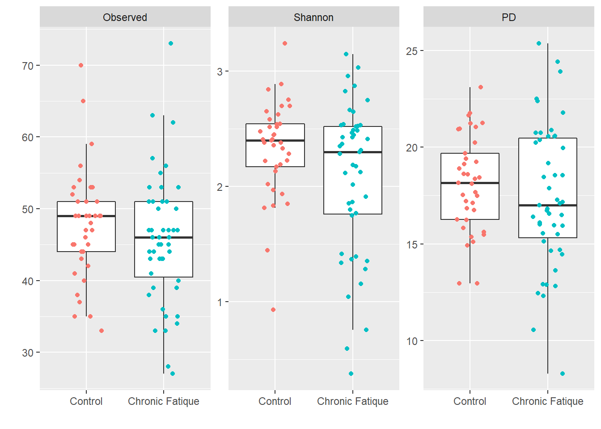
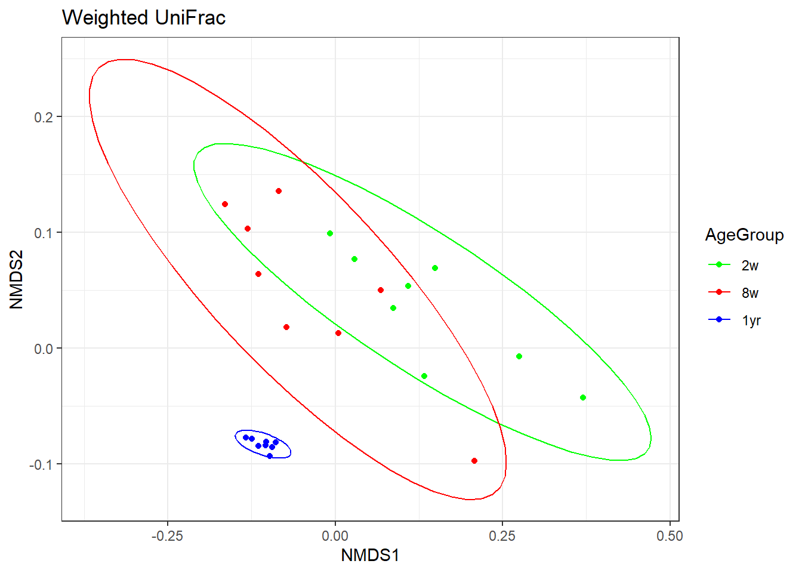

6 Free space
This was the fifth assignment for our portfolio. We had/have to fill 32 hours learning something new that will be useful for our internship next year and possibly our job.
I decided I wanted to gain more experience in analysing microbiota data, because I’d like to work with bacteria in my job. So, I searched the internet for packages and such, and found a course about microbiota analysis that I decided to follow.
Link to the course: https://rstudio-pubs-static.s3.amazonaws.com/268156_d3ea37937f4f4469839ab6fa2c483842.html
6.1 Course: Microbiota analysis in R
In this course, we will be looking at the fecal bacterial microbiota of 8 calves at ages 2 weeks, 8 weeks and 1 year old and correlating them with variables such as weight gain, expressed as Average Daily Gain in Kilograms(ADGKG), and gastrointestinal short chain fatty acids, SCFA.
# install.packages("ape")
library(ape)
library(tidyverse)
library(dplyr)
library(ggplot2)
library(gplots)
library(lme4)
library(phangorn)
library(plotly)
library(tidyr)
library(here)
library(vegan)
# install.packages("VennDiagram")
library(VennDiagram)
# Installed Java from: https://www.java.com/en/download/manual.jsp
# Installed Java JDk from: https://www.oracle.com/java/technologies/downloads/#jdk18-windows
# install.packages("rJava")
library(rJava)
# install.packages("venneuler")
# library(venneuler) # R kapt er steeds mee als ik deze wil laden
# if (!require("BiocManager", quietly = TRUE))
# install.packages("BiocManager")
# BiocManager::install(version = "3.15") # Instead of source("https://bioconductor.org/biocLite.R")
# BiocManager::install("phyloseq") # Instead of biocLite("phyloseq") ?
library(phyloseq)# Downloaded the data from: https://github.com/kdillmcfarland/workshops_UW_Madison/tree/master/Microbiota_analysis_R/Data
OTU = read.table("Data/example.final.an.unique_list.0.03.norm.shared.txt", header = TRUE, sep = "\t")
tax = read.table("Data/example.final.an.unique_list.0.03.cons.taxonomy.txt", header = TRUE, sep = "\t")
meta = read.table("Data/example.metadata.txt", header = TRUE, row.names = 1, sep = "\t")
SCFA = read.table("Data/example.SCFA.txt", header = TRUE, row.names = 1, sep = "\t")# Setting the "Group" column as row names in the OTU dataset
row.names(OTU) = OTU$Group
# Removing the columns that are not OTU counts
OTU.clean = OTU[,-which(names(OTU) %in% c("label", "numOtus", "Group"))]
# Setting the "OTU" column as row names in the taxonomy table
row.names(tax) = tax$OTU
# Removing the OTU's that aren't present in the OTU.clean dataset
tax.clean = tax[row.names(tax) %in% colnames(OTU.clean),]
# Separating the taxonomy table so each level has its own column
tax.clean = separate(tax.clean, Taxonomy, into = c("Domain", "Phylum", "Class", "Order", "Family", "Genus", "Species", "Strain"), sep = ";")
# Removing the "Size", "Strain" and "OTU" columns because these are now row names
tax.clean = tax.clean[,-which(names(tax.clean) %in% c("Size", "Strain", "OTU"))]
# Making sure the three datasets have samples in the same order
OTU.clean = OTU.clean[order(row.names(OTU.clean)),]
meta = meta[order(row.names(meta)),]
SCFA = SCFA[order(row.names(SCFA)),]
# set.seed to make the analysis reproducible
set.seed(8765)6.2 Looking at the alpha diversity
Alpha diversity is the diversity within a sample. It looks at richness, which is the amount of OTU’s in each sample, and at evenness, which is how evenly the different OTU’s are distributed within the sample.
# Creating a 2x2 plot environment so we can see all 4 metrics at once
par(mfrow = c(2,2))
# Plotting the four metrics
hist(meta$shannon, main = "Shannon diversity", xlab = "", breaks = 10)
hist(meta$simpson, main = "Simpson diversity", xlab = "", breaks = 10)
hist(meta$chao, main = "Chao richness", xlab = "", breaks = 15)
hist(meta$ace, main = "ACE richness", xlab = "", breaks = 15)
None of the data are normally distributed. Simpson diversity is very often skewed as seen in this histogram, so we’ll calculate 1/Simpson and plot the metrics again.
# Creating a 2x2 environment
par(mfrow = c(2,2))
# Plotting the four metrics again
hist(meta$shannon, main = "Shannon diversity", xlab = "", breaks = 10)
hist(1/meta$simpson, main = "Inverse Simpson diversity", xlab = "", breaks = 10)
hist(meta$chao, main = "Chao richness", xlab = "", breaks = 15)
hist(meta$ace, main = "ACE richness", xlab = "", breaks = 15)
Now the Simpson diversity is distributed similarly to the other richness metrics.
Next, we’ll test the four metrics for normal distribution.
shapiro.test(meta$shannon)##
## Shapiro-Wilk normality test
##
## data: meta$shannon
## W = 0.91511, p-value = 0.0456shapiro.test(1/meta$simpson)##
## Shapiro-Wilk normality test
##
## data: 1/meta$simpson
## W = 0.74821, p-value = 4.69e-05shapiro.test(meta$chao)##
## Shapiro-Wilk normality test
##
## data: meta$chao
## W = 0.80636, p-value = 0.0003749shapiro.test(meta$ace)##
## Shapiro-Wilk normality test
##
## data: meta$ace
## W = 0.83017, p-value = 0.0009573
None of the richness metrics are normally distributed, which was to be expected from the graphs we’ve seen. So we cannot run any tests that assume the data is normally distributed.
For illustration purposes, we’ll run the ANOVA test with the Shannon’s diversity because that’s the closest to normally distributed. We’ll look at if age impacts the Shannon diversity of the fecal microbiota.
aov.shannon.age = aov(shannon ~ AgeGroup, data = meta)
summary(aov.shannon.age)## Df Sum Sq Mean Sq F value Pr(>F)
## AgeGroup 2 42.98 21.489 103.4 1.35e-11 ***
## Residuals 21 4.36 0.208
## ---
## Signif. codes: 0 '***' 0.001 '**' 0.01 '*' 0.05 '.' 0.1 ' ' 1
We’ll run Tukey’s honest significance test to do pairwise comparisons between groups and correct for multiple comparisons.
TukeyHSD(aov.shannon.age)## Tukey multiple comparisons of means
## 95% family-wise confidence level
##
## Fit: aov(formula = shannon ~ AgeGroup, data = meta)
##
## $AgeGroup
## diff lwr upr p adj
## 2w-1yr -3.270063 -3.8446230 -2.695503 0.0e+00
## 8w-1yr -1.830903 -2.4054628 -1.256342 2.0e-07
## 8w-2w 1.439160 0.8646001 2.013720 8.5e-06
It’s clear that all age groups have significantly different diversity. In a plot, we can clearly see that diversity increases with ages.
# Re-ordering the groups
meta$AgeGroup.ord = factor(meta$AgeGroup, c("2w", "8w", "1yr"))
# Returning the plot area to 1x1
par(mfrow = c(1,1))
# Plotting the diversity
boxplot(shannon ~ AgeGroup.ord, data = meta,
ylab = "Shannon's diversity",
xlab = "Age group") # Added the xlab myself because it looks better :)
To illustrate some non-parametric tests, we’ll use Chao’s richness estimate. Age is categorical, so we’ll use Kruskal-Wallis.
kruskal.test(chao ~ AgeGroup, data = meta)##
## Kruskal-Wallis rank sum test
##
## data: chao by AgeGroup
## Kruskal-Wallis chi-squared = 19.28, df = 2, p-value = 6.507e-05
We can also test pairwise within age groups with Wilcoxon Rank Sum Tests.
pairwise.wilcox.test(meta$chao, meta$AgeGroup, p.adjust.method = "fdr")##
## Pairwise comparisons using Wilcoxon rank sum exact test
##
## data: meta$chao and meta$AgeGroup
##
## 1yr 2w
## 2w 0.00023 -
## 8w 0.00023 0.00186
##
## P value adjustment method: fdr
Just like the diversity, richness also increases with age.
# Creating a 1x1 plot environment
par(mfrow = c(1,1))
# Plotting the richness
boxplot(chao ~ AgeGroup.ord, data = meta,
ylab = "Chao richness",
xlab = "Age group") # Again, added the xlab myself for aesthetics :)
Average Daily Gain is a continuous variable, so we’ll use a linear model to visualise it.
We’ll use Shannon’s diversity again to run some tests that are meant for normally distributed data. We’ll take a look at if the ADG impacts the Shannon diversity of the fecal microbiota.
glm.shannon.ADG = glm(shannon ~ ADGKG, data = meta)
summary(glm.shannon.ADG)##
## Call:
## glm(formula = shannon ~ ADGKG, data = meta)
##
## Deviance Residuals:
## Min 1Q Median 3Q Max
## -2.49110 -1.11216 -0.01749 1.53658 1.84728
##
## Coefficients:
## Estimate Std. Error t value Pr(>|t|)
## (Intercept) 3.62565 1.01390 3.576 0.00169 **
## ADGKG -0.03407 0.97805 -0.035 0.97253
## ---
## Signif. codes: 0 '***' 0.001 '**' 0.01 '*' 0.05 '.' 0.1 ' ' 1
##
## (Dispersion parameter for gaussian family taken to be 2.151815)
##
## Null deviance: 47.343 on 23 degrees of freedom
## Residual deviance: 47.340 on 22 degrees of freedom
## AIC: 90.412
##
## Number of Fisher Scoring iterations: 2
This shows that the intercept of our model is signficantly different from 0, bu the slope is not, and the slope is our variable of interest.
Next, let’s plot the glm.
plot(shannon ~ ADGKG, data = meta)
abline(glm.shannon.ADG)
To illustrate non-normally distributed data, we’ll use Chao’s richness estimate again. We’ll first use the Gaussian distribution, but we already know this isn’t a good fit.
gaussian.chao.adg = glm(chao ~ADGKG, data = meta, family = "gaussian")
par(mfrow = c(1,2))
plot(gaussian.chao.adg, which = c(1,2))
Next, we’ll plot the quasipoisson distribuiton.
qp.chao.ADG = glm(chao ~ ADGKG, data = meta, family = "quasipoisson")
par(mfrow = c(1,2))
plot(qp.chao.ADG, which = c(1,2))
The quasipoisson distribution fits much better than the Gaussian distribution, so we’ll use quasipoisson for further calculations.
summary(qp.chao.ADG)##
## Call:
## glm(formula = chao ~ ADGKG, family = "quasipoisson", data = meta)
##
## Deviance Residuals:
## Min 1Q Median 3Q Max
## -24.36 -17.05 -10.66 18.81 26.91
##
## Coefficients:
## Estimate Std. Error t value Pr(>|t|)
## (Intercept) 6.4528 0.5561 11.605 7.54e-11 ***
## ADGKG -0.1859 0.5438 -0.342 0.736
## ---
## Signif. codes: 0 '***' 0.001 '**' 0.01 '*' 0.05 '.' 0.1 ' ' 1
##
## (Dispersion parameter for quasipoisson family taken to be 374.2485)
##
## Null deviance: 8117.2 on 23 degrees of freedom
## Residual deviance: 8074.4 on 22 degrees of freedom
## AIC: NA
##
## Number of Fisher Scoring iterations: 5
We’ll plot Chao and ADGKG again, to look at the correlation.
par(mfrow = c(1,1))
plot(log(chao) ~ ADGKG, data = meta, ylab = "ln(Chao's richness)")
abline(qp.chao.ADG)
Looking at the graph, there is nog significant correlation between Chao’s richness and the Average Daily Gain.
To test if age and ADG impacts diversity, we’ll conduct an ANOVA test.
aov.shannon.all = aov(shannon ~ AgeGroup*ADGKG, data = meta)
summary(aov.shannon.all)## Df Sum Sq Mean Sq F value Pr(>F)
## AgeGroup 2 42.98 21.489 95.472 2.61e-10 ***
## ADGKG 1 0.05 0.054 0.239 0.631
## AgeGroup:ADGKG 2 0.26 0.130 0.576 0.572
## Residuals 18 4.05 0.225
## ---
## Signif. codes: 0 '***' 0.001 '**' 0.01 '*' 0.05 '.' 0.1 ' ' 1
We can see that the interaction between age and ADG does not significantly impact Shannon’s diversity, so we’ll remove that variable and run the test again.
aov.shannon.all2 = aov(shannon ~ AgeGroup+ADGKG, data = meta)
summary(aov.shannon.all2)## Df Sum Sq Mean Sq F value Pr(>F)
## AgeGroup 2 42.98 21.489 99.70 3.96e-11 ***
## ADGKG 1 0.05 0.054 0.25 0.623
## Residuals 20 4.31 0.216
## ---
## Signif. codes: 0 '***' 0.001 '**' 0.01 '*' 0.05 '.' 0.1 ' ' 1
This test tells us that only age impacts Shannon’s diversity significantly, but we do not know which age groups differ significantly from eachother. To test this, we can run TukeyHSD with just age.
TukeyHSD(aov.shannon.all)## Tukey multiple comparisons of means
## 95% family-wise confidence level
##
## Fit: aov(formula = shannon ~ AgeGroup * ADGKG, data = meta)
##
## $AgeGroup
## diff lwr upr p adj
## 2w-1yr -3.270063 -3.875469 -2.664657 0.00e+00
## 8w-1yr -1.830903 -2.436309 -1.225496 1.20e-06
## 8w-2w 1.439160 0.833754 2.044567 2.81e-05
With this test, however, ADGKG is ignored because it’s continuous.
We’ll run the glm instead.
glm.shannon.all = glm(shannon ~ AgeGroup*ADGKG, data = meta)
summary(glm.shannon.all)##
## Call:
## glm(formula = shannon ~ AgeGroup * ADGKG, data = meta)
##
## Deviance Residuals:
## Min 1Q Median 3Q Max
## -1.0301 -0.2468 0.0894 0.1572 0.7624
##
## Coefficients:
## Estimate Std. Error t value Pr(>|t|)
## (Intercept) 5.7123 2.5928 2.203 0.0409 *
## AgeGroup2w -3.3969 2.6197 -1.297 0.2111
## AgeGroup8w -2.9610 2.7554 -1.075 0.2967
## ADGKG -0.4481 2.7599 -0.162 0.8728
## AgeGroup2w:ADGKG 0.1228 2.7848 0.044 0.9653
## AgeGroup8w:ADGKG 1.0750 2.8763 0.374 0.7130
## ---
## Signif. codes: 0 '***' 0.001 '**' 0.01 '*' 0.05 '.' 0.1 ' ' 1
##
## (Dispersion parameter for gaussian family taken to be 0.22508)
##
## Null deviance: 47.3425 on 23 degrees of freedom
## Residual deviance: 4.0514 on 18 degrees of freedom
## AIC: 39.413
##
## Number of Fisher Scoring iterations: 2
We can see that none of the interaction terms, which are AgeGroup2w:ADGKG and AgeGroup8w:ADGKG, are significant. So we’ll remove these, by changing AgeGroup*ADGKG to AgeGroup+ADGKG, and run the glm again.
glm.shannon.all2 = glm(shannon ~ AgeGroup+ADGKG, data = meta)
summary(glm.shannon.all2)##
## Call:
## glm(formula = shannon ~ AgeGroup + ADGKG, data = meta)
##
## Deviance Residuals:
## Min 1Q Median 3Q Max
## -0.95299 -0.25858 0.07643 0.30409 0.74487
##
## Coefficients:
## Estimate Std. Error t value Pr(>|t|)
## (Intercept) 5.4459 0.3487 15.619 1.14e-12 ***
## AgeGroup2w -3.2760 0.2324 -14.094 7.55e-12 ***
## AgeGroup8w -1.7989 0.2408 -7.471 3.30e-07 ***
## ADGKG -0.1639 0.3281 -0.500 0.623
## ---
## Signif. codes: 0 '***' 0.001 '**' 0.01 '*' 0.05 '.' 0.1 ' ' 1
##
## (Dispersion parameter for gaussian family taken to be 0.2155447)
##
## Null deviance: 47.3425 on 23 degrees of freedom
## Residual deviance: 4.3109 on 20 degrees of freedom
## AIC: 36.903
##
## Number of Fisher Scoring iterations: 2
Now that we’ve removed the interaction terms, the glm model shows age as significant.
This can also be done with non-normally distributed data, like Chao’s richness.
qp.chao.all = glm(chao ~ AgeGroup*ADGKG, data = meta, family = "quasipoisson")
summary(qp.chao.all)##
## Call:
## glm(formula = chao ~ AgeGroup * ADGKG, family = "quasipoisson",
## data = meta)
##
## Deviance Residuals:
## Min 1Q Median 3Q Max
## -7.774 -3.430 -0.140 3.692 5.277
##
## Coefficients:
## Estimate Std. Error t value Pr(>|t|)
## (Intercept) 6.99825 0.71122 9.840 1.14e-08 ***
## AgeGroup2w -1.61539 0.75272 -2.146 0.0458 *
## AgeGroup8w -2.24498 0.86846 -2.585 0.0187 *
## ADGKG 0.01751 0.75699 0.023 0.9818
## AgeGroup2w:ADGKG -0.42295 0.80094 -0.528 0.6039
## AgeGroup8w:ADGKG 0.86269 0.86550 0.997 0.3321
## ---
## Signif. codes: 0 '***' 0.001 '**' 0.01 '*' 0.05 '.' 0.1 ' ' 1
##
## (Dispersion parameter for quasipoisson family taken to be 18.86331)
##
## Null deviance: 8117.2 on 23 degrees of freedom
## Residual deviance: 348.5 on 18 degrees of freedom
## AIC: NA
##
## Number of Fisher Scoring iterations: 4
Just like the Shannon’s diversity, the interaction terms are not significant, so we’ll remove those and run the glm again.
qp.chao.all2 = glm(chao ~ AgeGroup+ADGKG, data = meta, family = "quasipoisson")
summary(qp.chao.all2)##
## Call:
## glm(formula = chao ~ AgeGroup + ADGKG, family = "quasipoisson",
## data = meta)
##
## Deviance Residuals:
## Min 1Q Median 3Q Max
## -7.783 -3.452 -1.378 3.744 8.184
##
## Coefficients:
## Estimate Std. Error t value Pr(>|t|)
## (Intercept) 7.03944 0.23567 29.870 < 2e-16 ***
## AgeGroup2w -1.98090 0.14862 -13.329 2.08e-11 ***
## AgeGroup8w -1.24286 0.11926 -10.422 1.57e-09 ***
## ADGKG -0.02643 0.24530 -0.108 0.915
## ---
## Signif. codes: 0 '***' 0.001 '**' 0.01 '*' 0.05 '.' 0.1 ' ' 1
##
## (Dispersion parameter for quasipoisson family taken to be 23.74583)
##
## Null deviance: 8117.20 on 23 degrees of freedom
## Residual deviance: 476.31 on 20 degrees of freedom
## AIC: NA
##
## Number of Fisher Scoring iterations: 4
As we can see, age is now significant for richness aswell.
We sampled the same animals over time, so this is a repeated measures design. We can add this component with (1|animal) in the lmer function.
rm.shannon.all = lmer(shannon ~ AgeGroup+ADGKG + (1|Animal), data = meta)
summary(rm.shannon.all)## Linear mixed model fit by REML ['lmerMod']
## Formula: shannon ~ AgeGroup + ADGKG + (1 | Animal)
## Data: meta
##
## REML criterion at convergence: 32.4
##
## Scaled residuals:
## Min 1Q Median 3Q Max
## -1.83117 -0.45932 0.09539 0.49972 1.53368
##
## Random effects:
## Groups Name Variance Std.Dev.
## Animal (Intercept) 0.03793 0.1948
## Residual 0.17819 0.4221
## Number of obs: 24, groups: Animal, 8
##
## Fixed effects:
## Estimate Std. Error t value
## (Intercept) 5.3906 0.3520 15.313
## AgeGroup2w -3.2739 0.2114 -15.486
## AgeGroup8w -1.8104 0.2208 -8.201
## ADGKG -0.1049 0.3321 -0.316
##
## Correlation of Fixed Effects:
## (Intr) AgGrp2 AgGrp8
## AgeGroup2w -0.350
## AgeGroup8w -0.027 0.461
## ADGKG -0.884 0.057 -0.293
Very little, 0.0379, of the variance is explained by the animal random effect. This means that we don’t have to include the repeated measures in our final model, but it did need to be checked!
In conclusion on the alpha diversity: The diversity and richness of the fecal microbiota increases as the dairy cows age. Animal growth, measured by ADG, does not correlate with the diversity or richness of the fecal community.
6.3 Looking at the beta diversity
Beta diversity looks at the dissimilarity between samples, instead of within a sample, like the alpha diversity.
First, we’ll calculate the non-metric multidimensional scaling using the Bray-Curtis metric. This metric takes into account the presence or absence of OTU’s and the abundance of the OTU’s that are present in the samples. So, this metric looks at richness and diversity.
BC.nmds = metaMDS(OTU.clean, distance = "bray", k=2, trymax = 1000)## Square root transformation
## Wisconsin double standardization
## Run 0 stress 0.06208119
## Run 1 stress 0.06210577
## ... Procrustes: rmse 0.00142196 max resid 0.005448642
## ... Similar to previous best
## Run 2 stress 0.06208123
## ... Procrustes: rmse 0.0002939818 max resid 0.0006667466
## ... Similar to previous best
## Run 3 stress 0.06208111
## ... New best solution
## ... Procrustes: rmse 0.000204731 max resid 0.000465473
## ... Similar to previous best
## Run 4 stress 0.0620811
## ... New best solution
## ... Procrustes: rmse 1.986518e-05 max resid 4.33287e-05
## ... Similar to previous best
## Run 5 stress 0.06208117
## ... Procrustes: rmse 5.794984e-05 max resid 0.0001305115
## ... Similar to previous best
## Run 6 stress 0.06208113
## ... Procrustes: rmse 3.672359e-05 max resid 8.23805e-05
## ... Similar to previous best
## Run 7 stress 0.06210572
## ... Procrustes: rmse 0.001378329 max resid 0.005368037
## ... Similar to previous best
## Run 8 stress 0.06210378
## ... Procrustes: rmse 0.001413908 max resid 0.005105586
## ... Similar to previous best
## Run 9 stress 0.06208125
## ... Procrustes: rmse 0.0001224896 max resid 0.0002747291
## ... Similar to previous best
## Run 10 stress 0.06208111
## ... Procrustes: rmse 1.212188e-05 max resid 2.522293e-05
## ... Similar to previous best
## Run 11 stress 0.06208121
## ... Procrustes: rmse 0.0002127404 max resid 0.0004849115
## ... Similar to previous best
## Run 12 stress 0.06210373
## ... Procrustes: rmse 0.001425856 max resid 0.005115974
## ... Similar to previous best
## Run 13 stress 0.3701749
## Run 14 stress 0.06210382
## ... Procrustes: rmse 0.001409512 max resid 0.005096637
## ... Similar to previous best
## Run 15 stress 0.06208124
## ... Procrustes: rmse 9.356523e-05 max resid 0.0002029152
## ... Similar to previous best
## Run 16 stress 0.06210382
## ... Procrustes: rmse 0.001453464 max resid 0.005117477
## ... Similar to previous best
## Run 17 stress 0.06210562
## ... Procrustes: rmse 0.001356805 max resid 0.005299213
## ... Similar to previous best
## Run 18 stress 0.06208121
## ... Procrustes: rmse 8.948438e-05 max resid 0.0001972643
## ... Similar to previous best
## Run 19 stress 0.06208123
## ... Procrustes: rmse 0.0001043305 max resid 0.0002338428
## ... Similar to previous best
## Run 20 stress 0.06210572
## ... Procrustes: rmse 0.00138274 max resid 0.005378219
## ... Similar to previous best
## *** Solution reached
We’ve reached a convergent solution at around 20 iterations, and the stress is very low, 0.06. That means that 2 axis are sufficient to plot our data.
We’ll plot our data with different colors for each age group.
par(mfrow = c(1,1))
# Creating a blank plot for the nmds
plot(BC.nmds, type = "n", main = "Bray-Curtis")
# Adding the points
points(BC.nmds, display = "sites", pch = 20, col=c("blue", "green", "red"))[meta$AgeGroup] # [Meta$AgeGroup] buiten haakjes gehaald## NULL# Adding a legend
legend(-5.5, 2.5, legend = c("2w", "8w", "1yr"), col=c("green", "red", "blue"), pch = 20)
We can also calculate the nMDS for the Jaccard metric. This metric only looks at the presence or absence of OTU’s, so it only looks at richness.
J.nmds = metaMDS(OTU.clean, distance = "jaccard", k=2, trymax = 1000)## Square root transformation
## Wisconsin double standardization
## Run 0 stress 0.06208109
## Run 1 stress 0.0620812
## ... Procrustes: rmse 0.000177083 max resid 0.0003999569
## ... Similar to previous best
## Run 2 stress 0.06210582
## ... Procrustes: rmse 0.001409216 max resid 0.005429768
## ... Similar to previous best
## Run 3 stress 0.06210567
## ... Procrustes: rmse 0.00137946 max resid 0.005369397
## ... Similar to previous best
## Run 4 stress 0.06208119
## ... Procrustes: rmse 0.0001744131 max resid 0.0003942546
## ... Similar to previous best
## Run 5 stress 0.06208115
## ... Procrustes: rmse 0.000130016 max resid 0.0002909929
## ... Similar to previous best
## Run 6 stress 0.06208112
## ... Procrustes: rmse 0.0001066234 max resid 0.0002384603
## ... Similar to previous best
## Run 7 stress 0.0620811
## ... Procrustes: rmse 9.468274e-05 max resid 0.0002141725
## ... Similar to previous best
## Run 8 stress 0.0621059
## ... Procrustes: rmse 0.001426217 max resid 0.005460826
## ... Similar to previous best
## Run 9 stress 0.06208124
## ... Procrustes: rmse 0.0002015441 max resid 0.0004545264
## ... Similar to previous best
## Run 10 stress 0.0620812
## ... Procrustes: rmse 0.0001797232 max resid 0.0004060386
## ... Similar to previous best
## Run 11 stress 0.06208109
## ... New best solution
## ... Procrustes: rmse 6.139566e-05 max resid 0.0001371443
## ... Similar to previous best
## Run 12 stress 0.0621038
## ... Procrustes: rmse 0.001406932 max resid 0.005095216
## ... Similar to previous best
## Run 13 stress 0.06208126
## ... Procrustes: rmse 0.0001414878 max resid 0.0003183287
## ... Similar to previous best
## Run 14 stress 0.06208108
## ... New best solution
## ... Procrustes: rmse 3.770942e-05 max resid 7.95009e-05
## ... Similar to previous best
## Run 15 stress 0.06210568
## ... Procrustes: rmse 0.001379045 max resid 0.005369661
## ... Similar to previous best
## Run 16 stress 0.06208111
## ... Procrustes: rmse 8.244032e-05 max resid 0.0001835168
## ... Similar to previous best
## Run 17 stress 0.06208123
## ... Procrustes: rmse 0.0001586643 max resid 0.0003545319
## ... Similar to previous best
## Run 18 stress 0.06208122
## ... Procrustes: rmse 0.0001644494 max resid 0.0003672165
## ... Similar to previous best
## Run 19 stress 0.06208112
## ... Procrustes: rmse 7.816312e-05 max resid 0.0001743423
## ... Similar to previous best
## Run 20 stress 0.0620811
## ... Procrustes: rmse 7.313823e-05 max resid 0.0001625506
## ... Similar to previous best
## *** Solution reached
With this metric, we’ve also reached a convergent solution after 20 iterations. The stress is also very low for this metric, 0.06. So, we’ll plot this metric with 2 axis aswell.
plot(J.nmds, type = "n", main = "Jaccard")
points(J.nmds, display = "sites", pch = 20, col=c("blue", "green", "red"))[meta$AgeGroup]## NULLlegend(-3, 1.5, legend=c("2w", "8w", "1yr"), col = c("green", "red", "blue"), pch = 20)
The values in the plot are somewhat different, but the distributions are very similar. That’s because Jaccard = 2xBray-Curtis/(1+Bray-Curtis).
We can also plot the standard error ellipses of the nMDS data. We’ll plot the 99% confidence interval of the Bray-Curtis metric.
plot(BC.nmds, type = "n", main = "Bray-Curtis")
legend(-5.5, 2.5, legend = c("2w", "8w", "1yr"), col = c("green", "red", "blue"), pch = 20)
# Ellipse for 2 weeks
ordiellipse(BC.nmds, groups = meta$AgeGroup, display = "sites", kind = "se", conf = 0.99, label = FALSE, col = "green", draw = "polygon", alpha = 200, show.groups = c("2w"), border = FALSE)
# Ellipse for 8 weeks
ordiellipse(BC.nmds, groups = meta$AgeGroup, display = "sites", kind = "se", conf = 0.99, label = FALSE, col = "red", draw = "polygon", alpha = 200, show.groups = c("8w"), border = FALSE)
# ELLipse for 1 year
ordiellipse(BC.nmds, groups = meta$AgeGroup, display = "sites", kind = "se", conf = 0.99, label = FALSE, col = "blue", draw = "polygon", alpha = 200, show.groups = c("1yr"), border = FALSE)
If the stress is high, over 0.3, it’s better to increase to 3 axes.
We’ll first calculate the Bray-Curtis nMDS for a 3-axis plot.
BC.nmds.3D = metaMDS(OTU.clean, distance = "bray", k=3, trymax=1000)## Square root transformation
## Wisconsin double standardization
## Run 0 stress 0.04686211
## Run 1 stress 0.04741561
## Run 2 stress 0.04673316
## ... New best solution
## ... Procrustes: rmse 0.01078619 max resid 0.03453509
## Run 3 stress 0.05061342
## Run 4 stress 0.04740116
## Run 5 stress 0.04984351
## Run 6 stress 0.04747471
## Run 7 stress 0.05226505
## Run 8 stress 0.0529536
## Run 9 stress 0.04741183
## Run 10 stress 0.04575764
## ... New best solution
## ... Procrustes: rmse 0.03871705 max resid 0.1297458
## Run 11 stress 0.05084344
## Run 12 stress 0.04719045
## Run 13 stress 0.04864532
## Run 14 stress 0.04750072
## Run 15 stress 0.04793837
## Run 16 stress 0.04579474
## ... Procrustes: rmse 0.004492898 max resid 0.01438546
## Run 17 stress 0.05069325
## Run 18 stress 0.04857979
## Run 19 stress 0.05058111
## Run 20 stress 0.04859455
## Run 21 stress 0.04996549
## Run 22 stress 0.04739851
## Run 23 stress 0.04747497
## Run 24 stress 0.04675354
## Run 25 stress 0.04747484
## Run 26 stress 0.04861683
## Run 27 stress 0.04575768
## ... Procrustes: rmse 0.0001087933 max resid 0.0001902161
## ... Similar to previous best
## *** Solution reached
We’ll extract the x, y and z for the nMDS, and then plot them.
BCxyz = scores(BC.nmds.3D, display = "sites")
BCxyz## NMDS1 NMDS2 NMDS3
## 5017.1yr.F -4.7877193 0.32878559 -0.204579523
## 5017.2w.F 3.1847627 0.05697846 1.484325743
## 5017.8w.F 1.0503489 -2.11932201 -1.217100783
## 5020.1yr.F -4.7466509 0.24479143 -0.001927473
## 5020.2w.F 3.4956397 -1.01621364 1.008439783
## 5020.8w.F 1.5785763 -1.92688899 0.465285369
## 5026.1yr.F -4.7617021 0.20961333 0.209854984
## 5026.2w.F 3.3964195 1.09611959 -0.615338225
## 5026.8w.F 3.1475032 2.07012741 1.477070476
## 5031.1yr.F -4.7920071 0.44153808 0.196685523
## 5031.2w.F 3.3507672 0.48092133 -1.491382237
## 5031.8w.F 0.8516766 -1.63544389 0.254264412
## 5037.1yr.F -4.8418075 0.48746059 -0.004313703
## 5037.2w.F 3.6570393 0.26299035 -0.511188778
## 5037.8w.F 3.1287853 -0.82431199 -0.025514353
## 5041.1yr.F -4.7617047 0.28520072 0.060756551
## 5041.2w.F 3.1646155 2.42901236 -1.216761595
## 5041.8w.F 1.0838533 -2.57296922 -0.236134615
## 5045.1yr.F -4.7419263 0.16694129 0.005568155
## 5045.2w.F 1.5045514 3.11037881 -0.462668248
## 5045.8w.F 1.4782189 -2.16474462 -0.450092185
## 5053.1yr.F -4.8160856 0.39888230 -0.016335985
## 5053.2w.F 3.2925437 2.29778435 0.813017161
## 5053.8w.F 0.8843018 -2.10763164 0.478069543plot_ly(x=BCxyz[,1], y=BCxyz[,2], z=BCxyz[,3], type = "scatter3d", mode = "markers", color = meta$AgeGroup, colors = c("blue", "green", "red"))
3D plots are difficult to interpret in articles, so many authors choose to create two 2D plots instead.
par(mfrow = c(1,2))
# Plotting axis 1 and 2, which are x and y
plot(BCxyz[,1], BCxyz[,2], main = "Bray-Curtis 1:2", pch = 20, col = c("blue", "green", "red"))[meta$AgeGroup]## NULLlegend(-5.4, 3, legend = c("2w", "8w", "1yr"), col = c("green", "red", "blue"), pch = 20)
# Plotting axis 1 and 3, which are x and z
plot(BCxyz[,1], BCxyz[,3], main = "Bray-Curtis 1:3", pch = 20, col = c("blue", "green", "red"))[meta$AgeGroup]
## NULL
The most common type of beta-diversity metric is UniFrac. This metric takes phylogenetic relationships into account, as opposed to Bray-Curtis and Jaccard. So, with UniFrac, samples with different OTU’s from the same genus will be more similar than samples with OTU’s from different genera. The drawback of UniFrac is that it’s sensitive to low abundance OTU’s.
To plot UniFrac, we first have to make a phyloseq object. That means we need OTU.clean, meta and tax.clean data. After we’ve created the three separate objects, we’ll merge them into one.
OTU.UF = otu_table(as.matrix(OTU.clean), taxa_are_rows = FALSE)
tax.UF = tax_table(as.matrix(tax.clean))
meta.UF = sample_data(meta)
# Merging them into an object of class phyloseq
physeq = phyloseq(OTU.UF, tax.UF, meta.UF)
To add the phylogenetic component to UniFrac, we need a rooted phylogenetic tree of the OTU’s. In this workshop, it had already been calculated and stored in the dataset ‘NJ.tree.Rdata’. So, we’ll load this data and add it to the physeq object. Then, we’ll look at the tree and its components.
load("Data/NJ.tree.Rdata") # Downloaded it from GitHub and stored it in the folder "Data"
physeq.tree = merge_phyloseq(physeq, NJ.tree)
physeq.tree## phyloseq-class experiment-level object
## otu_table() OTU Table: [ 5002 taxa and 24 samples ]
## sample_data() Sample Data: [ 24 samples by 9 sample variables ]
## tax_table() Taxonomy Table: [ 5002 taxa by 7 taxonomic ranks ]
## phy_tree() Phylogenetic Tree: [ 5002 tips and 5000 internal nodes ]
Next, we’ll calculate the weighted UniFrac and ordinate it into nMDS.
wUF.ordu = ordinate(physeq.tree, method = "NMDS", distance = "unifrac", weighted = TRUE)## Run 0 stress 0.08645307
## Run 1 stress 0.08645305
## ... New best solution
## ... Procrustes: rmse 1.95726e-05 max resid 5.360447e-05
## ... Similar to previous best
## Run 2 stress 0.1335688
## Run 3 stress 0.1462923
## Run 4 stress 0.08645302
## ... New best solution
## ... Procrustes: rmse 0.0003084251 max resid 0.0008232998
## ... Similar to previous best
## Run 5 stress 0.08645296
## ... New best solution
## ... Procrustes: rmse 0.0002326256 max resid 0.0006198192
## ... Similar to previous best
## Run 6 stress 0.1157451
## Run 7 stress 0.1143564
## Run 8 stress 0.1317675
## Run 9 stress 0.08645297
## ... Procrustes: rmse 0.0001396108 max resid 0.0003650213
## ... Similar to previous best
## Run 10 stress 0.08808604
## Run 11 stress 0.08645293
## ... New best solution
## ... Procrustes: rmse 5.607187e-05 max resid 0.000148279
## ... Similar to previous best
## Run 12 stress 0.115745
## Run 13 stress 0.08645302
## ... Procrustes: rmse 0.0001812108 max resid 0.00048756
## ... Similar to previous best
## Run 14 stress 0.1143564
## Run 15 stress 0.08659154
## ... Procrustes: rmse 0.004236648 max resid 0.01797805
## Run 16 stress 0.1295293
## Run 17 stress 0.08645307
## ... Procrustes: rmse 0.0001978456 max resid 0.0005319125
## ... Similar to previous best
## Run 18 stress 0.1347949
## Run 19 stress 0.08645294
## ... Procrustes: rmse 1.302835e-05 max resid 3.061646e-05
## ... Similar to previous best
## Run 20 stress 0.08808611
## *** Solution reached
Let’s plot the weighted UniFrac nMDS.
par(mfrow = c(1,1))
plot(wUF.ordu, type = "n", main = "Weighted UniFrac")
points(wUF.ordu, pch = 20, display = "sites", col = c("blue", "green", "red"))[meta$AgeGroup]## NULLlegend(0.3, 0.15, legend = c("2w", "8w", "1yr"), col = c("green", "red", "blue"), pch = 20)
We can also plot it with ggplot2.
plot_ordination(physeq.tree, wUF.ordu, type = "sites", color = "AgeGroup")+
scale_colour_manual(values = c("2w"="green", "8w"="red", "1yr"="blue"))+
theme_bw()+
ggtitle("Weighted UniFrac")
The Unweighted UniFrac can also be calculated and plotted.
uwUF.ordu = ordinate(physeq.tree, method = "NMDS", distance = "unifrac", weighted = FALSE)## Run 0 stress 9.695153e-05
## Run 1 stress 9.657832e-05
## ... New best solution
## ... Procrustes: rmse 7.750783e-05 max resid 0.0002776914
## ... Similar to previous best
## Run 2 stress 9.871795e-05
## ... Procrustes: rmse 8.086551e-05 max resid 0.0002819207
## ... Similar to previous best
## Run 3 stress 9.488623e-05
## ... New best solution
## ... Procrustes: rmse 7.261501e-05 max resid 0.0002642816
## ... Similar to previous best
## Run 4 stress 9.862006e-05
## ... Procrustes: rmse 1.701217e-05 max resid 5.025527e-05
## ... Similar to previous best
## Run 5 stress 9.806631e-05
## ... Procrustes: rmse 0.0001070473 max resid 0.0002353732
## ... Similar to previous best
## Run 6 stress 9.757454e-05
## ... Procrustes: rmse 3.985665e-05 max resid 0.0001388531
## ... Similar to previous best
## Run 7 stress 9.826177e-05
## ... Procrustes: rmse 9.722135e-05 max resid 0.0002191936
## ... Similar to previous best
## Run 8 stress 9.695708e-05
## ... Procrustes: rmse 7.448687e-05 max resid 0.0002751687
## ... Similar to previous best
## Run 9 stress 9.907648e-05
## ... Procrustes: rmse 9.310993e-05 max resid 0.0002388289
## ... Similar to previous best
## Run 10 stress 9.984534e-05
## ... Procrustes: rmse 3.384419e-05 max resid 0.0001260377
## ... Similar to previous best
## Run 11 stress 9.684607e-05
## ... Procrustes: rmse 0.0001319037 max resid 0.0003356478
## ... Similar to previous best
## Run 12 stress 9.69891e-05
## ... Procrustes: rmse 8.404145e-06 max resid 2.447679e-05
## ... Similar to previous best
## Run 13 stress 0.0002969569
## ... Procrustes: rmse 0.0003866364 max resid 0.0006715474
## ... Similar to previous best
## Run 14 stress 9.723199e-05
## ... Procrustes: rmse 3.731826e-05 max resid 0.0001336343
## ... Similar to previous best
## Run 15 stress 9.99257e-05
## ... Procrustes: rmse 0.0001270356 max resid 0.0003614341
## ... Similar to previous best
## Run 16 stress 9.955355e-05
## ... Procrustes: rmse 6.056256e-05 max resid 0.0001673759
## ... Similar to previous best
## Run 17 stress 9.589429e-05
## ... Procrustes: rmse 1.686683e-05 max resid 4.596185e-05
## ... Similar to previous best
## Run 18 stress 9.633493e-05
## ... Procrustes: rmse 3.660483e-05 max resid 0.0001324208
## ... Similar to previous best
## Run 19 stress 9.921893e-05
## ... Procrustes: rmse 1.085938e-05 max resid 1.669484e-05
## ... Similar to previous best
## Run 20 stress 9.637055e-05
## ... Procrustes: rmse 6.450683e-05 max resid 0.0001970587
## ... Similar to previous best
## *** Solution reachedplot_ordination(physeq.tree, uwUF.ordu, type = "sites", color = "AgeGroup")+
scale_colour_manual(values = c("2w" = "green", "8w" = "red", "1yr" = "blue"))+
theme_bw()+
ggtitle("Unweighted UniFrac")
We can also plot the ellipses of the Weighted UniFrac distances.
plot(wUF.ordu, type = "n", main = "Weighted UniFrac")
legend(0.3, 0.15, legend = c("2w","8w","1yr"), col = c("pink", "purple", "blue"), pch = 20)
# Ellipse for 2 weeks
ordiellipse(wUF.ordu, groups = meta$AgeGroup, display = "sites", kind = "se", conf = 0.99, label = FALSE, col = "pink", draw = "polygon", alpha = 200, show.groups = c("2w"), border = FALSE)
# Ellipse for 8 weeks
ordiellipse(wUF.ordu, groups = meta$AgeGroup, display = "sites", kind = "se", conf = 0.99, label = FALSE, col = "purple", draw = "polygon", alpha = 200, show.groups = c("8w"), border = FALSE)
# Ellipse for 1 year
ordiellipse(wUF.ordu, groups = meta$AgeGroup, display = "sites", kind = "se", conf = 0.99, label = FALSE, col = "blue", draw = "polygon", alpha = 200, show.groups = c("1yr"), border = FALSE)
Ellipses can also be plotted with ggplot2, although they look a bit different.
plot_ordination(physeq.tree, wUF.ordu, type = "sites", color = "AgeGroup")+
scale_colour_manual(values = c("2w" = "pink", "8w" = "purple", "1yr" = "blue"))+
theme_bw()+
stat_ellipse()+
ggtitle("Weighted UniFrac")
We can calculate UniFrac distances with UniFrac and ordinate it for 3-axes with metaMDS.
wUF.dist = UniFrac(physeq.tree, weighted = TRUE, normalized = TRUE)
wUF.nmds.3D = metaMDS(wUF.dist, method = "NMDS", k=3)## Run 0 stress 0.04217394
## Run 1 stress 0.05952403
## Run 2 stress 0.05952413
## Run 3 stress 0.04217396
## ... Procrustes: rmse 4.597236e-05 max resid 0.0001189685
## ... Similar to previous best
## Run 4 stress 0.04217403
## ... Procrustes: rmse 0.0001487937 max resid 0.0004561402
## ... Similar to previous best
## Run 5 stress 0.04217395
## ... Procrustes: rmse 6.845306e-05 max resid 0.0002343482
## ... Similar to previous best
## Run 6 stress 0.05952413
## Run 7 stress 0.042174
## ... Procrustes: rmse 0.0001351877 max resid 0.0004443447
## ... Similar to previous best
## Run 8 stress 0.06761596
## Run 9 stress 0.059524
## Run 10 stress 0.04217407
## ... Procrustes: rmse 0.0001709586 max resid 0.0005650254
## ... Similar to previous best
## Run 11 stress 0.04217396
## ... Procrustes: rmse 9.078681e-05 max resid 0.0003021391
## ... Similar to previous best
## Run 12 stress 0.04217405
## ... Procrustes: rmse 0.000168228 max resid 0.0005161761
## ... Similar to previous best
## Run 13 stress 0.04217398
## ... Procrustes: rmse 0.0001098377 max resid 0.0003567109
## ... Similar to previous best
## Run 14 stress 0.042174
## ... Procrustes: rmse 8.346652e-05 max resid 0.0002407597
## ... Similar to previous best
## Run 15 stress 0.04217407
## ... Procrustes: rmse 0.0001837054 max resid 0.0006272833
## ... Similar to previous best
## Run 16 stress 0.04217406
## ... Procrustes: rmse 0.0001481673 max resid 0.0003732481
## ... Similar to previous best
## Run 17 stress 0.04217395
## ... Procrustes: rmse 2.316957e-05 max resid 7.009862e-05
## ... Similar to previous best
## Run 18 stress 0.04217396
## ... Procrustes: rmse 8.182881e-05 max resid 0.0002803632
## ... Similar to previous best
## Run 19 stress 0.04217397
## ... Procrustes: rmse 0.0001031614 max resid 0.0003380335
## ... Similar to previous best
## Run 20 stress 0.04217399
## ... Procrustes: rmse 0.0001082464 max resid 0.0003554024
## ... Similar to previous best
## *** Solution reached
Then, we’ll take out the xyz values and plot them with plotly.
wUFxyz = scores(wUF.nmds.3D, display = "sites")
wUFxyz## NMDS1 NMDS2 NMDS3
## 5017.1yr.F -0.19592858 0.107838852 0.07970378
## 5017.2w.F 0.40344380 0.187070009 -0.11910580
## 5017.8w.F -0.06745447 0.045811253 -0.21943422
## 5020.1yr.F -0.21314445 0.100936809 0.06830615
## 5020.2w.F -0.02919525 -0.163696093 -0.02924315
## 5020.8w.F 0.03370365 0.054488455 -0.09105410
## 5026.1yr.F -0.22486455 0.066643683 0.05598675
## 5026.2w.F 0.13248515 -0.217106790 0.08751753
## 5026.8w.F 0.39018092 0.135420606 0.24011653
## 5031.1yr.F -0.19998566 0.080482377 0.09446961
## 5031.2w.F 0.19092361 -0.256894303 0.01561278
## 5031.8w.F -0.13588109 -0.042296559 -0.02585488
## 5037.1yr.F -0.21803783 0.076509564 0.07189351
## 5037.2w.F 0.05189732 -0.120255191 -0.04231306
## 5037.8w.F 0.14232875 -0.115637316 -0.01896293
## 5041.1yr.F -0.20914084 0.081785024 0.07442644
## 5041.2w.F 0.27828678 -0.237773303 0.03642365
## 5041.8w.F -0.13941945 -0.001654062 -0.18656492
## 5045.1yr.F -0.23334457 0.051075686 0.06283287
## 5045.2w.F 0.49235803 0.294995885 -0.14636092
## 5045.8w.F -0.16920077 -0.126231476 -0.13821994
## 5053.1yr.F -0.21544102 0.077998233 0.08008381
## 5053.2w.F 0.27521892 -0.030406547 0.17560574
## 5053.8w.F -0.13978837 -0.049104795 -0.12586523plot_ly(x=wUFxyz[,1], y=wUFxyz[,2], z=wUFxyz[,3], type = "scatter3d", mode = "markers", color=meta$AgeGroup, colors=c("pink", "purple", "blue"))
It is harder to visualize continuous variables in the way we’ve just visualized categorical values. We can, however, fit these as vectors on the nMDS plots.
To do that, we’ll first fit the variables to our distances. We’ll use Bray-Curtis and weighted UniFrac for this, but you can do this with Jaccard aswell and you could also use unweighted UniFrac.
fit.BC = envfit(BC.nmds, meta)
fit.BC##
## ***VECTORS
##
## NMDS1 NMDS2 r2 Pr(>r)
## AgeExact -0.99893 -0.04630 0.9765 0.001 ***
## ADGKG 0.12541 0.99210 0.0771 0.444
## chao -0.98550 0.16970 0.9598 0.001 ***
## shannon -0.69388 0.72009 0.9469 0.001 ***
## simpson 0.42089 -0.90711 0.7353 0.001 ***
## ace -0.99737 0.07248 0.9078 0.001 ***
## ---
## Signif. codes: 0 '***' 0.001 '**' 0.01 '*' 0.05 '.' 0.1 ' ' 1
## Permutation: free
## Number of permutations: 999
##
## ***FACTORS:
##
## Centroids:
## NMDS1 NMDS2
## Animalcow5017 -0.1827 0.5460
## Animalcow5020 0.0065 0.6579
## Animalcow5026 0.4231 -0.8839
## Animalcow5031 -0.2440 0.1186
## Animalcow5037 0.4943 -0.0574
## Animalcow5041 0.0501 -0.0289
## Animalcow5045 -0.1383 -0.3395
## Animalcow5053 -0.4090 -0.0129
## AgeGroup1yr -4.4483 -0.1795
## AgeGroup2w 2.5035 -1.0530
## AgeGroup8w 1.9447 1.2325
## AgeGroup.ord2w 2.5035 -1.0530
## AgeGroup.ord8w 1.9447 1.2325
## AgeGroup.ord1yr -4.4483 -0.1795
##
## Goodness of fit:
## r2 Pr(>r)
## Animal 0.0248 0.997
## AgeGroup 0.9133 0.001 ***
## AgeGroup.ord 0.9133 0.001 ***
## ---
## Signif. codes: 0 '***' 0.001 '**' 0.01 '*' 0.05 '.' 0.1 ' ' 1
## Permutation: free
## Number of permutations: 999
R has automatically fit every variable into the meta table.
If we don’t want that, we can tell envfit to only run the variables we want.
fit.BC = envfit(BC.nmds, meta[,c("AgeGroup", "ADGKG")])
fit.BC##
## ***VECTORS
##
## NMDS1 NMDS2 r2 Pr(>r)
## ADGKG 0.12541 0.99210 0.0771 0.452
## Permutation: free
## Number of permutations: 999
##
## ***FACTORS:
##
## Centroids:
## NMDS1 NMDS2
## AgeGroup1yr -4.4483 -0.1795
## AgeGroup2w 2.5035 -1.0530
## AgeGroup8w 1.9447 1.2325
##
## Goodness of fit:
## r2 Pr(>r)
## AgeGroup 0.9133 0.001 ***
## ---
## Signif. codes: 0 '***' 0.001 '**' 0.01 '*' 0.05 '.' 0.1 ' ' 1
## Permutation: free
## Number of permutations: 999
We’ll repeat this for the weighted UniFrac.
fit.wUF = envfit(wUF.ordu, meta[,c("AgeGroup", "ADGKG")])
fit.wUF##
## ***VECTORS
##
## NMDS1 NMDS2 r2 Pr(>r)
## ADGKG -0.17839 0.98396 0.0399 0.66
## Permutation: free
## Number of permutations: 999
##
## ***FACTORS:
##
## Centroids:
## NMDS1 NMDS2
## AgeGroup1yr -0.1076 -0.0833
## AgeGroup2w 0.1432 0.0322
## AgeGroup8w -0.0356 0.0512
##
## Goodness of fit:
## r2 Pr(>r)
## AgeGroup 0.5588 0.001 ***
## ---
## Signif. codes: 0 '***' 0.001 '**' 0.01 '*' 0.05 '.' 0.1 ' ' 1
## Permutation: free
## Number of permutations: 999
We can plot the 2D nMDS with an arrow for the ADG, eventho the ADG isn’t a significant variable. Thus, you wouldn’t use this figure in a publication or such. We’ll do this with the Bray-Curtis dissimilarity.
plot(BC.nmds, type = "n", main = "Bray-Curtis")
points(BC.nmds, pch = 20, display = "sites", col = c("pink", "purple", "blue"))[meta$AgeGroup]## NULLlegend(-6, 2, legend = c("2w", "8w", "1yr"), col = c("purple", "blue", "pink"), pch = 20)
plot(fit.BC, col = "black") # Adding the fitted variables
We can also only plot variables with p < 0.05. That’d mean we’d only see the centroids.
plot(BC.nmds, type = "n", main = "Bray-Curtis")
points(BC.nmds, pch = 20, display = "sites", col = c("blue", "green", "red"))[meta$AgeGroup]## NULLlegend(-6, 2, legend = c("2w", "8w", "1yr"), col = c("green", "red", "blue"), pch = 20)
plot(fit.BC, col = "black", p.max = 0.05)
We can also plot the weighted UniFrac.
plot(wUF.ordu, type = "n", main = "Weighted UniFrac")
points(wUF.ordu, pch = 20, display = "sites", col = c("blue", "green", "red"))[meta$AgeGroup]## NULLlegend(.3, .15, legend = c("2w", "8w", "1yr"), col = c("green", "red", "blue"), pch = 20)
plot(fit.wUF, col = "black")
If we fit the OTU.clean data frame to the nMDS, we can add arrows for specific OTU’s in the plot.
If an OTU arrow goes in the same direction as an age group centroid, that OTU tends to increase in abundance in that age group.
Conversely, if an OTU arrow moves in the opposite direction of an age group centroid, that OTU probably decreases in abundance in that age group.
We’ll only fit the first 10 OTU’s from our table, because it takes a long time.
Then, we’ll only plot the significant arrows.
fit.BC.OTU = envfit(BC.nmds, OTU.clean[,1:10])
fit.BC.OTU##
## ***VECTORS
##
## NMDS1 NMDS2 r2 Pr(>r)
## Otu00001 0.71703 -0.69704 0.2478 0.033 *
## Otu00002 0.46962 -0.88287 0.2108 0.057 .
## Otu00003 0.25731 -0.96633 0.2503 0.021 *
## Otu00004 0.25055 0.96810 0.2740 0.030 *
## Otu00005 0.15507 0.98790 0.2906 0.003 **
## Otu00006 -0.96828 0.24987 0.6742 0.001 ***
## Otu00007 0.18000 -0.98367 0.2487 0.009 **
## Otu00008 0.40221 0.91555 0.3108 0.016 *
## Otu00009 0.26281 -0.96485 0.1893 0.062 .
## Otu00010 0.33879 -0.94086 0.1552 0.078 .
## ---
## Signif. codes: 0 '***' 0.001 '**' 0.01 '*' 0.05 '.' 0.1 ' ' 1
## Permutation: free
## Number of permutations: 999plot(BC.nmds, type = "n", main = "Bray-Curtis")
points(BC.nmds, pch = 20, display = "sites", col = c("blue", "green", "red"))[meta$AgeGroup]## NULLlegend(-6, -1.1, legend = c("2w", "8w", "1yr"), col = c("green", "red", "blue"), pch = 20)
plot(fit.BC.OTU, col = "black", p.max = 0.05)
We can also plot summed genera or family groups of OTU’s.
# Extracting all the OTU's within the Ruminococcus genus
OTU.rumino = OTU.clean[,tax.clean$Genus == "g__Ruminococcus"]
# Summing the abundances of the OTU's into one variable/column
OTU.rumino$Rumino.sum = rowSums(OTU.rumino)
# Fitting the Ruminococceae group
fit.BC.rumino = envfit(BC.nmds, OTU.rumino$Rumino.sum)
fit.BC.rumino##
## ***VECTORS
##
## NMDS1 NMDS2 r2 Pr(>r)
## [1,] -0.14496 0.98944 0.6622 0.001 ***
## ---
## Signif. codes: 0 '***' 0.001 '**' 0.01 '*' 0.05 '.' 0.1 ' ' 1
## Permutation: free
## Number of permutations: 999# Plotting it
plot(BC.nmds, type = "n", main = "Bray-Curtis")
points(BC.nmds, pch = 20, display = "sites", col = c("blue", "green", "red"))[meta$AgeGroup]## NULLlegend(-6, -1.1, legend = c("2w", "8w", "1yr"), col = c("green", "red", "blue"), pch = 20)
# Adding the fitted variables
plot(fit.BC.rumino, col = "black", labels = c("Ruminococcus"))
We can test for significant differences between samples with the permutational analysis of variance, PERMANOVA, or analysis of similarity, ANOSIM. Both test if the overall microbial community differs by your variable of interest.
We can run these tests with Bray-Curtis, Jaccard, unweighted UniFrac and/or weighted UniFrac.
If the variable is significant for Bray-Curtis/weighted UniFrac but not for Jaccard/unweighted UniFrac, that means the groups tend to have the same OTU’s(richness), but different abundances of those OTU’s(diversity).
If the variables are significant for Bray-Curtis/Jaccard but not for unweighted/weighted UniFrac, that means the samples have different specific OTU’s but similar taxa.
For Bray-Curtis and Jaccard, we can calculate the distances and run PERMANOVA.
BC.dist = vegdist(OTU.clean, distance = "bray")
adonis(BC.dist ~ AgeGroup*ADGKG, data = meta, permutations = 1000)## $aov.tab
## Permutation: free
## Number of permutations: 1000
##
## Terms added sequentially (first to last)
##
## Df SumsOfSqs MeanSqs F.Model R2 Pr(>F)
## AgeGroup 2 3.9720 1.98600 8.0116 0.44481 0.000999 ***
## ADGKG 1 0.1979 0.19791 0.7984 0.02216 0.618382
## AgeGroup:ADGKG 2 0.2976 0.14881 0.6003 0.03333 0.929071
## Residuals 18 4.4620 0.24789 0.49969
## Total 23 8.9296 1.00000
## ---
## Signif. codes: 0 '***' 0.001 '**' 0.01 '*' 0.05 '.' 0.1 ' ' 1
##
## $call
## adonis(formula = BC.dist ~ AgeGroup * ADGKG, data = meta, permutations = 1000)
##
## $coefficients
## NULL
##
## $coef.sites
## [,1] [,2] [,3] [,4] [,5]
## (Intercept) 0.5838566 0.85913244 1.0994949 1.2310852 0.79262377
## AgeGroup1 -0.8404045 0.13974825 -0.1104660 0.4458631 0.20607033
## AgeGroup2 0.4100202 -0.10345952 -0.1635536 -0.2331743 -0.01463902
## ADGKG 0.2039928 0.01189681 -0.1985778 -0.5054286 0.03832669
## AgeGroup1:ADGKG 0.4423135 -0.01386040 0.1999526 -0.9670576 -0.04016889
## AgeGroup2:ADGKG -0.2002330 -0.05927972 0.1896296 0.5054435 -0.09543066
## [,6] [,7] [,8] [,9] [,10]
## (Intercept) 0.74751515 0.95243297 0.867543498 0.95671502 0.5572682
## AgeGroup1 0.25395531 -0.09751940 0.130696392 0.02570403 -0.8989199
## AgeGroup2 0.16255360 0.04374979 -0.009271475 -0.19985612 0.4373868
## ADGKG 0.08672588 -0.20149935 -0.052056805 -0.03549185 0.2144390
## AgeGroup1:ADGKG -0.10749530 -0.37558619 0.052463869 0.05055312 0.4687893
## AgeGroup2:ADGKG -0.11744486 0.20318790 -0.217067912 0.16595830 -0.2116579
## [,11] [,12] [,13] [,14] [,15]
## (Intercept) 0.8891368076 0.957093820 0.81530258 0.73740140 0.6266852
## AgeGroup1 0.1097197901 0.003442187 -0.37942844 0.25762059 0.3744916
## AgeGroup2 0.0003104161 -0.034440705 0.18151857 -0.18407806 0.1296846
## ADGKG -0.0588848827 -0.119128025 -0.06825660 0.09416359 0.1677162
## AgeGroup1:ADGKG 0.0587027852 0.072619437 -0.10320514 -0.09074487 -0.1714672
## AgeGroup2:ADGKG -0.2088694733 0.092321060 0.06953934 0.01311874 -0.1964620
## [,16] [,17] [,18] [,19] [,20]
## (Intercept) 0.764120417 0.79244975 0.99514687 0.71515869 0.895074137
## AgeGroup1 -0.482044930 0.20757683 -0.01337738 -0.56388886 0.103633690
## AgeGroup2 0.231096369 -0.03036172 -0.05208415 0.28333774 -0.142512261
## ADGKG -0.013545204 0.02710523 -0.12367276 0.05239411 0.007336611
## AgeGroup1:ADGKG 0.008281717 -0.02821553 0.10214260 0.12178132 -0.008084422
## AgeGroup2:ADGKG 0.015974217 -0.17393587 0.10784220 -0.05234274 -0.015912200
## [,21] [,22] [,23] [,24]
## (Intercept) 0.6901519 0.78590745 0.7419472 0.6554890
## AgeGroup1 0.3107757 -0.43986336 0.2336381 0.2923066
## AgeGroup2 0.2337413 0.21246511 -0.3343813 0.2430097
## ADGKG 0.1394379 -0.03006457 0.1334010 0.1702182
## AgeGroup1:ADGKG -0.1565473 -0.02520784 -0.1119046 -0.1676284
## AgeGroup2:ADGKG -0.1670662 0.02997344 0.2114071 -0.1511055
##
## $f.perms
## [,1] [,2] [,3]
## [1,] 0.5616779 0.7682772 1.4014361
## [2,] 1.2205173 1.0882487 0.7853735
## [3,] 1.0694568 0.6162023 0.7942771
## [4,] 0.9273744 0.7289280 0.8269233
## [5,] 0.8691032 0.6724196 1.1689268
## [6,] 2.7078874 1.3185633 1.1290544
## [7,] 1.1368070 0.9275422 0.8103736
## [8,] 1.1522253 1.0501873 1.2036487
## [9,] 0.6885618 1.1655122 1.1786780
## [10,] 1.3585670 0.8087119 1.3277368
## [11,] 0.5238862 1.0127980 0.7139150
## [12,] 0.5418817 0.6239627 1.1907551
## [13,] 0.8145195 0.8382770 1.3643842
## [14,] 0.7335689 1.6492765 1.0643441
## [15,] 1.0795944 1.6313824 0.8636510
## [16,] 0.8293588 2.1904760 0.5180094
## [17,] 0.6965152 1.4850513 0.9427237
## [18,] 1.2165289 1.7261797 0.8971435
## [19,] 1.4066850 0.4658699 1.5235544
## [20,] 0.9112161 0.5517284 1.1415157
## [21,] 0.5701663 0.9692868 0.6441303
## [22,] 0.7477169 0.9434210 0.8303484
## [23,] 1.3639980 0.8201260 1.1770422
## [24,] 0.6557067 0.7139899 0.7743333
## [25,] 0.9977837 0.9660795 1.0624499
## [26,] 0.8812528 1.5734255 0.9647173
## [27,] 0.8235514 0.7775123 0.9193830
## [28,] 1.1610557 0.5270631 1.0537307
## [29,] 0.6679577 1.6815615 1.0123688
## [30,] 1.1410181 1.4573648 0.6555229
## [31,] 0.8825496 0.6257534 0.6127877
## [32,] 0.9598598 0.7886935 1.2822401
## [33,] 1.6976566 1.6421866 1.6796571
## [34,] 1.2091948 0.6222488 0.7435861
## [35,] 0.8023043 0.4352896 1.0084322
## [36,] 0.7278342 0.6979240 1.2179611
## [37,] 0.5311473 0.4526902 0.8468617
## [38,] 0.6648485 0.8442800 0.7635078
## [39,] 0.9328349 0.9025698 0.9091231
## [40,] 0.8333883 0.2876731 0.7763616
## [41,] 0.6243900 1.3307200 0.9726699
## [42,] 2.2217024 0.4814482 1.1367088
## [43,] 0.6082913 1.4030674 0.9331491
## [44,] 0.5985432 1.9307952 1.9022591
## [45,] 0.8421585 0.6792289 0.6322651
## [46,] 0.6466037 0.7141279 0.7914645
## [47,] 0.9925007 1.0989691 0.5718844
## [48,] 0.7871957 0.8444658 0.7070855
## [49,] 0.7949423 0.6480883 0.7501318
## [50,] 1.3115555 1.0904729 1.1475713
## [51,] 1.0774121 1.9173108 1.0753293
## [52,] 0.8112377 0.5039856 1.0632901
## [53,] 0.6711777 0.5520088 0.9714458
## [54,] 1.0494253 0.6387473 1.1227060
## [55,] 0.9746127 1.2484766 1.0779825
## [56,] 1.2880562 0.5019931 1.0121769
## [57,] 1.0629142 2.2426191 0.7155978
## [58,] 0.7435044 1.2253356 1.4510337
## [59,] 1.0940920 0.9983727 1.1779570
## [60,] 2.7089530 0.4560123 0.8402838
## [61,] 1.8362698 1.3191857 1.0082620
## [62,] 1.1818391 0.9224766 0.7659642
## [63,] 0.7042380 1.4279241 1.0128057
## [64,] 0.9915648 1.1717207 0.6302217
## [65,] 1.0787073 1.3177233 1.2511972
## [66,] 1.1401994 1.4044155 0.8007538
## [67,] 0.5987642 1.1799978 0.8993085
## [68,] 1.2679530 1.5073324 0.9739008
## [69,] 0.5105742 0.5861888 0.8593197
## [70,] 0.9082352 0.8593886 0.4375929
## [71,] 0.9368019 1.0347684 0.9972549
## [72,] 0.7439268 0.7941487 0.6726042
## [73,] 1.4822469 1.0605005 0.9494115
## [74,] 0.7058627 1.1405277 1.6409033
## [75,] 1.0920283 0.6652363 1.2209660
## [76,] 1.7261844 1.1734446 0.6148710
## [77,] 0.9355609 0.7957567 0.8206284
## [78,] 0.7655815 1.1431264 1.6546380
## [79,] 1.5913455 0.6247859 1.0338866
## [80,] 1.5386820 0.9205321 0.7728396
## [81,] 1.5372368 0.5255005 1.1741197
## [82,] 2.7063386 0.9404463 1.2003499
## [83,] 1.0407184 1.5988861 1.9017053
## [84,] 0.9027232 1.2682852 1.1332467
## [85,] 0.7970250 0.8973299 0.5105034
## [86,] 0.6752390 0.6477093 1.1420139
## [87,] 1.0185881 0.8221670 0.8637021
## [88,] 1.6698505 0.8466583 0.8907920
## [89,] 0.9829915 0.9809331 1.3504062
## [90,] 0.7844104 0.5770872 0.9175089
## [91,] 0.9270452 0.6545085 1.4509047
## [92,] 0.6906614 1.3107205 1.4254741
## [93,] 0.8398246 0.9058939 0.7179774
## [94,] 1.0709323 0.3839065 1.0948849
## [95,] 0.9253033 0.8659855 0.8557979
## [96,] 0.7144420 1.6568216 0.9448307
## [97,] 0.6180414 0.8770698 1.1398916
## [98,] 0.4896890 0.8131585 1.1283533
## [99,] 1.6759610 0.4996201 0.6583333
## [100,] 0.7076413 1.2853926 0.8120188
## [101,] 0.6412850 1.4137110 0.9374556
## [102,] 0.8046934 2.9743464 1.3920488
## [103,] 1.4844530 0.4349761 1.2444694
## [104,] 1.3962184 1.2920068 1.7662345
## [105,] 0.8593500 0.3818279 1.0508212
## [106,] 1.7219410 0.6671435 0.9188704
## [107,] 0.7445963 0.6372966 1.0821896
## [108,] 1.2568524 0.6271143 1.4933452
## [109,] 0.7338414 0.6578967 0.9552588
## [110,] 0.5664531 0.9116047 0.7796281
## [111,] 0.8083606 1.5485934 0.7015446
## [112,] 0.9419014 0.9747029 0.6881179
## [113,] 0.5790647 1.3075910 1.0794699
## [114,] 0.6970577 1.2812454 0.8179305
## [115,] 0.5454158 1.0484071 1.0826663
## [116,] 1.1816284 1.1970650 0.9948644
## [117,] 1.4686728 0.8290010 1.1919380
## [118,] 0.4970053 1.2872419 0.4995314
## [119,] 0.7607157 0.8034487 0.8795004
## [120,] 0.5152480 1.0990047 1.1542726
## [121,] 1.4833747 0.9441682 0.7579468
## [122,] 0.8604508 1.3071043 1.0904159
## [123,] 0.7294496 1.3413681 0.8670989
## [124,] 0.7306375 0.5914435 0.6155713
## [125,] 0.5556484 1.1708222 1.0398079
## [126,] 1.3549895 0.9307453 1.1899607
## [127,] 0.6964228 1.1518721 1.3353843
## [128,] 1.7861740 0.8592580 0.8984040
## [129,] 1.4668470 1.2375697 0.6434911
## [130,] 1.1532855 1.2404178 1.0995401
## [131,] 0.7990294 0.5154178 0.6424659
## [132,] 1.1023167 1.1035525 0.6965817
## [133,] 1.6922515 0.2939261 1.1104627
## [134,] 0.9907820 0.6099805 0.6143792
## [135,] 1.1348208 0.3464972 1.8054938
## [136,] 0.8988695 0.6314001 0.7602328
## [137,] 1.2878792 0.4329645 1.0462196
## [138,] 0.8642004 0.6606321 0.6049076
## [139,] 1.6593809 1.8917923 1.3407609
## [140,] 0.7986442 1.4827863 1.0849745
## [141,] 0.4046733 0.7844575 0.8011812
## [142,] 1.4446257 1.1594740 0.4868264
## [143,] 0.7666943 2.0510367 0.9586165
## [144,] 0.8888795 0.6420593 1.2406496
## [145,] 0.5496368 0.8181782 0.6819223
## [146,] 1.1094812 0.3069726 1.4966552
## [147,] 1.5775497 2.0716000 1.5951875
## [148,] 0.9053837 1.2308021 0.4478382
## [149,] 1.1403928 3.2322785 1.1848226
## [150,] 0.7307233 0.3692785 1.4804034
## [151,] 0.7586395 0.7928123 0.4851566
## [152,] 1.4556093 0.5843849 1.1060039
## [153,] 1.3316105 1.0353780 1.1111413
## [154,] 1.1321069 0.8073099 1.0751459
## [155,] 0.9774626 0.4240214 0.5550709
## [156,] 1.4614315 0.9406529 1.0317816
## [157,] 0.8622915 0.9434935 0.9388264
## [158,] 0.6238745 1.0214408 0.5748898
## [159,] 0.8780655 1.4614540 1.7226826
## [160,] 1.6796681 0.8578411 1.0831720
## [161,] 0.8766486 0.7360749 0.9906957
## [162,] 0.7274392 0.2982079 1.2171484
## [163,] 0.6436921 1.0882185 0.8254377
## [164,] 0.9857017 0.5565174 0.8877860
## [165,] 1.2552090 0.4648119 1.1281811
## [166,] 2.2504441 1.2265157 0.9708723
## [167,] 0.6780223 0.6801529 1.1903713
## [168,] 1.4841317 0.2671527 0.8463660
## [169,] 0.7681753 1.2957047 1.0943155
## [170,] 0.6766627 1.7594144 0.6167859
## [171,] 0.7578137 1.1978745 1.3191017
## [172,] 0.6503025 0.5404601 0.9442753
## [173,] 1.3665406 1.0978881 1.0829791
## [174,] 1.0757961 0.4428512 1.5302929
## [175,] 1.3993749 0.9494373 0.8073544
## [176,] 0.9080630 1.1250248 0.6741709
## [177,] 0.8462293 0.4050583 0.7804047
## [178,] 0.8108829 0.6255457 0.9648427
## [179,] 0.8310579 1.1861899 0.7216174
## [180,] 0.5483498 1.0813264 0.8256756
## [181,] 1.4940516 0.6039817 0.6753904
## [182,] 0.8030877 0.7826133 1.1521628
## [183,] 1.0882944 0.4791510 1.2561991
## [184,] 0.8959134 1.2771711 1.3102543
## [185,] 0.8043293 1.2141290 0.9661028
## [186,] 1.0150484 1.0958723 1.5275876
## [187,] 0.9068404 0.7527604 1.1054194
## [188,] 0.5618699 0.5018587 0.7796073
## [189,] 1.2090913 1.4131820 1.2593376
## [190,] 0.8779669 1.4171877 0.8854548
## [191,] 0.8378382 1.3055434 1.3102242
## [192,] 1.5464884 0.9431480 1.2315480
## [193,] 0.7313591 0.7399354 0.9268797
## [194,] 0.5627281 1.1502841 1.0865083
## [195,] 0.7303303 0.7856795 0.6935683
## [196,] 1.3968639 0.6265805 0.9163946
## [197,] 0.7317379 0.5167716 1.3211738
## [198,] 1.1442936 1.7511225 0.6129189
## [199,] 1.0365378 1.3211402 1.2588394
## [200,] 0.9626831 0.4351546 1.2384020
## [201,] 1.0559564 1.0408069 1.0289016
## [202,] 1.8133286 0.3798927 1.4034695
## [203,] 0.8634872 0.5679795 0.7496735
## [204,] 0.8775778 0.6836425 1.1001206
## [205,] 0.8784836 0.8254631 0.8308384
## [206,] 0.8697114 1.4179510 0.7286497
## [207,] 0.9122946 1.2390061 0.8529716
## [208,] 2.9022254 1.1310572 1.1111151
## [209,] 0.9994656 0.5039067 0.6574234
## [210,] 0.6108872 1.2724213 0.5624461
## [211,] 0.6533878 1.2182542 1.0153683
## [212,] 1.1303749 0.8697235 0.9740944
## [213,] 0.5748076 0.3473294 1.2465916
## [214,] 0.8152133 1.0924138 2.1102381
## [215,] 1.3230486 1.3418998 1.3795223
## [216,] 0.7172860 0.7851764 0.9981836
## [217,] 1.2425083 0.6926265 0.6995756
## [218,] 0.5154547 1.3374617 1.5231938
## [219,] 1.0303508 0.6678387 0.8191971
## [220,] 1.0277762 0.7010587 1.3063446
## [221,] 0.7976130 2.3947151 0.6399953
## [222,] 1.1038556 1.7751440 1.4023929
## [223,] 0.7943417 1.2930118 1.0324644
## [224,] 0.8927352 0.4627518 1.2531871
## [225,] 0.6450456 0.6946069 0.8886640
## [226,] 0.7012174 0.7301035 1.1059898
## [227,] 1.1308666 2.2289804 0.5869752
## [228,] 0.6435622 0.7470005 1.5967862
## [229,] 2.3569790 0.9619360 0.6878732
## [230,] 0.6596867 0.9899416 1.0904154
## [231,] 0.8013813 0.9568010 1.0992798
## [232,] 0.6986950 1.4289673 1.3080731
## [233,] 0.5830943 0.8588252 0.9710747
## [234,] 1.3051823 1.1019735 1.1531416
## [235,] 0.8581111 2.6281033 1.6769495
## [236,] 0.9365259 1.1163930 0.7102366
## [237,] 0.9355470 1.0546859 1.3836920
## [238,] 1.1645660 1.0521414 1.5164675
## [239,] 0.7731059 1.1261144 0.8442195
## [240,] 1.6050440 1.3159576 1.3091602
## [241,] 0.6288084 1.0501082 0.7724450
## [242,] 0.9088470 0.6327629 0.7382959
## [243,] 0.8207342 0.7558640 1.4355592
## [244,] 0.6196563 0.5799156 0.8762007
## [245,] 0.5472840 2.3418953 0.8325095
## [246,] 1.7517181 1.2967233 0.7262545
## [247,] 1.8626332 2.1124299 1.2115194
## [248,] 0.6257238 1.5380502 0.8071136
## [249,] 0.8298666 0.4662967 1.0026164
## [250,] 0.5892421 0.6639637 2.0051863
## [251,] 0.8225882 0.7639592 0.9607202
## [252,] 0.5353721 1.1268802 1.1323959
## [253,] 0.7539185 0.9885356 1.2575762
## [254,] 0.5920266 0.5714968 0.6392705
## [255,] 0.7805149 1.8374734 1.0857641
## [256,] 0.7110095 0.7933406 0.8778812
## [257,] 0.9243326 0.3453400 1.3994955
## [258,] 0.9881100 0.4228242 0.9636769
## [259,] 1.2803962 0.4922192 0.9497415
## [260,] 0.9468731 0.7115777 1.4096227
## [261,] 0.6390411 1.7020245 0.8203112
## [262,] 0.9648454 1.0966544 0.5796061
## [263,] 0.7671709 0.6099239 1.2841509
## [264,] 0.7735327 0.9701626 0.4133900
## [265,] 0.7371682 0.4106853 1.0210188
## [266,] 0.7102786 2.6739611 1.2606606
## [267,] 1.0252779 0.7745239 0.7166036
## [268,] 0.7632659 0.6308654 0.8706660
## [269,] 1.4718304 0.9835855 1.0745509
## [270,] 1.8813214 0.7784602 0.9322378
## [271,] 0.5637247 1.0066917 0.6409144
## [272,] 0.9188525 0.6896135 1.5969921
## [273,] 0.6045489 0.6994943 1.1022158
## [274,] 0.7226736 0.6204901 1.5036386
## [275,] 0.8263006 0.6581966 0.3977803
## [276,] 0.9677856 1.1879798 0.4745892
## [277,] 1.9704890 0.8832697 1.0749938
## [278,] 1.9487934 1.0251363 1.4044312
## [279,] 0.9196144 1.4922483 0.7933545
## [280,] 0.6926351 0.8993000 0.9387627
## [281,] 1.5307211 0.9751120 0.9324546
## [282,] 0.6297748 0.9372061 1.6306818
## [283,] 0.7288127 2.4449789 1.0229499
## [284,] 1.4688897 0.9596643 0.6302700
## [285,] 0.6619315 1.5028233 0.4849789
## [286,] 0.8210184 0.7809349 0.7958928
## [287,] 0.6523705 0.9908628 1.3304855
## [288,] 0.9060631 0.8943525 0.7832705
## [289,] 0.6268171 1.0300328 0.9971174
## [290,] 0.6879180 0.7470645 0.9975260
## [291,] 1.2265241 1.2088082 0.9670716
## [292,] 1.2021639 0.7711515 0.6483659
## [293,] 0.8283847 1.3184951 1.2297201
## [294,] 1.7873499 0.8368837 1.0113424
## [295,] 0.7244913 0.8621173 0.7262377
## [296,] 0.7769333 1.2889000 1.2214978
## [297,] 1.0347772 0.3397577 1.0834586
## [298,] 1.3969935 0.6043647 1.7327266
## [299,] 1.0524825 0.4455168 2.5763155
## [300,] 0.7226434 0.9754345 1.0391136
## [301,] 0.9379084 0.8045597 1.2418317
## [302,] 2.5895810 0.8840046 1.2138133
## [303,] 0.6515653 0.7026160 0.6927675
## [304,] 0.9538694 0.8904651 0.8794259
## [305,] 1.0665293 1.3447155 0.8851553
## [306,] 0.7937404 1.2384237 0.9377321
## [307,] 1.4274457 1.1268575 1.2796773
## [308,] 0.9304858 0.4333530 1.2502794
## [309,] 0.7802281 0.8680186 1.1127649
## [310,] 1.2262006 0.7857721 0.4682240
## [311,] 0.6288557 0.8568993 0.7744046
## [312,] 0.7433189 0.7374574 0.7791536
## [313,] 0.9728549 1.8925949 0.6334935
## [314,] 1.3408181 0.9324238 1.0782667
## [315,] 1.5489882 0.9754843 0.5392293
## [316,] 1.0314273 0.5028087 1.2496790
## [317,] 2.2214949 1.0796946 0.9632530
## [318,] 1.2595741 0.8036089 0.8541669
## [319,] 0.9272020 0.8294835 1.1453406
## [320,] 0.9669387 0.5791349 0.6723378
## [321,] 0.4299465 1.1641573 0.6783996
## [322,] 1.0648706 1.1152860 1.2840610
## [323,] 1.9079749 0.9698220 0.7775205
## [324,] 0.8573004 0.5679528 0.8235311
## [325,] 0.7756867 0.8137954 0.7979467
## [326,] 0.9529925 1.1707675 0.5422375
## [327,] 0.9659106 0.6227108 1.2616054
## [328,] 0.7350318 0.9329496 0.8576836
## [329,] 0.6393216 1.0544836 0.9257356
## [330,] 0.8892204 1.1277668 0.8705685
## [331,] 1.1357768 0.5146157 0.6206259
## [332,] 0.9070966 1.9281652 1.1523907
## [333,] 1.1028705 1.9018490 0.9337835
## [334,] 0.6549958 1.5108719 1.1029244
## [335,] 1.1159291 1.1741878 1.1396138
## [336,] 0.9388534 1.2838635 0.9813141
## [337,] 1.3977111 0.8849954 0.9393207
## [338,] 0.6459095 1.2759180 0.5386091
## [339,] 2.0577205 0.6120878 0.9684586
## [340,] 1.1020007 1.2045985 0.9628676
## [341,] 0.9387333 0.6385174 1.0233539
## [342,] 0.7837812 1.0926959 0.4540353
## [343,] 1.1307460 0.5732939 0.8939072
## [344,] 0.7342964 0.7048166 1.2841065
## [345,] 1.3965968 0.8511019 0.7169063
## [346,] 0.5824783 1.3795211 1.2742534
## [347,] 0.8957067 1.5544001 0.7307383
## [348,] 0.5847527 0.6883683 0.9144196
## [349,] 0.8602849 1.8691155 1.0183120
## [350,] 0.9484985 1.2412007 1.1792467
## [351,] 1.3525188 0.7824539 0.9826369
## [352,] 0.5471507 0.7433564 1.6430894
## [353,] 0.8508513 0.7040754 0.5530575
## [354,] 0.7140049 0.6992885 1.0720074
## [355,] 0.9852221 0.3921558 0.6820730
## [356,] 0.5805500 1.4009741 0.9197245
## [357,] 0.6444657 0.5840322 0.6234281
## [358,] 0.8113059 0.4374638 1.1021323
## [359,] 1.2880991 0.3325148 0.5273646
## [360,] 0.8417604 0.9950533 1.6259664
## [361,] 1.1998939 1.2213454 1.1430258
## [362,] 1.4749247 0.6095745 0.6571288
## [363,] 1.2934074 0.9619302 0.6053698
## [364,] 0.6271280 0.6253100 1.0200648
## [365,] 0.9182105 1.5306351 1.1089154
## [366,] 0.6229437 1.0591291 0.8731325
## [367,] 0.6239332 0.8438882 0.9552248
## [368,] 0.9327408 2.2105732 1.0416975
## [369,] 1.5180888 0.8727348 1.0526110
## [370,] 1.2138411 1.0373319 0.8997561
## [371,] 0.8067969 0.9396436 1.2101611
## [372,] 1.1425940 1.4152984 0.8521359
## [373,] 0.6612894 0.6286894 0.6936676
## [374,] 0.8403419 0.6213941 1.2754196
## [375,] 1.1285009 0.9554356 1.2474364
## [376,] 0.6638042 0.6227630 0.8004174
## [377,] 0.8010834 0.9588125 1.2572260
## [378,] 0.5442389 2.2963747 1.2819257
## [379,] 0.4854049 1.2127471 1.2310790
## [380,] 0.9369238 0.3053449 0.6658933
## [381,] 0.6944533 1.0739887 1.0858795
## [382,] 1.3917096 0.5710216 0.7730121
## [383,] 0.7601299 0.6182980 1.4062909
## [384,] 0.6956977 0.6020174 1.1270422
## [385,] 0.8057385 1.3423237 1.2731869
## [386,] 1.1781583 0.8911062 0.6426185
## [387,] 1.1704237 1.3324694 1.2527611
## [388,] 1.4433875 0.5118532 0.8831022
## [389,] 0.7211329 0.4874545 1.8075265
## [390,] 0.8293473 0.3765595 0.6450222
## [391,] 0.6419424 1.3677467 1.0056363
## [392,] 1.9180041 0.9204360 1.4698288
## [393,] 1.1788111 1.0649344 1.0448021
## [394,] 0.9463383 1.5862132 1.0930858
## [395,] 1.8874459 0.7685867 1.2998697
## [396,] 0.5277690 0.4888462 0.9439317
## [397,] 0.7054576 1.3686541 1.0308424
## [398,] 0.9918119 0.9702606 0.9942232
## [399,] 0.7260745 0.7988543 1.4469937
## [400,] 0.9758583 0.7215045 1.1606272
## [401,] 1.4596852 1.1740671 1.0524438
## [402,] 1.6529501 2.2248672 1.5060378
## [403,] 0.7389695 1.2579932 1.8386167
## [404,] 0.7722274 0.6526224 1.2335105
## [405,] 0.8077173 0.6573759 1.0399076
## [406,] 0.7538652 0.4471592 0.8918900
## [407,] 0.8311250 2.2419124 0.6187517
## [408,] 0.9339180 1.5438225 0.9724234
## [409,] 0.9173540 0.6865199 1.1800973
## [410,] 1.2245368 0.7920010 0.8721717
## [411,] 0.9959647 1.1728970 1.3380643
## [412,] 0.7698889 0.8691291 0.8880301
## [413,] 1.2991890 0.5459806 1.1141949
## [414,] 0.5020987 0.7845018 1.1508607
## [415,] 1.3280272 1.3224528 0.6948259
## [416,] 0.5735491 0.6964915 1.3049417
## [417,] 0.9344535 1.7961310 1.0590862
## [418,] 0.9405152 1.5890876 0.7278659
## [419,] 1.5300911 0.6447340 0.7441500
## [420,] 0.7709289 0.8632959 1.2993159
## [421,] 1.0514579 0.9576401 1.0377923
## [422,] 0.6304676 0.7382139 0.7183843
## [423,] 2.2697381 1.9569519 1.6030954
## [424,] 0.9691418 0.7346243 0.9374785
## [425,] 1.0195881 0.8863336 1.0317133
## [426,] 0.9277379 0.8549700 1.3674917
## [427,] 0.8033874 1.1877611 1.1917105
## [428,] 0.5690379 1.2960533 0.5294744
## [429,] 0.7308368 1.7594573 1.1368295
## [430,] 0.9130313 2.0624119 0.6715145
## [431,] 0.9217460 1.4731631 0.8545028
## [432,] 0.7685763 0.8839554 0.9827466
## [433,] 2.7607472 2.3336863 1.4033731
## [434,] 1.1152547 0.6336529 0.9285643
## [435,] 0.9073104 0.8149650 1.0251826
## [436,] 0.7686862 0.6380902 1.0212295
## [437,] 0.6640421 1.2547843 0.7277316
## [438,] 1.4896688 1.3622075 1.3573218
## [439,] 1.3761134 2.7707789 0.9138273
## [440,] 0.8260851 1.0178200 0.6785335
## [441,] 1.1096906 1.2998244 1.1383818
## [442,] 0.9601657 0.7773395 1.1959117
## [443,] 1.5585919 1.0605829 0.6664794
## [444,] 0.7620863 0.9366448 1.3875888
## [445,] 0.9070368 0.7527822 0.8758030
## [446,] 0.7667848 0.9310198 3.1298485
## [447,] 1.9856897 1.1157252 0.9037452
## [448,] 0.6727476 0.4820773 0.7290114
## [449,] 0.5789315 0.8487633 0.8340897
## [450,] 0.8205741 0.5849569 0.8764339
## [451,] 0.9613126 0.8977887 2.1246555
## [452,] 0.6625752 1.0487686 1.4598344
## [453,] 0.6855486 0.7291902 1.2275671
## [454,] 0.7716292 1.3159308 0.7819641
## [455,] 0.7125585 1.6209643 0.8507283
## [456,] 1.4468786 3.4501335 1.0347796
## [457,] 0.9863699 1.9157456 1.0362804
## [458,] 1.3382389 0.4550178 0.9584266
## [459,] 1.3371665 0.5193067 0.6501544
## [460,] 0.7676132 1.0262859 0.7155211
## [461,] 1.1041773 2.1863296 1.3645405
## [462,] 1.1562393 0.5195646 1.4858912
## [463,] 0.7939028 0.7311213 1.6696096
## [464,] 1.9667920 0.4903754 1.1161897
## [465,] 0.9974268 0.6420890 0.8725897
## [466,] 1.1474816 1.9036468 0.8615078
## [467,] 0.9662297 0.4679332 0.5998487
## [468,] 1.4020851 0.7882772 2.4898694
## [469,] 1.5905777 0.2580604 1.0304021
## [470,] 0.9247546 0.9100988 0.7397691
## [471,] 0.6453647 1.1137448 1.2489074
## [472,] 1.2685712 1.2758911 0.6889512
## [473,] 0.8262199 0.4871912 0.8974966
## [474,] 0.9344813 0.5313676 1.0565451
## [475,] 0.8840019 1.0861382 0.5264508
## [476,] 0.9465460 1.2424711 1.0296857
## [477,] 1.4210964 1.0167817 0.6974403
## [478,] 1.0541836 1.2124668 0.6911413
## [479,] 0.9608610 0.8883663 1.1639589
## [480,] 1.1755511 0.4642285 0.8933842
## [481,] 0.6680559 0.9745861 0.6253512
## [482,] 0.7362454 0.7701931 1.0123242
## [483,] 0.8129160 1.0892991 0.9552402
## [484,] 0.7784628 0.7067822 1.5118269
## [485,] 0.9625888 0.8939016 0.7887328
## [486,] 1.0057262 0.9714739 0.8253367
## [487,] 0.6095128 1.6368769 0.9773002
## [488,] 0.6792979 1.1401192 0.8964063
## [489,] 0.8674485 0.6977533 0.9754166
## [490,] 0.9600769 1.1224306 0.4354420
## [491,] 0.9405442 0.9701913 1.3081119
## [492,] 0.6549923 1.1628822 0.7589537
## [493,] 1.4079385 0.9963229 1.3055287
## [494,] 1.2557429 1.1530564 0.7062489
## [495,] 0.9171569 1.1038267 0.9533190
## [496,] 1.3179976 1.0621274 0.8840547
## [497,] 0.9463043 2.3913411 0.4852780
## [498,] 1.7898470 0.8310099 1.2961670
## [499,] 1.2148518 1.0392796 0.9725087
## [500,] 0.6884422 0.7463621 1.6174400
## [501,] 0.8845542 0.7437689 0.9221500
## [502,] 1.6783032 1.1272702 0.6611055
## [503,] 0.8660898 0.6191489 1.2346939
## [504,] 0.7351977 1.2167068 1.3022848
## [505,] 1.6485238 0.8943601 0.9493455
## [506,] 1.7882345 1.1271204 0.9683285
## [507,] 0.8926932 0.4333221 0.7474433
## [508,] 0.6472555 0.9853394 0.8233450
## [509,] 0.9190376 0.8247327 0.9315677
## [510,] 0.5378606 0.7470296 0.8137746
## [511,] 0.6967670 0.8001322 0.8137998
## [512,] 1.1873488 0.6051783 0.4675689
## [513,] 0.7036066 1.1543758 1.0433853
## [514,] 0.6280353 0.7080073 0.9724129
## [515,] 0.9817872 0.9087411 0.7038201
## [516,] 0.7762305 0.9704131 1.5322385
## [517,] 1.0790375 1.5860037 1.0077141
## [518,] 1.2445833 0.9723044 1.4427153
## [519,] 0.7404300 0.5078847 1.3668041
## [520,] 0.7222966 0.8477988 1.0324495
## [521,] 0.7146507 1.0881327 1.6346655
## [522,] 0.5867178 0.7557303 1.4927359
## [523,] 1.4659389 0.7579365 1.1319689
## [524,] 0.8788354 0.9593431 0.6936065
## [525,] 1.5114116 0.5785978 0.8406412
## [526,] 0.6853197 0.6101277 0.5669885
## [527,] 1.2169980 0.9215595 1.1473126
## [528,] 0.7455850 1.9505692 1.1743056
## [529,] 1.0198785 0.5320570 1.2993049
## [530,] 0.7992051 2.4442134 0.6096526
## [531,] 1.0679353 1.0108811 0.9909034
## [532,] 1.4085016 0.4852164 1.1307279
## [533,] 0.5056057 0.9195566 0.8974788
## [534,] 0.5809274 0.9307160 1.0540979
## [535,] 0.9097488 1.1497003 0.9551450
## [536,] 0.8042365 0.4825257 0.4793742
## [537,] 1.9866976 0.8223041 0.9351963
## [538,] 0.7819636 1.8047404 1.1296729
## [539,] 0.7682311 0.6035632 0.8302052
## [540,] 0.8998513 1.0993266 0.9420519
## [541,] 0.8384673 0.9504931 1.1392168
## [542,] 0.7728722 0.7321550 1.6607176
## [543,] 1.0042170 0.5454711 0.4099129
## [544,] 0.8710867 0.3044251 0.6842549
## [545,] 0.7754328 0.6630387 0.7175737
## [546,] 0.6312146 0.6885528 0.9156346
## [547,] 0.7474325 0.7903397 1.0500735
## [548,] 0.5611869 0.9017030 0.8759963
## [549,] 0.7335934 1.6516115 1.3056034
## [550,] 0.8267388 0.7157248 0.9994440
## [551,] 0.7815012 0.7589408 0.7985365
## [552,] 0.9407855 2.8233980 1.0020033
## [553,] 0.6327262 1.3773025 0.7101598
## [554,] 0.6711831 0.7587364 1.5014089
## [555,] 1.4730912 1.1371543 0.7086586
## [556,] 0.7145123 1.7401609 0.8504643
## [557,] 1.0860868 0.8056569 0.7722714
## [558,] 0.8936680 0.9711453 0.8326526
## [559,] 0.9721491 0.6724041 2.0488041
## [560,] 0.5418206 0.9065035 0.3363151
## [561,] 1.3075765 1.4898210 1.0552195
## [562,] 0.7517086 0.9476693 1.3266828
## [563,] 1.6947523 1.2691875 1.8053657
## [564,] 0.9371407 0.6870197 0.5380883
## [565,] 0.7620198 1.0388032 0.7511451
## [566,] 1.1012678 1.0081031 1.1583228
## [567,] 1.6673046 1.7195618 1.5886292
## [568,] 0.8401385 0.6671672 1.1351592
## [569,] 0.8632340 0.7664946 2.0337857
## [570,] 0.8597329 1.6833798 1.1797310
## [571,] 1.8326808 1.7667648 0.8359415
## [572,] 0.8539438 3.0636898 1.1606722
## [573,] 0.9520556 1.0496222 1.0478787
## [574,] 1.9414826 0.2788182 0.8808777
## [575,] 1.5550073 0.8459903 0.8319800
## [576,] 0.9141976 0.9198413 0.7048713
## [577,] 0.5932732 1.1242440 0.5746694
## [578,] 0.7839133 1.9808427 0.6759726
## [579,] 1.3137500 0.6587771 0.8146593
## [580,] 0.4840559 1.6091338 0.8292444
## [581,] 1.0246315 0.9371586 1.1648434
## [582,] 0.6650161 0.9515326 0.8172347
## [583,] 1.0682446 0.3717128 0.7692488
## [584,] 0.8816931 0.8102426 0.7064432
## [585,] 0.8115704 1.9906852 1.3798942
## [586,] 0.9237865 0.6296710 0.8272847
## [587,] 1.4813246 0.6392790 1.6539549
## [588,] 0.9122478 1.0823585 0.5952219
## [589,] 1.3887497 0.5398142 0.5881294
## [590,] 0.8015162 0.5460150 0.9830608
## [591,] 0.5465320 1.3430180 0.9143961
## [592,] 0.6821930 0.4416439 0.7820154
## [593,] 0.8275608 0.7948322 2.1478323
## [594,] 1.3157541 0.4857777 1.1838988
## [595,] 1.1517473 2.2480227 0.8929935
## [596,] 0.5692050 0.7146191 0.8358260
## [597,] 1.4960706 0.5403448 1.1359128
## [598,] 0.5445202 1.9596858 1.1020010
## [599,] 1.1202096 0.6692530 0.6562500
## [600,] 1.7229657 1.1962196 0.8553925
## [601,] 1.0211315 1.3381027 1.4740350
## [602,] 1.1025948 0.5111480 1.0585452
## [603,] 0.9472399 2.9952030 0.8564378
## [604,] 0.7531123 0.8907457 0.7537994
## [605,] 0.9336218 0.7762183 0.7005011
## [606,] 0.9100889 1.3972659 1.0137372
## [607,] 0.9135966 1.8428086 1.1035272
## [608,] 0.7556450 1.5882861 1.5985307
## [609,] 1.6624509 0.8655325 0.7403365
## [610,] 0.6101108 0.5763012 0.8648997
## [611,] 1.0004802 1.4441003 1.0209665
## [612,] 1.0252400 0.6658238 0.9681532
## [613,] 0.7788267 1.0282307 0.5928347
## [614,] 0.4740535 0.5996251 0.9135822
## [615,] 1.5499698 0.9364351 0.6683507
## [616,] 0.6725832 0.5720199 1.2520090
## [617,] 0.8339457 1.1635658 0.3766738
## [618,] 0.6786732 0.8121333 0.9190802
## [619,] 1.6407620 0.9958110 0.5919272
## [620,] 1.8392458 0.8849698 1.0803323
## [621,] 1.1393963 0.4007486 0.7299234
## [622,] 1.0816634 1.5009038 0.6420230
## [623,] 1.3825839 0.3357733 0.3952810
## [624,] 0.7781501 0.9217343 1.1588923
## [625,] 1.3176282 0.4692335 0.8272918
## [626,] 0.9574089 1.4746214 1.2955179
## [627,] 1.2797069 0.6129497 1.0164579
## [628,] 0.9759491 0.5426600 1.2734351
## [629,] 0.6703774 1.4753232 0.8653790
## [630,] 1.2522717 1.6019172 1.3279918
## [631,] 0.7031214 1.2765466 0.7246722
## [632,] 2.1278523 0.9649728 0.7068087
## [633,] 0.8225611 0.9484984 0.5530434
## [634,] 0.8834347 1.5155294 0.6887997
## [635,] 0.5914719 0.3460747 0.5135222
## [636,] 1.0394579 0.6805340 0.7820650
## [637,] 2.1716147 1.5855870 0.7942675
## [638,] 1.1649510 0.5532556 0.7900663
## [639,] 1.2210969 1.0944250 1.4154852
## [640,] 0.5910597 1.1978595 0.5769530
## [641,] 0.8973197 0.4189576 0.9453080
## [642,] 1.2070097 1.4524026 0.6909079
## [643,] 1.0278095 1.5524569 0.9894567
## [644,] 1.1508583 1.4100666 1.5267695
## [645,] 0.7215717 1.2079222 0.5929863
## [646,] 0.8557976 0.8701901 0.9795557
## [647,] 1.2691166 1.0788884 1.1361758
## [648,] 0.9726958 0.6309962 1.2198319
## [649,] 0.8641219 0.9401366 1.5385775
## [650,] 0.8881392 0.8460545 0.7907317
## [651,] 0.8714392 0.5090080 1.0916370
## [652,] 0.5804867 0.4592660 0.6390513
## [653,] 0.9938690 0.7989347 0.9058364
## [654,] 1.0254536 0.5472455 1.3586287
## [655,] 1.1178590 2.4816162 1.1763191
## [656,] 0.9404547 0.6664430 1.0464979
## [657,] 1.2118258 0.9700208 1.0906712
## [658,] 0.6569533 0.6851282 0.9105486
## [659,] 1.7871497 0.7577049 1.5530310
## [660,] 0.8509500 0.6770131 1.0801867
## [661,] 0.5076546 0.5197019 0.8355917
## [662,] 0.8274084 1.3962321 1.3721835
## [663,] 2.1887800 0.7712129 1.1093558
## [664,] 1.1014393 0.6475057 0.5845556
## [665,] 0.7791373 1.5942158 1.0535643
## [666,] 0.7473395 1.7046006 1.5699973
## [667,] 0.8816397 0.7674246 0.6542499
## [668,] 0.7636600 0.5076552 0.8934205
## [669,] 1.9106689 0.7277291 0.9157928
## [670,] 0.4340846 1.7756481 0.7363043
## [671,] 1.0941645 1.0588238 1.0559629
## [672,] 0.8912131 0.9406832 1.1662489
## [673,] 1.6168037 0.4973875 0.7873380
## [674,] 1.3072670 0.8283168 1.3348144
## [675,] 0.5252749 1.0834302 0.7317899
## [676,] 1.8068963 2.2110672 0.7245717
## [677,] 1.4519582 1.7026014 1.3677740
## [678,] 1.2398197 0.5390174 1.0223226
## [679,] 0.5520800 1.4705694 0.8022649
## [680,] 0.6140395 0.4053470 0.9221802
## [681,] 0.8410264 1.6671995 1.0626717
## [682,] 0.4962353 0.3718368 0.6199967
## [683,] 1.0648984 0.9440470 0.8749271
## [684,] 1.1870963 2.5997210 1.6618158
## [685,] 1.0868904 1.4843759 0.9417987
## [686,] 0.6307903 0.8791354 1.1183955
## [687,] 0.7223756 0.2981219 1.0394872
## [688,] 1.2983984 0.6220529 0.5683333
## [689,] 1.0469451 1.3331859 1.1686495
## [690,] 0.7594567 0.6707378 0.9805614
## [691,] 0.9778174 3.5286050 1.0029252
## [692,] 0.8774566 1.1226715 1.2926318
## [693,] 0.7777821 0.8180100 1.3503521
## [694,] 1.1771094 3.4980493 0.7103774
## [695,] 0.7873119 0.7900607 1.0319561
## [696,] 1.1204818 0.9457361 0.6470442
## [697,] 0.8787220 1.3123949 1.4431856
## [698,] 1.1287475 1.2594069 1.4103239
## [699,] 0.9322652 0.4539460 0.9448657
## [700,] 1.0921211 1.0421578 1.0660201
## [701,] 0.9275452 1.5917256 0.9399931
## [702,] 0.6973665 0.9391469 1.0841999
## [703,] 1.3971337 1.5003089 1.0239600
## [704,] 0.6353045 1.3560436 0.7697504
## [705,] 0.6151941 1.3619364 1.2640077
## [706,] 1.5112000 0.9715160 0.5293664
## [707,] 1.3246998 0.7270375 0.9595661
## [708,] 0.9890101 0.9312780 2.1964891
## [709,] 0.5574199 0.6017025 1.3114491
## [710,] 0.5168700 0.5769995 0.7759305
## [711,] 1.7487505 1.9229299 0.8008996
## [712,] 0.7832915 1.5764604 0.9234541
## [713,] 0.8794641 1.6427711 1.3612985
## [714,] 0.8598689 0.8106704 1.1700951
## [715,] 0.9327494 1.2628314 1.1142482
## [716,] 1.0374331 0.7002815 1.0851705
## [717,] 1.5189319 1.4109189 0.6540884
## [718,] 0.7328334 1.0582993 1.2326996
## [719,] 0.9574297 0.5169068 0.6595102
## [720,] 1.5428009 0.6960245 1.0126134
## [721,] 0.6380819 0.5296163 0.9399191
## [722,] 0.9253520 1.9404401 0.5401674
## [723,] 0.6512623 1.0826876 0.7901689
## [724,] 0.7031823 1.2584467 0.7789857
## [725,] 1.1090329 1.0798377 1.3228914
## [726,] 0.6296177 1.2278027 1.0358597
## [727,] 2.0847960 0.9166531 1.4104630
## [728,] 0.4702084 0.7032365 1.4538335
## [729,] 0.9327835 2.5554095 1.0558467
## [730,] 1.3198870 1.0743529 0.7568277
## [731,] 0.9360956 0.4516240 0.8130705
## [732,] 0.8527579 0.7389575 0.6659586
## [733,] 0.4861584 0.5323339 1.0037941
## [734,] 0.9267300 0.6970043 0.9044602
## [735,] 1.1990214 2.1912783 0.5537957
## [736,] 0.8507998 0.8164830 1.7148706
## [737,] 0.6810943 2.8780983 1.0072648
## [738,] 1.4525746 0.8718680 0.6485489
## [739,] 0.7224298 1.0871689 1.0628758
## [740,] 1.0350645 0.7316893 0.6409249
## [741,] 0.8443781 0.7322162 0.9434896
## [742,] 1.2360238 0.6385284 0.7801932
## [743,] 1.0239233 0.4173866 1.1951929
## [744,] 0.7482985 0.7126081 0.6383471
## [745,] 0.5020792 0.6806554 1.0296095
## [746,] 0.5532442 0.6850994 0.8581406
## [747,] 1.5371700 1.8463957 1.2552614
## [748,] 1.1687069 0.5846984 1.0092005
## [749,] 1.1130173 0.8784099 1.1624790
## [750,] 0.9249397 0.5808049 1.5294087
## [751,] 0.8954361 0.9687457 0.9034111
## [752,] 1.5826961 1.6371278 1.4263596
## [753,] 1.1755414 0.4175089 0.7598244
## [754,] 1.3191393 0.5609733 0.5281705
## [755,] 0.6767568 1.6252648 1.0361381
## [756,] 1.0828543 0.4590267 1.3440656
## [757,] 1.0752896 0.7385802 0.8608018
## [758,] 0.7172631 0.8381563 0.6337697
## [759,] 1.4706757 0.8754224 1.6847247
## [760,] 1.2051478 1.1850352 0.9062990
## [761,] 0.6005910 1.6098922 0.9162519
## [762,] 1.0064976 0.7806956 1.1234376
## [763,] 0.6997801 1.5386635 1.3537438
## [764,] 0.9267416 0.8340836 0.5778678
## [765,] 2.1279767 1.2747730 0.7224186
## [766,] 0.6957710 1.1373480 0.8520025
## [767,] 1.6865686 0.3451922 0.5678564
## [768,] 0.6689814 0.8478034 0.8319241
## [769,] 1.0817541 0.5553864 1.0474838
## [770,] 1.4379911 0.6088881 0.9384404
## [771,] 0.8299196 0.3663888 0.7677225
## [772,] 0.5439494 0.9701940 0.6905759
## [773,] 0.9189230 0.7527319 1.1478013
## [774,] 0.9513308 0.8523308 0.6013849
## [775,] 0.8796075 1.0366048 0.7092838
## [776,] 1.2007197 0.5555802 0.8575853
## [777,] 0.5944172 0.7768053 1.3648564
## [778,] 0.8184230 0.8847037 0.7432041
## [779,] 0.6204480 0.5487568 0.7547242
## [780,] 0.9234595 0.9668395 0.7902244
## [781,] 0.5407829 1.3575072 1.9898958
## [782,] 1.6990163 2.1536958 1.1528360
## [783,] 1.0579642 0.9948448 0.7364637
## [784,] 0.8853989 0.9101854 1.3795958
## [785,] 0.7417470 0.8075845 1.3616600
## [786,] 0.6476493 0.6789549 1.1591876
## [787,] 0.6171509 0.8483876 0.7267191
## [788,] 1.0923533 0.9541770 0.8917759
## [789,] 0.7262809 0.6717605 0.7606567
## [790,] 0.7315577 1.0633458 0.8806941
## [791,] 0.8734597 0.4552724 1.4069821
## [792,] 1.6264373 2.1066306 0.6888942
## [793,] 0.9911339 0.6429968 0.7309140
## [794,] 0.8566524 0.4139874 1.6935895
## [795,] 0.9688986 1.1566502 1.5947785
## [796,] 1.0383698 0.7076814 1.3359848
## [797,] 0.8523961 1.7111934 1.0527108
## [798,] 0.4882631 0.3047909 0.7007956
## [799,] 1.0377520 0.3911083 0.6953875
## [800,] 0.9452959 1.0132883 0.6123427
## [801,] 0.8701078 0.8671100 1.1941248
## [802,] 0.4958436 1.2713525 0.7793902
## [803,] 1.7743935 0.3282610 0.7737861
## [804,] 0.6563481 0.5682964 0.9636638
## [805,] 0.9939400 1.0577509 1.0093084
## [806,] 0.9252269 0.6335171 1.3022094
## [807,] 0.9591245 1.0503234 0.5958281
## [808,] 1.2035847 0.4823002 0.8266529
## [809,] 0.8681962 2.8382650 1.7885988
## [810,] 0.9447320 0.5105941 0.8527059
## [811,] 0.8354419 1.8924097 1.5860407
## [812,] 1.3736419 1.1548108 1.3695184
## [813,] 0.9874298 0.6230568 0.8634947
## [814,] 0.8689666 1.3600801 1.6155609
## [815,] 0.9285894 0.8744324 0.9140562
## [816,] 1.7955010 0.5862189 0.4109020
## [817,] 0.5084510 0.3867352 0.7700167
## [818,] 1.0252241 1.2587976 1.5653467
## [819,] 1.5335285 0.8259953 0.7803665
## [820,] 0.5410992 0.8096531 0.5944646
## [821,] 0.8537462 0.9033174 0.8780424
## [822,] 1.1943233 0.4817915 1.2252333
## [823,] 0.7935578 1.1535264 1.0479601
## [824,] 0.6910840 0.6673197 1.3115801
## [825,] 1.3398629 1.2018755 0.6297175
## [826,] 0.7689674 1.9495779 0.7545059
## [827,] 0.9642656 0.6638011 0.9302601
## [828,] 0.9312116 0.6713616 0.6393609
## [829,] 0.9119319 1.6675824 0.6692082
## [830,] 1.0317652 1.9323135 0.7645334
## [831,] 1.0461401 1.1952203 1.0706361
## [832,] 0.4827834 0.5560755 1.0828960
## [833,] 0.8309774 0.9536391 1.2592834
## [834,] 0.7910977 0.5026336 0.9089748
## [835,] 0.9504788 1.0877488 0.9792384
## [836,] 1.1951492 0.3782100 0.8825534
## [837,] 0.8769403 1.4629194 0.3503131
## [838,] 0.8940460 1.0996020 0.8236525
## [839,] 1.4540003 0.9391177 0.9789048
## [840,] 0.6296429 1.2833238 0.9076455
## [841,] 2.2329745 2.3377064 1.4759110
## [842,] 1.5562012 0.7822483 1.5045271
## [843,] 1.6026819 1.3510915 1.2545946
## [844,] 0.9284097 0.9499835 1.2514164
## [845,] 1.8572032 1.8497017 1.0037836
## [846,] 0.8727881 1.0801846 0.9838907
## [847,] 1.0714215 1.8137480 0.9351801
## [848,] 0.8838651 0.8126033 0.4052777
## [849,] 0.8374497 0.8923503 0.7949291
## [850,] 1.1748990 0.7883110 2.2392178
## [851,] 0.5734994 0.3583027 0.8080183
## [852,] 0.5030436 0.5106457 0.5664629
## [853,] 1.1145080 0.9869716 1.5176820
## [854,] 0.7454707 1.1305079 0.7446184
## [855,] 0.7321934 0.7096433 0.6966126
## [856,] 1.0135970 0.3799913 0.6362129
## [857,] 1.0247208 0.8213420 1.0599758
## [858,] 1.3416709 0.7077653 1.3051684
## [859,] 0.7565220 1.4688190 1.2375584
## [860,] 0.6859185 0.3670412 0.6036531
## [861,] 1.3489930 1.0318352 0.8945545
## [862,] 0.9804414 1.0635644 0.7442251
## [863,] 0.7264964 0.4821081 1.1855840
## [864,] 2.1897429 0.3288189 0.8146890
## [865,] 0.4842288 0.6789079 0.7486560
## [866,] 0.9042553 0.5352130 1.8659839
## [867,] 0.8588838 0.9418461 0.9829575
## [868,] 0.8612289 0.7620094 0.6258169
## [869,] 0.8137661 1.4670509 0.6998252
## [870,] 0.6740771 0.7630496 0.4573794
## [871,] 0.7066884 0.6773874 0.6233360
## [872,] 2.2042087 0.9254674 0.9226783
## [873,] 0.8431621 0.4316715 0.6234740
## [874,] 0.6825785 1.2110494 1.1533567
## [875,] 1.3438482 0.8648899 0.8570357
## [876,] 0.8548355 1.2880098 0.9309919
## [877,] 0.8543409 1.0263701 0.8509406
## [878,] 0.6005299 2.7984553 0.9312937
## [879,] 1.5077379 0.9131089 1.1146322
## [880,] 0.7483211 0.5412266 0.7056100
## [881,] 0.9009824 0.4796630 0.8721836
## [882,] 0.8011657 0.6237785 1.3300550
## [883,] 1.2841206 0.9403247 0.9684442
## [884,] 0.9547667 1.6438170 1.0461944
## [885,] 1.4533201 0.9179066 0.8245882
## [886,] 0.7442802 1.3243564 0.9744119
## [887,] 0.5622645 0.5973123 1.1249131
## [888,] 1.0221851 0.9578508 1.3489274
## [889,] 0.9587063 1.3047562 0.9935682
## [890,] 0.6208642 1.6531168 1.4489325
## [891,] 3.0188154 3.3617656 0.7661366
## [892,] 0.6750619 0.8943716 0.5166596
## [893,] 0.8669818 0.9831801 1.2761011
## [894,] 1.2082032 0.3868057 2.1036360
## [895,] 0.5664464 1.1436910 1.3110813
## [896,] 0.8391982 0.9332801 0.7563400
## [897,] 1.5389021 2.2479065 0.9007701
## [898,] 1.3266595 1.3008806 0.7363905
## [899,] 0.9337677 1.8736118 0.7414506
## [900,] 2.1006488 1.4718159 1.5355104
## [901,] 1.6950824 1.6297057 2.1910309
## [902,] 0.8291252 0.5532180 0.8175596
## [903,] 1.2502372 0.4991636 0.9232643
## [904,] 0.7915284 0.7175081 0.8554619
## [905,] 0.8166253 0.5360396 0.9599518
## [906,] 0.8498392 1.1116397 1.0873536
## [907,] 0.5625602 2.1281014 0.5661229
## [908,] 1.5894470 0.6230041 0.8581421
## [909,] 0.9152567 0.3001970 1.1429769
## [910,] 0.6103453 1.0876671 0.7276183
## [911,] 0.5022867 0.8853841 1.2426568
## [912,] 1.2405683 0.6951338 0.8576233
## [913,] 1.0424403 1.1742873 1.3678464
## [914,] 0.8794492 0.6326748 1.5126280
## [915,] 0.9427701 0.5612851 1.5967522
## [916,] 0.6860235 1.1186977 0.9016102
## [917,] 0.5733689 1.1198755 1.0455398
## [918,] 1.8473585 2.2715508 0.8941911
## [919,] 0.5229638 0.3807996 0.8520278
## [920,] 0.9141847 2.0847676 0.7145275
## [921,] 1.3521000 1.0185606 1.2906627
## [922,] 0.8978115 0.7185679 0.9472967
## [923,] 0.8892469 0.7964898 0.7965240
## [924,] 0.6728844 0.6963580 0.7459779
## [925,] 0.6970724 1.1116441 0.7304497
## [926,] 0.8852851 1.9385866 0.6389407
## [927,] 0.9719872 1.1063421 0.9941295
## [928,] 1.2820529 1.7353311 1.2487254
## [929,] 0.6016448 0.8014003 0.9326745
## [930,] 0.8694408 0.6448562 0.8318029
## [931,] 1.3312189 1.2013766 0.9758187
## [932,] 0.9004827 0.8559015 0.7181911
## [933,] 0.5835845 0.3689009 0.3531066
## [934,] 1.4676224 1.1755737 1.5883675
## [935,] 1.0423452 1.0317510 0.8140132
## [936,] 0.4403100 1.0704508 0.9256761
## [937,] 0.7297671 1.5913734 0.4648834
## [938,] 0.7963177 0.6863914 0.7972496
## [939,] 1.9390096 1.5083045 1.6454782
## [940,] 1.8383916 0.9435670 1.1434313
## [941,] 1.0403288 0.7792573 0.6788417
## [942,] 0.8908501 0.6194908 1.6375627
## [943,] 0.6842576 1.1301124 0.5762928
## [944,] 0.9434101 1.1558761 1.1914252
## [945,] 0.6650148 1.1663915 0.9976286
## [946,] 0.9133129 0.9401058 0.6777469
## [947,] 0.8344483 1.2095875 1.0532908
## [948,] 0.9913298 0.6155851 0.9317644
## [949,] 0.9241868 1.2163001 1.1633027
## [950,] 0.8972030 0.7874103 0.5585050
## [951,] 1.7954719 0.8186551 1.4314203
## [952,] 1.2300932 1.3255839 0.7028159
## [953,] 0.6003057 0.3830590 0.9753063
## [954,] 0.5302905 0.8503359 0.7567418
## [955,] 0.9404608 0.9544951 1.9569216
## [956,] 1.2146047 1.2910498 1.1819552
## [957,] 1.0850065 0.8022331 1.0544290
## [958,] 0.7976331 1.3539813 1.0270804
## [959,] 0.7953443 0.9453900 0.7666543
## [960,] 0.9447620 0.4758310 1.1054006
## [961,] 0.9814144 0.9845768 1.8596692
## [962,] 1.1415256 0.8896736 1.2871061
## [963,] 1.0391024 1.0063274 1.0823940
## [964,] 0.6080357 0.6650863 0.6198930
## [965,] 0.5420601 0.9001168 0.9656915
## [966,] 0.7203838 0.2781526 0.7393211
## [967,] 0.8435640 1.1819179 1.0451253
## [968,] 0.8668251 1.1307963 1.0339403
## [969,] 0.7013398 2.2172951 0.8826491
## [970,] 1.4516106 0.8091747 0.9460880
## [971,] 1.5298369 1.1313074 1.2594006
## [972,] 0.9709085 0.6646102 0.8288867
## [973,] 0.6988432 0.6614174 0.5673729
## [974,] 0.7504694 0.6721888 1.2263278
## [975,] 0.6024423 1.5590359 0.9787009
## [976,] 0.9663558 1.6077472 0.5063101
## [977,] 0.6733190 0.6125464 1.3933196
## [978,] 0.5446090 0.8195024 0.8695117
## [979,] 1.6303747 0.9671856 0.5904525
## [980,] 0.8487076 0.4763458 0.8570405
## [981,] 1.0158675 0.5342040 1.0376099
## [982,] 0.7654704 0.5810792 1.4192700
## [983,] 0.6129797 1.0276995 1.0664612
## [984,] 0.7989593 1.0882731 1.0728767
## [985,] 1.2927165 0.6774492 0.8644911
## [986,] 1.0455589 0.9735848 1.0609670
## [987,] 1.0651542 0.5418350 1.0772796
## [988,] 0.7105098 1.1107377 1.2127768
## [989,] 0.7764014 1.5618368 2.1084108
## [990,] 1.0942342 1.6913779 1.4930027
## [991,] 0.7737186 0.6231814 1.0525434
## [992,] 0.7187097 1.0885458 1.0123987
## [993,] 0.9731657 0.5644056 0.9183262
## [994,] 1.1419176 0.9584339 1.1097653
## [995,] 0.6483602 0.3093887 0.4705900
## [996,] 0.7789804 0.9566564 1.6101487
## [997,] 0.7192503 1.2316964 1.1940676
## [998,] 0.6782529 0.8909462 1.6834908
## [999,] 0.9762039 1.2742492 1.0864153
## [1000,] 0.8713921 1.1340689 1.2206839
##
## $model.matrix
## (Intercept) AgeGroup1 AgeGroup2 ADGKG AgeGroup1:ADGKG
## 5017.1yr.F 1 1 0 0.88 0.88
## 5017.2w.F 1 0 1 1.00 0.00
## 5017.8w.F 1 -1 -1 1.38 -1.38
## 5020.1yr.F 1 1 0 1.07 1.07
## 5020.2w.F 1 0 1 1.01 0.00
## 5020.8w.F 1 -1 -1 1.00 -1.00
## 5026.1yr.F 1 1 0 0.98 0.98
## 5026.2w.F 1 0 1 1.56 0.00
## 5026.8w.F 1 -1 -1 1.23 -1.23
## 5031.1yr.F 1 1 0 0.86 0.86
## 5031.2w.F 1 0 1 1.22 0.00
## 5031.8w.F 1 -1 -1 1.37 -1.37
## 5037.1yr.F 1 1 0 0.94 0.94
## 5037.2w.F 1 0 1 0.35 0.00
## 5037.8w.F 1 -1 -1 0.95 -0.95
## 5041.1yr.F 1 1 0 0.93 0.93
## 5041.2w.F 1 0 1 1.11 0.00
## 5041.8w.F 1 -1 -1 1.35 -1.35
## 5045.1yr.F 1 1 0 0.91 0.91
## 5045.2w.F 1 0 1 0.91 0.00
## 5045.8w.F 1 -1 -1 0.90 -0.90
## 5053.1yr.F 1 1 0 0.93 0.93
## 5053.2w.F 1 0 1 0.05 0.00
## 5053.8w.F 1 -1 -1 0.88 -0.88
## AgeGroup2:ADGKG
## 5017.1yr.F 0.00
## 5017.2w.F 1.00
## 5017.8w.F -1.38
## 5020.1yr.F 0.00
## 5020.2w.F 1.01
## 5020.8w.F -1.00
## 5026.1yr.F 0.00
## 5026.2w.F 1.56
## 5026.8w.F -1.23
## 5031.1yr.F 0.00
## 5031.2w.F 1.22
## 5031.8w.F -1.37
## 5037.1yr.F 0.00
## 5037.2w.F 0.35
## 5037.8w.F -0.95
## 5041.1yr.F 0.00
## 5041.2w.F 1.11
## 5041.8w.F -1.35
## 5045.1yr.F 0.00
## 5045.2w.F 0.91
## 5045.8w.F -0.90
## 5053.1yr.F 0.00
## 5053.2w.F 0.05
## 5053.8w.F -0.88
##
## $terms
## BC.dist ~ AgeGroup * ADGKG
## attr(,"variables")
## list(BC.dist, AgeGroup, ADGKG)
## attr(,"factors")
## AgeGroup ADGKG AgeGroup:ADGKG
## BC.dist 0 0 0
## AgeGroup 1 0 1
## ADGKG 0 1 1
## attr(,"term.labels")
## [1] "AgeGroup" "ADGKG" "AgeGroup:ADGKG"
## attr(,"order")
## [1] 1 1 2
## attr(,"intercept")
## [1] 1
## attr(,"response")
## [1] 1
## attr(,".Environment")
## <environment: R_GlobalEnv>
##
## attr(,"class")
## [1] "adonis"J.dist = vegdist(OTU.clean, distance = "jaccard")
adonis(J.dist ~ AgeGroup*ADGKG, data = meta, permutations = 1000)## $aov.tab
## Permutation: free
## Number of permutations: 1000
##
## Terms added sequentially (first to last)
##
## Df SumsOfSqs MeanSqs F.Model R2 Pr(>F)
## AgeGroup 2 3.9720 1.98600 8.0116 0.44481 0.000999 ***
## ADGKG 1 0.1979 0.19791 0.7984 0.02216 0.632368
## AgeGroup:ADGKG 2 0.2976 0.14881 0.6003 0.03333 0.920080
## Residuals 18 4.4620 0.24789 0.49969
## Total 23 8.9296 1.00000
## ---
## Signif. codes: 0 '***' 0.001 '**' 0.01 '*' 0.05 '.' 0.1 ' ' 1
##
## $call
## adonis(formula = J.dist ~ AgeGroup * ADGKG, data = meta, permutations = 1000)
##
## $coefficients
## NULL
##
## $coef.sites
## [,1] [,2] [,3] [,4] [,5]
## (Intercept) 0.5838566 0.85913244 1.0994949 1.2310852 0.79262377
## AgeGroup1 -0.8404045 0.13974825 -0.1104660 0.4458631 0.20607033
## AgeGroup2 0.4100202 -0.10345952 -0.1635536 -0.2331743 -0.01463902
## ADGKG 0.2039928 0.01189681 -0.1985778 -0.5054286 0.03832669
## AgeGroup1:ADGKG 0.4423135 -0.01386040 0.1999526 -0.9670576 -0.04016889
## AgeGroup2:ADGKG -0.2002330 -0.05927972 0.1896296 0.5054435 -0.09543066
## [,6] [,7] [,8] [,9] [,10]
## (Intercept) 0.74751515 0.95243297 0.867543498 0.95671502 0.5572682
## AgeGroup1 0.25395531 -0.09751940 0.130696392 0.02570403 -0.8989199
## AgeGroup2 0.16255360 0.04374979 -0.009271475 -0.19985612 0.4373868
## ADGKG 0.08672588 -0.20149935 -0.052056805 -0.03549185 0.2144390
## AgeGroup1:ADGKG -0.10749530 -0.37558619 0.052463869 0.05055312 0.4687893
## AgeGroup2:ADGKG -0.11744486 0.20318790 -0.217067912 0.16595830 -0.2116579
## [,11] [,12] [,13] [,14] [,15]
## (Intercept) 0.8891368076 0.957093820 0.81530258 0.73740140 0.6266852
## AgeGroup1 0.1097197901 0.003442187 -0.37942844 0.25762059 0.3744916
## AgeGroup2 0.0003104161 -0.034440705 0.18151857 -0.18407806 0.1296846
## ADGKG -0.0588848827 -0.119128025 -0.06825660 0.09416359 0.1677162
## AgeGroup1:ADGKG 0.0587027852 0.072619437 -0.10320514 -0.09074487 -0.1714672
## AgeGroup2:ADGKG -0.2088694733 0.092321060 0.06953934 0.01311874 -0.1964620
## [,16] [,17] [,18] [,19] [,20]
## (Intercept) 0.764120417 0.79244975 0.99514687 0.71515869 0.895074137
## AgeGroup1 -0.482044930 0.20757683 -0.01337738 -0.56388886 0.103633690
## AgeGroup2 0.231096369 -0.03036172 -0.05208415 0.28333774 -0.142512261
## ADGKG -0.013545204 0.02710523 -0.12367276 0.05239411 0.007336611
## AgeGroup1:ADGKG 0.008281717 -0.02821553 0.10214260 0.12178132 -0.008084422
## AgeGroup2:ADGKG 0.015974217 -0.17393587 0.10784220 -0.05234274 -0.015912200
## [,21] [,22] [,23] [,24]
## (Intercept) 0.6901519 0.78590745 0.7419472 0.6554890
## AgeGroup1 0.3107757 -0.43986336 0.2336381 0.2923066
## AgeGroup2 0.2337413 0.21246511 -0.3343813 0.2430097
## ADGKG 0.1394379 -0.03006457 0.1334010 0.1702182
## AgeGroup1:ADGKG -0.1565473 -0.02520784 -0.1119046 -0.1676284
## AgeGroup2:ADGKG -0.1670662 0.02997344 0.2114071 -0.1511055
##
## $f.perms
## [,1] [,2] [,3]
## [1,] 1.7081333 0.6060006 0.8468762
## [2,] 0.7298141 1.0336802 0.6142658
## [3,] 0.8248264 1.2223018 1.6304253
## [4,] 1.1401693 0.7578280 1.2996620
## [5,] 1.4251808 1.1178350 0.7659009
## [6,] 0.5915405 1.4962650 1.0434697
## [7,] 1.2071484 1.2578013 0.8737199
## [8,] 0.7098313 0.5550895 0.6595213
## [9,] 1.3337430 1.6695711 1.0202494
## [10,] 0.7200646 1.0079749 1.2821703
## [11,] 1.0404248 0.8077560 0.6595520
## [12,] 0.9879651 0.5029452 0.6320780
## [13,] 0.7111695 2.6962398 0.9474411
## [14,] 0.7783843 1.3904115 0.9011783
## [15,] 1.1081555 0.4253402 2.0443022
## [16,] 1.3615214 1.2576144 1.1199943
## [17,] 0.8551087 0.5940037 0.4483560
## [18,] 1.7341503 1.8945694 0.9066184
## [19,] 1.2923491 1.0337702 1.3277434
## [20,] 1.3976540 0.7218020 0.7024142
## [21,] 0.5694860 0.8361875 0.9369829
## [22,] 0.6839706 0.7460521 0.8390050
## [23,] 1.1684708 1.9767200 0.9770709
## [24,] 1.9615286 1.4202377 0.6543202
## [25,] 0.6643395 0.7061232 0.5897236
## [26,] 1.0527825 0.8623668 1.4701386
## [27,] 0.6079882 1.0762748 0.7844585
## [28,] 0.7408872 1.0927122 1.5217555
## [29,] 0.8092415 0.5084469 0.9849784
## [30,] 0.9158336 0.7602307 1.1301411
## [31,] 1.2336932 1.4782689 1.8410941
## [32,] 0.5438084 2.8936271 1.4766994
## [33,] 1.7713583 1.4009468 0.6749203
## [34,] 1.1189764 0.7166034 1.0025596
## [35,] 0.9902893 1.5687062 0.7500797
## [36,] 1.4344010 0.7291881 1.0543154
## [37,] 0.6255805 1.2556060 0.7450368
## [38,] 0.9425506 2.5001674 1.2431562
## [39,] 0.6443872 0.9188312 0.8334541
## [40,] 1.0636315 1.8170176 0.7086009
## [41,] 0.5621701 2.0568855 0.4370843
## [42,] 0.9097802 0.8350605 1.4161858
## [43,] 0.8871563 0.9828225 0.5690769
## [44,] 1.0097266 0.4256562 1.7157549
## [45,] 0.6099938 1.4658810 1.0277199
## [46,] 0.9202982 0.3237286 0.8505101
## [47,] 1.5803209 1.0926665 0.6190060
## [48,] 1.0713665 0.6518252 1.3020845
## [49,] 0.5071224 0.9919162 0.6921071
## [50,] 1.0695273 0.6118216 1.0236902
## [51,] 0.7415449 1.1321562 1.1952170
## [52,] 0.6786728 0.7544743 0.8596770
## [53,] 1.2397294 1.2530192 1.0792539
## [54,] 1.0935451 1.4300298 0.7495773
## [55,] 0.4802621 1.5987554 1.3348698
## [56,] 1.3766978 0.8382589 0.8654925
## [57,] 0.7653623 1.5366095 0.3586309
## [58,] 1.2394018 1.1410541 1.1406177
## [59,] 0.9324405 0.5691759 0.8921220
## [60,] 1.3118975 0.5865115 1.0533010
## [61,] 1.0775294 0.9883332 1.0167676
## [62,] 1.0756327 1.0010163 2.0266120
## [63,] 0.8510290 1.2088950 1.4219553
## [64,] 1.4034260 0.9258118 1.0469519
## [65,] 0.5694952 1.5758951 1.2104579
## [66,] 1.1378069 2.6143586 1.1575014
## [67,] 0.8315479 1.1231425 0.8444057
## [68,] 0.8267598 1.3436565 0.9281370
## [69,] 0.9664338 0.8828355 1.4664175
## [70,] 0.7855648 0.7539492 0.6764447
## [71,] 0.7709391 0.7652685 1.7100615
## [72,] 0.9734004 1.4011179 0.5835148
## [73,] 1.0255619 2.1226398 1.0759237
## [74,] 0.8825464 1.2574535 0.7659360
## [75,] 1.0194522 1.5339685 1.1509127
## [76,] 0.9136414 0.9133528 0.9435799
## [77,] 0.7067814 1.0496946 0.6767375
## [78,] 0.9965786 0.8172366 1.9428431
## [79,] 1.1065194 0.6565880 0.7403857
## [80,] 1.0470739 1.3512342 1.1109552
## [81,] 2.2807673 0.9850693 1.2268921
## [82,] 0.7273457 1.5271141 1.1064334
## [83,] 1.0603169 1.2567272 1.0453359
## [84,] 0.8947663 1.1695475 0.7294173
## [85,] 0.9441616 0.8637703 1.4108265
## [86,] 0.9296975 2.0735958 0.4988816
## [87,] 0.7956656 0.3610398 0.6945834
## [88,] 1.4492964 1.1890634 1.2396760
## [89,] 1.9999452 1.1950162 1.7375761
## [90,] 0.7877052 1.3920404 1.1272039
## [91,] 1.2220627 2.3641733 0.6217159
## [92,] 0.9459808 1.0311331 1.2849027
## [93,] 0.7319371 0.5277515 2.0705022
## [94,] 0.5725549 1.0104294 0.7841878
## [95,] 0.7942782 0.6855562 0.9078915
## [96,] 1.1246365 1.2032235 1.4808480
## [97,] 2.3684779 1.5261822 1.0088276
## [98,] 1.1978448 0.8294438 1.4359663
## [99,] 0.6474965 0.8636189 0.8851367
## [100,] 0.8440185 0.5829820 0.7706238
## [101,] 0.7566492 1.3049894 1.1854873
## [102,] 1.0045316 0.9256036 0.8848776
## [103,] 0.5814037 2.3838007 0.5676252
## [104,] 0.7240314 0.3517517 1.0113687
## [105,] 0.9073277 0.4457347 0.8670369
## [106,] 0.8007447 0.7867774 1.3327903
## [107,] 0.6395860 1.0931208 0.9679835
## [108,] 1.2017661 0.7542157 0.6136232
## [109,] 0.6940273 0.5886148 0.7377332
## [110,] 0.7593999 0.7909701 1.2651047
## [111,] 1.4753022 0.6043294 0.7448153
## [112,] 1.2077320 0.3693655 1.5456298
## [113,] 0.6802134 0.4610374 1.6843618
## [114,] 1.4373291 0.6832037 1.2268838
## [115,] 0.8552426 0.5772937 0.8324888
## [116,] 2.9899279 1.2102820 0.8572194
## [117,] 0.8640026 0.9706200 1.1220933
## [118,] 0.7681677 1.1609828 1.0309291
## [119,] 1.2297922 2.2422916 2.1389097
## [120,] 1.2074744 0.7025908 0.8572360
## [121,] 0.6657014 0.8355852 1.1713219
## [122,] 1.6102747 1.0667983 0.6904381
## [123,] 1.2342630 0.5094504 0.7739205
## [124,] 0.5534655 0.6335906 0.7501963
## [125,] 0.6477708 0.5807390 1.0549171
## [126,] 0.6487022 1.4555247 0.6198769
## [127,] 1.7116592 0.6050307 1.6136289
## [128,] 0.6689403 0.8427795 0.6579453
## [129,] 1.0788771 1.0243634 1.2794830
## [130,] 1.2642122 0.4730376 1.0891293
## [131,] 0.5544809 1.0520518 0.7438747
## [132,] 1.0188258 1.0595550 0.8621924
## [133,] 0.9053904 0.8277781 0.9347107
## [134,] 0.6782513 0.7833420 1.1557169
## [135,] 0.7628679 0.7558040 0.6113770
## [136,] 0.8517870 1.9487947 0.3592548
## [137,] 0.8887088 1.7390416 1.0498659
## [138,] 1.3110893 3.0545065 0.8017423
## [139,] 0.5366934 0.9992173 0.8986977
## [140,] 0.6218171 0.5745058 0.6358886
## [141,] 1.0401946 1.7151086 1.1795597
## [142,] 1.1049549 1.0647330 1.0028352
## [143,] 2.0962576 2.1303413 1.0688718
## [144,] 2.4048068 0.7520581 0.9748258
## [145,] 0.8145425 1.1898168 0.7622991
## [146,] 0.6567004 0.8892984 0.8726946
## [147,] 0.5916287 0.3114508 0.7261953
## [148,] 1.7872024 1.2254718 1.2312221
## [149,] 0.7235398 0.7009316 0.5070922
## [150,] 0.9864329 0.4406764 0.5213225
## [151,] 0.6932610 1.1312442 1.1860827
## [152,] 0.9077745 2.1441555 0.5949289
## [153,] 1.1500024 0.9931066 1.4314106
## [154,] 0.8617448 1.8567692 1.2288185
## [155,] 1.1394232 0.8295137 1.3775359
## [156,] 0.6328442 1.6651175 1.3782537
## [157,] 0.9526877 0.5537860 0.6355898
## [158,] 0.6795225 1.3334474 1.0930501
## [159,] 1.4541266 1.2053961 0.8186493
## [160,] 1.8117339 1.4830377 2.2351776
## [161,] 0.6831116 0.4257661 0.7462556
## [162,] 1.0343966 1.4012473 1.1036070
## [163,] 1.7025256 1.3433336 1.9085007
## [164,] 1.2210310 0.9988951 0.5665947
## [165,] 0.7426844 0.5975832 0.8985443
## [166,] 0.9151666 1.4596155 1.2941311
## [167,] 0.6795128 1.4172495 1.4704770
## [168,] 0.8006594 1.0438851 1.0979808
## [169,] 0.8896003 0.9958051 1.0198874
## [170,] 1.2790258 0.8592020 0.6671686
## [171,] 1.1446602 0.6040532 1.2169932
## [172,] 0.9474172 1.1518008 0.6898803
## [173,] 0.8403620 1.2198445 1.2166289
## [174,] 0.7677659 0.9146628 0.6493521
## [175,] 0.4359584 0.8378076 0.6813346
## [176,] 0.7983649 0.7237195 0.8256743
## [177,] 0.9370815 2.1780781 1.0276998
## [178,] 0.5751584 0.9538875 0.7359968
## [179,] 0.8788672 0.7484678 1.0998542
## [180,] 0.7748649 1.1346990 1.4004591
## [181,] 0.9009891 1.4502249 0.9952294
## [182,] 2.1866708 0.9883832 0.8067912
## [183,] 0.9354095 0.5726459 1.4610949
## [184,] 0.9345106 0.8737876 0.8482054
## [185,] 1.0177056 0.8000569 0.8924912
## [186,] 0.7132574 0.7666772 1.8533072
## [187,] 0.9911236 0.7421657 0.5862321
## [188,] 1.3121818 1.6402338 1.3677078
## [189,] 1.0016073 2.4705524 1.2736713
## [190,] 0.9449775 0.7376453 0.6049215
## [191,] 0.6798335 1.2091733 0.5176367
## [192,] 1.2560649 0.3966298 0.9062457
## [193,] 0.7973105 0.7315384 1.6387109
## [194,] 1.3868987 2.3639732 0.5680317
## [195,] 1.4848974 1.6434416 1.0323856
## [196,] 0.9381000 0.9137711 1.0417261
## [197,] 0.7948677 1.4565945 0.8085342
## [198,] 0.5766672 0.8854376 0.6985616
## [199,] 0.7106954 1.0706944 1.1704858
## [200,] 0.7105722 1.1527017 1.2375834
## [201,] 0.8632778 0.8563746 0.7520509
## [202,] 0.9971986 0.5460412 0.8684252
## [203,] 1.1317208 0.6180948 0.7954911
## [204,] 1.0486127 1.3563628 0.5533454
## [205,] 1.7117942 0.5874998 1.3117935
## [206,] 0.8860420 1.1571828 1.1289775
## [207,] 0.6139844 0.2529980 0.7135050
## [208,] 1.0079233 0.5354258 0.7148540
## [209,] 1.4156013 0.7572849 0.8667779
## [210,] 0.5738537 0.6963952 0.7242078
## [211,] 1.1392225 0.5201553 0.8002015
## [212,] 1.0615092 1.2345195 1.2787974
## [213,] 0.7085702 0.9294577 1.3296557
## [214,] 1.3840463 1.0092201 0.6851876
## [215,] 0.7375804 2.1508205 1.2973175
## [216,] 0.9852546 0.3427129 0.5755232
## [217,] 0.5021815 1.1787365 0.7532138
## [218,] 2.9490825 2.2185488 1.3393206
## [219,] 0.6356653 0.5351413 0.8723780
## [220,] 1.1446103 2.1926760 1.1702557
## [221,] 0.8915040 3.2193963 1.4147320
## [222,] 0.7374392 1.2967025 0.5974577
## [223,] 0.8963121 0.7425209 0.9626212
## [224,] 1.4152263 0.9517506 0.4770156
## [225,] 0.6326796 1.0148422 1.5291076
## [226,] 1.2375006 0.8796273 0.9146920
## [227,] 1.0963612 0.9436140 1.6594228
## [228,] 0.5560916 1.0923245 0.9311869
## [229,] 0.6689423 0.8520233 1.2722065
## [230,] 1.2736619 0.5840042 0.5346982
## [231,] 1.6573586 0.7312848 0.9827441
## [232,] 0.5710866 1.1834112 0.8490191
## [233,] 0.6618667 1.3933554 0.5947043
## [234,] 0.7076514 0.9181163 1.5561463
## [235,] 1.5429867 1.1412251 1.0055219
## [236,] 1.3254523 1.5367191 0.7433005
## [237,] 0.6946422 0.8526316 1.0041841
## [238,] 0.6913246 1.5710368 0.4460470
## [239,] 0.8125201 0.5149786 0.7795922
## [240,] 1.1226420 0.8866637 1.0144787
## [241,] 0.6942142 0.5399533 1.0365836
## [242,] 1.0930410 0.4917646 0.9384391
## [243,] 0.9708547 1.0145722 0.9924029
## [244,] 0.7572210 0.9076848 0.6967815
## [245,] 0.8859992 1.5696352 0.9793185
## [246,] 1.8844821 0.9155166 1.6826559
## [247,] 0.7980386 0.5011693 0.8249985
## [248,] 1.1165852 2.1353913 0.7946029
## [249,] 0.7062024 1.0949108 1.0931792
## [250,] 0.6742515 0.5972393 1.0648060
## [251,] 1.7744745 0.7090112 1.1215643
## [252,] 0.9851064 0.9924582 1.8587361
## [253,] 2.3261816 0.9346737 0.9977007
## [254,] 2.1044690 0.8537726 1.3205186
## [255,] 2.0445949 0.6386825 1.2206779
## [256,] 0.7620593 2.4414421 0.9037350
## [257,] 1.0027212 0.9877124 0.8033028
## [258,] 0.7754064 0.9451393 0.6587034
## [259,] 0.7896650 0.7500105 1.2317026
## [260,] 0.9855930 1.0414905 1.0698141
## [261,] 0.6235601 0.7994657 0.6578388
## [262,] 1.4410553 1.1841528 0.5461157
## [263,] 0.9027927 0.7996267 0.8002373
## [264,] 1.2527372 1.0864060 1.3726623
## [265,] 0.9453282 1.6595690 1.0495268
## [266,] 1.0074078 0.9723982 1.1703287
## [267,] 0.9079323 0.8636745 1.1928704
## [268,] 0.6012101 2.0101373 0.8333673
## [269,] 0.7287583 0.9159457 0.7234024
## [270,] 0.9405257 0.9495729 0.8975817
## [271,] 0.8090671 1.1236594 1.0958638
## [272,] 1.1148037 1.6826304 2.1390492
## [273,] 1.1123051 1.4604267 1.2825536
## [274,] 0.6546778 1.0529146 1.0516821
## [275,] 0.4501787 0.7599190 1.2317856
## [276,] 0.7489221 0.7334354 1.2433045
## [277,] 1.3198878 0.3787427 0.6271628
## [278,] 0.9251052 1.0586910 0.8910039
## [279,] 1.6529072 1.1183861 1.2021137
## [280,] 1.3868766 0.5478767 0.8222363
## [281,] 1.3533163 2.1464909 0.6578664
## [282,] 0.7495036 0.7537548 0.9266725
## [283,] 0.8676535 1.2629027 0.4175346
## [284,] 0.8677871 0.6797385 1.2868930
## [285,] 1.3272655 1.6714018 0.7576332
## [286,] 0.8672554 1.4994229 0.7743340
## [287,] 0.5467174 1.4680972 1.0759661
## [288,] 0.8460468 1.0194317 0.5958961
## [289,] 0.8136024 0.6997498 0.7798044
## [290,] 0.9048304 0.9478752 0.5929126
## [291,] 1.1710360 0.4917895 1.3786364
## [292,] 1.5495266 0.7339200 1.1508319
## [293,] 0.5283118 1.6975649 1.0024545
## [294,] 0.9994876 1.4173490 0.6982492
## [295,] 1.4879629 0.7457699 0.5634769
## [296,] 0.8110021 1.1151258 1.0136020
## [297,] 0.8512926 0.5592430 0.4939992
## [298,] 0.8014105 1.0423125 0.7288386
## [299,] 0.9128155 2.2313518 0.8741191
## [300,] 0.6087019 0.2998606 1.0660739
## [301,] 1.1929405 1.5348296 0.7775072
## [302,] 0.8106199 1.3501790 0.8349234
## [303,] 0.7486324 1.1434355 0.9174095
## [304,] 0.4949836 0.5611664 0.7198683
## [305,] 1.3914668 0.8170341 0.8874234
## [306,] 1.2128069 0.8552498 0.8058313
## [307,] 1.3730044 0.9131649 0.9919593
## [308,] 0.9747330 0.5014138 0.8579551
## [309,] 0.9072519 0.6105476 0.4536735
## [310,] 1.3971535 1.7610311 0.9838675
## [311,] 0.7561520 2.0427286 1.5740948
## [312,] 0.8545363 1.5499854 0.5138049
## [313,] 0.5633535 0.4392711 1.1598202
## [314,] 1.6798364 1.0316294 1.5967511
## [315,] 1.7461092 0.5724063 0.7946323
## [316,] 0.9257344 0.7079584 0.6934761
## [317,] 1.4493994 0.2737428 1.1822356
## [318,] 0.6588429 0.7866583 1.3079571
## [319,] 1.5849676 3.2685169 0.9356155
## [320,] 0.9699990 1.7559940 1.0540197
## [321,] 0.9757807 1.3721440 1.2999966
## [322,] 1.0261144 0.9801514 1.3916541
## [323,] 0.6277993 0.7027628 0.9355687
## [324,] 0.6862406 1.2711629 0.7605382
## [325,] 0.6751053 1.3272695 0.8279905
## [326,] 0.9875800 1.7197799 0.8461752
## [327,] 1.8441249 0.9621452 1.1688343
## [328,] 1.5699003 0.5730835 1.0377957
## [329,] 1.0975663 0.5259848 0.9956651
## [330,] 0.7797668 0.6453884 0.6558954
## [331,] 0.7371306 1.0607715 1.2227188
## [332,] 1.4858144 1.7084541 0.7930600
## [333,] 0.8142593 0.4371047 0.6897877
## [334,] 1.0199608 1.6542465 0.8638688
## [335,] 0.7818961 0.6805290 0.6068424
## [336,] 2.1495877 0.6106266 1.0250456
## [337,] 0.5747010 1.3323183 1.1280284
## [338,] 0.8121541 0.6651396 0.8175927
## [339,] 0.6834945 1.0543920 0.8280949
## [340,] 0.8374324 0.5931056 0.9768884
## [341,] 0.7173430 0.8120880 0.9915247
## [342,] 0.5205226 2.7722939 1.5166017
## [343,] 0.8450209 0.4655442 0.5455399
## [344,] 0.4971717 0.8247476 1.6580925
## [345,] 0.7366977 0.7468233 0.9230764
## [346,] 1.1675599 1.7908091 0.7484506
## [347,] 0.9357714 1.0366387 0.8852104
## [348,] 0.8849384 0.8559813 0.9901998
## [349,] 0.8464575 1.1297082 1.7602893
## [350,] 0.4980129 0.7440546 0.4316085
## [351,] 0.7211040 0.6883019 0.8979497
## [352,] 1.3521074 0.5841434 0.7217414
## [353,] 0.8994665 1.3612538 0.7909674
## [354,] 0.6016738 3.7364067 1.5665131
## [355,] 1.0014883 2.0507869 1.7204673
## [356,] 0.6066955 0.5226253 1.0265678
## [357,] 0.7036647 1.4975021 0.9990057
## [358,] 0.7206183 2.0600663 0.8888241
## [359,] 0.9406010 0.8402657 0.9771071
## [360,] 0.9862850 0.6438313 0.6675949
## [361,] 0.6757551 0.9761096 1.1607034
## [362,] 0.9188689 1.0364498 0.7864865
## [363,] 0.6370527 1.4248481 0.7640308
## [364,] 1.0369222 2.5890075 1.2063354
## [365,] 0.7515772 0.2517559 0.8284556
## [366,] 1.0604361 0.9266762 1.1030309
## [367,] 1.8974943 1.4599600 1.1679737
## [368,] 0.7316707 0.7519385 1.0196358
## [369,] 0.9228934 0.4201500 0.6518938
## [370,] 1.7716682 1.2951313 0.9756758
## [371,] 1.0192909 1.5994941 1.1916448
## [372,] 1.6042891 0.7880161 1.1436986
## [373,] 0.8444809 1.0058341 0.6453502
## [374,] 0.9304876 1.2386301 0.4829005
## [375,] 0.7319519 1.6603772 0.7858714
## [376,] 2.0492165 0.6151652 0.8863895
## [377,] 0.8083668 0.4626551 1.1048153
## [378,] 0.5347194 1.2974705 0.7187166
## [379,] 2.0174888 0.8476939 0.9539058
## [380,] 0.5447522 0.9195539 1.1638526
## [381,] 0.8846265 1.1630395 1.8449531
## [382,] 0.9863132 1.2270481 0.4999343
## [383,] 0.5807280 0.4912073 0.9174857
## [384,] 0.9439141 0.8873503 1.3904672
## [385,] 1.2928591 0.8240145 1.5362278
## [386,] 1.0604650 1.5298125 0.4217897
## [387,] 0.6351337 0.8902867 1.0827907
## [388,] 1.3902028 1.3074463 0.5280285
## [389,] 0.6216699 1.2938741 1.0078215
## [390,] 1.1549071 1.5620528 0.8794460
## [391,] 0.9841538 0.6012282 1.2680586
## [392,] 1.1471507 1.4983438 2.3049467
## [393,] 0.4936970 0.7103080 0.7128301
## [394,] 1.1757553 1.2519706 1.0910623
## [395,] 0.6333856 0.5346945 1.6473372
## [396,] 0.9384363 1.2054149 0.7105777
## [397,] 1.8519526 0.7270395 0.8806372
## [398,] 0.7884402 0.8505629 1.4449796
## [399,] 1.2208999 0.4215619 1.4455471
## [400,] 1.3253196 0.6048463 1.0967676
## [401,] 1.0326179 1.4874568 1.3437378
## [402,] 0.7715626 0.6795209 0.5348584
## [403,] 0.9957664 0.6508526 2.2382169
## [404,] 1.0587807 1.0345564 2.0547729
## [405,] 1.4294510 1.5709295 1.0062694
## [406,] 1.5455674 0.4644645 0.6531589
## [407,] 0.8738470 2.6002394 0.7235252
## [408,] 1.3582688 0.7625885 1.2875372
## [409,] 0.8713833 0.6845158 0.7077886
## [410,] 0.9763829 0.7360852 0.6565971
## [411,] 0.8749161 0.4705117 0.8886333
## [412,] 0.7156896 0.5159564 1.0050638
## [413,] 0.6006157 0.3948011 0.3553825
## [414,] 0.9121905 1.5960325 0.6294013
## [415,] 0.7573504 1.2023979 0.6811400
## [416,] 1.0478239 0.5078061 1.3350242
## [417,] 0.7532933 0.3779242 1.0975066
## [418,] 0.7379190 1.2480923 1.0551097
## [419,] 0.7278830 0.5187279 0.7252169
## [420,] 0.9889940 0.8270660 1.5062803
## [421,] 1.2721828 0.4077862 0.6505105
## [422,] 0.4756851 0.8976417 1.0781159
## [423,] 0.9983051 0.8233364 0.7154976
## [424,] 0.8922025 1.6438608 0.8951714
## [425,] 0.6545485 0.9223243 1.3988587
## [426,] 1.9218970 1.3317968 1.7507580
## [427,] 0.9564813 1.0865560 0.8933869
## [428,] 1.1014220 0.5166007 0.5766608
## [429,] 0.6097452 0.8310926 1.1244545
## [430,] 0.8987245 1.4273123 1.0329141
## [431,] 0.8114847 0.7727727 1.9301061
## [432,] 0.6787972 1.0889774 0.9986308
## [433,] 0.6371005 0.9494934 0.9166287
## [434,] 0.8889850 0.8258943 1.1779708
## [435,] 1.0804299 0.9375400 1.1346436
## [436,] 0.5530017 0.6773240 0.8552762
## [437,] 1.8280834 0.8315174 1.2001220
## [438,] 0.5985069 0.5812162 0.8300085
## [439,] 0.5954105 1.0075557 0.8397753
## [440,] 0.9439313 1.3864620 0.7129414
## [441,] 0.4749615 0.7692822 0.8481572
## [442,] 0.9765003 0.7935567 1.2755115
## [443,] 0.7430919 0.7158225 0.8456889
## [444,] 0.8552186 1.0511945 1.0984503
## [445,] 0.6396636 0.9043531 0.8126228
## [446,] 1.3582565 1.0071512 0.9163996
## [447,] 1.2016276 0.6315740 0.9548612
## [448,] 1.0383807 0.4505175 1.4437820
## [449,] 0.7423393 0.6604857 0.4888996
## [450,] 1.0266784 2.0740384 0.6342480
## [451,] 0.9726110 1.8886781 0.8138971
## [452,] 1.1601158 2.7820956 0.8230302
## [453,] 1.0317470 1.0872570 1.4517826
## [454,] 1.6687925 1.0269137 1.7372512
## [455,] 0.7693158 0.6695322 0.7189751
## [456,] 1.1326490 1.3296116 1.8779140
## [457,] 1.6562977 1.6082056 1.7780909
## [458,] 0.8671185 0.6160631 0.8743630
## [459,] 0.7583408 1.8747106 0.9349459
## [460,] 0.8666329 1.3210620 0.7259769
## [461,] 0.8156600 0.4999977 0.9768756
## [462,] 1.1484549 1.6050907 0.9120366
## [463,] 0.8555473 1.0097739 0.9448309
## [464,] 0.5867587 0.4844201 0.8847458
## [465,] 1.0256767 1.1830480 0.9128686
## [466,] 0.9401783 1.4091470 1.4602640
## [467,] 0.6090332 0.7645302 0.6154084
## [468,] 0.9367577 1.2491774 1.2424323
## [469,] 0.8828295 0.5626872 0.4715136
## [470,] 0.9196189 1.0495350 0.6492293
## [471,] 0.5554701 0.5140880 1.7582868
## [472,] 1.4789016 0.7277790 1.0645139
## [473,] 0.9830526 1.1705681 0.7233996
## [474,] 0.6752423 0.7237925 0.9802554
## [475,] 0.9710103 0.6464586 1.1510777
## [476,] 1.0871298 0.6526366 1.3701837
## [477,] 0.5608412 0.8936312 1.3455033
## [478,] 1.8076318 0.3904889 0.8488313
## [479,] 1.2862931 0.8524280 1.0736081
## [480,] 0.9809457 0.9917478 0.9316982
## [481,] 1.2570923 0.7853205 0.6573225
## [482,] 0.9205513 1.7153134 0.6338016
## [483,] 0.5775323 1.1665099 0.9082493
## [484,] 1.1203267 0.5666609 0.6270680
## [485,] 1.1951693 0.6951068 0.9617263
## [486,] 0.6698973 0.9265021 0.8539046
## [487,] 0.7523460 0.5774615 2.0134883
## [488,] 0.9624509 1.7336852 1.3588448
## [489,] 0.6938117 0.9661290 1.3278076
## [490,] 0.9721903 1.1008284 0.8351805
## [491,] 0.7957978 1.1866062 0.6104048
## [492,] 1.0498691 0.5231851 2.2964245
## [493,] 0.7880523 0.5588844 0.7359292
## [494,] 0.4821066 0.7319058 0.8279811
## [495,] 1.2087927 0.7399819 0.7068190
## [496,] 0.8113545 0.7279438 0.9194271
## [497,] 0.5082776 0.8160122 0.7736640
## [498,] 0.6980458 1.3689738 1.2462392
## [499,] 1.0776829 1.9413475 1.0038375
## [500,] 0.8844406 0.7629022 0.4397347
## [501,] 0.5915419 0.5212510 0.6403152
## [502,] 0.6375271 0.7387645 1.0940930
## [503,] 1.3649896 0.6076192 0.6456637
## [504,] 0.8250517 0.9877752 0.7303130
## [505,] 1.5213850 0.4800036 1.5686538
## [506,] 1.0496814 2.2455877 1.1879208
## [507,] 1.0033489 1.3419496 0.4838678
## [508,] 0.6997285 0.7712406 1.2233014
## [509,] 0.5398406 0.7855894 0.7602019
## [510,] 1.6554074 0.7029222 0.9968841
## [511,] 0.9367880 1.0036699 1.0688153
## [512,] 0.7726868 0.8268858 1.2507164
## [513,] 0.5368784 1.1743348 0.8839448
## [514,] 0.7176667 0.6346428 0.6689110
## [515,] 0.7062474 0.6746567 1.5023245
## [516,] 0.6047161 0.4969073 0.6661850
## [517,] 1.1410741 0.9840098 1.5113597
## [518,] 0.9949142 0.6541298 1.0578975
## [519,] 1.2963407 0.2614028 0.5578586
## [520,] 0.9692377 2.1105522 1.2209983
## [521,] 0.9774471 0.7805745 1.2128169
## [522,] 1.4017223 0.5409932 0.9543667
## [523,] 1.6215939 0.9861567 0.9696362
## [524,] 1.3987715 0.9279840 0.8288449
## [525,] 1.6243983 0.6265777 0.9799908
## [526,] 0.9555382 0.6760614 1.2568771
## [527,] 0.6426463 1.7466200 0.9939157
## [528,] 0.8578128 1.3145560 0.8042473
## [529,] 0.9772130 0.5228129 0.4761359
## [530,] 1.0633124 1.7380526 1.1671680
## [531,] 1.2559133 0.6149192 0.6587356
## [532,] 1.1421681 0.8593224 0.5817790
## [533,] 0.6547702 0.6482036 1.4191338
## [534,] 1.1829308 0.6040400 0.7594495
## [535,] 1.1952405 0.3434404 1.3497528
## [536,] 0.7340655 0.5342253 0.6580341
## [537,] 1.9289993 0.6761370 1.0884903
## [538,] 2.2090508 0.9015590 1.0602981
## [539,] 0.6852614 0.8923163 0.6819210
## [540,] 1.2082181 0.9981335 1.0819700
## [541,] 0.9133559 0.5286710 0.5997496
## [542,] 1.0763568 1.7001870 1.0076279
## [543,] 0.5354086 0.5445319 0.9912173
## [544,] 1.3900532 0.2719061 0.8480525
## [545,] 0.5997288 1.5524960 1.1936328
## [546,] 0.7722715 0.9865493 0.6766502
## [547,] 0.6558206 0.5705243 0.5211716
## [548,] 0.5993703 0.8677720 0.9205443
## [549,] 0.7308384 0.7122730 1.7417597
## [550,] 1.1975164 1.8109384 0.8922179
## [551,] 1.1045572 0.8060554 1.1562355
## [552,] 1.3509354 0.7992332 1.0421112
## [553,] 0.9660849 2.1813352 0.8551072
## [554,] 0.9243049 2.0079485 0.9384322
## [555,] 0.6232733 0.8503813 0.9277373
## [556,] 1.2503690 1.2413181 1.1736469
## [557,] 0.8072306 1.0382273 0.8057313
## [558,] 0.5644070 1.3019585 1.1528025
## [559,] 0.8774787 0.8252465 1.5190631
## [560,] 0.7876930 0.6910700 0.7773412
## [561,] 1.0893558 0.6004556 0.9647437
## [562,] 0.9209459 0.7629286 1.4379877
## [563,] 0.9343028 0.7294120 0.7397495
## [564,] 1.1192727 1.3346203 0.9158396
## [565,] 0.9995118 1.7650765 1.1366922
## [566,] 0.5741125 0.7928621 1.0970792
## [567,] 1.4639716 0.5259868 1.2754102
## [568,] 0.5650601 1.0543831 0.6433784
## [569,] 0.9106031 0.4832520 0.6406689
## [570,] 0.9708017 0.9881910 1.7608144
## [571,] 0.7493396 1.4248919 1.1270179
## [572,] 0.9222175 0.8408251 0.7392594
## [573,] 0.9653387 1.3433758 1.6319316
## [574,] 0.6155144 1.0906157 0.9308849
## [575,] 1.3701434 0.9559262 0.7284489
## [576,] 0.7456908 0.4112061 0.6168174
## [577,] 0.5854667 0.7957076 1.1161877
## [578,] 0.8233011 0.8108277 0.9530024
## [579,] 1.0693079 1.1225384 1.1159521
## [580,] 0.9252127 0.6755875 1.3367559
## [581,] 0.5242680 0.7360677 1.1572874
## [582,] 0.6213227 0.8358410 0.9654848
## [583,] 1.0573973 1.4295954 1.3826269
## [584,] 0.5242183 0.5392142 0.9054931
## [585,] 1.6655964 1.7127204 0.6743180
## [586,] 1.1665559 0.3936049 0.8831963
## [587,] 0.6102829 0.8675309 0.9873725
## [588,] 0.4951633 0.6003528 0.7620160
## [589,] 0.8191564 0.9279117 1.3129456
## [590,] 0.5857863 0.7327456 0.9590965
## [591,] 1.0671159 1.0750844 1.7038552
## [592,] 0.7363175 1.2252570 0.7176861
## [593,] 1.7708076 1.3661049 0.6619152
## [594,] 1.0050210 0.9144582 0.8558039
## [595,] 0.8311304 1.1253765 0.7665955
## [596,] 1.1726463 1.1372199 0.7863128
## [597,] 0.8833752 1.9234737 1.3036756
## [598,] 1.6855701 0.8245785 1.9567925
## [599,] 0.8082008 1.2341935 1.2359326
## [600,] 0.9784007 0.6445272 0.7433278
## [601,] 2.5533015 0.7312955 0.8940555
## [602,] 1.0701948 2.3369198 0.7823666
## [603,] 1.2162233 2.1228356 1.4663549
## [604,] 1.0813747 1.0157906 0.7213736
## [605,] 0.5929123 0.7182389 1.1134546
## [606,] 0.9415204 0.5941057 1.3429854
## [607,] 0.5943754 1.0398826 0.7536802
## [608,] 0.7012742 1.2237629 0.9665231
## [609,] 1.2796535 1.8714852 0.8270876
## [610,] 0.8312833 0.4616942 0.8838795
## [611,] 0.6236140 1.4928223 0.7644172
## [612,] 0.7309443 0.4183404 1.0095101
## [613,] 0.8433135 0.8144381 1.0497255
## [614,] 0.9421302 0.8506795 0.6389782
## [615,] 1.5520528 1.6572958 1.2388837
## [616,] 0.8977632 1.5838547 1.3245177
## [617,] 1.9525436 1.6264627 1.4610687
## [618,] 1.3776083 0.7091256 1.5047014
## [619,] 0.7604895 1.0657285 0.7842864
## [620,] 0.6231774 0.9417373 0.9736252
## [621,] 0.8659172 1.1062768 1.0436131
## [622,] 0.8712636 0.9312894 1.0352498
## [623,] 0.6342204 0.7084052 0.8928948
## [624,] 0.6207801 1.2664186 1.4574241
## [625,] 1.4478090 0.7890134 0.4627735
## [626,] 0.7836379 0.5986399 1.0421106
## [627,] 1.0093980 0.8044284 0.9764065
## [628,] 1.0108853 0.6138663 0.9850582
## [629,] 0.6487528 0.9892431 1.1554632
## [630,] 0.8668194 0.5808001 0.9653626
## [631,] 1.2665746 1.4299301 0.7703210
## [632,] 1.1530067 0.8335739 1.1054346
## [633,] 0.8821634 0.7670996 0.9989846
## [634,] 0.5268370 0.3386909 1.0213843
## [635,] 0.8909443 0.5167025 0.5637478
## [636,] 1.3586336 0.7886474 0.6876213
## [637,] 2.0493163 1.3797861 1.5300861
## [638,] 2.3325764 0.4618417 0.9919357
## [639,] 0.7531425 0.8016917 1.4682797
## [640,] 0.6436426 1.2245781 0.8356095
## [641,] 0.8982469 0.8061047 0.5372793
## [642,] 0.8351330 1.8674142 0.8229507
## [643,] 0.9853021 0.7765416 1.0206463
## [644,] 1.0857298 1.5650822 0.5857102
## [645,] 1.2745321 1.1061158 0.8903668
## [646,] 1.2074132 1.5087693 0.5689344
## [647,] 0.8791510 1.5510634 1.2480296
## [648,] 1.0573800 0.3648622 1.0702822
## [649,] 0.9678704 0.5056533 0.9091408
## [650,] 0.9508199 0.9289633 1.0838797
## [651,] 1.1107513 0.5790339 1.5765981
## [652,] 0.7900865 1.2294716 1.7485687
## [653,] 0.6267919 0.6387900 0.8002692
## [654,] 1.6439675 1.0008577 1.9208383
## [655,] 0.8334554 0.2575693 0.7401558
## [656,] 0.6553562 0.8832147 1.1336022
## [657,] 0.9701350 0.6350976 0.9449445
## [658,] 0.8334437 0.8398496 2.0547831
## [659,] 0.8691730 1.0882990 0.6314151
## [660,] 0.6507316 1.1285656 0.9844256
## [661,] 0.6752236 0.5969174 0.6162855
## [662,] 0.8424779 0.7032286 0.9411002
## [663,] 0.6347317 0.7243715 0.7402548
## [664,] 0.9782254 2.2068000 0.5525878
## [665,] 1.6312294 0.5320696 1.0942159
## [666,] 0.5827048 0.8256547 0.6757042
## [667,] 0.6273764 1.2205710 1.4860640
## [668,] 0.7236740 0.6146362 1.4595542
## [669,] 0.6723411 1.0081952 0.9376368
## [670,] 1.0600209 0.7525467 1.0576508
## [671,] 1.5495102 1.7354138 0.5711336
## [672,] 0.8142780 2.5059424 0.7445500
## [673,] 0.7145604 0.7327126 0.5215867
## [674,] 0.5904754 1.8475816 0.9427550
## [675,] 0.9696668 1.0750291 0.8414829
## [676,] 1.5650023 1.1605116 0.5044280
## [677,] 1.1003955 0.5694096 1.2917110
## [678,] 0.7488882 0.9316205 1.0460355
## [679,] 0.5772976 1.1792724 1.3160832
## [680,] 2.1936078 0.6784215 0.6673657
## [681,] 0.8605599 0.6825045 1.3440411
## [682,] 0.6954200 0.4371900 0.8173575
## [683,] 0.7753549 1.0501263 1.1496623
## [684,] 1.9054090 0.8470009 1.3815198
## [685,] 0.5551541 1.1574954 0.8843795
## [686,] 0.6580710 0.9681751 0.7129976
## [687,] 0.9262023 1.2660907 0.8584552
## [688,] 0.6202871 0.7280986 0.7125145
## [689,] 0.9629182 0.7491734 0.9159489
## [690,] 0.4819430 0.3689155 0.3954581
## [691,] 0.8842144 0.7429729 0.8849155
## [692,] 0.9869625 1.1693625 1.2494910
## [693,] 0.6637723 1.8112576 0.6802876
## [694,] 0.8817568 0.5835813 1.1233001
## [695,] 1.0518917 0.5322283 1.4098798
## [696,] 1.1423862 1.8052575 0.6547607
## [697,] 0.9693155 0.7156744 0.6043128
## [698,] 1.0803278 0.6241272 1.3016606
## [699,] 1.5228442 0.5384747 0.8254143
## [700,] 1.1545877 1.8493831 0.8909630
## [701,] 1.0920843 0.7576456 0.8301634
## [702,] 0.6304357 0.9737276 0.7084001
## [703,] 0.5223493 1.1871513 1.0206910
## [704,] 0.5112666 0.8118361 1.6623415
## [705,] 1.4938516 0.7386915 1.1305548
## [706,] 0.9019717 0.6097301 0.7501739
## [707,] 0.6227899 0.5844442 0.5826229
## [708,] 1.0984788 1.3979321 1.4966734
## [709,] 1.0615346 0.8188303 0.8090766
## [710,] 1.8847460 1.6548063 0.8644557
## [711,] 1.1849132 0.6038676 0.8855995
## [712,] 1.5545328 3.7636023 1.1393703
## [713,] 0.6133339 0.5260438 1.4087154
## [714,] 0.6507476 0.8003956 0.8626992
## [715,] 0.9233475 1.0523452 1.1059001
## [716,] 1.1740670 1.4768767 0.7104394
## [717,] 1.1841424 1.2098241 1.5960855
## [718,] 0.8192113 0.9966820 0.7197645
## [719,] 0.9144098 0.5529686 0.5351930
## [720,] 0.9156992 0.7532212 0.6271355
## [721,] 1.1713883 1.2274137 0.8965792
## [722,] 0.6641017 0.8937828 0.8586353
## [723,] 1.4552509 0.6616336 1.1122078
## [724,] 1.5123997 1.1777826 0.5297257
## [725,] 0.6043059 0.9354106 0.4446191
## [726,] 1.1893814 0.4211943 1.9250754
## [727,] 1.1933890 1.0973721 0.7270610
## [728,] 0.8449159 1.0059614 0.9561421
## [729,] 0.7409581 0.9000027 0.8571279
## [730,] 1.3050695 0.6439754 1.0133286
## [731,] 0.7891168 0.6705231 1.5162840
## [732,] 1.5323815 0.8172876 1.2317647
## [733,] 0.7151545 1.0245132 0.6222893
## [734,] 1.3438107 1.1803409 0.7938025
## [735,] 0.8056596 1.1005746 0.7054619
## [736,] 0.9398062 0.9108164 0.7659702
## [737,] 0.8024866 1.1636036 1.3779968
## [738,] 1.9602719 1.0067434 1.0027533
## [739,] 1.0341620 0.5674914 0.9987956
## [740,] 1.8683540 2.2423361 0.8404660
## [741,] 0.7128728 0.7118414 1.0829293
## [742,] 0.6187418 0.7560498 1.6951682
## [743,] 0.5355368 1.1611240 1.1708141
## [744,] 1.1708544 1.2024736 1.0059767
## [745,] 0.8972862 1.5090658 0.5909079
## [746,] 0.8512677 1.2335991 1.2399441
## [747,] 0.7019470 1.5849993 1.1474062
## [748,] 0.8778772 0.9395118 1.0989560
## [749,] 0.6871313 0.9085511 1.1705022
## [750,] 0.5647200 1.9953191 0.7975767
## [751,] 0.4893707 0.5301348 0.8543038
## [752,] 0.7581295 0.8664433 1.0000744
## [753,] 1.0561272 0.8753170 0.9724779
## [754,] 0.7235280 1.1996166 0.6485711
## [755,] 1.4541620 0.5884149 0.7999235
## [756,] 0.5385135 0.4401199 1.3264650
## [757,] 1.4528244 0.8981511 0.8531343
## [758,] 1.1060588 1.0472136 1.3263401
## [759,] 0.7719449 1.5096791 1.6610034
## [760,] 0.9999848 1.0121540 1.7668844
## [761,] 3.2202715 0.4722841 1.0566939
## [762,] 0.8841835 1.1408788 0.5580747
## [763,] 0.9135140 0.9720852 1.2814341
## [764,] 1.3939944 1.0927980 1.1953452
## [765,] 1.7732874 1.9439046 0.9527532
## [766,] 0.8625581 1.8814863 0.7278562
## [767,] 0.8894957 0.9952882 0.9890809
## [768,] 0.6109877 1.1913703 1.2361335
## [769,] 1.0442434 2.5010070 0.9209600
## [770,] 2.7672082 1.1628286 1.5257163
## [771,] 0.7385607 1.0741135 1.3491230
## [772,] 0.6768249 1.5834947 1.5509053
## [773,] 0.6888662 0.7915722 1.0410567
## [774,] 1.0831645 1.2127545 0.9921876
## [775,] 0.6937111 0.6840760 0.8089841
## [776,] 0.7739348 1.8791612 1.3425379
## [777,] 0.8895026 1.1475418 0.9330486
## [778,] 0.8646762 1.1636119 1.2250229
## [779,] 1.2165881 1.0125184 0.7070587
## [780,] 0.7401010 0.7297475 1.1339310
## [781,] 1.2451295 0.9272934 0.7511613
## [782,] 0.7635934 2.1943168 1.9521505
## [783,] 1.0954995 0.9390920 1.0413370
## [784,] 0.9722606 0.7767948 0.4127084
## [785,] 0.9654479 0.5816465 0.8233004
## [786,] 1.0516550 0.7225252 0.6145963
## [787,] 1.2100337 0.8948083 0.5315766
## [788,] 2.2287550 1.9626340 0.7775876
## [789,] 0.8015063 0.5149205 0.5620303
## [790,] 1.0083211 0.3845341 0.9519273
## [791,] 0.8689769 0.9412879 0.9584800
## [792,] 0.9813570 1.6703247 0.6361578
## [793,] 0.8877001 0.8525659 0.9685218
## [794,] 1.7504201 0.2907310 0.8793660
## [795,] 0.9915929 0.7182315 1.3579569
## [796,] 0.5223622 0.7841076 0.9444398
## [797,] 0.9467225 1.3133776 1.4254513
## [798,] 0.4629435 0.9259344 0.8460838
## [799,] 0.5212264 0.4863233 1.0639490
## [800,] 0.8481274 1.6010166 1.5842622
## [801,] 1.0145499 1.2361191 1.6092503
## [802,] 0.8923370 1.0017067 1.3880751
## [803,] 0.9794536 0.4363791 0.9729030
## [804,] 2.3759328 1.1685717 1.2133700
## [805,] 0.7407500 1.1117335 0.3962431
## [806,] 1.6171211 1.5159938 0.5906075
## [807,] 0.7032756 1.0540753 0.8155858
## [808,] 1.3202342 0.7110167 1.4671661
## [809,] 0.7784495 0.6045524 1.0667798
## [810,] 0.6218243 1.0308516 1.6796075
## [811,] 0.7298586 0.8975274 0.7193819
## [812,] 1.2527252 1.1020279 0.8883843
## [813,] 0.4977703 0.5832430 0.9055569
## [814,] 0.6874770 0.8489973 0.8315400
## [815,] 1.5180718 1.6424072 1.2176684
## [816,] 0.8542909 0.8276807 1.1608128
## [817,] 1.2072853 0.8212018 0.9109655
## [818,] 0.9282662 1.0781982 1.2124766
## [819,] 1.3369426 0.6621788 1.1206237
## [820,] 1.1456294 0.8358593 2.5071510
## [821,] 1.0311778 1.1757527 0.8343769
## [822,] 0.8808646 0.8073951 1.1331528
## [823,] 0.6295399 1.0579090 0.6138331
## [824,] 0.4809103 0.5801986 1.0918011
## [825,] 0.8615135 0.7643151 1.0835251
## [826,] 1.2730265 0.8724119 0.9558895
## [827,] 0.7412291 1.1219620 0.9697415
## [828,] 1.9808744 0.6914380 1.0015209
## [829,] 0.6482482 1.1493166 1.3355183
## [830,] 1.5841647 0.7040782 0.7772662
## [831,] 1.1101406 4.2336608 1.2671268
## [832,] 0.8032448 1.7772437 1.3507607
## [833,] 0.8033276 0.7134427 1.1440365
## [834,] 0.7662101 0.9613920 1.0608185
## [835,] 1.0575986 1.9995171 1.0466398
## [836,] 1.8117663 1.5847377 1.4804460
## [837,] 0.6733004 0.6364102 1.0520213
## [838,] 0.7383882 0.9288498 0.3953463
## [839,] 0.9202973 2.8234308 1.0043048
## [840,] 0.9467129 1.3346209 0.8479632
## [841,] 0.9347853 0.7698319 0.7332115
## [842,] 0.9310048 1.2580596 0.9669376
## [843,] 0.9633862 1.4454920 1.1334468
## [844,] 0.8301732 0.4656583 1.2280127
## [845,] 0.9663566 0.8842786 1.3693264
## [846,] 1.7185036 0.8261118 1.2759369
## [847,] 0.7005246 1.1806340 1.0958442
## [848,] 0.7093140 1.6309535 0.8084013
## [849,] 1.1007301 0.8116526 0.5255823
## [850,] 1.4695639 0.5260247 1.1780382
## [851,] 0.8501160 0.8531479 1.4472292
## [852,] 0.9092362 1.0964879 0.6218709
## [853,] 0.7533719 1.1340832 1.0942097
## [854,] 1.0729371 0.4355749 0.9973075
## [855,] 0.8276042 0.9725083 0.9708989
## [856,] 0.8572441 1.8052059 1.0290576
## [857,] 0.5183632 0.2920414 0.9877919
## [858,] 0.9737606 0.8800966 1.2093122
## [859,] 1.1377253 0.4101769 1.0416910
## [860,] 1.6922448 0.7056233 1.3187524
## [861,] 0.8646823 1.5527128 1.1481521
## [862,] 0.6628981 1.5339520 1.1751775
## [863,] 0.7652975 0.6753378 0.6853085
## [864,] 0.6764880 1.5757042 0.8570446
## [865,] 0.6937991 1.0672896 0.7701043
## [866,] 0.9644933 0.8571152 1.1234671
## [867,] 0.5981354 0.6899121 0.8030587
## [868,] 0.9184438 1.3786374 0.7421912
## [869,] 0.4784348 0.9599467 0.5938739
## [870,] 0.8610627 0.7083801 1.7248565
## [871,] 0.7309932 0.6687674 1.1914517
## [872,] 0.8915702 0.9304843 0.6442099
## [873,] 1.3452654 1.1058701 1.0156644
## [874,] 0.9098251 0.6795940 1.5529108
## [875,] 1.1286635 0.7720872 1.3973631
## [876,] 0.8841865 0.8540637 0.5268445
## [877,] 0.9302972 0.3995838 0.9108121
## [878,] 0.7822502 0.9058013 0.8046188
## [879,] 1.0166081 0.6695348 1.5667866
## [880,] 1.0707054 3.0078507 0.7872339
## [881,] 2.0971105 2.1739292 0.5982665
## [882,] 0.9907050 0.6820267 0.5096844
## [883,] 1.2501870 0.8325678 0.6150854
## [884,] 2.3815302 1.5410447 1.5387695
## [885,] 0.5083767 0.9809012 0.7907862
## [886,] 1.1942373 1.3132711 1.0163210
## [887,] 0.5378601 1.4999674 1.0115494
## [888,] 0.9804859 1.2081388 1.6170873
## [889,] 1.2351622 0.6321565 1.1597512
## [890,] 1.0481813 1.0664921 1.0631961
## [891,] 1.1167636 1.0952723 0.7336327
## [892,] 0.8745742 1.8854272 0.8958840
## [893,] 1.0642688 0.6488315 1.4966879
## [894,] 0.8965313 1.0942317 1.4755008
## [895,] 1.3548855 0.5712158 1.0009516
## [896,] 1.1679730 0.7839027 0.8663289
## [897,] 1.0229478 1.0801636 1.0557779
## [898,] 0.7737994 0.6344859 0.7946125
## [899,] 0.8522010 1.6307321 1.0454579
## [900,] 1.1092359 0.3805238 1.3978597
## [901,] 0.9692406 0.7687289 0.7217296
## [902,] 0.9626659 1.0756428 0.6395118
## [903,] 0.6011066 0.4625269 1.8277356
## [904,] 0.5859101 0.8015421 0.7555538
## [905,] 1.1190707 2.5376455 1.1643620
## [906,] 0.8112262 2.1762060 1.5556022
## [907,] 0.5284364 0.6234059 0.6959949
## [908,] 1.4751677 1.4130710 0.6026374
## [909,] 1.4616519 0.5231680 0.7017175
## [910,] 0.8748411 0.7430232 1.1765239
## [911,] 0.8621530 0.7474667 0.8531059
## [912,] 0.9341436 1.9102433 0.9807946
## [913,] 1.5395503 0.7827696 0.7396518
## [914,] 1.8269835 0.5890016 1.8290807
## [915,] 0.8515733 0.8356644 1.0304692
## [916,] 1.6784167 0.9323687 1.0910518
## [917,] 0.5373582 1.7168551 1.0224028
## [918,] 0.6288542 0.9885376 0.7712204
## [919,] 0.8605896 0.3837995 1.0236190
## [920,] 0.7432323 0.6894224 0.5594327
## [921,] 0.9558867 1.1045946 0.7981137
## [922,] 0.7715651 0.7445943 1.3631408
## [923,] 1.3339201 0.7631845 1.2619347
## [924,] 0.8851472 0.5630577 0.6371474
## [925,] 0.6861892 0.6676008 1.1697871
## [926,] 1.4668086 1.3349139 1.4016557
## [927,] 0.8443965 0.9412880 0.9065724
## [928,] 0.9564890 0.5853948 0.9221632
## [929,] 0.9525435 1.3829013 0.6047130
## [930,] 1.5662897 1.7421081 1.6162677
## [931,] 1.1077123 1.1016057 1.3752816
## [932,] 0.9656641 0.6427933 1.6337745
## [933,] 0.7615623 1.6325276 1.0826810
## [934,] 0.6672480 1.0033879 1.3419559
## [935,] 0.6471321 1.5286190 0.7241731
## [936,] 0.6385403 0.6546210 1.0089669
## [937,] 0.9862614 0.3945969 0.7242534
## [938,] 1.9291770 1.1950769 1.2149188
## [939,] 0.7243385 0.8403897 0.6204249
## [940,] 1.0729582 1.7714284 0.6812252
## [941,] 0.9808560 1.5965757 1.5306040
## [942,] 1.2340237 0.7266223 0.7265251
## [943,] 0.8970277 1.2817229 0.7021825
## [944,] 0.9817424 1.7732538 0.9286861
## [945,] 1.5449126 1.5208978 1.8636420
## [946,] 1.5681660 3.2028217 1.3679752
## [947,] 0.8705563 0.8662903 0.6914199
## [948,] 0.7372321 0.8872234 1.3777261
## [949,] 0.7842470 0.8677267 1.4619528
## [950,] 0.5481538 0.8278364 0.6878987
## [951,] 2.0753306 1.3115145 0.9459182
## [952,] 2.1799982 0.9074167 0.5733403
## [953,] 0.7679670 0.9243173 0.8337207
## [954,] 0.6924091 0.9309850 1.5258184
## [955,] 1.4299756 0.6024344 2.7626730
## [956,] 1.5226754 0.7975566 0.7068230
## [957,] 1.0314009 0.7112441 1.2121150
## [958,] 0.5921279 0.9831253 0.7616596
## [959,] 0.5669735 0.6653024 0.7918713
## [960,] 0.9518725 0.7358887 0.5630932
## [961,] 0.7672734 0.8695733 1.0653397
## [962,] 0.7228674 0.9247061 1.0707938
## [963,] 0.6867582 1.0639905 0.7984609
## [964,] 0.8049088 0.4966516 0.8461421
## [965,] 0.8397440 0.4935514 1.6511534
## [966,] 0.7266321 1.1560206 1.3822690
## [967,] 0.6939165 2.8785324 0.6418206
## [968,] 0.8541866 1.5642923 1.1685152
## [969,] 2.2061095 2.0823214 0.7741496
## [970,] 0.7676627 1.1345147 0.8450812
## [971,] 1.1595931 1.0250670 1.0660853
## [972,] 0.9282750 1.2406472 1.1320766
## [973,] 1.0307037 0.8870172 1.3702061
## [974,] 1.3735200 1.0436834 0.9532067
## [975,] 0.9380886 0.8085424 0.9941270
## [976,] 0.8541191 0.7110396 0.9119171
## [977,] 0.6671987 1.0747123 0.6346679
## [978,] 0.8498728 0.3058737 0.7743541
## [979,] 0.5264475 0.6497755 0.6680308
## [980,] 0.8143163 1.7132152 0.9100329
## [981,] 0.7982552 0.6060618 0.7887019
## [982,] 1.1451457 0.8281763 0.9059781
## [983,] 1.0589397 0.5455721 0.8078566
## [984,] 0.8839517 0.7323116 0.5043466
## [985,] 0.9151158 0.4560873 1.2302735
## [986,] 0.8853156 0.6311374 0.7794649
## [987,] 0.6538669 1.8192104 1.4401136
## [988,] 0.5893336 1.0632606 0.8368338
## [989,] 1.1010265 1.6076857 0.6412765
## [990,] 1.7493088 0.9874294 1.0054377
## [991,] 1.2741987 0.9472576 1.3152236
## [992,] 1.1564230 0.8486874 0.9816533
## [993,] 0.9688598 0.7446248 1.0574045
## [994,] 1.2307718 0.7717807 1.0100460
## [995,] 1.0406635 0.6687309 0.7266875
## [996,] 1.1547603 1.0966159 2.2733960
## [997,] 0.9915667 0.6382470 1.0177997
## [998,] 0.7093095 1.0044695 1.5060164
## [999,] 0.9971999 0.3968277 0.7458015
## [1000,] 0.7605217 2.1506444 0.7892824
##
## $model.matrix
## (Intercept) AgeGroup1 AgeGroup2 ADGKG AgeGroup1:ADGKG
## 5017.1yr.F 1 1 0 0.88 0.88
## 5017.2w.F 1 0 1 1.00 0.00
## 5017.8w.F 1 -1 -1 1.38 -1.38
## 5020.1yr.F 1 1 0 1.07 1.07
## 5020.2w.F 1 0 1 1.01 0.00
## 5020.8w.F 1 -1 -1 1.00 -1.00
## 5026.1yr.F 1 1 0 0.98 0.98
## 5026.2w.F 1 0 1 1.56 0.00
## 5026.8w.F 1 -1 -1 1.23 -1.23
## 5031.1yr.F 1 1 0 0.86 0.86
## 5031.2w.F 1 0 1 1.22 0.00
## 5031.8w.F 1 -1 -1 1.37 -1.37
## 5037.1yr.F 1 1 0 0.94 0.94
## 5037.2w.F 1 0 1 0.35 0.00
## 5037.8w.F 1 -1 -1 0.95 -0.95
## 5041.1yr.F 1 1 0 0.93 0.93
## 5041.2w.F 1 0 1 1.11 0.00
## 5041.8w.F 1 -1 -1 1.35 -1.35
## 5045.1yr.F 1 1 0 0.91 0.91
## 5045.2w.F 1 0 1 0.91 0.00
## 5045.8w.F 1 -1 -1 0.90 -0.90
## 5053.1yr.F 1 1 0 0.93 0.93
## 5053.2w.F 1 0 1 0.05 0.00
## 5053.8w.F 1 -1 -1 0.88 -0.88
## AgeGroup2:ADGKG
## 5017.1yr.F 0.00
## 5017.2w.F 1.00
## 5017.8w.F -1.38
## 5020.1yr.F 0.00
## 5020.2w.F 1.01
## 5020.8w.F -1.00
## 5026.1yr.F 0.00
## 5026.2w.F 1.56
## 5026.8w.F -1.23
## 5031.1yr.F 0.00
## 5031.2w.F 1.22
## 5031.8w.F -1.37
## 5037.1yr.F 0.00
## 5037.2w.F 0.35
## 5037.8w.F -0.95
## 5041.1yr.F 0.00
## 5041.2w.F 1.11
## 5041.8w.F -1.35
## 5045.1yr.F 0.00
## 5045.2w.F 0.91
## 5045.8w.F -0.90
## 5053.1yr.F 0.00
## 5053.2w.F 0.05
## 5053.8w.F -0.88
##
## $terms
## J.dist ~ AgeGroup * ADGKG
## attr(,"variables")
## list(J.dist, AgeGroup, ADGKG)
## attr(,"factors")
## AgeGroup ADGKG AgeGroup:ADGKG
## J.dist 0 0 0
## AgeGroup 1 0 1
## ADGKG 0 1 1
## attr(,"term.labels")
## [1] "AgeGroup" "ADGKG" "AgeGroup:ADGKG"
## attr(,"order")
## [1] 1 1 2
## attr(,"intercept")
## [1] 1
## attr(,"response")
## [1] 1
## attr(,".Environment")
## <environment: R_GlobalEnv>
##
## attr(,"class")
## [1] "adonis"
For both Bray-Curtis and Jaccard, the interaction isn’t significant. So we’ll run PERMANOVA again, without the interaction component.
adonis(BC.dist ~ AgeGroup+ADGKG, data = meta, permutations = 1000)## $aov.tab
## Permutation: free
## Number of permutations: 1000
##
## Terms added sequentially (first to last)
##
## Df SumsOfSqs MeanSqs F.Model R2 Pr(>F)
## AgeGroup 2 3.9720 1.98600 8.3451 0.44481 0.000999 ***
## ADGKG 1 0.1979 0.19791 0.8316 0.02216 0.616384
## Residuals 20 4.7597 0.23798 0.53302
## Total 23 8.9296 1.00000
## ---
## Signif. codes: 0 '***' 0.001 '**' 0.01 '*' 0.05 '.' 0.1 ' ' 1
##
## $call
## adonis(formula = BC.dist ~ AgeGroup + ADGKG, data = meta, permutations = 1000)
##
## $coefficients
## NULL
##
## $coef.sites
## [,1] [,2] [,3] [,4] [,5]
## (Intercept) 0.766565717 0.90017063 0.98224562 0.78334996 0.85707896
## AgeGroup1 -0.422893237 0.11938338 0.10939284 -0.45945221 0.15553368
## AgeGroup2 0.225228021 -0.16555792 0.04303406 0.24091993 -0.11551853
## ADGKG 0.006071136 -0.02401513 -0.10807545 -0.02923226 -0.01668863
## [,6] [,7] [,8] [,9] [,10]
## (Intercept) 0.82160531 0.77363092 1.0271197 0.84288452 0.750514046
## AgeGroup1 0.13403670 -0.44836146 0.1587449 0.09439891 -0.456355166
## AgeGroup2 0.03543998 0.23500746 -0.2313933 -0.02540708 0.242113831
## ADGKG 0.02811426 -0.01213183 -0.1997260 0.06320593 0.005030326
## [,11] [,12] [,13] [,14] [,15]
## (Intercept) 1.0434270 0.89778209 0.756392963 0.7198630 0.75137612
## AgeGroup1 0.1448818 0.08589612 -0.474311790 0.1688583 0.18219425
## AgeGroup2 -0.2130025 0.06487448 0.248267849 -0.1751230 -0.08252516
## ADGKG -0.2022644 -0.07119360 -0.007415917 0.1168061 0.06836242
## [,16] [,17] [,18] [,19] [,20]
## (Intercept) 0.753471637 0.91398469 0.92742433 0.7634755109 0.90569646
## AgeGroup1 -0.472036762 0.16020410 0.10015286 -0.4486267089 0.09382856
## AgeGroup2 0.248062173 -0.21193252 0.06481163 0.2353455315 -0.15940377
## ADGKG -0.004580166 -0.08021665 -0.07039172 -0.0003088125 -0.00161949
## [,21] [,22] [,23] [,24]
## (Intercept) 0.79521806 0.762253370 0.5810511 0.74817062
## AgeGroup1 0.13657714 -0.461595865 0.1458642 0.10886404
## AgeGroup2 0.05273567 0.242219683 -0.1211554 0.07796784
## ADGKG 0.05663169 -0.006860064 0.2867446 0.09940149
##
## $f.perms
## [,1] [,2]
## [1,] 0.6157043 0.5232098
## [2,] 1.8726725 1.0101973
## [3,] 1.3101181 1.3780641
## [4,] 0.8981977 0.9822265
## [5,] 1.0682703 0.5907372
## [6,] 1.0570307 1.0419451
## [7,] 2.6804731 0.9990145
## [8,] 1.6318917 0.7553905
## [9,] 0.5064998 0.4674965
## [10,] 0.7151498 0.9874341
## [11,] 0.6933820 0.4714882
## [12,] 2.3243222 1.1063040
## [13,] 0.6976364 0.8377926
## [14,] 0.7188012 0.4366919
## [15,] 0.6089309 1.1291470
## [16,] 0.5206274 0.7063075
## [17,] 0.8348719 0.3477254
## [18,] 0.7349723 0.4968387
## [19,] 0.6754461 0.4003860
## [20,] 0.8351296 1.0982710
## [21,] 1.0901782 0.4234483
## [22,] 0.7628770 0.6797484
## [23,] 1.6217248 0.6476771
## [24,] 2.2656641 1.2664741
## [25,] 1.1189531 1.3584354
## [26,] 0.5465462 1.0147948
## [27,] 0.7741052 0.4244925
## [28,] 0.8703709 0.5486071
## [29,] 0.7955388 0.8316445
## [30,] 0.7216586 0.5852000
## [31,] 0.7209607 2.3093083
## [32,] 0.6027713 0.3060205
## [33,] 1.4586020 1.6789426
## [34,] 0.8329651 0.4663112
## [35,] 0.5305211 1.0874508
## [36,] 0.7061848 1.3467341
## [37,] 1.7324021 0.8765321
## [38,] 1.3079332 1.8293697
## [39,] 0.8621617 1.8579102
## [40,] 1.1098779 0.9102821
## [41,] 0.7667942 0.7650075
## [42,] 0.5496985 1.1678491
## [43,] 0.7465306 1.2277578
## [44,] 1.6061656 0.6886995
## [45,] 1.1193218 0.8123726
## [46,] 1.3856226 0.8449290
## [47,] 0.7280923 0.7694212
## [48,] 0.9169763 1.5000240
## [49,] 0.6981493 1.0865282
## [50,] 0.7014166 1.0047190
## [51,] 1.0937733 1.0557918
## [52,] 1.3276771 1.1341846
## [53,] 0.9500666 1.3429634
## [54,] 0.5506456 1.1417978
## [55,] 0.5887331 0.4366384
## [56,] 2.2653382 0.8618807
## [57,] 0.6813486 0.9883348
## [58,] 0.7773686 0.7497769
## [59,] 0.7033019 1.0369507
## [60,] 0.8668950 0.4812193
## [61,] 0.8301185 2.2349613
## [62,] 1.1220461 0.5834771
## [63,] 0.8273627 0.8107546
## [64,] 0.7609009 1.3346077
## [65,] 0.8418260 1.0544666
## [66,] 0.9703785 1.3262321
## [67,] 0.7409623 0.5389426
## [68,] 0.8463758 1.1871018
## [69,] 1.0243891 1.4651479
## [70,] 1.7964652 1.4966242
## [71,] 0.8181942 0.7718215
## [72,] 0.8147173 0.7145962
## [73,] 1.6158178 0.5378571
## [74,] 1.8043266 0.6148634
## [75,] 0.7841746 0.7229900
## [76,] 0.8472909 1.1547112
## [77,] 1.4674737 1.0843833
## [78,] 1.0957093 0.7267757
## [79,] 2.2582612 2.9057299
## [80,] 0.6794404 1.0378501
## [81,] 0.5206580 0.3996873
## [82,] 1.1893309 0.5649860
## [83,] 0.6835380 0.5513610
## [84,] 1.7628000 0.8271707
## [85,] 0.6558375 0.9075113
## [86,] 1.0673879 1.3087152
## [87,] 1.6833405 0.7643886
## [88,] 0.9341864 1.1077062
## [89,] 1.0291229 0.9131005
## [90,] 0.8408019 0.8267496
## [91,] 0.9114730 1.3747703
## [92,] 0.9823571 1.0052400
## [93,] 0.6510765 0.6167308
## [94,] 0.7459422 0.2869299
## [95,] 0.6453997 0.6883141
## [96,] 0.6545783 0.7186520
## [97,] 0.7549045 1.4063869
## [98,] 1.0029410 1.3935552
## [99,] 1.0305192 0.9731310
## [100,] 1.3955400 1.7152858
## [101,] 1.2219631 1.7816477
## [102,] 1.5188686 1.2832767
## [103,] 0.7737949 0.8799399
## [104,] 0.7384320 1.1609116
## [105,] 1.5198305 1.2876655
## [106,] 0.7464457 0.5613184
## [107,] 0.9895042 0.7357687
## [108,] 0.8074757 1.6595388
## [109,] 1.1464916 1.1640284
## [110,] 1.7242837 0.6676788
## [111,] 2.0595914 0.9428830
## [112,] 0.6757409 0.5392269
## [113,] 0.6539039 0.6997879
## [114,] 0.5434881 1.6433878
## [115,] 1.4064201 0.6080196
## [116,] 1.0190572 0.8591432
## [117,] 1.6506323 0.6223504
## [118,] 1.6084657 1.5444265
## [119,] 0.4498766 0.8544041
## [120,] 0.9905235 1.1588860
## [121,] 0.9612354 1.4275079
## [122,] 0.9628538 0.4543871
## [123,] 0.9107626 0.8448333
## [124,] 0.6556563 0.8995401
## [125,] 0.7329658 0.6041858
## [126,] 1.2619683 1.5187116
## [127,] 2.6051114 1.3900025
## [128,] 0.7569547 0.7089569
## [129,] 0.7870331 1.3090292
## [130,] 0.5749196 1.1199705
## [131,] 0.4760741 1.3433543
## [132,] 1.4715136 1.0691989
## [133,] 0.6958366 1.2258710
## [134,] 0.6488383 1.6282480
## [135,] 0.8504765 0.8960268
## [136,] 0.7397747 0.3871494
## [137,] 1.0452603 0.7490796
## [138,] 0.7355075 1.4021586
## [139,] 1.1910282 0.6621557
## [140,] 1.2483841 0.6312503
## [141,] 0.9363425 1.1997041
## [142,] 0.8966351 0.8719250
## [143,] 0.9576830 0.6910200
## [144,] 1.4425670 1.1091579
## [145,] 0.7757606 0.6084154
## [146,] 1.0617306 0.8477407
## [147,] 2.3111860 0.9004219
## [148,] 0.6861866 1.2227130
## [149,] 0.9615316 0.6846721
## [150,] 1.2873502 1.5996336
## [151,] 1.7268843 0.8585720
## [152,] 1.1247794 1.0944060
## [153,] 0.5589504 1.9741420
## [154,] 1.6065850 1.0477749
## [155,] 0.6395662 0.6756312
## [156,] 0.8128718 1.2670156
## [157,] 0.7693631 0.5475578
## [158,] 0.8721158 0.7235314
## [159,] 0.8335101 2.0315880
## [160,] 0.9258873 1.0755327
## [161,] 2.2741466 1.0064188
## [162,] 0.8608202 0.7735225
## [163,] 1.1101217 0.4055954
## [164,] 0.5692340 1.0608429
## [165,] 0.7333868 0.6024733
## [166,] 1.1206147 0.7818481
## [167,] 1.4601142 0.3003771
## [168,] 1.6784432 0.8290940
## [169,] 1.3075094 0.9440981
## [170,] 1.9495807 0.9036314
## [171,] 0.9640726 0.6533179
## [172,] 0.7678208 2.0662353
## [173,] 1.0157210 1.5750969
## [174,] 0.7393007 0.5605758
## [175,] 0.8526550 0.8489394
## [176,] 0.9256420 0.8005341
## [177,] 0.8305035 0.5665748
## [178,] 0.9237706 1.2381380
## [179,] 1.0102436 0.9114678
## [180,] 0.5478275 0.7478338
## [181,] 0.6710730 0.6291360
## [182,] 2.0219781 1.2443286
## [183,] 0.5947741 0.8517600
## [184,] 0.7385248 0.7929189
## [185,] 1.5515770 1.2122050
## [186,] 1.2970495 0.7016576
## [187,] 0.8848729 0.7187626
## [188,] 0.9377647 1.0019314
## [189,] 0.6352911 1.1367353
## [190,] 1.2004348 1.1691673
## [191,] 0.5532069 0.8403104
## [192,] 0.7488866 0.9420595
## [193,] 0.7946070 0.7749174
## [194,] 0.5710778 0.6499692
## [195,] 0.9992953 1.6543560
## [196,] 0.7650585 0.5187042
## [197,] 1.0203304 1.3630924
## [198,] 0.8963968 0.4019979
## [199,] 2.6370546 1.1314244
## [200,] 0.7199802 0.4974200
## [201,] 2.9028645 0.6568063
## [202,] 1.0909840 0.5119002
## [203,] 0.9189897 0.9300971
## [204,] 1.0166849 0.6007069
## [205,] 0.9273441 1.9592960
## [206,] 0.6540460 0.4934433
## [207,] 0.6781603 0.7023150
## [208,] 1.9854064 2.3114620
## [209,] 0.8196797 0.5460217
## [210,] 0.6480473 1.0605366
## [211,] 0.5989734 0.8097009
## [212,] 0.6943196 0.4091752
## [213,] 0.7351207 1.2073122
## [214,] 0.5543487 1.3307085
## [215,] 0.8803688 0.4752631
## [216,] 0.9297138 1.1357051
## [217,] 1.0508989 0.7945266
## [218,] 1.0952904 1.2988651
## [219,] 1.0410608 0.4916568
## [220,] 0.7806242 0.5616296
## [221,] 1.0508570 1.2733552
## [222,] 0.8189385 0.8878304
## [223,] 0.7683630 0.7399296
## [224,] 0.6736318 0.7081376
## [225,] 0.7243885 0.6933610
## [226,] 0.9813110 1.3214885
## [227,] 1.8070161 1.2786470
## [228,] 1.1178567 0.7078254
## [229,] 0.7315400 0.8012695
## [230,] 2.0457084 1.0497463
## [231,] 1.3122924 1.8002882
## [232,] 0.7200068 0.9516155
## [233,] 0.8949729 0.6950151
## [234,] 0.9019355 2.4808219
## [235,] 0.6044920 1.5903855
## [236,] 0.7462556 0.2833980
## [237,] 0.9454234 0.2383728
## [238,] 1.1535864 0.4747638
## [239,] 0.6073537 1.1193414
## [240,] 0.5770446 0.7628868
## [241,] 0.7224692 0.9883028
## [242,] 1.1495610 2.2300461
## [243,] 0.7843956 1.5520246
## [244,] 2.8048577 0.9829254
## [245,] 0.7061618 0.9178670
## [246,] 0.8617843 1.6939959
## [247,] 1.0407497 0.9988136
## [248,] 1.4613472 0.3824506
## [249,] 0.7773803 0.9154542
## [250,] 1.2100023 0.3466008
## [251,] 1.1576073 1.7235210
## [252,] 1.0321640 0.9028921
## [253,] 1.1001066 1.5066985
## [254,] 0.8290198 0.8267226
## [255,] 0.7169636 0.8348611
## [256,] 0.8754775 1.0446338
## [257,] 0.6509216 1.1887983
## [258,] 0.6608213 1.1997370
## [259,] 0.8847554 1.0131525
## [260,] 1.1492123 0.9528926
## [261,] 1.3727562 1.6197162
## [262,] 0.8677359 0.6141570
## [263,] 0.5599375 1.1879951
## [264,] 0.8071311 0.7118527
## [265,] 0.8135231 2.4924048
## [266,] 1.1219720 0.8407137
## [267,] 1.3282268 0.7756595
## [268,] 0.9126423 1.0202231
## [269,] 1.2508330 0.6556297
## [270,] 0.7437471 0.3971696
## [271,] 0.7787681 0.6398559
## [272,] 1.1468311 0.9691848
## [273,] 0.5156523 0.5973206
## [274,] 0.7707915 0.6742233
## [275,] 0.7957492 0.8503771
## [276,] 0.4868351 0.4462104
## [277,] 0.7585062 1.7304829
## [278,] 0.6271597 1.1606547
## [279,] 1.4467438 1.0032230
## [280,] 0.6011086 0.8536429
## [281,] 0.8546064 1.1782767
## [282,] 1.4430832 3.3199016
## [283,] 1.0642058 1.1249442
## [284,] 0.7626708 1.3619501
## [285,] 1.8476556 1.5263221
## [286,] 1.3953826 0.9933057
## [287,] 1.3881805 1.2307269
## [288,] 0.7799955 0.7695323
## [289,] 0.7876979 0.4995401
## [290,] 0.7259244 1.1324670
## [291,] 0.9732717 0.9810547
## [292,] 0.8092059 1.1537316
## [293,] 0.9721529 0.5890764
## [294,] 0.8843942 0.8190544
## [295,] 0.6252047 1.0208525
## [296,] 0.6260577 0.9021291
## [297,] 1.0654841 1.4307383
## [298,] 1.0603834 0.7840709
## [299,] 0.5781839 2.2328512
## [300,] 0.7798291 2.2494483
## [301,] 1.5331410 1.2539745
## [302,] 1.5760443 1.3152438
## [303,] 1.1282174 0.7898743
## [304,] 0.9521802 1.7304376
## [305,] 1.2068298 0.9321797
## [306,] 0.8821125 0.6546867
## [307,] 0.6555249 1.6630072
## [308,] 1.3950446 0.7906724
## [309,] 0.9406890 1.0947918
## [310,] 1.4403012 1.4471806
## [311,] 1.1840333 1.4111736
## [312,] 1.5456050 0.7030403
## [313,] 1.0398909 0.3568637
## [314,] 0.8173553 0.8804385
## [315,] 0.8622933 0.6691053
## [316,] 0.9954194 2.1130447
## [317,] 0.7998078 0.5056713
## [318,] 1.6701395 1.6260040
## [319,] 1.2022750 1.1358531
## [320,] 0.5940325 0.9102658
## [321,] 0.6170206 0.8102565
## [322,] 1.3149733 0.6749684
## [323,] 1.0388775 0.6113605
## [324,] 0.9242146 0.9811388
## [325,] 0.9937771 1.7034289
## [326,] 0.8616398 1.4296122
## [327,] 0.7194220 0.8588258
## [328,] 1.0183673 0.9334443
## [329,] 1.2919049 1.4452028
## [330,] 1.3610041 0.6937455
## [331,] 0.7056350 1.0989912
## [332,] 0.8197305 0.8171033
## [333,] 0.7890567 0.6802181
## [334,] 0.6798896 0.7863137
## [335,] 0.8146951 1.0108671
## [336,] 0.6749930 1.2668167
## [337,] 1.1920994 1.0614820
## [338,] 1.3651776 0.9712193
## [339,] 0.6555664 0.6117279
## [340,] 0.7614859 1.7517808
## [341,] 0.6264317 0.8700076
## [342,] 0.5618440 0.7341237
## [343,] 0.9984321 0.4319191
## [344,] 0.7978312 1.8586012
## [345,] 1.3842522 1.1517093
## [346,] 1.1349999 3.1453136
## [347,] 0.8271605 0.7449207
## [348,] 0.8217724 1.4141041
## [349,] 1.0227751 1.3112775
## [350,] 0.5764440 1.3711544
## [351,] 0.9229805 1.0421250
## [352,] 1.2475367 0.7231435
## [353,] 0.9601144 1.4986118
## [354,] 0.9740965 0.6085328
## [355,] 0.9895783 0.9799842
## [356,] 0.9254083 1.4162048
## [357,] 0.5728759 1.2398198
## [358,] 0.8125420 0.9709477
## [359,] 0.9809850 1.3283769
## [360,] 1.0556853 0.5638358
## [361,] 0.7196602 0.6387071
## [362,] 0.8013267 1.0234519
## [363,] 0.8451454 0.5334995
## [364,] 0.9121237 0.4047112
## [365,] 1.1326606 0.7209009
## [366,] 0.5318643 0.3627046
## [367,] 0.8350795 0.8462068
## [368,] 0.9463805 1.0240676
## [369,] 1.0531693 1.2697438
## [370,] 1.1500510 1.7836991
## [371,] 1.0427694 1.1360197
## [372,] 1.2326051 1.7574028
## [373,] 1.5629942 1.0802134
## [374,] 1.4288602 1.6006878
## [375,] 0.9648726 0.8526952
## [376,] 0.9767121 0.4710529
## [377,] 1.4200301 1.1149674
## [378,] 1.0337227 1.2619846
## [379,] 1.1630992 0.8653500
## [380,] 1.2269616 0.1822097
## [381,] 1.9277078 0.9447821
## [382,] 1.0294724 0.8489032
## [383,] 0.7835960 1.0292694
## [384,] 0.8575530 0.5107916
## [385,] 1.7054761 0.4965110
## [386,] 1.5190322 0.9442878
## [387,] 1.0026355 0.7544369
## [388,] 0.9170922 2.5447372
## [389,] 1.3470683 0.7447908
## [390,] 0.9644469 2.4236664
## [391,] 0.5882674 1.1834107
## [392,] 0.5517617 0.7484952
## [393,] 1.0243318 0.3869069
## [394,] 1.8857563 0.5158393
## [395,] 1.8061819 1.1249238
## [396,] 0.7492605 0.7553664
## [397,] 0.8999822 1.0396110
## [398,] 1.5287066 0.8491917
## [399,] 0.7569283 1.4686749
## [400,] 2.2346477 0.9240412
## [401,] 0.8418695 0.6694473
## [402,] 0.7233351 0.9372462
## [403,] 1.9465888 1.3890517
## [404,] 1.9241166 0.3466436
## [405,] 1.1067611 1.1096315
## [406,] 1.0439623 1.0615352
## [407,] 0.9867772 0.8863609
## [408,] 0.7366312 1.0604266
## [409,] 1.0069112 1.4629182
## [410,] 0.6735035 0.6083210
## [411,] 0.6036022 0.9763786
## [412,] 1.1849180 1.3146294
## [413,] 0.6538983 1.0444646
## [414,] 1.0089406 1.9795214
## [415,] 1.4045261 1.9115048
## [416,] 2.1550704 0.4701786
## [417,] 0.8886310 2.1749664
## [418,] 0.6697233 1.0179144
## [419,] 1.4182527 0.7743289
## [420,] 1.6365139 0.8018952
## [421,] 1.4049147 1.1279679
## [422,] 1.1748821 0.8884598
## [423,] 0.8044429 1.4662316
## [424,] 0.9786776 0.7095218
## [425,] 1.0273328 1.0622092
## [426,] 0.7242732 0.4990823
## [427,] 1.3689868 1.8179856
## [428,] 0.6145800 0.7859418
## [429,] 1.6834529 1.7234334
## [430,] 1.1706198 0.8885976
## [431,] 0.8189544 1.3751994
## [432,] 1.0091890 0.3614133
## [433,] 1.8025125 1.2336146
## [434,] 0.6463582 1.0108602
## [435,] 1.6459306 1.3421904
## [436,] 0.9386834 1.1116338
## [437,] 0.8867364 0.4587413
## [438,] 0.6547132 0.6351281
## [439,] 0.8361551 1.6140886
## [440,] 2.2453484 1.3163249
## [441,] 0.5953332 2.7063031
## [442,] 1.3147173 0.7361115
## [443,] 0.8303956 1.4007933
## [444,] 0.5604160 0.8164470
## [445,] 0.5423018 0.7511262
## [446,] 0.5334317 0.6650505
## [447,] 0.8947641 1.5018871
## [448,] 2.0404420 2.0406801
## [449,] 1.3131869 0.4648676
## [450,] 0.8390639 1.7694464
## [451,] 0.5035583 1.2711255
## [452,] 0.6132046 0.7211341
## [453,] 0.8117886 0.9709175
## [454,] 0.8021210 1.0519536
## [455,] 0.6088394 0.8258656
## [456,] 0.6252093 0.6232695
## [457,] 1.1502027 1.2773397
## [458,] 0.7299579 0.4870164
## [459,] 0.7418752 0.9919709
## [460,] 0.6640818 1.2187054
## [461,] 0.8336631 0.7400032
## [462,] 0.7773507 1.3910163
## [463,] 1.4433415 0.7269050
## [464,] 1.1054061 0.5664284
## [465,] 0.9010456 0.9474560
## [466,] 0.5295072 1.0161223
## [467,] 1.4757202 0.9532124
## [468,] 2.5087431 0.9015003
## [469,] 0.6206155 1.0523205
## [470,] 0.8410738 2.5209077
## [471,] 1.0518968 1.4803456
## [472,] 0.5408703 0.5827652
## [473,] 0.9349051 0.9752512
## [474,] 0.6156579 0.8150531
## [475,] 0.8204076 0.8514764
## [476,] 1.4482910 1.8801306
## [477,] 1.1072541 0.6910537
## [478,] 0.5589950 1.0385732
## [479,] 0.6335787 0.9792786
## [480,] 2.6037268 0.6432871
## [481,] 1.5861326 0.6892450
## [482,] 0.5713584 1.2947754
## [483,] 0.6521160 0.7367110
## [484,] 0.5931838 0.4134995
## [485,] 1.3074091 1.1203190
## [486,] 1.1326950 0.9343110
## [487,] 0.6183963 1.0330994
## [488,] 1.1980556 0.6414778
## [489,] 2.2886468 1.7688355
## [490,] 0.6688815 0.7758919
## [491,] 1.1477354 0.5571332
## [492,] 0.9290635 1.4679387
## [493,] 1.4243852 0.7928688
## [494,] 0.7933976 1.4337993
## [495,] 0.9782770 0.9684236
## [496,] 0.7904218 2.0490600
## [497,] 1.0413592 0.4589066
## [498,] 1.3411430 0.9176374
## [499,] 1.6775018 0.9448476
## [500,] 1.1318334 2.4683875
## [501,] 0.9854256 0.5820191
## [502,] 0.8703996 1.4772054
## [503,] 0.6060913 0.7984092
## [504,] 1.5295721 0.3443183
## [505,] 1.7494468 0.6584815
## [506,] 0.6962387 1.4857228
## [507,] 0.6086974 1.0348598
## [508,] 1.0267624 0.9350319
## [509,] 0.9712683 0.2876291
## [510,] 0.8361723 2.4822354
## [511,] 1.0297368 1.5345066
## [512,] 2.6354277 1.1073993
## [513,] 0.7256232 0.9212755
## [514,] 1.1993404 0.7874486
## [515,] 0.6090073 0.6842209
## [516,] 1.1997640 0.7257998
## [517,] 0.9978484 0.5313529
## [518,] 0.9921782 1.4798428
## [519,] 0.8402341 1.3108360
## [520,] 1.2156365 0.6182669
## [521,] 1.3514702 1.2687166
## [522,] 0.8527718 0.4279852
## [523,] 1.0896214 0.5151845
## [524,] 0.9222759 0.5495462
## [525,] 0.5284504 2.4768973
## [526,] 0.9286965 0.9563602
## [527,] 3.2439791 0.9355579
## [528,] 0.9605751 0.7962970
## [529,] 1.0321321 1.4651062
## [530,] 0.9527815 1.1340761
## [531,] 1.3733838 1.0010570
## [532,] 0.5476380 0.7935281
## [533,] 1.5401180 1.6388012
## [534,] 1.3037871 0.9679258
## [535,] 1.6465164 1.0979462
## [536,] 1.3376342 0.3916380
## [537,] 0.5183303 1.4078703
## [538,] 0.8327209 0.8523291
## [539,] 1.6054414 1.5201358
## [540,] 1.6535922 1.2176778
## [541,] 1.0733007 1.6735985
## [542,] 0.8435958 1.7632338
## [543,] 0.9653587 0.8709073
## [544,] 1.1908724 1.7417596
## [545,] 0.6003436 0.6876063
## [546,] 0.7070069 0.7767005
## [547,] 1.4684414 1.1389935
## [548,] 1.0219999 0.8778920
## [549,] 1.2940360 0.9811760
## [550,] 1.0418696 0.8795494
## [551,] 0.8395421 0.9810915
## [552,] 0.7331025 0.7939302
## [553,] 0.9305163 1.3844390
## [554,] 0.9745774 1.3170041
## [555,] 0.6038613 1.0396755
## [556,] 0.8537026 0.9879499
## [557,] 0.5540505 1.4156837
## [558,] 0.5728815 0.4483833
## [559,] 0.5900815 0.5155998
## [560,] 0.9524128 0.9381949
## [561,] 0.8035955 0.3550439
## [562,] 0.8248446 1.3567624
## [563,] 0.8465295 1.1526624
## [564,] 1.4017259 1.8158547
## [565,] 1.2505476 0.9893055
## [566,] 1.0236416 1.7125211
## [567,] 1.0731711 0.9914611
## [568,] 1.0138958 1.3435775
## [569,] 0.8136725 0.6794032
## [570,] 0.9640819 1.4673950
## [571,] 1.1363754 1.6233778
## [572,] 1.0229070 0.6165320
## [573,] 0.9153600 0.4675129
## [574,] 1.0605583 1.0962522
## [575,] 1.0377247 0.7256081
## [576,] 2.6132588 0.7114680
## [577,] 1.0941755 0.8075708
## [578,] 0.6494361 0.3248674
## [579,] 0.7977323 1.7685877
## [580,] 1.4694350 0.7116204
## [581,] 0.7413131 0.4244528
## [582,] 1.3301855 1.0668879
## [583,] 0.5551354 0.5842539
## [584,] 1.1936382 0.8794429
## [585,] 1.0676354 0.2905906
## [586,] 1.0963142 0.6586468
## [587,] 1.3459611 0.6102783
## [588,] 1.6442657 0.8996656
## [589,] 0.4958825 0.7661122
## [590,] 0.7020742 1.4161637
## [591,] 0.5088284 0.4572792
## [592,] 0.8105763 0.8811582
## [593,] 0.8499669 1.0235669
## [594,] 2.0963041 0.2255628
## [595,] 0.8850675 0.8017901
## [596,] 0.6388666 0.5931078
## [597,] 1.0933216 1.7506315
## [598,] 1.0998443 0.5449336
## [599,] 1.3235701 1.5169456
## [600,] 1.8258536 0.7504502
## [601,] 0.4784093 0.8805747
## [602,] 0.6605415 0.8688676
## [603,] 0.9643692 0.8357553
## [604,] 0.6552798 1.0630504
## [605,] 0.6992342 0.9244125
## [606,] 0.8011075 0.4921062
## [607,] 1.5746738 1.1031781
## [608,] 0.7006329 1.4738128
## [609,] 1.5633558 1.5927819
## [610,] 1.1820297 1.2995192
## [611,] 1.3062028 0.5765260
## [612,] 0.7583985 0.9793706
## [613,] 1.1031565 0.9034893
## [614,] 0.6458080 0.5996332
## [615,] 1.8592437 0.7940505
## [616,] 1.0006573 0.9411256
## [617,] 0.5296705 1.0114337
## [618,] 1.0873459 1.1960190
## [619,] 0.8730354 1.3842131
## [620,] 1.8459199 0.8090552
## [621,] 1.1743838 1.2560990
## [622,] 0.9941461 0.7826524
## [623,] 1.3029061 1.0881414
## [624,] 0.7928013 0.7649790
## [625,] 0.9283810 1.5209588
## [626,] 0.6646627 0.8583374
## [627,] 0.7057710 1.0568012
## [628,] 0.5156197 1.4441211
## [629,] 0.9588145 0.5143769
## [630,] 0.7104659 0.7211246
## [631,] 0.6369830 0.7943445
## [632,] 0.5620573 1.4272929
## [633,] 1.0327523 0.9512752
## [634,] 0.7535019 0.8643620
## [635,] 1.3904779 0.7035417
## [636,] 0.7524936 1.7748292
## [637,] 0.7454499 0.7403347
## [638,] 1.1403491 1.7106210
## [639,] 0.5262285 1.3892861
## [640,] 0.6897621 0.4994327
## [641,] 0.9025833 0.9765159
## [642,] 0.6416045 0.4870445
## [643,] 0.7528972 0.7598078
## [644,] 1.5522196 1.1814868
## [645,] 1.0160454 0.5967999
## [646,] 1.5194824 1.2862597
## [647,] 0.8975887 1.0958564
## [648,] 0.6539087 0.8847415
## [649,] 0.8884373 1.1618560
## [650,] 0.6147526 1.1618525
## [651,] 1.9417745 0.8041474
## [652,] 2.0972011 0.3844676
## [653,] 0.9703679 0.9038827
## [654,] 0.7410322 0.6423925
## [655,] 1.1358315 1.5880828
## [656,] 0.5546429 1.1452152
## [657,] 2.0857845 0.5229603
## [658,] 0.8697053 1.9442470
## [659,] 0.7088746 0.8036055
## [660,] 0.9261027 2.2494103
## [661,] 1.1753317 0.5272295
## [662,] 1.5561490 1.5671614
## [663,] 0.6878836 0.9624518
## [664,] 0.4794960 0.8936282
## [665,] 0.5231158 1.3168595
## [666,] 1.1038841 1.8691530
## [667,] 0.8379126 1.5752051
## [668,] 1.3090650 0.7708632
## [669,] 1.9459092 2.2648926
## [670,] 1.0766930 0.9113413
## [671,] 0.9166200 0.5727307
## [672,] 0.6869374 0.9398791
## [673,] 0.6780277 0.8596697
## [674,] 1.0179644 1.3338694
## [675,] 0.7350028 2.2300038
## [676,] 1.1229682 0.6525691
## [677,] 0.7939711 0.3427678
## [678,] 1.6009423 1.0981903
## [679,] 0.8734633 0.8068882
## [680,] 0.9448320 0.7376471
## [681,] 0.6941188 0.8720873
## [682,] 1.1262858 0.9669860
## [683,] 0.6879795 0.7261209
## [684,] 0.4561579 0.7105308
## [685,] 1.2893042 1.0381058
## [686,] 0.6206451 0.8318202
## [687,] 0.9263791 0.6494437
## [688,] 0.9494500 1.0087688
## [689,] 0.9289685 2.0794657
## [690,] 0.8862007 1.9585532
## [691,] 0.6262578 1.6987951
## [692,] 1.1155566 0.6396465
## [693,] 2.6676084 1.5464627
## [694,] 0.7746012 0.9043654
## [695,] 0.8816373 1.2220931
## [696,] 0.4968972 0.5786954
## [697,] 0.9594948 1.0761099
## [698,] 1.1242386 2.0747885
## [699,] 1.1352407 0.6453341
## [700,] 1.0956630 1.4518050
## [701,] 1.1245787 0.9759087
## [702,] 0.4864916 1.7739847
## [703,] 0.5251324 0.5706834
## [704,] 0.8676268 0.6544177
## [705,] 1.1748188 1.0188140
## [706,] 1.0137685 1.6826815
## [707,] 0.5289725 1.0781666
## [708,] 0.6418518 0.9420459
## [709,] 1.0034797 0.6648713
## [710,] 0.7359229 1.1307024
## [711,] 1.2037470 0.6299218
## [712,] 1.0512120 0.3671352
## [713,] 1.7628360 0.9193250
## [714,] 1.5953071 0.3737418
## [715,] 0.6466982 0.3629097
## [716,] 0.6866418 0.8813158
## [717,] 0.9976775 2.5021306
## [718,] 0.7173534 2.2476995
## [719,] 0.6014015 0.8846334
## [720,] 3.9791074 0.8824312
## [721,] 1.0186166 0.5396461
## [722,] 1.1028942 2.7978950
## [723,] 0.8421086 0.6118304
## [724,] 0.7761471 0.8557583
## [725,] 0.9350466 1.2903558
## [726,] 0.6007395 0.5414691
## [727,] 1.2333753 0.5609183
## [728,] 1.3983230 0.8605018
## [729,] 0.7328392 0.4566047
## [730,] 1.1494153 1.6222528
## [731,] 1.5179552 0.5579520
## [732,] 1.0887915 1.0442312
## [733,] 0.7260358 1.2366569
## [734,] 0.9030671 0.4489426
## [735,] 1.6190863 0.8782725
## [736,] 0.9081796 0.6075650
## [737,] 0.6161806 1.1286769
## [738,] 0.7177307 1.5242999
## [739,] 0.5717623 0.5903218
## [740,] 0.6944091 0.5613996
## [741,] 1.0365761 0.9960640
## [742,] 2.0260194 0.9650915
## [743,] 1.3095253 2.5996104
## [744,] 1.0423898 0.5321820
## [745,] 0.5656780 1.2498174
## [746,] 0.7286343 1.0143710
## [747,] 1.1160913 1.3320207
## [748,] 0.9912430 0.8921857
## [749,] 1.0129194 0.8606693
## [750,] 1.2526256 1.0882886
## [751,] 1.8005064 0.9690940
## [752,] 0.6681996 0.9230811
## [753,] 0.8539173 1.1449633
## [754,] 1.0403260 1.1247406
## [755,] 1.4480604 0.6020455
## [756,] 1.1179530 1.2322364
## [757,] 0.7062625 1.3459064
## [758,] 0.7394824 1.0552002
## [759,] 1.2849804 1.0717812
## [760,] 1.6037733 1.0451758
## [761,] 1.1721393 1.0642416
## [762,] 0.6603412 0.8470013
## [763,] 0.9893125 0.5838135
## [764,] 1.2189592 1.2948524
## [765,] 0.5652568 0.8644876
## [766,] 0.9757634 0.6934146
## [767,] 1.1834589 0.8572423
## [768,] 0.8571382 0.5639942
## [769,] 0.6688911 0.7015661
## [770,] 0.9398312 0.7109564
## [771,] 1.0233483 0.6708343
## [772,] 0.7754264 0.7567303
## [773,] 0.7571628 1.1139469
## [774,] 0.6676507 0.8333993
## [775,] 1.5847043 0.6000665
## [776,] 0.8751740 1.4771749
## [777,] 1.0260198 0.7008504
## [778,] 1.1235609 0.4805963
## [779,] 1.3272267 1.5333817
## [780,] 1.0087624 0.8847859
## [781,] 0.5121285 1.1697761
## [782,] 1.0189772 1.2788607
## [783,] 0.9140822 1.6537522
## [784,] 2.4067891 1.0070210
## [785,] 1.1624898 2.0305422
## [786,] 0.8297505 0.5492748
## [787,] 0.9799253 1.2996571
## [788,] 0.7928207 0.4073685
## [789,] 1.1226302 1.0376251
## [790,] 1.2845211 0.5153697
## [791,] 0.6360984 0.7778803
## [792,] 1.1574484 1.0052995
## [793,] 0.9950776 0.5213970
## [794,] 1.9119673 0.3655620
## [795,] 1.7624025 1.1969315
## [796,] 1.4685932 0.2684059
## [797,] 1.5456940 0.7408659
## [798,] 0.9117492 0.6931964
## [799,] 0.8935098 1.7913887
## [800,] 0.9683560 0.4583436
## [801,] 0.7410420 1.3019893
## [802,] 0.7382808 0.6948406
## [803,] 1.7386657 0.6828488
## [804,] 1.5731450 1.3257088
## [805,] 0.9382181 1.7926685
## [806,] 1.0537381 0.9648458
## [807,] 0.6478186 1.1804222
## [808,] 0.9213884 0.3762550
## [809,] 0.6836145 0.8510942
## [810,] 0.8338235 0.2882923
## [811,] 0.8043301 0.7357628
## [812,] 0.9606185 1.1754110
## [813,] 0.6791782 0.4900786
## [814,] 0.6832014 1.7169593
## [815,] 0.7585353 0.7528659
## [816,] 0.7823103 1.3708958
## [817,] 1.0885903 1.3302166
## [818,] 0.8656617 0.6337483
## [819,] 0.9983836 0.9155208
## [820,] 3.2493081 2.0856761
## [821,] 0.7734389 2.0521572
## [822,] 0.9831287 0.5260881
## [823,] 0.7547380 0.8596252
## [824,] 0.6645073 2.1983270
## [825,] 1.5392327 0.7329756
## [826,] 1.1782016 0.8602918
## [827,] 0.8323953 1.0980508
## [828,] 0.5408213 1.3872648
## [829,] 0.7442241 0.9387621
## [830,] 0.5389486 1.0848584
## [831,] 1.0415112 1.0924643
## [832,] 1.2611337 0.8704217
## [833,] 0.7720492 0.6743227
## [834,] 0.8594305 0.8659785
## [835,] 0.7809147 1.4212881
## [836,] 0.8213172 0.8983727
## [837,] 0.9625872 0.9402856
## [838,] 1.0815086 0.8373336
## [839,] 1.1392234 0.5137325
## [840,] 0.7229631 0.5898223
## [841,] 0.6920742 1.2428025
## [842,] 1.1100513 1.1671888
## [843,] 0.7614358 1.8035327
## [844,] 0.9421806 0.7925688
## [845,] 0.9956896 0.5297876
## [846,] 0.6808441 1.0840230
## [847,] 0.9612427 0.9598833
## [848,] 1.0353817 0.4516649
## [849,] 1.0814904 0.7621515
## [850,] 0.7206099 1.1093849
## [851,] 0.7234370 0.3652022
## [852,] 0.9920334 0.7064129
## [853,] 0.6182236 1.1812116
## [854,] 1.2821721 1.2193738
## [855,] 1.4869583 1.0185406
## [856,] 1.0479960 1.4648611
## [857,] 0.9418539 1.8165731
## [858,] 0.9895354 1.5690630
## [859,] 1.3736370 1.1966370
## [860,] 1.0884729 1.0377585
## [861,] 1.6680375 0.7266976
## [862,] 0.4267135 0.3176542
## [863,] 1.0761267 1.1566323
## [864,] 1.6683417 1.2907465
## [865,] 1.8453184 1.8025660
## [866,] 0.6989523 1.0962296
## [867,] 0.8111576 1.0464901
## [868,] 0.8334736 0.6109973
## [869,] 1.2355031 1.9461937
## [870,] 0.8090046 1.2462739
## [871,] 0.7670508 1.6336023
## [872,] 1.4049889 0.5376553
## [873,] 1.1345167 1.2013401
## [874,] 0.9524277 1.2356735
## [875,] 0.7551782 0.3623870
## [876,] 0.6508674 1.7451487
## [877,] 0.6688215 1.0476316
## [878,] 0.7480645 0.7260565
## [879,] 1.0120889 0.5259836
## [880,] 0.9426584 2.0824097
## [881,] 1.0014638 0.5294387
## [882,] 1.1005656 0.6488938
## [883,] 1.6256220 0.5560470
## [884,] 0.9739786 1.2040167
## [885,] 0.9875179 1.0768645
## [886,] 1.0616121 1.3923410
## [887,] 0.8714353 0.3758793
## [888,] 0.5372075 0.8103868
## [889,] 0.9173086 1.0246340
## [890,] 0.5832621 1.2491755
## [891,] 0.7741270 0.8497077
## [892,] 0.9991682 1.5764319
## [893,] 1.5279832 0.4740523
## [894,] 1.2539883 0.6577972
## [895,] 0.9343733 0.6403970
## [896,] 0.6169588 0.7778706
## [897,] 1.3857270 1.1623536
## [898,] 2.3574615 1.2686334
## [899,] 1.1520667 0.3390262
## [900,] 1.4228485 0.7344913
## [901,] 1.3359352 0.6970503
## [902,] 1.2789878 0.8582422
## [903,] 1.2015821 1.0573051
## [904,] 0.7681029 0.6844530
## [905,] 0.6224080 0.7883736
## [906,] 0.8911101 1.0791716
## [907,] 1.6717033 0.6602964
## [908,] 1.3253802 1.3776199
## [909,] 0.8884469 1.4929326
## [910,] 1.0187965 0.8530864
## [911,] 0.7463196 1.1098830
## [912,] 1.3286393 1.1092276
## [913,] 0.7598543 0.6423443
## [914,] 0.8490180 0.7683897
## [915,] 0.7413822 0.9440276
## [916,] 0.6954571 0.8430463
## [917,] 0.5980916 0.9448895
## [918,] 0.9739980 1.1258975
## [919,] 0.6292871 1.1090206
## [920,] 0.6058972 2.7675990
## [921,] 0.6486113 1.1097913
## [922,] 0.7407685 0.3508361
## [923,] 1.0548137 0.4220390
## [924,] 1.2804634 1.8328139
## [925,] 0.5286913 1.8107148
## [926,] 4.0852864 1.1164997
## [927,] 1.0935781 0.5063429
## [928,] 0.9283678 0.5870934
## [929,] 0.7160782 0.9858998
## [930,] 0.6022853 0.4861866
## [931,] 0.9564368 0.6321931
## [932,] 1.5646683 0.8560238
## [933,] 0.8373737 0.3899562
## [934,] 0.6380428 0.8838366
## [935,] 1.3855575 0.9315744
## [936,] 0.9903176 0.7430465
## [937,] 0.6781172 1.2848757
## [938,] 0.8771422 1.8536456
## [939,] 0.9201769 1.8645972
## [940,] 0.8616346 0.3104783
## [941,] 1.0266079 1.5186772
## [942,] 1.8637118 0.4793483
## [943,] 0.6196444 1.0412265
## [944,] 1.0045310 0.4780406
## [945,] 0.7291840 0.5848701
## [946,] 0.7837040 1.1379471
## [947,] 0.9844124 1.0883262
## [948,] 1.0461299 0.6614681
## [949,] 0.6548197 0.8180209
## [950,] 1.5865454 1.0225074
## [951,] 1.1353032 0.8180597
## [952,] 0.8938538 0.9463501
## [953,] 0.9679135 0.9771015
## [954,] 0.7351826 1.0130433
## [955,] 2.4732677 1.3074714
## [956,] 0.7511625 3.2339506
## [957,] 0.9277018 0.3139097
## [958,] 0.4812651 1.1528422
## [959,] 1.7900747 0.5341971
## [960,] 0.6254791 1.2410544
## [961,] 0.6928405 1.5803655
## [962,] 1.1717808 0.5793873
## [963,] 0.6662039 0.8110657
## [964,] 1.6056300 0.6024580
## [965,] 0.9792602 0.7375249
## [966,] 0.8962093 1.0371328
## [967,] 0.9589566 0.6341723
## [968,] 0.8354015 2.2056147
## [969,] 1.8377663 1.2362617
## [970,] 0.7980105 0.3861266
## [971,] 1.0349077 1.0724639
## [972,] 2.0478448 1.4822251
## [973,] 1.2109897 1.0795894
## [974,] 0.7816213 0.8334756
## [975,] 0.7034996 0.7344974
## [976,] 2.4617336 1.1193831
## [977,] 0.7391705 1.1529406
## [978,] 1.0868913 1.0195757
## [979,] 0.7068759 1.0330492
## [980,] 0.9326237 0.7502729
## [981,] 1.0296121 0.9570975
## [982,] 1.3691598 1.2690306
## [983,] 0.8330437 0.5471382
## [984,] 1.0403547 2.6092786
## [985,] 0.9343222 1.0761293
## [986,] 2.3313596 0.3953557
## [987,] 1.5798925 0.9285114
## [988,] 1.2987290 0.3427113
## [989,] 0.9647550 1.1640971
## [990,] 1.2505162 0.9929178
## [991,] 0.7585738 1.3834028
## [992,] 1.2549432 0.6898705
## [993,] 0.6503207 2.0288121
## [994,] 1.1090514 0.8739440
## [995,] 0.7404495 1.4089803
## [996,] 0.6046550 0.7616506
## [997,] 0.7168454 0.5805633
## [998,] 0.9797353 0.8564035
## [999,] 1.4878916 0.8827667
## [1000,] 0.4287937 1.6027193
##
## $model.matrix
## (Intercept) AgeGroup1 AgeGroup2 ADGKG
## 5017.1yr.F 1 1 0 0.88
## 5017.2w.F 1 0 1 1.00
## 5017.8w.F 1 -1 -1 1.38
## 5020.1yr.F 1 1 0 1.07
## 5020.2w.F 1 0 1 1.01
## 5020.8w.F 1 -1 -1 1.00
## 5026.1yr.F 1 1 0 0.98
## 5026.2w.F 1 0 1 1.56
## 5026.8w.F 1 -1 -1 1.23
## 5031.1yr.F 1 1 0 0.86
## 5031.2w.F 1 0 1 1.22
## 5031.8w.F 1 -1 -1 1.37
## 5037.1yr.F 1 1 0 0.94
## 5037.2w.F 1 0 1 0.35
## 5037.8w.F 1 -1 -1 0.95
## 5041.1yr.F 1 1 0 0.93
## 5041.2w.F 1 0 1 1.11
## 5041.8w.F 1 -1 -1 1.35
## 5045.1yr.F 1 1 0 0.91
## 5045.2w.F 1 0 1 0.91
## 5045.8w.F 1 -1 -1 0.90
## 5053.1yr.F 1 1 0 0.93
## 5053.2w.F 1 0 1 0.05
## 5053.8w.F 1 -1 -1 0.88
##
## $terms
## BC.dist ~ AgeGroup + ADGKG
## attr(,"variables")
## list(BC.dist, AgeGroup, ADGKG)
## attr(,"factors")
## AgeGroup ADGKG
## BC.dist 0 0
## AgeGroup 1 0
## ADGKG 0 1
## attr(,"term.labels")
## [1] "AgeGroup" "ADGKG"
## attr(,"order")
## [1] 1 1
## attr(,"intercept")
## [1] 1
## attr(,"response")
## [1] 1
## attr(,".Environment")
## <environment: R_GlobalEnv>
##
## attr(,"class")
## [1] "adonis"adonis(J.dist ~ AgeGroup+ADGKG, data = meta, permutations = 1000)## $aov.tab
## Permutation: free
## Number of permutations: 1000
##
## Terms added sequentially (first to last)
##
## Df SumsOfSqs MeanSqs F.Model R2 Pr(>F)
## AgeGroup 2 3.9720 1.98600 8.3451 0.44481 0.000999 ***
## ADGKG 1 0.1979 0.19791 0.8316 0.02216 0.566434
## Residuals 20 4.7597 0.23798 0.53302
## Total 23 8.9296 1.00000
## ---
## Signif. codes: 0 '***' 0.001 '**' 0.01 '*' 0.05 '.' 0.1 ' ' 1
##
## $call
## adonis(formula = J.dist ~ AgeGroup + ADGKG, data = meta, permutations = 1000)
##
## $coefficients
## NULL
##
## $coef.sites
## [,1] [,2] [,3] [,4] [,5]
## (Intercept) 0.766565717 0.90017063 0.98224562 0.78334996 0.85707896
## AgeGroup1 -0.422893237 0.11938338 0.10939284 -0.45945221 0.15553368
## AgeGroup2 0.225228021 -0.16555792 0.04303406 0.24091993 -0.11551853
## ADGKG 0.006071136 -0.02401513 -0.10807545 -0.02923226 -0.01668863
## [,6] [,7] [,8] [,9] [,10]
## (Intercept) 0.82160531 0.77363092 1.0271197 0.84288452 0.750514046
## AgeGroup1 0.13403670 -0.44836146 0.1587449 0.09439891 -0.456355166
## AgeGroup2 0.03543998 0.23500746 -0.2313933 -0.02540708 0.242113831
## ADGKG 0.02811426 -0.01213183 -0.1997260 0.06320593 0.005030326
## [,11] [,12] [,13] [,14] [,15]
## (Intercept) 1.0434270 0.89778209 0.756392963 0.7198630 0.75137612
## AgeGroup1 0.1448818 0.08589612 -0.474311790 0.1688583 0.18219425
## AgeGroup2 -0.2130025 0.06487448 0.248267849 -0.1751230 -0.08252516
## ADGKG -0.2022644 -0.07119360 -0.007415917 0.1168061 0.06836242
## [,16] [,17] [,18] [,19] [,20]
## (Intercept) 0.753471637 0.91398469 0.92742433 0.7634755109 0.90569646
## AgeGroup1 -0.472036762 0.16020410 0.10015286 -0.4486267089 0.09382856
## AgeGroup2 0.248062173 -0.21193252 0.06481163 0.2353455315 -0.15940377
## ADGKG -0.004580166 -0.08021665 -0.07039172 -0.0003088125 -0.00161949
## [,21] [,22] [,23] [,24]
## (Intercept) 0.79521806 0.762253370 0.5810511 0.74817062
## AgeGroup1 0.13657714 -0.461595865 0.1458642 0.10886404
## AgeGroup2 0.05273567 0.242219683 -0.1211554 0.07796784
## ADGKG 0.05663169 -0.006860064 0.2867446 0.09940149
##
## $f.perms
## [,1] [,2]
## [1,] 1.4906211 1.1359842
## [2,] 0.7288744 1.2837417
## [3,] 0.7888306 0.4682959
## [4,] 0.8870085 0.4839947
## [5,] 1.4997955 0.8552162
## [6,] 1.3872073 1.5791130
## [7,] 0.8091013 0.6328323
## [8,] 1.6538412 0.4367251
## [9,] 1.1234776 0.7856155
## [10,] 2.5099381 0.7677248
## [11,] 0.9173164 0.7505737
## [12,] 0.4670500 1.1191796
## [13,] 0.7953054 1.0221662
## [14,] 1.4595645 0.7744838
## [15,] 0.6155708 0.6490455
## [16,] 0.8727922 0.9409922
## [17,] 0.6738606 1.1549922
## [18,] 0.4970954 0.4621226
## [19,] 2.3926248 1.1424047
## [20,] 0.8865137 0.5849304
## [21,] 0.8288365 0.6070365
## [22,] 0.6645077 1.5894286
## [23,] 1.9365799 1.2410373
## [24,] 0.8630202 1.1419127
## [25,] 0.8579144 0.9188318
## [26,] 1.0476956 1.9120063
## [27,] 0.9749016 0.3846492
## [28,] 2.9221599 1.0347506
## [29,] 0.6527371 0.6385931
## [30,] 0.7391896 0.7420711
## [31,] 1.1167968 0.8509294
## [32,] 0.8283416 0.6470621
## [33,] 0.5545945 0.8403234
## [34,] 1.2732364 0.7834898
## [35,] 0.9123298 0.8329975
## [36,] 1.0590890 1.0837183
## [37,] 1.1282916 1.8128758
## [38,] 0.7627650 0.7607377
## [39,] 0.7932666 0.5410364
## [40,] 1.1914613 0.6696730
## [41,] 1.0600041 1.4408290
## [42,] 0.8369247 0.7179960
## [43,] 1.4451611 1.2561807
## [44,] 1.2045790 0.6797650
## [45,] 0.8015369 0.8754228
## [46,] 0.5365389 0.5820370
## [47,] 1.4278456 1.0536006
## [48,] 0.8603115 0.9657757
## [49,] 0.6945310 0.4630832
## [50,] 0.6930563 0.5807533
## [51,] 1.4862645 0.5149296
## [52,] 1.6232895 1.0629339
## [53,] 1.6688310 2.5527430
## [54,] 1.2380500 0.7691891
## [55,] 0.8940845 0.7860209
## [56,] 1.3655375 1.0786486
## [57,] 0.6273846 0.5401506
## [58,] 0.7569106 0.4419504
## [59,] 1.4207472 0.9319779
## [60,] 1.0854287 0.6282232
## [61,] 1.3474577 0.4706642
## [62,] 1.0822662 1.5091721
## [63,] 1.0460675 2.6582296
## [64,] 0.9936511 0.8066602
## [65,] 0.8028229 1.1815972
## [66,] 0.5946115 1.0270597
## [67,] 0.9103510 0.9011600
## [68,] 1.1785147 3.2622839
## [69,] 0.7026864 1.3305027
## [70,] 0.8107870 0.4184022
## [71,] 0.8040254 0.8760093
## [72,] 2.3712281 0.7963193
## [73,] 0.7872597 1.5082188
## [74,] 1.8135263 0.5725986
## [75,] 1.0347704 0.4732669
## [76,] 0.6623191 0.3967829
## [77,] 1.0168554 0.9033797
## [78,] 0.7653581 0.3171220
## [79,] 0.8893239 1.5286468
## [80,] 1.1437636 1.9653541
## [81,] 0.9414066 0.8970630
## [82,] 0.9429221 0.6227795
## [83,] 1.4597223 0.8751948
## [84,] 0.7725071 0.6122662
## [85,] 0.4700711 1.0749176
## [86,] 1.1401337 0.7733767
## [87,] 2.9803148 0.7864787
## [88,] 1.0822172 0.8842804
## [89,] 0.6826108 0.7562607
## [90,] 1.0899889 1.2169223
## [91,] 0.8227885 0.6560929
## [92,] 1.0333827 1.1807980
## [93,] 1.1595080 1.0613250
## [94,] 0.7344097 0.5641748
## [95,] 2.5685076 1.0628949
## [96,] 0.9526010 0.8076808
## [97,] 1.6336240 0.5870305
## [98,] 0.8333430 0.8299751
## [99,] 1.2416114 0.7826071
## [100,] 0.6781448 1.1826289
## [101,] 0.6471543 1.4678597
## [102,] 1.7280721 0.8207033
## [103,] 1.5415278 0.4131289
## [104,] 1.0369694 1.0472129
## [105,] 1.0722421 1.6879967
## [106,] 1.0393275 0.8604818
## [107,] 0.7936455 0.3725435
## [108,] 1.8352556 1.1214549
## [109,] 0.9673985 1.3595937
## [110,] 0.6615929 1.5772247
## [111,] 1.0422201 1.1162313
## [112,] 0.6588681 0.7962728
## [113,] 0.6394813 0.6029643
## [114,] 0.6202918 0.2704032
## [115,] 2.2646823 1.1065817
## [116,] 0.9612097 0.9933774
## [117,] 0.5614209 0.9494117
## [118,] 1.0983117 1.0253449
## [119,] 0.7358705 0.8967785
## [120,] 1.1455659 0.3229013
## [121,] 0.9220117 1.0503337
## [122,] 0.8051058 1.9416283
## [123,] 0.6707249 0.4420797
## [124,] 0.6643473 0.5978920
## [125,] 0.7228860 0.6016521
## [126,] 0.8570608 1.0249228
## [127,] 1.0932175 1.9737893
## [128,] 0.7873291 1.2271590
## [129,] 1.0359264 0.7154594
## [130,] 0.6195785 1.3047443
## [131,] 0.8844803 0.5124029
## [132,] 0.9479623 1.1457642
## [133,] 1.0008315 1.1473294
## [134,] 0.8699165 1.7414026
## [135,] 0.6217769 1.1918896
## [136,] 1.6045415 0.7762317
## [137,] 0.6427821 0.4511170
## [138,] 1.4628655 0.5737177
## [139,] 1.1557107 0.5125579
## [140,] 0.5840331 0.7699862
## [141,] 1.0438320 2.0069887
## [142,] 0.9543239 0.8295658
## [143,] 0.8827190 1.5731802
## [144,] 0.8735377 0.7132046
## [145,] 1.9411102 0.9578832
## [146,] 1.1578609 0.8239971
## [147,] 0.9870639 1.1146477
## [148,] 1.0221367 1.5865948
## [149,] 2.2996123 0.7537073
## [150,] 0.9853437 1.1931897
## [151,] 0.7456072 1.0166303
## [152,] 0.6758420 0.8886485
## [153,] 0.6447525 0.8242370
## [154,] 0.9846742 0.9819859
## [155,] 1.0791559 1.3544721
## [156,] 1.3947233 0.6985096
## [157,] 1.2658259 0.8281024
## [158,] 0.8733644 0.8382252
## [159,] 0.9315647 0.9666106
## [160,] 1.5283390 1.0717937
## [161,] 1.0521749 0.5894576
## [162,] 0.8377448 1.2117243
## [163,] 0.9378699 1.5358742
## [164,] 0.5668345 0.9243044
## [165,] 1.3655955 1.8194001
## [166,] 0.5552445 1.5009368
## [167,] 0.6818093 0.9720626
## [168,] 1.5056892 1.4582639
## [169,] 0.6268386 0.7474192
## [170,] 0.8431331 0.9930390
## [171,] 0.8168619 0.7004042
## [172,] 0.7682847 0.3492697
## [173,] 1.3509606 1.0792448
## [174,] 0.9703739 0.4219601
## [175,] 1.7148385 0.7347465
## [176,] 0.8883852 0.8982860
## [177,] 0.9606690 0.5696176
## [178,] 1.1143034 0.6546024
## [179,] 1.5943605 1.4712967
## [180,] 0.9630089 0.4899281
## [181,] 0.8125084 1.5933041
## [182,] 0.9566070 1.2835954
## [183,] 0.7537939 0.6601266
## [184,] 0.7379174 0.7902250
## [185,] 1.1999418 0.6040962
## [186,] 1.0393024 0.8763590
## [187,] 1.0624327 0.9083196
## [188,] 2.6834742 0.4895896
## [189,] 0.6296253 0.3549004
## [190,] 0.9005535 0.6283326
## [191,] 1.1216149 2.4774761
## [192,] 0.6863405 1.0328212
## [193,] 1.3135395 1.0296751
## [194,] 1.1832055 1.0080625
## [195,] 0.6004721 1.1251065
## [196,] 0.6907619 0.4319478
## [197,] 0.6424499 0.6034553
## [198,] 0.5570337 0.8617425
## [199,] 1.3630281 0.3816402
## [200,] 0.4284162 0.3735142
## [201,] 0.6634781 0.7326906
## [202,] 0.7308222 1.2922833
## [203,] 0.8946651 0.6481076
## [204,] 0.8332540 1.5605888
## [205,] 1.2017980 0.7142307
## [206,] 0.9321031 0.9030177
## [207,] 0.9566093 1.3783594
## [208,] 0.6852188 0.6466436
## [209,] 1.6256222 0.6410449
## [210,] 0.7805952 0.6423063
## [211,] 0.6207803 1.0353885
## [212,] 1.1210433 1.1725504
## [213,] 0.7178870 1.5142419
## [214,] 0.7224015 0.7355817
## [215,] 0.5489555 1.2663413
## [216,] 0.4858127 0.9076165
## [217,] 1.1428072 0.9713908
## [218,] 0.6903391 0.6763378
## [219,] 1.3012896 0.8176582
## [220,] 0.5736718 1.1764929
## [221,] 0.9010661 0.4758237
## [222,] 1.1212755 0.7800430
## [223,] 0.7794107 0.9782741
## [224,] 0.9310920 1.2039390
## [225,] 2.1465267 2.0850169
## [226,] 2.1869833 0.6536989
## [227,] 1.0984985 1.1310748
## [228,] 0.6455620 1.0090341
## [229,] 0.8955802 0.9651279
## [230,] 0.7772404 1.4322204
## [231,] 0.9049396 0.7879952
## [232,] 1.1072602 0.8503521
## [233,] 0.9634581 1.1894156
## [234,] 0.8004313 0.4738424
## [235,] 0.7677684 1.4468997
## [236,] 0.8614761 2.4785155
## [237,] 1.2542104 0.9608299
## [238,] 1.0427760 1.1438093
## [239,] 0.9837588 1.2201622
## [240,] 1.2180251 1.4336525
## [241,] 0.7637642 2.3597615
## [242,] 1.4796806 1.4083990
## [243,] 0.5154848 0.8169810
## [244,] 0.6042091 0.8176877
## [245,] 2.0895696 1.3977315
## [246,] 1.6560312 0.3053690
## [247,] 1.0075963 1.2516872
## [248,] 3.6579722 1.3308685
## [249,] 0.6100790 0.3967897
## [250,] 1.1134939 0.6350340
## [251,] 1.5003842 0.6618250
## [252,] 0.7497330 1.5784358
## [253,] 1.0274820 1.0750511
## [254,] 0.8775909 1.3818619
## [255,] 1.3584311 1.2068024
## [256,] 0.9948403 2.3317870
## [257,] 1.4847436 2.2680951
## [258,] 2.6617135 0.9038284
## [259,] 0.7270397 0.6798639
## [260,] 0.8631186 1.2130474
## [261,] 0.8048050 0.4262760
## [262,] 1.2905191 0.8976619
## [263,] 1.1274165 0.4691941
## [264,] 0.8651272 1.6453457
## [265,] 0.7635256 0.5837344
## [266,] 0.6685053 0.9730929
## [267,] 0.8149854 0.8876285
## [268,] 1.5780742 1.1152968
## [269,] 0.8923842 1.2376028
## [270,] 0.7203654 0.6713507
## [271,] 0.9005604 0.6844148
## [272,] 1.9288391 0.8598336
## [273,] 1.1372674 2.4596122
## [274,] 1.2701687 0.9846882
## [275,] 2.6090413 0.8511682
## [276,] 1.0838630 0.8848918
## [277,] 1.2755490 1.2941872
## [278,] 0.9969485 0.5675424
## [279,] 1.2740319 0.7408779
## [280,] 1.4370136 0.9242030
## [281,] 0.8885986 1.0361316
## [282,] 2.3943302 0.8623790
## [283,] 1.3620406 1.8598259
## [284,] 0.7269958 1.1608097
## [285,] 0.4577853 0.6031300
## [286,] 0.5879347 1.1038710
## [287,] 0.7824401 1.4793423
## [288,] 0.6931505 0.6847006
## [289,] 0.9749812 0.9497831
## [290,] 0.8393359 0.9380843
## [291,] 0.5010690 0.4256646
## [292,] 1.0305481 0.9692527
## [293,] 0.7878834 0.6500372
## [294,] 0.8756740 0.6534470
## [295,] 0.8065702 1.0175536
## [296,] 1.0422834 0.4054509
## [297,] 0.8091298 1.0295000
## [298,] 1.1925009 0.9712892
## [299,] 0.9098685 0.6757147
## [300,] 0.7464115 1.4978196
## [301,] 1.0416965 1.0156118
## [302,] 0.9547325 0.5363276
## [303,] 2.6973414 0.7315463
## [304,] 1.5617534 1.1090444
## [305,] 0.6355602 1.0537002
## [306,] 0.6849997 1.2476289
## [307,] 0.9972319 0.9570915
## [308,] 0.6243810 0.7580770
## [309,] 0.8697566 0.6248149
## [310,] 0.6416384 0.4499977
## [311,] 0.6523277 0.7947952
## [312,] 1.2371935 0.7015514
## [313,] 0.9049044 0.5256375
## [314,] 0.5657497 1.1523030
## [315,] 1.4750673 0.8583625
## [316,] 0.6757702 1.3686232
## [317,] 1.8525354 0.3759486
## [318,] 0.9132028 0.9251697
## [319,] 0.6899456 0.9522285
## [320,] 0.6264990 0.7704085
## [321,] 1.1194887 0.8592231
## [322,] 1.6454206 1.4251760
## [323,] 0.7669995 0.7340738
## [324,] 0.7632219 1.1484396
## [325,] 0.5250285 0.7604252
## [326,] 0.8631159 1.2258252
## [327,] 0.9351974 0.5276001
## [328,] 1.5449962 1.0655706
## [329,] 0.8765587 1.3981599
## [330,] 1.6417056 0.7733605
## [331,] 0.9096508 1.1151555
## [332,] 0.8963801 0.7177498
## [333,] 0.9260821 0.8674441
## [334,] 1.5268410 1.5871830
## [335,] 0.7522360 0.5418397
## [336,] 0.8617835 1.4828829
## [337,] 0.6063812 1.0266586
## [338,] 1.9082795 0.4848708
## [339,] 1.0192405 0.6956077
## [340,] 0.5789548 0.8501006
## [341,] 1.5649962 0.8198161
## [342,] 1.4968073 1.0782845
## [343,] 0.8892440 0.5270211
## [344,] 1.5633556 0.8034420
## [345,] 1.2070998 0.7118188
## [346,] 0.6574994 0.8301756
## [347,] 1.0501922 1.8831843
## [348,] 1.6878893 1.0908040
## [349,] 0.9051452 0.9870384
## [350,] 0.6472627 0.9898575
## [351,] 0.8483155 0.5717416
## [352,] 0.7168694 0.5925162
## [353,] 0.7646333 0.9375191
## [354,] 0.9683005 1.2791948
## [355,] 0.6952803 0.3206986
## [356,] 1.0204109 0.6465304
## [357,] 1.3980806 0.5001916
## [358,] 1.0883798 1.4647680
## [359,] 0.9008127 0.5270727
## [360,] 1.5883973 1.3858716
## [361,] 1.0386518 1.2368463
## [362,] 1.5291979 0.7081475
## [363,] 1.0643950 0.7936582
## [364,] 0.7536554 0.5918259
## [365,] 0.7842603 0.4691291
## [366,] 0.9830447 1.6629154
## [367,] 0.9687925 1.0607286
## [368,] 0.7331798 0.7216835
## [369,] 0.6399802 0.3716851
## [370,] 0.6399437 0.5265322
## [371,] 0.7268655 0.8281811
## [372,] 1.4021188 0.9642974
## [373,] 1.1260375 1.1202020
## [374,] 0.9599306 2.2621947
## [375,] 1.4697026 1.3594279
## [376,] 1.0900394 1.2461943
## [377,] 1.2603471 2.1759848
## [378,] 0.4810633 0.9708066
## [379,] 1.0819836 0.9189613
## [380,] 1.6153151 0.6191985
## [381,] 1.3981254 1.1177387
## [382,] 0.6450044 1.7919125
## [383,] 0.6346287 1.1922524
## [384,] 1.0681491 1.1482638
## [385,] 0.7457372 1.1435098
## [386,] 1.3339966 1.0767688
## [387,] 0.7194412 2.3571947
## [388,] 0.8651404 0.5702250
## [389,] 0.8284760 0.8360754
## [390,] 1.1365909 1.0115949
## [391,] 0.9212509 0.6435266
## [392,] 1.0266226 1.4040159
## [393,] 0.8063540 0.9036572
## [394,] 0.4755115 1.0003354
## [395,] 0.8574806 0.7897251
## [396,] 0.7078416 0.8190249
## [397,] 0.8095361 0.9428364
## [398,] 1.3772372 0.7540602
## [399,] 1.9033383 1.5802122
## [400,] 0.9101613 1.3748440
## [401,] 0.9176408 0.7037497
## [402,] 1.5415302 0.9261510
## [403,] 1.0490987 1.2919997
## [404,] 1.1937063 1.5406428
## [405,] 1.0162452 0.6466152
## [406,] 0.8164618 0.6100564
## [407,] 1.7829430 0.9572100
## [408,] 0.7463548 0.9855323
## [409,] 1.0155518 0.6832771
## [410,] 0.7239888 1.0940999
## [411,] 1.1365609 1.1140033
## [412,] 0.6683729 1.4042618
## [413,] 0.5052992 0.8888825
## [414,] 1.8878210 0.8567361
## [415,] 0.6764739 1.0828240
## [416,] 1.0717951 1.2497011
## [417,] 0.9588596 1.5469323
## [418,] 1.1377857 0.9046059
## [419,] 0.8348058 0.8427651
## [420,] 0.9211402 1.5223461
## [421,] 0.9777834 0.6538531
## [422,] 0.4651176 1.1515195
## [423,] 0.9204499 1.1941295
## [424,] 1.1401005 1.2727560
## [425,] 0.7720053 0.8870536
## [426,] 1.7960765 1.0666273
## [427,] 0.4785918 1.5156265
## [428,] 1.0705819 0.4079888
## [429,] 1.1100732 1.0548788
## [430,] 0.8192952 0.9769633
## [431,] 0.8417540 0.2843321
## [432,] 1.0198955 1.6754174
## [433,] 0.7608056 0.5879714
## [434,] 2.1281489 1.0143727
## [435,] 0.7151962 0.9757748
## [436,] 1.2242480 0.4767415
## [437,] 1.0503372 1.2588191
## [438,] 0.7262108 0.8209989
## [439,] 1.6811408 0.3787422
## [440,] 0.7002677 0.5096798
## [441,] 0.7447982 1.5925050
## [442,] 0.8571329 0.8574241
## [443,] 1.3831537 0.5341482
## [444,] 0.6134042 0.5013098
## [445,] 0.6374456 0.9542429
## [446,] 1.1209654 1.8631339
## [447,] 0.8940914 0.5935403
## [448,] 0.7535168 0.3211863
## [449,] 1.0786686 2.5862251
## [450,] 0.6482982 0.4070379
## [451,] 0.6795017 1.0967549
## [452,] 0.8603910 1.2713894
## [453,] 0.9473723 0.6871732
## [454,] 1.0071921 0.9561803
## [455,] 1.0570648 0.6749517
## [456,] 0.7092519 0.7236157
## [457,] 0.7107104 2.6470758
## [458,] 1.3711863 1.2441985
## [459,] 1.0615109 1.0602742
## [460,] 0.9142186 1.1074120
## [461,] 1.3972239 1.3733272
## [462,] 1.0948098 1.6696902
## [463,] 0.6573909 1.3679427
## [464,] 0.6065137 0.9911222
## [465,] 0.8480499 0.4368041
## [466,] 1.0432684 0.4530539
## [467,] 1.5210937 0.9291145
## [468,] 0.8145137 0.9785692
## [469,] 0.8708585 1.3925414
## [470,] 0.5386944 1.1173389
## [471,] 1.0397870 1.8863346
## [472,] 0.9029773 1.1996950
## [473,] 0.7794969 0.7588774
## [474,] 0.7873050 1.1980270
## [475,] 0.8210869 0.3703965
## [476,] 0.9320166 1.5409682
## [477,] 1.3494467 0.8770228
## [478,] 0.9230458 1.2754266
## [479,] 0.5139194 1.1767066
## [480,] 1.4607042 0.2938857
## [481,] 0.7062398 1.9603706
## [482,] 0.8965497 0.8635942
## [483,] 0.8468428 2.3014619
## [484,] 0.7122850 1.9581094
## [485,] 0.7143693 1.1647920
## [486,] 1.3229440 3.7318817
## [487,] 2.3465079 0.9082867
## [488,] 0.6589276 0.8824061
## [489,] 0.7892508 0.6099118
## [490,] 0.7282807 0.9433295
## [491,] 1.4130047 0.4128777
## [492,] 1.6019070 0.7500058
## [493,] 0.5284277 0.6905595
## [494,] 2.0110957 0.8735369
## [495,] 1.1033161 0.7965785
## [496,] 0.5636282 0.9157381
## [497,] 0.9756509 3.0162001
## [498,] 0.9010090 1.3534198
## [499,] 1.1314493 1.1199359
## [500,] 1.4302753 0.7849005
## [501,] 1.8899056 1.0462442
## [502,] 0.7126224 0.8548891
## [503,] 0.7648019 0.8007796
## [504,] 1.2043745 0.5697994
## [505,] 1.6289693 1.2647619
## [506,] 1.0556693 1.6487037
## [507,] 1.0826290 0.4777019
## [508,] 1.0433453 1.1328924
## [509,] 1.0850381 0.5497184
## [510,] 0.6070933 0.7967518
## [511,] 1.1596157 0.4064498
## [512,] 0.6903158 0.8181530
## [513,] 1.1216365 0.4418701
## [514,] 0.7522081 0.6789516
## [515,] 1.4354440 1.1228583
## [516,] 0.8762322 1.5654489
## [517,] 0.9516969 1.1825220
## [518,] 1.6817061 0.8048118
## [519,] 1.2708473 1.3358778
## [520,] 1.1885919 2.0483854
## [521,] 0.7971291 0.6627590
## [522,] 1.3140931 0.6957244
## [523,] 0.9705351 1.8648424
## [524,] 0.6861620 0.7838169
## [525,] 1.5370450 2.3566482
## [526,] 1.0926915 1.0529160
## [527,] 1.8084280 1.2286989
## [528,] 1.4434506 1.1793552
## [529,] 0.5339163 1.0435473
## [530,] 1.5825608 0.7855199
## [531,] 0.6000944 0.4609704
## [532,] 0.8392249 0.9311293
## [533,] 1.2643468 0.3942848
## [534,] 0.9918428 0.4021966
## [535,] 0.7264797 1.1335546
## [536,] 0.8108956 0.3020915
## [537,] 0.6633570 1.0059896
## [538,] 1.0424628 0.7159070
## [539,] 0.6061866 0.8761041
## [540,] 0.8945122 0.7523009
## [541,] 0.4510250 1.6794666
## [542,] 1.1271185 1.1828655
## [543,] 1.2085333 0.5207880
## [544,] 0.7468559 0.4011705
## [545,] 0.9396217 1.0458721
## [546,] 0.6465842 0.5525814
## [547,] 1.0694181 1.2498954
## [548,] 0.4971215 1.4092537
## [549,] 1.1156436 0.7395732
## [550,] 0.9409829 0.6580411
## [551,] 1.2275425 0.6381757
## [552,] 2.2570343 0.8244385
## [553,] 0.8188948 0.5778955
## [554,] 0.7622730 0.5807692
## [555,] 1.5911535 1.1605827
## [556,] 0.7874300 0.7627198
## [557,] 2.0873804 1.1573329
## [558,] 0.7809764 0.4260453
## [559,] 0.9526404 1.7358270
## [560,] 1.3577180 0.6332876
## [561,] 0.6791671 0.7567532
## [562,] 0.9350322 0.5767460
## [563,] 1.3251908 1.2474365
## [564,] 0.7926097 0.9806140
## [565,] 1.1839944 0.5474676
## [566,] 1.3237452 0.5017342
## [567,] 0.8560503 0.3681263
## [568,] 0.5482302 0.9639165
## [569,] 0.8551105 0.6690183
## [570,] 0.7565104 1.7251887
## [571,] 0.7039454 0.4547556
## [572,] 0.8600970 0.9996727
## [573,] 1.4630839 0.7960627
## [574,] 0.8419428 0.5337169
## [575,] 0.7764969 1.9360587
## [576,] 0.6943104 0.7852378
## [577,] 1.0899983 0.5507997
## [578,] 0.8285795 0.2810542
## [579,] 1.6478474 0.7253225
## [580,] 1.3734736 1.0499973
## [581,] 1.1098025 0.4889427
## [582,] 1.1247303 0.7165484
## [583,] 0.5946618 0.8739300
## [584,] 0.9458761 1.8440707
## [585,] 0.9336166 0.9458284
## [586,] 0.8012578 1.0651848
## [587,] 0.5613098 0.7719548
## [588,] 0.5635465 0.6614793
## [589,] 0.9172322 0.5079326
## [590,] 0.7423107 0.9243967
## [591,] 0.7586915 1.7378195
## [592,] 1.0459431 2.6405893
## [593,] 0.6957133 0.6206106
## [594,] 0.7175122 1.6577723
## [595,] 0.9209379 1.0887862
## [596,] 0.7267655 0.4942220
## [597,] 0.5790929 0.7038117
## [598,] 0.9310486 0.8502036
## [599,] 0.5932819 1.0222702
## [600,] 0.6027146 0.5679484
## [601,] 1.0081134 0.7315587
## [602,] 0.7550178 1.0228281
## [603,] 0.7225776 0.5892712
## [604,] 0.9309646 1.2456860
## [605,] 0.6164069 1.8855458
## [606,] 0.8709955 0.8828391
## [607,] 1.1585911 1.0581931
## [608,] 0.8082014 1.7445211
## [609,] 0.8199046 1.4335279
## [610,] 0.8798786 0.7073914
## [611,] 1.1258711 1.0013280
## [612,] 1.4065866 2.2193250
## [613,] 0.5643476 0.6612510
## [614,] 1.0079327 0.9298067
## [615,] 0.7596342 1.3069902
## [616,] 0.9005560 0.7485358
## [617,] 0.7456973 0.5885963
## [618,] 0.6896995 1.4323798
## [619,] 0.7228983 1.3646982
## [620,] 0.9745599 2.1367379
## [621,] 0.4443281 1.4784338
## [622,] 0.8115941 2.1624922
## [623,] 0.8643502 0.6750669
## [624,] 1.1164773 2.3259876
## [625,] 0.7782882 0.9327539
## [626,] 1.3971829 0.5323360
## [627,] 0.5635635 0.5976658
## [628,] 1.1992898 0.6679166
## [629,] 0.9291243 0.8816810
## [630,] 0.6402072 0.6270747
## [631,] 0.9254307 0.4061824
## [632,] 1.1284582 0.6756171
## [633,] 0.6666682 0.7620985
## [634,] 0.8435474 0.3719966
## [635,] 0.5909358 0.6709710
## [636,] 0.7180254 0.5621359
## [637,] 0.7757889 0.9347204
## [638,] 0.8422897 0.6008073
## [639,] 1.0689603 1.1024568
## [640,] 1.0619410 0.9420225
## [641,] 0.6483187 0.9588742
## [642,] 1.3876995 1.2964385
## [643,] 0.8148887 0.9134387
## [644,] 0.8299581 0.8344257
## [645,] 1.1093452 0.5880274
## [646,] 0.6208463 1.3738519
## [647,] 1.1199546 0.6739596
## [648,] 0.8325764 0.8086463
## [649,] 0.6982703 1.3463817
## [650,] 0.7031960 0.7997848
## [651,] 0.7689712 1.9221587
## [652,] 1.2134119 1.4215410
## [653,] 0.8835083 0.8655432
## [654,] 0.6395940 0.6660017
## [655,] 1.1080732 0.9773572
## [656,] 0.6122857 0.9494892
## [657,] 0.9066450 1.5256941
## [658,] 0.7029834 1.4155072
## [659,] 0.8962033 0.8342499
## [660,] 0.8711972 0.8190201
## [661,] 1.3640468 0.5515491
## [662,] 1.1847466 0.7658919
## [663,] 1.7489461 1.2101650
## [664,] 1.1222666 0.4090929
## [665,] 1.1639866 0.9722376
## [666,] 2.4135463 0.5161632
## [667,] 0.7457700 1.7037537
## [668,] 0.9694847 0.9620605
## [669,] 0.7944271 0.3966334
## [670,] 0.7409167 0.6142444
## [671,] 1.9598426 0.6758699
## [672,] 0.8685258 0.4475868
## [673,] 0.7473099 2.3077582
## [674,] 1.6843814 1.7961374
## [675,] 1.1149320 0.5961354
## [676,] 1.3027035 1.3166009
## [677,] 0.8419302 0.4099728
## [678,] 0.9935490 1.5833010
## [679,] 0.9149799 0.9639165
## [680,] 0.7447768 1.1928386
## [681,] 1.4336209 1.6324343
## [682,] 0.7369433 0.8108681
## [683,] 0.9838046 1.0271988
## [684,] 0.9021127 0.5631711
## [685,] 1.3196756 1.2274014
## [686,] 1.7774681 1.4588513
## [687,] 0.8490606 2.1040763
## [688,] 1.0532830 0.8047600
## [689,] 2.1030924 1.3308164
## [690,] 0.9489158 1.4866690
## [691,] 1.0384894 0.9688839
## [692,] 0.6031569 1.4340384
## [693,] 0.6509692 0.6507655
## [694,] 1.2871948 2.0996099
## [695,] 0.5941654 0.7391231
## [696,] 1.9025968 1.2055303
## [697,] 0.7045098 0.9237952
## [698,] 0.5910659 0.7268256
## [699,] 1.6985349 1.5388717
## [700,] 0.5711061 2.7035139
## [701,] 1.4228833 2.3992034
## [702,] 1.1167964 1.0471070
## [703,] 0.5944595 0.5388625
## [704,] 2.1478028 0.9083856
## [705,] 0.9563427 0.6329697
## [706,] 1.0815764 0.3431482
## [707,] 0.9155250 1.1638746
## [708,] 0.6096504 0.6585089
## [709,] 0.8745694 1.6137546
## [710,] 1.1498768 0.4674204
## [711,] 1.2448230 1.3688991
## [712,] 0.5787225 0.6465223
## [713,] 0.5461359 0.4825506
## [714,] 0.8734047 1.1792529
## [715,] 2.3146866 1.3747889
## [716,] 0.7741939 1.1971611
## [717,] 2.6739733 2.2550325
## [718,] 1.2927257 1.0838615
## [719,] 0.7803851 2.2428620
## [720,] 0.5883918 0.3635622
## [721,] 0.7578779 0.6580576
## [722,] 0.7130286 0.9429931
## [723,] 1.3880883 1.0618243
## [724,] 0.7194418 0.6739598
## [725,] 1.6346447 1.1759078
## [726,] 0.9678125 1.1898583
## [727,] 0.5169458 1.6781152
## [728,] 0.8915655 1.6216694
## [729,] 0.8018209 0.9236886
## [730,] 0.9556957 0.9554118
## [731,] 1.7296843 2.0815341
## [732,] 0.6124205 0.8980250
## [733,] 0.6816319 0.9220791
## [734,] 1.7737899 0.6833937
## [735,] 1.8838371 1.0400452
## [736,] 0.4849900 0.7929808
## [737,] 0.7870851 1.1349747
## [738,] 0.9858351 3.8858834
## [739,] 1.0534115 0.4078871
## [740,] 1.0344461 0.4830609
## [741,] 1.1524775 1.0047416
## [742,] 0.7032371 1.3275895
## [743,] 0.6754973 1.1399861
## [744,] 0.8707318 0.6972695
## [745,] 0.8517552 0.3238525
## [746,] 1.2969878 0.9034488
## [747,] 0.9168608 1.3653747
## [748,] 1.7612193 1.3339828
## [749,] 0.7522183 0.5975948
## [750,] 2.3334438 0.7765189
## [751,] 0.8242225 0.6560976
## [752,] 0.8043274 0.2619294
## [753,] 1.1460909 0.6038404
## [754,] 0.9642117 1.5516593
## [755,] 0.6325038 0.6887777
## [756,] 0.8586527 1.4404570
## [757,] 0.5825362 0.7528093
## [758,] 0.7693690 0.7408907
## [759,] 0.9667273 1.1999670
## [760,] 1.7376291 1.1339682
## [761,] 0.9189372 0.7964263
## [762,] 0.7349142 1.4015349
## [763,] 1.1530210 1.3363808
## [764,] 0.7999299 0.6451177
## [765,] 2.0321294 1.0274659
## [766,] 1.3261995 0.9237679
## [767,] 1.3524615 0.7725059
## [768,] 1.0796722 1.0915667
## [769,] 1.0670480 1.8718396
## [770,] 0.6253837 0.5343120
## [771,] 1.0906482 0.9610323
## [772,] 0.8552630 0.8281497
## [773,] 0.6171577 0.8243817
## [774,] 0.9456584 0.6768514
## [775,] 1.0418953 0.6302676
## [776,] 1.2364750 0.8245370
## [777,] 0.5526414 0.4376163
## [778,] 0.5220392 0.9041718
## [779,] 1.1491772 0.8815154
## [780,] 0.9103045 2.6068435
## [781,] 1.0879816 0.8102378
## [782,] 0.9694390 1.1448056
## [783,] 1.1481030 0.5363479
## [784,] 0.8141058 0.9055333
## [785,] 1.6097833 1.8579772
## [786,] 0.6806196 0.6546204
## [787,] 0.8162770 1.1244406
## [788,] 1.4292166 0.7247788
## [789,] 0.7303683 0.4232664
## [790,] 1.1758240 0.9971493
## [791,] 1.2785437 0.7530358
## [792,] 0.6873890 0.8060972
## [793,] 0.7303979 1.5802524
## [794,] 0.5347451 1.0513977
## [795,] 0.5974063 0.4679665
## [796,] 1.0063439 1.0440421
## [797,] 0.9078695 0.8783929
## [798,] 1.0599342 1.2990598
## [799,] 1.0613672 0.9599117
## [800,] 0.8671633 0.3121226
## [801,] 0.6094444 1.5727285
## [802,] 0.4784569 1.5089799
## [803,] 0.8222051 0.9081028
## [804,] 1.7551383 1.1926679
## [805,] 1.3406494 0.5597115
## [806,] 1.3590916 0.8318919
## [807,] 0.7664435 0.6248756
## [808,] 0.5270863 1.7320859
## [809,] 1.3300731 0.4436547
## [810,] 1.0033395 0.9173714
## [811,] 0.7933184 0.4831241
## [812,] 0.9707253 0.7370648
## [813,] 1.3590945 0.5969251
## [814,] 1.5114455 1.7036746
## [815,] 0.9714011 1.3860237
## [816,] 0.5668872 0.9656898
## [817,] 1.4206989 0.6807379
## [818,] 0.6474009 1.1034891
## [819,] 1.2725432 0.6837113
## [820,] 1.2591859 0.4360857
## [821,] 0.7827178 0.4499852
## [822,] 0.9242997 0.7531567
## [823,] 0.8442736 0.9152928
## [824,] 1.7190849 0.8204724
## [825,] 0.8035888 1.6567067
## [826,] 0.6217012 0.9171122
## [827,] 1.2942746 0.9373881
## [828,] 1.2363649 0.7513691
## [829,] 0.8727042 1.0176550
## [830,] 0.9825499 0.7912965
## [831,] 1.4883132 0.6675095
## [832,] 0.6729410 0.7361011
## [833,] 0.5702520 0.6240783
## [834,] 0.7455064 0.9193525
## [835,] 1.5352341 0.5666156
## [836,] 1.0347895 0.5040209
## [837,] 1.2891134 0.8797085
## [838,] 1.1249489 0.7253406
## [839,] 0.7017648 1.0553756
## [840,] 1.4879481 0.2148017
## [841,] 0.6843007 1.1683759
## [842,] 1.3663770 0.6091824
## [843,] 1.0536378 1.3724516
## [844,] 1.5724189 1.3288684
## [845,] 1.1258356 1.8500162
## [846,] 0.9986596 0.9167459
## [847,] 0.9409056 0.3477090
## [848,] 0.7813435 0.8381613
## [849,] 0.8935345 0.4847578
## [850,] 0.9140348 0.4405133
## [851,] 1.7346417 1.2620840
## [852,] 1.3803040 0.3480016
## [853,] 0.7288887 0.8257494
## [854,] 0.6195918 0.5883699
## [855,] 1.2725114 1.5772093
## [856,] 0.6621450 0.4957052
## [857,] 0.6280821 1.0111132
## [858,] 0.5562324 0.9562939
## [859,] 0.8708065 0.4756605
## [860,] 0.8320390 0.5586921
## [861,] 0.8585101 1.1976247
## [862,] 1.1133233 0.9246485
## [863,] 0.8626904 1.3180451
## [864,] 0.6659547 1.3062905
## [865,] 0.8128369 0.8152497
## [866,] 0.8566213 2.4540472
## [867,] 0.8021655 0.4525408
## [868,] 1.3354549 1.5484643
## [869,] 0.6188478 0.5761018
## [870,] 1.4353605 0.5619913
## [871,] 0.5686694 1.2371185
## [872,] 1.2462059 2.3082610
## [873,] 0.7475111 0.4038715
## [874,] 1.0057733 0.8700190
## [875,] 0.6933697 0.4990156
## [876,] 1.0112855 0.6713697
## [877,] 0.8598726 1.3735326
## [878,] 0.8881306 0.8721811
## [879,] 1.5111254 0.5270024
## [880,] 0.8702390 1.8136364
## [881,] 1.8210085 0.8158488
## [882,] 0.5639296 1.4642013
## [883,] 1.3998665 1.3822187
## [884,] 0.9657046 0.4596452
## [885,] 0.5942120 0.5048781
## [886,] 0.7500485 2.3418666
## [887,] 0.9505797 0.9995120
## [888,] 1.0106910 1.3530348
## [889,] 0.8486052 0.7574314
## [890,] 0.8485895 0.8300050
## [891,] 0.9162630 0.9606112
## [892,] 0.6374372 0.6293788
## [893,] 0.8410721 0.4918521
## [894,] 2.0259017 0.6712991
## [895,] 1.2873701 1.2897894
## [896,] 1.0355096 1.4415846
## [897,] 0.9251400 1.5790536
## [898,] 0.5247167 1.1885818
## [899,] 0.6168815 1.0295960
## [900,] 0.6425934 1.6467398
## [901,] 0.7774999 0.6175349
## [902,] 0.6642805 1.2797569
## [903,] 0.9365727 0.5788228
## [904,] 2.4768635 0.8385456
## [905,] 2.7833415 0.9191034
## [906,] 0.9829673 0.6392996
## [907,] 0.7379194 1.4093644
## [908,] 0.5045460 0.7922527
## [909,] 0.8534198 0.6073310
## [910,] 0.8053406 0.7630386
## [911,] 0.6296370 0.9803820
## [912,] 0.6818195 1.3511206
## [913,] 0.9234904 0.7498270
## [914,] 1.0249554 0.5898959
## [915,] 0.8150024 0.9305974
## [916,] 1.0816567 0.9396065
## [917,] 0.9467598 0.5263168
## [918,] 0.9427027 1.0013135
## [919,] 0.6812633 0.8105842
## [920,] 1.2403352 0.4335116
## [921,] 0.7297858 0.2248783
## [922,] 0.6260405 1.0743058
## [923,] 1.2262816 1.4947980
## [924,] 1.3603936 3.0790760
## [925,] 0.6481193 1.8134703
## [926,] 0.9173751 1.2652329
## [927,] 0.8549679 0.7107209
## [928,] 1.7136299 0.4135679
## [929,] 0.9431684 1.8833152
## [930,] 0.6895505 1.2486743
## [931,] 0.9061226 0.7566610
## [932,] 0.9188814 0.6576459
## [933,] 0.8086499 1.4995931
## [934,] 0.7410506 0.4613949
## [935,] 0.8315268 0.4345884
## [936,] 0.7988247 0.6090305
## [937,] 0.7410174 1.4435165
## [938,] 1.3205952 0.7966063
## [939,] 0.6438381 1.3650792
## [940,] 0.4583208 0.5369558
## [941,] 0.9048691 0.8510705
## [942,] 0.7397983 1.2897789
## [943,] 1.6052339 1.1276866
## [944,] 0.7137947 0.9750277
## [945,] 0.9167780 0.7768922
## [946,] 0.7992732 0.7489694
## [947,] 0.8878457 0.5368341
## [948,] 0.9637175 1.5381635
## [949,] 1.6920006 0.8110235
## [950,] 0.6917837 0.4614588
## [951,] 0.7713121 0.4271123
## [952,] 0.7349153 1.6256030
## [953,] 0.7562003 1.2271967
## [954,] 0.9549395 0.6006784
## [955,] 1.0537995 0.5312841
## [956,] 0.7322355 0.7451625
## [957,] 0.9496101 0.9478115
## [958,] 0.6827561 0.6965512
## [959,] 0.8560272 1.1069975
## [960,] 1.3499323 2.0750180
## [961,] 0.5506679 0.5702779
## [962,] 1.7721898 0.3616148
## [963,] 0.6364884 0.5814977
## [964,] 0.8503815 1.5057445
## [965,] 0.8876122 2.4135891
## [966,] 0.8869441 1.0996658
## [967,] 0.9436781 0.6896344
## [968,] 2.9695921 1.0432188
## [969,] 0.7543925 0.5549650
## [970,] 1.2214125 1.4906632
## [971,] 0.6001968 0.4028640
## [972,] 0.9622180 0.6246853
## [973,] 0.5760370 1.4021920
## [974,] 0.7751475 0.8504172
## [975,] 0.9558415 0.4541744
## [976,] 0.9950188 0.9530884
## [977,] 1.1939551 0.5155287
## [978,] 1.0599834 1.2059155
## [979,] 0.9974452 0.9310587
## [980,] 0.9005001 0.5468607
## [981,] 1.0808748 1.0762597
## [982,] 1.2004656 1.3991187
## [983,] 0.5435531 1.6021222
## [984,] 0.8047404 0.7439006
## [985,] 0.5916947 0.8896982
## [986,] 1.1793176 1.3445956
## [987,] 0.6077254 1.0209362
## [988,] 1.5208085 0.7240326
## [989,] 0.9134145 1.5902272
## [990,] 1.5284073 1.3538352
## [991,] 0.6479254 0.5745859
## [992,] 0.7304477 0.9946658
## [993,] 0.8488918 1.0530289
## [994,] 0.6018313 1.1109982
## [995,] 1.0547929 0.7614757
## [996,] 0.8529399 0.6258936
## [997,] 1.8849628 0.8575684
## [998,] 1.4748493 0.5632231
## [999,] 1.2989671 1.0440312
## [1000,] 0.6920919 0.5519011
##
## $model.matrix
## (Intercept) AgeGroup1 AgeGroup2 ADGKG
## 5017.1yr.F 1 1 0 0.88
## 5017.2w.F 1 0 1 1.00
## 5017.8w.F 1 -1 -1 1.38
## 5020.1yr.F 1 1 0 1.07
## 5020.2w.F 1 0 1 1.01
## 5020.8w.F 1 -1 -1 1.00
## 5026.1yr.F 1 1 0 0.98
## 5026.2w.F 1 0 1 1.56
## 5026.8w.F 1 -1 -1 1.23
## 5031.1yr.F 1 1 0 0.86
## 5031.2w.F 1 0 1 1.22
## 5031.8w.F 1 -1 -1 1.37
## 5037.1yr.F 1 1 0 0.94
## 5037.2w.F 1 0 1 0.35
## 5037.8w.F 1 -1 -1 0.95
## 5041.1yr.F 1 1 0 0.93
## 5041.2w.F 1 0 1 1.11
## 5041.8w.F 1 -1 -1 1.35
## 5045.1yr.F 1 1 0 0.91
## 5045.2w.F 1 0 1 0.91
## 5045.8w.F 1 -1 -1 0.90
## 5053.1yr.F 1 1 0 0.93
## 5053.2w.F 1 0 1 0.05
## 5053.8w.F 1 -1 -1 0.88
##
## $terms
## J.dist ~ AgeGroup + ADGKG
## attr(,"variables")
## list(J.dist, AgeGroup, ADGKG)
## attr(,"factors")
## AgeGroup ADGKG
## J.dist 0 0
## AgeGroup 1 0
## ADGKG 0 1
## attr(,"term.labels")
## [1] "AgeGroup" "ADGKG"
## attr(,"order")
## [1] 1 1
## attr(,"intercept")
## [1] 1
## attr(,"response")
## [1] 1
## attr(,".Environment")
## <environment: R_GlobalEnv>
##
## attr(,"class")
## [1] "adonis"
We’ll also calculate the distances for weighted and unweighted UniFrac and then run PERMANOVA.
wUF.dist = UniFrac(physeq.tree, weighted = TRUE, normalized = TRUE)
adonis(wUF.dist ~ AgeGroup*ADGKG, data = meta, permutations = 1000)## $aov.tab
## Permutation: free
## Number of permutations: 1000
##
## Terms added sequentially (first to last)
##
## Df SumsOfSqs MeanSqs F.Model R2 Pr(>F)
## AgeGroup 2 0.71682 0.35841 7.6290 0.43422 0.000999 ***
## ADGKG 1 0.03281 0.03281 0.6984 0.01988 0.665335
## AgeGroup:ADGKG 2 0.05553 0.02777 0.5910 0.03364 0.871129
## Residuals 18 0.84564 0.04698 0.51226
## Total 23 1.65080 1.00000
## ---
## Signif. codes: 0 '***' 0.001 '**' 0.01 '*' 0.05 '.' 0.1 ' ' 1
##
## $call
## adonis(formula = wUF.dist ~ AgeGroup * ADGKG, data = meta, permutations = 1000)
##
## $coefficients
## NULL
##
## $coef.sites
## [,1] [,2] [,3] [,4] [,5]
## (Intercept) 0.24638640 0.410360184 0.49966927 0.44404303 0.328078321
## AgeGroup1 -0.34479721 0.068119065 -0.06402555 0.04208758 0.053273169
## AgeGroup2 0.17683452 -0.081049314 -0.08407068 -0.01914455 0.003763990
## ADGKG 0.06821150 0.004341522 -0.10870113 -0.14902974 0.024244829
## AgeGroup1:ADGKG 0.15228804 -0.001296677 0.06932072 -0.26827098 -0.008019621
## AgeGroup2:ADGKG -0.05709263 -0.007110788 0.12489262 0.15464810 -0.036357435
## [,6] [,7] [,8] [,9] [,10]
## (Intercept) 0.27945112 0.36873448 0.332735618 0.428567121 0.25223293
## AgeGroup1 0.07290102 -0.13247806 0.046814071 0.002313658 -0.32414901
## AgeGroup2 0.06779763 0.07002707 0.038421433 -0.104029355 0.16432778
## ADGKG 0.05362829 -0.05619805 0.002018686 -0.011656449 0.05005698
## AgeGroup1:ADGKG -0.03943074 -0.08638080 0.024873792 0.038596460 0.12255096
## AgeGroup2:ADGKG -0.04002871 0.06457202 -0.129690588 0.066366733 -0.04304436
## [,11] [,12] [,13] [,14] [,15]
## (Intercept) 0.33351502 0.35522395 0.315304522 0.26712140 0.25825782
## AgeGroup1 0.05997438 -0.08255370 -0.231352067 0.09940898 0.12999743
## AgeGroup2 0.01840744 0.03335189 0.117690503 -0.03320768 0.04925989
## ADGKG 0.00762833 -0.02197438 -0.010411174 0.07589881 0.06211300
## AgeGroup1:ADGKG 0.02228786 0.05525820 0.007700762 -0.03887793 -0.04915529
## AgeGroup2:ADGKG -0.12194244 0.02772431 0.018327996 -0.01288755 -0.09786289
## [,16] [,17] [,18] [,19] [,20]
## (Intercept) 0.296246300 0.349185475 0.44347574 0.29866675 0.463008734
## AgeGroup1 -0.252851827 0.082977583 -0.03978958 -0.27139068 0.057032457
## AgeGroup2 0.126097931 -0.005350143 -0.01428677 0.14396721 -0.101046065
## ADGKG 0.004469432 0.003860891 -0.06608102 0.01900737 -0.002723571
## AgeGroup1:ADGKG 0.035462528 0.005508843 0.04244793 0.06251818 0.003209123
## AgeGroup2:ADGKG 0.005857689 -0.109810140 0.07684952 -0.01397562 0.005564296
## [,21] [,22] [,23] [,24]
## (Intercept) 0.28368376 0.305911825 0.30514294 0.29283649
## AgeGroup1 0.07448957 -0.232532931 0.07891950 0.10635297
## AgeGroup2 0.15777313 0.119339973 -0.12710742 0.10831795
## ADGKG 0.09257483 -0.004202079 0.05910566 0.06400981
## AgeGroup1:ADGKG -0.05037335 0.014733603 -0.02478419 -0.08663072
## AgeGroup2:ADGKG -0.08952191 0.011434282 0.06338559 -0.03642901
##
## $f.perms
## [,1] [,2] [,3]
## [1,] 1.3315165 2.8465942 1.2936546
## [2,] 0.6193988 1.6146460 1.0055963
## [3,] 0.7019887 0.7989326 1.5177272
## [4,] 0.5974425 1.2816760 1.1408300
## [5,] 1.1589802 0.9147541 1.3029464
## [6,] 1.6694455 0.7289451 1.6577813
## [7,] 0.7081206 0.4960518 0.5590805
## [8,] 0.7541040 0.8019356 1.0193785
## [9,] 2.0535753 1.0417427 1.6495654
## [10,] 0.7791362 0.2438317 1.5014915
## [11,] 0.7172212 0.5244324 1.0041530
## [12,] 1.7484260 1.2819774 1.5531636
## [13,] 0.8156325 0.4000459 1.2071400
## [14,] 0.6896782 2.2810516 0.3738019
## [15,] 1.2369609 0.4933290 0.7192366
## [16,] 0.4955513 1.7095016 0.9858940
## [17,] 0.6942069 0.8352828 0.3464690
## [18,] 1.1377130 2.2571893 0.9900839
## [19,] 0.7808706 0.5018948 0.4362599
## [20,] 0.8345313 0.8948919 0.9118831
## [21,] 0.8930745 0.6490102 1.5600998
## [22,] 1.3539648 0.4473385 0.9666145
## [23,] 1.2578391 0.8425390 0.8152947
## [24,] 1.3526469 2.4268754 0.8903412
## [25,] 1.7299706 0.5696225 1.0120076
## [26,] 1.3173008 1.0783268 0.7357466
## [27,] 0.5992193 0.8175895 0.8744925
## [28,] 1.0629705 2.0179335 0.7128643
## [29,] 1.1127424 1.5398560 0.4693367
## [30,] 0.9213341 1.5543053 0.7685394
## [31,] 0.7973608 1.0747599 1.5854194
## [32,] 0.4840286 0.8854056 1.1224541
## [33,] 1.0177275 0.3097712 1.1600306
## [34,] 0.7301502 2.0669304 1.2155560
## [35,] 0.4706109 0.7862351 0.6309300
## [36,] 1.3521717 1.1549687 0.9115476
## [37,] 0.4123037 1.5211349 1.9682248
## [38,] 1.3047690 0.3708743 1.8839696
## [39,] 0.5573619 0.9010656 2.0582121
## [40,] 0.5820759 1.9699325 0.8808346
## [41,] 1.2102716 0.4181777 0.6545766
## [42,] 1.9548660 1.0191492 1.6788315
## [43,] 1.0622965 1.1188406 1.6271552
## [44,] 0.5739957 0.3125213 0.5277428
## [45,] 0.7207106 0.6332347 0.7886046
## [46,] 0.8268586 0.5074707 1.1505889
## [47,] 0.8115895 0.9508546 0.7393899
## [48,] 0.4566087 0.5429124 0.9189753
## [49,] 1.1272010 0.7438597 0.5392371
## [50,] 0.7976308 2.2074352 0.6552411
## [51,] 2.1976523 0.9077532 0.7675106
## [52,] 0.8766337 0.9949709 1.0392369
## [53,] 0.4361612 0.8685130 1.0125983
## [54,] 0.8241750 0.9991982 0.7426672
## [55,] 0.8562783 1.0195270 1.0238283
## [56,] 0.7703425 1.4363001 0.8937373
## [57,] 0.8198551 0.8935974 1.7782349
## [58,] 0.9874824 0.9940330 0.9003635
## [59,] 1.0031772 0.9145438 0.9970501
## [60,] 1.0345890 1.6419833 0.7597418
## [61,] 0.5057885 0.5448062 1.0503892
## [62,] 0.8448681 1.7831193 0.8515090
## [63,] 0.7493709 0.8787556 1.2554048
## [64,] 1.3896946 1.4015664 1.1110189
## [65,] 1.0670235 0.7875025 2.0753058
## [66,] 1.1442365 0.2445790 0.4113229
## [67,] 1.4605088 0.7808477 1.3585619
## [68,] 2.2795359 2.4834021 1.8605995
## [69,] 0.7957475 1.6618137 0.8080875
## [70,] 0.6514655 2.3987957 0.8171407
## [71,] 0.4110491 0.3811370 0.5876512
## [72,] 1.0522778 0.4321917 0.3995298
## [73,] 1.3783030 0.9953469 0.6146170
## [74,] 0.9896221 0.5312924 0.8703978
## [75,] 0.8501811 0.9580686 0.9020458
## [76,] 1.0889447 1.2800666 0.3746504
## [77,] 1.0409970 0.1528983 0.7527309
## [78,] 0.8457919 1.0056061 1.0999287
## [79,] 1.1873048 0.5640279 2.2750078
## [80,] 0.8960541 0.5534798 0.8422698
## [81,] 0.7653633 1.7466698 1.5367577
## [82,] 1.6155547 1.0658712 0.4464188
## [83,] 0.8438599 1.2016710 0.7810673
## [84,] 1.3152737 0.9717666 0.7384901
## [85,] 0.6208304 0.5478875 0.7003985
## [86,] 0.6896343 1.6197654 1.0540088
## [87,] 0.8893624 1.6651581 0.6377293
## [88,] 1.0122019 1.5975867 0.7194578
## [89,] 0.7610069 0.5336078 0.5645178
## [90,] 0.6081671 1.1832296 1.4355515
## [91,] 1.9996744 0.6793882 0.3629749
## [92,] 0.8076059 1.5387692 1.0728447
## [93,] 0.5407064 0.8213909 1.5038197
## [94,] 0.4547336 0.4127176 0.3492539
## [95,] 1.0622076 0.3875434 1.1008353
## [96,] 0.8967998 1.1697280 1.2027257
## [97,] 0.6682319 0.4998887 1.0353408
## [98,] 1.1093143 0.7520238 1.2647725
## [99,] 0.7831087 0.7626523 0.8516936
## [100,] 1.1595723 1.6310213 0.4425557
## [101,] 0.7999490 1.7144416 1.2913279
## [102,] 1.5771148 2.6960406 1.2985036
## [103,] 0.8782411 1.4865582 0.8629565
## [104,] 0.7215295 0.6996864 1.3427484
## [105,] 1.2502319 1.5435679 1.0941106
## [106,] 0.7784782 1.1448983 1.4239742
## [107,] 0.6672407 0.4417666 0.4856682
## [108,] 0.4358345 0.7375312 1.3231193
## [109,] 0.4525087 0.8102617 0.9220670
## [110,] 0.5882972 0.8394210 0.8300541
## [111,] 1.2106637 0.9071865 0.9360221
## [112,] 1.2354694 0.9580137 1.6091543
## [113,] 0.8614289 1.7064445 1.2384825
## [114,] 0.5467037 0.7819349 1.0022428
## [115,] 0.8710392 1.1603197 1.1675935
## [116,] 0.6410535 0.8996273 0.9736390
## [117,] 0.3477042 1.7246787 1.1617265
## [118,] 1.0099089 2.1755741 0.4665987
## [119,] 0.3005939 1.1037198 0.6104135
## [120,] 1.6373069 0.4867168 1.7339345
## [121,] 1.1692458 1.0068872 1.3371104
## [122,] 0.7177113 0.4751562 1.0475558
## [123,] 0.7138493 0.3621984 1.6877390
## [124,] 2.2941042 0.9408245 1.0155223
## [125,] 1.1418646 0.5561685 0.5754546
## [126,] 0.8691705 0.7283778 1.5493861
## [127,] 0.6727673 0.7326732 0.5568489
## [128,] 1.0577202 0.9037177 1.3744077
## [129,] 0.6541632 2.1575096 0.7880661
## [130,] 1.6821633 0.6101137 0.8500312
## [131,] 0.6870228 0.4544758 1.8594019
## [132,] 0.7956459 1.8049004 0.6370162
## [133,] 0.9310522 1.7323084 0.6780838
## [134,] 1.3634414 1.2723757 1.1182280
## [135,] 1.8419696 0.4303500 0.4682139
## [136,] 0.6874127 0.8489074 0.7699764
## [137,] 0.8275567 1.2453379 2.2846181
## [138,] 1.4615655 1.8971494 0.5625486
## [139,] 0.7367423 0.8665951 1.7319886
## [140,] 1.7827536 1.0090602 0.3400695
## [141,] 0.5966240 0.7950952 0.9815715
## [142,] 1.1960659 0.8463772 0.8793896
## [143,] 1.7570877 0.5616626 0.7047855
## [144,] 0.8222987 0.8813248 2.3826894
## [145,] 0.4998622 0.2961572 0.9413979
## [146,] 0.6753025 2.3314112 1.7628271
## [147,] 0.5113782 1.0028880 0.6368242
## [148,] 0.5727973 0.6155681 0.6639138
## [149,] 0.6125214 1.8275334 0.9978245
## [150,] 1.6213899 1.1223890 1.2585674
## [151,] 0.8488692 0.7083414 0.5953730
## [152,] 2.0624022 0.4676342 0.5716656
## [153,] 0.5042821 0.9753409 1.2426312
## [154,] 0.5172355 1.3135155 1.1226574
## [155,] 0.8372947 0.4430914 1.0513218
## [156,] 1.5901254 0.5145909 0.7425112
## [157,] 0.8505214 0.4890991 0.9525489
## [158,] 0.7316929 0.4984066 0.5141141
## [159,] 0.7606202 0.4396856 0.8623257
## [160,] 1.1435963 0.9299088 1.0863766
## [161,] 0.8023905 1.0198468 1.3544618
## [162,] 0.7014742 0.9106087 0.8060029
## [163,] 0.7422991 0.2517419 1.1843773
## [164,] 1.4093923 0.5419998 1.4013419
## [165,] 1.2599240 1.0387875 1.2995281
## [166,] 0.6887595 1.9993477 0.9698602
## [167,] 1.4487959 0.1980111 0.6975415
## [168,] 1.0188372 0.6763924 1.1582616
## [169,] 0.9339228 2.4477978 1.5011166
## [170,] 0.8738973 0.8339775 1.5178223
## [171,] 1.3215809 0.7846905 1.3836426
## [172,] 1.0652431 0.7151718 0.7616976
## [173,] 0.4210662 0.4955354 0.7027282
## [174,] 1.2653322 0.7444430 0.4957525
## [175,] 1.0085030 1.3448441 1.5285287
## [176,] 0.5296492 0.5679548 0.4662525
## [177,] 0.8847023 0.3022406 0.5945210
## [178,] 0.8559718 1.4802553 1.4275397
## [179,] 0.6941944 1.5092962 0.5085804
## [180,] 0.9178757 1.5032869 1.7326468
## [181,] 2.0759161 0.6529955 1.2008498
## [182,] 0.9182066 0.8896353 0.7838778
## [183,] 1.2038840 1.6457161 0.9686940
## [184,] 0.7832127 1.0407680 0.5759489
## [185,] 0.6215811 0.8163605 0.5224114
## [186,] 0.5964429 0.5945488 0.9426674
## [187,] 0.7912517 0.6403655 0.8525587
## [188,] 1.6500870 0.9256631 0.9608660
## [189,] 2.0575958 0.7587648 0.6957618
## [190,] 2.0059055 1.6015484 0.8152414
## [191,] 0.4378317 1.0346526 1.4614564
## [192,] 0.6063400 1.0889931 0.9402951
## [193,] 0.7174511 1.5580974 0.4881335
## [194,] 2.2987281 0.5191600 0.7849469
## [195,] 1.2342268 0.5554072 0.6965824
## [196,] 0.8152926 0.5721630 0.9473207
## [197,] 0.7777504 0.9882555 0.2981107
## [198,] 1.0215000 0.9304371 1.1211481
## [199,] 0.6577319 1.0490899 0.6920643
## [200,] 0.6580410 0.4780668 1.3528688
## [201,] 0.8678410 0.5218173 0.6754089
## [202,] 0.8530096 0.5715695 0.8010370
## [203,] 0.4000622 1.5953543 0.9149471
## [204,] 1.1478397 0.8233932 1.0112698
## [205,] 0.7067235 0.4080621 0.7107259
## [206,] 0.4632803 0.9412283 0.8610459
## [207,] 1.4815981 0.5858936 1.4878743
## [208,] 0.8327801 1.0707432 0.3632584
## [209,] 0.7078106 1.3738965 0.9455376
## [210,] 0.8381310 1.0924499 1.0006549
## [211,] 0.8243369 0.3562253 1.0019701
## [212,] 0.6431477 0.8214053 0.9946658
## [213,] 0.6011246 0.8152398 1.5131401
## [214,] 0.6159246 1.4348004 1.2167009
## [215,] 0.6392420 0.3873236 0.3848465
## [216,] 0.4130089 1.4881737 0.9051859
## [217,] 2.6544432 2.9965542 0.8113314
## [218,] 1.6087370 0.5104136 1.1426300
## [219,] 0.7108115 0.8803568 0.7344890
## [220,] 0.8991339 1.5992002 0.8597907
## [221,] 1.6079518 0.8050383 0.9074245
## [222,] 1.4675744 1.3313227 1.1486296
## [223,] 0.6797984 1.4840900 0.9550631
## [224,] 1.0677855 0.8072861 0.7301460
## [225,] 0.9630614 0.2388566 0.7562238
## [226,] 1.0966392 2.5870104 0.9633567
## [227,] 1.1151367 0.6370989 2.2738487
## [228,] 0.7543548 0.7385080 1.5129671
## [229,] 0.8675870 0.4464795 0.8313877
## [230,] 0.8506619 0.7881420 1.7111381
## [231,] 1.2219967 0.6334439 1.3703265
## [232,] 0.4734342 0.4361357 0.8655010
## [233,] 0.3947000 0.3481022 1.2852853
## [234,] 0.6082897 1.2294902 0.9960442
## [235,] 1.0624761 0.3897759 1.5529861
## [236,] 1.9410815 1.0672848 0.4331092
## [237,] 1.2372621 2.0673670 1.2222596
## [238,] 0.9233712 1.5233587 0.9522526
## [239,] 1.1908914 0.8224403 0.5848857
## [240,] 0.9455773 0.8834655 1.4538210
## [241,] 0.7308705 0.5542907 0.3884217
## [242,] 0.8036005 1.0235316 0.8737715
## [243,] 0.7576910 0.6404572 0.7465544
## [244,] 1.7182132 1.1588884 0.9483815
## [245,] 1.0405729 1.2866554 1.4165363
## [246,] 1.0822041 0.4149638 0.8878398
## [247,] 0.8479558 1.5594892 0.7515206
## [248,] 0.9817161 0.6875832 0.8736469
## [249,] 0.7980672 0.3214939 0.6181456
## [250,] 1.4791027 1.2637985 1.2562860
## [251,] 1.6715091 0.3119893 0.8370233
## [252,] 1.1519545 1.9867959 0.4144947
## [253,] 0.8237933 0.7294827 0.8768439
## [254,] 1.0072287 1.6118479 0.7855925
## [255,] 1.3112984 1.2056892 0.5515512
## [256,] 1.4757485 0.5904908 0.4224280
## [257,] 1.0905915 0.2038154 1.0859451
## [258,] 1.7152367 0.5003745 1.0069936
## [259,] 0.9039596 0.2649826 1.4641191
## [260,] 0.8497141 1.2256414 0.8985886
## [261,] 0.7395283 1.2026269 0.7650391
## [262,] 0.6780431 0.7602625 0.9032790
## [263,] 1.6322754 0.5738304 1.0692144
## [264,] 0.6918014 0.7016235 0.4341859
## [265,] 0.6413496 0.8096126 0.6748885
## [266,] 0.4517553 0.7304311 0.8935176
## [267,] 1.1411991 1.0282485 0.3427390
## [268,] 0.8917421 1.4359371 1.2579073
## [269,] 0.7756943 0.9383599 0.8963487
## [270,] 0.4446049 1.3435997 0.9969557
## [271,] 1.4155506 0.8050428 0.6773374
## [272,] 0.9465673 1.5953573 1.0314742
## [273,] 0.6405972 0.5377291 0.9595172
## [274,] 0.8769624 1.5997290 1.0340714
## [275,] 0.6957370 1.5302667 0.5214745
## [276,] 0.4688209 1.6165972 0.8259039
## [277,] 0.5735407 0.7112197 0.7539335
## [278,] 1.7419731 1.0634733 1.4986666
## [279,] 2.5393169 1.1174086 0.8545806
## [280,] 1.8036384 1.1502295 1.3794181
## [281,] 0.6380183 0.2222939 0.4422994
## [282,] 0.6670640 0.9951846 0.3614524
## [283,] 1.0403611 1.1260726 1.1849846
## [284,] 1.1371493 2.3854799 1.5536939
## [285,] 0.6801470 0.4936476 1.3145342
## [286,] 0.9877597 0.4246633 0.9440344
## [287,] 0.5904569 0.6031507 1.0655450
## [288,] 0.6218944 0.6340845 0.5559643
## [289,] 0.6433027 0.7469383 1.1143059
## [290,] 0.6613351 0.6822645 1.5408029
## [291,] 1.9459995 1.4183755 1.3498619
## [292,] 1.1721028 0.3441205 1.0331573
## [293,] 0.8803125 0.4580306 1.1323401
## [294,] 0.6750043 0.7636436 0.7699405
## [295,] 1.2526479 0.6736587 0.6539946
## [296,] 0.5978254 1.8028210 0.7977100
## [297,] 1.1404619 0.2692597 0.7232934
## [298,] 0.6401711 2.0259398 1.0612949
## [299,] 0.9546968 1.3740182 0.6176489
## [300,] 0.6491747 1.0553918 1.9305984
## [301,] 0.9973578 0.9461801 0.5313417
## [302,] 1.5731322 0.7579931 1.0588150
## [303,] 0.6442773 1.0442779 1.1828710
## [304,] 0.8863986 1.0883717 0.9820663
## [305,] 0.7896537 1.4265951 0.5176116
## [306,] 1.8475856 0.6720693 0.8358350
## [307,] 0.9642728 0.5878233 0.8782836
## [308,] 1.0316096 1.0963918 0.9760064
## [309,] 0.7578353 1.0866155 0.9334540
## [310,] 0.3215111 0.6776607 0.8950415
## [311,] 1.1657929 0.8956071 0.9641450
## [312,] 0.7624715 1.1013141 1.5575289
## [313,] 0.7468162 1.0831947 0.5953174
## [314,] 0.6074566 2.7409364 1.4385308
## [315,] 1.1456610 1.0817346 0.9552530
## [316,] 0.6769572 0.9089744 1.4487222
## [317,] 1.3608294 0.9464760 0.7551062
## [318,] 1.1086644 0.8356237 0.9949558
## [319,] 0.6057061 1.4435090 0.6130845
## [320,] 1.1117590 0.4380610 1.1108220
## [321,] 0.5386397 2.3902238 1.1742029
## [322,] 1.4391938 0.6202550 1.5824192
## [323,] 0.9475292 1.0999771 1.3693515
## [324,] 0.5303458 0.8661719 0.8254199
## [325,] 0.8871660 1.9793350 1.1069803
## [326,] 0.9913614 1.0326396 1.6703657
## [327,] 1.1600864 2.2920979 0.7114725
## [328,] 0.8505285 0.5425422 0.7926211
## [329,] 1.5011775 0.4382322 1.5262213
## [330,] 0.7887974 0.6524532 0.5913832
## [331,] 0.4629635 0.8335372 0.9141603
## [332,] 0.8933792 0.6648572 0.5558155
## [333,] 1.0958791 0.4194795 1.0747823
## [334,] 1.0239779 0.2980968 1.3878561
## [335,] 0.5002571 0.9716386 1.9606020
## [336,] 1.8414176 1.2686905 1.3921605
## [337,] 2.2204019 1.5895713 0.8907756
## [338,] 0.8647068 1.4972133 0.8749429
## [339,] 0.4281730 0.7613930 1.4919139
## [340,] 1.4721367 1.1638005 0.9119761
## [341,] 1.4162079 1.0690249 0.7753310
## [342,] 0.6501283 1.0684807 1.1641687
## [343,] 1.8757544 1.1941532 1.1623046
## [344,] 0.9725381 0.5031099 0.4860089
## [345,] 0.6307375 0.6516282 0.5520703
## [346,] 1.0813919 0.6613369 2.4985437
## [347,] 0.5113836 0.6193562 0.6969838
## [348,] 0.5165957 0.6960931 0.7700874
## [349,] 0.2837502 0.5154831 0.9151180
## [350,] 0.5017588 1.7443653 1.3116488
## [351,] 1.1382472 0.9366878 1.2346794
## [352,] 0.8819126 0.7137158 0.9721166
## [353,] 1.6694504 0.4486586 1.1755223
## [354,] 1.8319685 0.9335389 1.1533288
## [355,] 0.8574669 0.8525937 1.4535986
## [356,] 0.6808220 0.9478231 0.7408224
## [357,] 0.4425804 0.6933397 0.8540198
## [358,] 1.3541758 1.5033042 1.3396299
## [359,] 1.5935008 0.4035387 1.5746992
## [360,] 0.7405931 0.8349871 1.8976498
## [361,] 0.9173984 0.6379769 1.3824773
## [362,] 0.7810064 0.7126730 0.8143944
## [363,] 0.9651805 0.1416882 0.8332627
## [364,] 0.7896446 1.0456248 0.6593104
## [365,] 0.8914866 1.5867055 0.8112822
## [366,] 1.0207179 1.1898993 0.9510425
## [367,] 1.4497465 1.2438184 1.6184465
## [368,] 1.0303620 0.4655382 1.4829572
## [369,] 0.5907871 0.5820199 2.0091819
## [370,] 1.7476943 1.1050267 0.9959023
## [371,] 1.8795525 0.6282584 0.8523088
## [372,] 0.7574897 1.6274117 1.2615310
## [373,] 0.8697518 0.9702225 1.6902995
## [374,] 0.9488550 0.3975654 0.3410231
## [375,] 1.3686137 1.1038460 0.9305634
## [376,] 1.8023576 0.7868830 0.8776291
## [377,] 0.7951648 1.0857158 1.7465439
## [378,] 0.8529662 0.4545281 0.7392304
## [379,] 0.6157771 0.6937642 1.1875718
## [380,] 0.8745312 0.9835842 0.7142035
## [381,] 1.5982892 1.4743129 0.7502470
## [382,] 1.4628469 0.4801223 0.9302427
## [383,] 2.1038386 4.0851472 0.6642811
## [384,] 1.2177777 3.7960413 1.1663458
## [385,] 2.2778324 0.4845667 0.7051426
## [386,] 0.4757839 0.6798681 1.1663002
## [387,] 0.7148310 0.9419427 1.3225918
## [388,] 1.0533432 1.1587756 1.0536443
## [389,] 0.8822736 0.3441200 0.6561373
## [390,] 0.8319109 2.1667362 1.6886816
## [391,] 0.9205022 1.0768540 1.4385295
## [392,] 2.2379478 0.2102979 0.5851990
## [393,] 1.7704961 1.0943470 0.7597396
## [394,] 0.9130230 0.5429466 0.8094611
## [395,] 1.4053251 0.4023579 0.6008348
## [396,] 0.8577832 0.6728561 1.0622988
## [397,] 0.6183152 0.5965893 0.7152617
## [398,] 0.6445398 1.1544536 0.5157584
## [399,] 0.9279368 0.5783151 0.7831735
## [400,] 0.7163356 0.7114256 0.8697306
## [401,] 1.6258989 1.6904420 0.7364328
## [402,] 0.5888036 0.5685119 0.7896378
## [403,] 1.0789196 2.1541615 0.4950940
## [404,] 0.7961373 0.5249655 0.6452681
## [405,] 0.4497129 0.9343453 1.3210588
## [406,] 1.2201630 0.4564805 1.0888537
## [407,] 0.5529354 0.5572246 0.8170573
## [408,] 1.0624027 0.3937561 0.3777849
## [409,] 1.5339199 1.6110821 0.8528684
## [410,] 1.1156740 0.5778439 1.1842219
## [411,] 1.1151816 0.6963055 1.6060664
## [412,] 0.8007489 1.0596923 0.6250715
## [413,] 1.1225565 0.7740812 0.9642926
## [414,] 1.2069518 1.9148365 2.3017243
## [415,] 0.5900294 1.1665814 0.5277241
## [416,] 0.5604941 0.8493409 0.7844849
## [417,] 0.4838151 0.9842145 1.0617534
## [418,] 1.8197648 0.3156065 0.9775709
## [419,] 0.5495682 1.5788405 0.7300416
## [420,] 0.7355753 0.6283732 0.9398711
## [421,] 0.7540628 1.3518476 1.1829047
## [422,] 2.0634426 0.2409113 1.6878338
## [423,] 1.7300310 0.5663462 0.9913082
## [424,] 0.3610815 0.3471138 0.5279691
## [425,] 0.6236999 1.3402286 0.8094485
## [426,] 0.9584291 1.7373858 0.4267323
## [427,] 0.9552913 1.3435884 0.8404022
## [428,] 0.4872505 0.3658858 0.5080795
## [429,] 1.3788977 1.2776302 1.6328914
## [430,] 0.4272951 0.7098174 1.5274672
## [431,] 0.8798875 0.6774539 1.4017268
## [432,] 2.1355527 1.0466026 0.8138857
## [433,] 1.1955562 1.0190397 1.5333491
## [434,] 0.8665538 0.4105956 0.8335807
## [435,] 1.3724187 0.6662103 1.0736615
## [436,] 1.1926681 0.9352872 0.3364097
## [437,] 0.8660378 0.5968480 2.0506657
## [438,] 1.0207397 0.8911353 0.4153254
## [439,] 0.9085861 0.8348408 0.6304877
## [440,] 1.2688554 0.9395901 0.5901372
## [441,] 0.7834707 0.2754642 1.1982794
## [442,] 0.6470744 1.3085661 1.2261600
## [443,] 1.0183087 1.5909735 1.3696330
## [444,] 1.0230538 1.6709462 1.0470068
## [445,] 1.3355642 2.0108473 0.6554331
## [446,] 1.0698419 0.6438629 0.5896267
## [447,] 1.0711307 1.2961864 1.0138024
## [448,] 0.7718254 0.4222566 1.6927960
## [449,] 1.2590399 0.4789887 1.1282956
## [450,] 0.9641582 1.1326629 1.0128979
## [451,] 0.7755552 0.5483968 0.8062039
## [452,] 0.7405938 0.5788675 0.9337271
## [453,] 1.7477847 0.3146793 2.3570229
## [454,] 0.8953941 0.8339049 0.9178758
## [455,] 0.9820454 0.8222146 0.9727561
## [456,] 1.6872245 0.9542503 1.1237216
## [457,] 1.3210467 1.0022844 0.8771832
## [458,] 0.4805839 3.1043898 1.6119382
## [459,] 0.8596296 0.6506448 1.5207431
## [460,] 0.8979690 0.2720886 0.7403232
## [461,] 2.4748954 2.1787253 1.4972766
## [462,] 1.2118209 1.7777949 1.2425956
## [463,] 0.5224090 1.3952963 0.7302975
## [464,] 0.7221850 0.7409564 0.5163068
## [465,] 1.0141333 0.3193599 1.4818254
## [466,] 1.7978438 1.4702951 1.5930901
## [467,] 0.7712387 0.9481778 0.5826603
## [468,] 1.5619778 2.2884122 0.7023445
## [469,] 1.7145522 1.5152184 1.3632749
## [470,] 1.0598634 1.3280413 0.7502489
## [471,] 0.5069575 1.2359417 1.0437914
## [472,] 1.4261849 0.6101183 1.0270762
## [473,] 0.6478879 0.4203134 0.7779283
## [474,] 0.7411236 1.3234954 1.5897491
## [475,] 1.4565433 0.8635393 1.5013315
## [476,] 0.7188566 0.2914144 0.9594346
## [477,] 0.7799714 0.9077494 1.4392357
## [478,] 0.9828574 1.2826427 0.4523946
## [479,] 0.4284914 1.1270402 0.6016158
## [480,] 0.5990377 0.5104604 2.2698548
## [481,] 0.9267571 1.1187894 0.9012347
## [482,] 1.4358488 2.6399725 1.8628175
## [483,] 1.0278172 1.0712050 1.1301505
## [484,] 2.5080958 2.2950892 1.4244035
## [485,] 0.7571040 0.9091445 0.6817110
## [486,] 0.8195182 0.8073048 0.8344347
## [487,] 1.0166109 0.3716600 0.8643976
## [488,] 1.2123120 1.0521940 0.8573180
## [489,] 1.1077100 0.7456372 0.8808487
## [490,] 0.5283857 0.2481035 0.5321559
## [491,] 0.8479662 1.4925206 0.7163474
## [492,] 0.6036853 0.5051925 0.8689796
## [493,] 0.6221281 1.0952961 0.6277338
## [494,] 1.2851879 1.8966905 0.6733008
## [495,] 0.7921877 1.3765310 0.9247356
## [496,] 1.6066460 0.4354344 0.5723350
## [497,] 1.0007615 0.5773209 1.1177791
## [498,] 1.1994787 1.9088498 0.8820616
## [499,] 1.0221339 0.9261231 1.2030396
## [500,] 0.7019326 1.2615389 0.9176448
## [501,] 0.6080587 0.9737274 0.8944944
## [502,] 0.3553288 1.4756994 1.0645181
## [503,] 2.3165867 0.7113131 0.8270626
## [504,] 1.2008612 2.7268506 0.8803520
## [505,] 1.0864077 0.4073746 1.2447789
## [506,] 0.6068874 0.2448317 1.4227334
## [507,] 0.7277804 1.0341468 1.9536425
## [508,] 0.6639656 0.5497228 0.7012625
## [509,] 0.3650499 0.5339708 0.8904345
## [510,] 0.6949212 2.0555881 1.0095745
## [511,] 0.9185506 1.1578954 1.0129609
## [512,] 0.7421315 0.7054711 0.8125034
## [513,] 1.9851237 0.5163830 0.5115297
## [514,] 1.2456323 0.6784858 1.0170374
## [515,] 0.9823320 1.4104301 1.4014290
## [516,] 0.7134326 1.4305886 1.5189924
## [517,] 0.6836500 0.7057801 1.3198378
## [518,] 1.2946328 0.7451234 0.4878888
## [519,] 0.9739955 0.7769216 0.4106360
## [520,] 0.7317642 1.4617626 0.7864951
## [521,] 0.5525534 0.2670689 0.9076529
## [522,] 0.4972285 1.5941926 0.7214693
## [523,] 2.0681382 1.2117629 2.8907742
## [524,] 0.8853321 0.7482102 0.7437409
## [525,] 0.9653445 0.6346581 1.9342535
## [526,] 0.9758067 2.0912260 0.8584210
## [527,] 0.6911976 0.5088035 0.3853480
## [528,] 0.6182580 0.2478362 1.6092878
## [529,] 0.7800774 0.5044461 1.1499763
## [530,] 1.3351841 0.4863842 0.7828122
## [531,] 0.5726768 0.4253601 1.7679290
## [532,] 0.8134475 0.8426441 1.3832833
## [533,] 0.8000287 1.4291808 0.7095111
## [534,] 0.4433294 0.3521997 0.4403199
## [535,] 0.3974937 1.4106802 1.1039215
## [536,] 0.6833403 0.8785028 1.4310888
## [537,] 1.0668196 0.6597455 0.8852062
## [538,] 0.7048467 0.4548176 0.7019213
## [539,] 0.8382654 0.7506224 0.4860420
## [540,] 0.6925719 1.4514456 0.4875713
## [541,] 1.1043761 2.5247412 0.6534214
## [542,] 0.9266487 1.1702739 1.5093093
## [543,] 0.7598523 0.7398028 0.9344800
## [544,] 0.5387745 0.9411227 0.9959175
## [545,] 0.9332017 2.6008423 1.1873788
## [546,] 1.6342747 0.9015571 0.8353910
## [547,] 0.5506884 1.0905307 1.2577193
## [548,] 0.6655552 0.8421512 1.8306885
## [549,] 0.7523588 1.6478050 2.5515224
## [550,] 0.8675104 0.6109568 0.7484634
## [551,] 0.7257294 0.6736860 1.4390080
## [552,] 1.1408975 1.0219034 0.8367209
## [553,] 1.5824633 1.8612605 0.4238600
## [554,] 1.1085316 1.1397397 1.1360099
## [555,] 1.0103241 0.5485002 0.4014721
## [556,] 1.5214686 1.0929501 0.8638501
## [557,] 0.5332343 1.1897917 1.0350889
## [558,] 2.4339944 0.3130893 1.3291764
## [559,] 1.1031606 0.5767902 1.0339345
## [560,] 1.2257614 0.8345048 0.8345977
## [561,] 0.6189881 1.3082744 0.8791058
## [562,] 1.5194206 0.8363865 1.7788031
## [563,] 0.5948900 1.0755844 0.6694039
## [564,] 0.4745823 2.2461081 1.4091345
## [565,] 1.6898035 0.4856275 0.5268959
## [566,] 0.8496359 1.0277327 0.6511815
## [567,] 0.9069011 1.1079741 0.9084870
## [568,] 0.9762646 1.3956423 1.8957723
## [569,] 1.2959345 0.8950661 0.5468427
## [570,] 0.5639500 0.5801235 1.2049628
## [571,] 1.1130288 1.2452995 1.0350502
## [572,] 0.9462791 0.4399613 1.3326347
## [573,] 0.8979562 5.3917122 0.9501546
## [574,] 1.4670684 1.3396309 0.9567092
## [575,] 0.5911907 1.9551655 0.7142079
## [576,] 2.7181999 2.4838828 0.9606885
## [577,] 0.6660213 0.3893193 0.6264961
## [578,] 0.6490638 1.0905832 1.6122065
## [579,] 0.6719438 1.0925664 0.8150244
## [580,] 1.7645876 0.7060434 0.8952068
## [581,] 1.1096970 1.0717175 1.4522259
## [582,] 0.9920851 0.6914073 1.3496680
## [583,] 0.7326084 0.2848426 0.5068089
## [584,] 1.5422742 0.7110670 0.9127932
## [585,] 0.4953165 0.8080061 0.5316230
## [586,] 1.0686167 0.7658782 0.7451168
## [587,] 1.8060490 1.0781069 0.6760162
## [588,] 0.7787817 0.6248929 0.6814491
## [589,] 0.3693493 0.9453217 0.6504763
## [590,] 1.9062583 0.9528806 1.7163831
## [591,] 1.7392268 0.7924321 1.7140999
## [592,] 1.1456390 0.3206289 1.6985215
## [593,] 1.1568044 1.4670754 0.7543623
## [594,] 0.9732008 0.5512347 1.0740434
## [595,] 0.7998931 0.9219521 1.2575049
## [596,] 2.0260888 1.2922933 1.7083490
## [597,] 0.8159993 0.6152585 0.8533549
## [598,] 0.7641948 0.5417439 0.9143358
## [599,] 0.6596247 0.4745002 2.0077298
## [600,] 0.9813922 0.9325891 0.8610773
## [601,] 1.7172149 0.4758353 1.6419851
## [602,] 0.4857995 1.5618474 0.9194002
## [603,] 1.4107913 0.9433634 0.4035227
## [604,] 0.9590076 0.7889524 0.8114930
## [605,] 1.3199094 2.4863398 1.1193918
## [606,] 1.0734714 0.9781070 1.2389484
## [607,] 1.9592505 1.5918116 0.8968464
## [608,] 0.5944016 0.4177080 1.8863266
## [609,] 1.2722571 0.5032911 0.7442636
## [610,] 0.7924315 0.6344306 0.6579377
## [611,] 1.1285303 1.0637559 1.0424642
## [612,] 1.0074507 2.7998715 1.4387280
## [613,] 1.5609551 0.6420143 1.7093863
## [614,] 0.7577347 1.4539175 0.9526600
## [615,] 0.9134508 0.7672727 0.4672438
## [616,] 0.9548948 0.5954729 0.3884418
## [617,] 0.4121467 0.6203178 0.9628431
## [618,] 0.6678756 1.5582998 0.5641878
## [619,] 0.5215489 0.7247585 1.3540762
## [620,] 0.4740432 0.4921003 1.1933154
## [621,] 0.7277425 0.7074989 0.7672498
## [622,] 1.3291722 0.6007054 0.8059654
## [623,] 1.4649604 1.3897788 1.2620902
## [624,] 0.7034353 2.5403871 0.9732579
## [625,] 0.8004062 1.1536554 1.2576687
## [626,] 1.1449781 1.1846491 1.4331611
## [627,] 0.6999641 0.6030458 1.5809448
## [628,] 0.7182253 1.1071340 1.0718018
## [629,] 0.8942819 1.1057139 0.8850477
## [630,] 0.5314539 1.7958024 0.5977714
## [631,] 1.5742154 0.7187979 1.3392754
## [632,] 1.7607222 1.0271369 0.8259978
## [633,] 1.5582072 1.4232475 0.9949355
## [634,] 1.8105480 0.9810398 0.8950914
## [635,] 0.4740397 0.8698267 0.7489225
## [636,] 0.6927857 2.9147537 0.6307791
## [637,] 1.7670534 0.5181578 1.5589159
## [638,] 1.9152875 1.0737439 0.9207896
## [639,] 1.2702527 1.1603114 1.5245603
## [640,] 0.8788522 1.1035956 0.7887255
## [641,] 0.8546892 0.7737698 1.8868372
## [642,] 0.8941110 0.3586604 1.1653502
## [643,] 0.8774593 1.1620077 1.2807550
## [644,] 0.5874093 2.3965580 0.8615278
## [645,] 1.1779913 0.4612048 0.7878346
## [646,] 0.8080683 0.7831627 1.7930266
## [647,] 1.3686660 1.3163287 1.8133457
## [648,] 0.9279171 0.7718833 0.7527909
## [649,] 1.3034350 1.5495614 1.6327493
## [650,] 0.6086442 0.8292859 1.0154212
## [651,] 0.7035726 0.7514380 0.9116432
## [652,] 2.2358100 0.7135959 1.1730625
## [653,] 0.7263063 0.7779938 1.1974882
## [654,] 0.7170135 1.0760323 1.1453039
## [655,] 1.0747908 0.4081152 1.0330154
## [656,] 1.2903461 1.1976169 1.1413056
## [657,] 0.6427712 0.5246605 0.9791671
## [658,] 1.4391838 0.8629190 0.9657074
## [659,] 0.8907189 1.5106161 0.9078544
## [660,] 0.4705584 0.4126354 0.8784022
## [661,] 0.3718919 0.5737397 0.9326004
## [662,] 0.8798640 0.3473343 0.5661831
## [663,] 0.7626282 0.3966313 0.6734821
## [664,] 0.7020122 0.4546265 0.9686166
## [665,] 0.7683740 0.4974275 1.2991311
## [666,] 0.7218912 0.7141293 0.8611154
## [667,] 0.6337861 1.6332210 2.0762288
## [668,] 1.7129381 2.1345807 0.9816537
## [669,] 1.1029564 0.5776293 1.2006613
## [670,] 0.7411847 0.5225260 0.4340495
## [671,] 0.9112522 1.4730477 1.4589459
## [672,] 0.6196430 2.1903132 0.3454468
## [673,] 1.6256839 2.3105453 0.7631025
## [674,] 1.0984389 0.8233803 1.0196523
## [675,] 1.0184821 0.3236608 0.9627591
## [676,] 0.4176914 0.8889118 0.7838057
## [677,] 1.5714175 1.5770084 1.0464050
## [678,] 0.8016994 0.5498131 1.2228103
## [679,] 1.0358622 1.1465592 1.2200895
## [680,] 0.6166077 0.4086241 1.0344617
## [681,] 0.8474767 1.7087750 1.2219982
## [682,] 1.0703166 0.9660865 0.9207260
## [683,] 0.7691006 1.1684092 0.7973293
## [684,] 0.8910746 1.7944608 0.9708445
## [685,] 0.7618886 0.7968211 0.8171102
## [686,] 0.8572707 0.6515340 1.0216569
## [687,] 1.6463999 3.0007069 1.1194502
## [688,] 1.3364005 1.1679353 0.4784538
## [689,] 0.4705809 0.6983260 0.8864213
## [690,] 1.6681025 1.0093930 1.0193132
## [691,] 1.1698764 0.5278839 1.3474270
## [692,] 1.3740116 0.9744240 0.5291068
## [693,] 0.8361294 0.9475115 1.1177393
## [694,] 1.1550154 1.1179161 1.2823496
## [695,] 1.2350610 2.9169947 1.4150478
## [696,] 0.8810705 0.6990978 0.9598869
## [697,] 0.8550196 1.1902833 1.7024642
## [698,] 0.9065062 1.0364830 2.0112037
## [699,] 2.2467958 0.3605384 0.9467245
## [700,] 0.8915747 0.6741343 0.5812725
## [701,] 0.7221304 1.3276312 1.0594668
## [702,] 0.8731690 1.0869819 0.4654534
## [703,] 0.8260827 0.4620940 0.7259019
## [704,] 1.0441469 1.8523948 1.1207759
## [705,] 1.1218424 1.3671628 1.8478166
## [706,] 0.6221299 3.7870882 0.8309657
## [707,] 0.6628507 2.5427159 1.0734230
## [708,] 0.4518721 1.2618904 0.7782419
## [709,] 1.3071704 2.6803410 1.5042410
## [710,] 0.9571243 0.6847127 1.2070876
## [711,] 0.7986750 0.8132889 1.4799213
## [712,] 0.4348585 0.7620425 1.2003581
## [713,] 0.9944734 2.5157692 0.5655566
## [714,] 1.0346663 2.6382989 1.4913306
## [715,] 0.5607566 0.7066355 0.6264234
## [716,] 0.8204849 2.0684667 0.9763828
## [717,] 0.9572455 0.4498649 1.0799416
## [718,] 1.7279838 0.4760623 0.8754331
## [719,] 0.9407687 0.4387175 0.6555393
## [720,] 2.2550133 0.8975199 0.8618860
## [721,] 0.9875971 0.5966276 0.5444421
## [722,] 0.8806433 2.1485577 2.3361792
## [723,] 1.3239210 0.5501843 1.2545118
## [724,] 1.2843439 0.9921993 1.0954738
## [725,] 0.7803750 1.7292187 0.4535742
## [726,] 1.0382247 1.1877822 0.9881325
## [727,] 1.2303753 1.4421542 0.9778723
## [728,] 1.7613834 2.1794353 1.1272274
## [729,] 0.6107941 0.8562181 0.8407847
## [730,] 1.2507870 0.6879856 0.4406229
## [731,] 1.4350526 2.1635677 0.7417201
## [732,] 0.6947626 1.2634248 0.8903124
## [733,] 0.8063724 1.1437845 0.7236914
## [734,] 0.7511841 0.7448277 1.3117616
## [735,] 0.6343895 0.9266050 0.7624150
## [736,] 1.2689341 3.9666270 1.2990067
## [737,] 1.1534396 0.4213555 1.1590153
## [738,] 0.5596064 1.3895663 1.1579204
## [739,] 0.5561253 0.8260243 0.9006661
## [740,] 0.7332838 1.0607145 0.7612922
## [741,] 1.1209955 2.1334556 1.3416204
## [742,] 0.9640529 0.6493516 0.7668321
## [743,] 0.9912316 1.8945334 1.1323318
## [744,] 1.9053436 2.3067338 0.8545048
## [745,] 1.2838027 0.9169294 0.9495241
## [746,] 1.6285505 0.7675948 1.2847198
## [747,] 1.2174387 0.9521420 0.3928043
## [748,] 1.2601343 1.3639985 0.8673627
## [749,] 0.8995010 0.2530278 1.3143304
## [750,] 1.2898203 0.7203683 1.2469249
## [751,] 0.5609622 0.8838660 0.7529105
## [752,] 0.9046141 0.2608799 0.4301926
## [753,] 0.6235940 0.5434157 1.7703053
## [754,] 2.4634410 0.9484135 0.9873141
## [755,] 0.8995038 1.1180289 1.1670453
## [756,] 0.9876285 0.6099675 0.8503804
## [757,] 0.7720491 1.4420281 1.4556472
## [758,] 1.1217689 0.8314120 1.1007533
## [759,] 0.9632707 0.7467974 1.5109178
## [760,] 1.0237437 0.7692862 1.0821964
## [761,] 0.5603950 0.9320607 1.0131781
## [762,] 0.8690938 0.5341253 1.0328297
## [763,] 2.3364770 0.6322019 1.2425184
## [764,] 0.9697811 0.4543035 0.7000081
## [765,] 1.3235186 1.4661230 0.7417108
## [766,] 0.6827215 1.2143129 0.9149234
## [767,] 0.4831000 1.3039566 1.1920513
## [768,] 0.9937765 1.1811407 1.3989609
## [769,] 0.7135890 0.6342571 0.5721024
## [770,] 0.6141214 0.6724558 1.1590479
## [771,] 0.8496840 1.5429529 1.0562990
## [772,] 0.9767358 0.5681823 0.3059183
## [773,] 0.7201268 1.2875132 0.7573804
## [774,] 0.7326279 0.9129994 0.8294927
## [775,] 0.8374136 0.6207001 0.5574460
## [776,] 0.6290366 0.4793275 0.5953571
## [777,] 0.9557502 1.7696419 0.8769077
## [778,] 1.9204706 1.7752606 0.9701031
## [779,] 1.3158675 0.8339796 1.6901344
## [780,] 0.8602886 1.9363153 1.3203395
## [781,] 1.5203356 1.0073211 0.6437985
## [782,] 1.4628471 1.6452852 1.5667593
## [783,] 0.6961605 1.1149753 0.7840067
## [784,] 0.3667929 0.9510908 0.7494419
## [785,] 0.3397416 0.2930838 0.6645353
## [786,] 1.1065320 1.0579648 2.2680231
## [787,] 1.1924675 0.8543966 0.9936857
## [788,] 0.6911310 1.3902706 0.5573288
## [789,] 0.4930232 0.6190492 0.6007557
## [790,] 0.7215225 0.5428725 1.7463082
## [791,] 0.8848727 2.1297346 0.8434514
## [792,] 0.8211498 0.9992712 1.2160012
## [793,] 0.8392654 1.3975455 0.8215081
## [794,] 1.1333694 0.3866064 0.7383095
## [795,] 0.5504686 0.6792550 1.1121319
## [796,] 1.5827470 0.4086789 0.5963066
## [797,] 0.9198732 1.1694721 1.5263860
## [798,] 0.8009327 1.5013690 1.5616167
## [799,] 0.6452834 0.5099002 0.5973877
## [800,] 0.9415213 0.7428983 0.5087773
## [801,] 0.9290361 0.5703038 1.0034122
## [802,] 1.2786771 0.4929666 1.6876412
## [803,] 1.6684496 1.6830570 0.8212105
## [804,] 0.7204869 0.5070085 0.7892715
## [805,] 1.6601021 0.4083958 2.4791280
## [806,] 1.4253276 0.7755332 0.8503539
## [807,] 2.4464303 0.7896530 0.7594728
## [808,] 1.4227664 0.4206260 0.5813764
## [809,] 1.0398674 0.8389419 0.7006730
## [810,] 0.5533898 0.4426016 1.3479067
## [811,] 1.3077373 0.7827521 0.9092233
## [812,] 1.2220179 0.9854157 1.2894713
## [813,] 1.0115691 0.4244334 0.9808404
## [814,] 0.4836957 0.4676979 0.7531529
## [815,] 1.1054108 1.6291434 1.7790733
## [816,] 1.6874631 0.3164615 0.8319042
## [817,] 1.7365596 0.4574354 0.5355658
## [818,] 0.6486638 0.5560051 0.6221409
## [819,] 1.2245031 1.0731845 0.6679982
## [820,] 1.0879021 1.7627337 0.4626465
## [821,] 0.8348327 0.5324907 1.7193112
## [822,] 0.3505208 1.2689972 0.6630528
## [823,] 2.3339171 1.1858961 1.3065022
## [824,] 1.0419383 1.0142530 2.0343751
## [825,] 0.9594999 1.5814143 1.2198044
## [826,] 0.5677380 1.1349376 1.8152205
## [827,] 0.8870871 0.6313661 0.6132288
## [828,] 1.1384758 0.5573345 0.8826536
## [829,] 0.8064567 0.6858631 1.4728247
## [830,] 1.8398970 0.5924568 1.1046420
## [831,] 1.2744692 0.8558053 1.5895487
## [832,] 1.0782887 0.9742727 2.1522330
## [833,] 0.5680777 0.5302056 1.0094216
## [834,] 1.1367027 0.5755833 1.0822991
## [835,] 0.7540423 0.9795072 0.8148730
## [836,] 0.7876325 0.2817734 0.7070421
## [837,] 0.7938850 0.8939639 0.6946375
## [838,] 0.6316520 0.8076088 1.5540278
## [839,] 0.4172373 0.4153263 1.0985662
## [840,] 1.3011857 1.0787306 1.0884133
## [841,] 0.7064889 0.1425431 1.3773102
## [842,] 1.4734971 1.4436498 1.2129107
## [843,] 0.8133330 0.9834197 1.9572140
## [844,] 0.8200230 1.1040385 0.9145606
## [845,] 0.9632169 0.6153980 1.1741073
## [846,] 0.8613915 1.1449105 0.8905509
## [847,] 0.9781254 0.8866817 0.6757976
## [848,] 0.9825972 0.6282292 0.8285994
## [849,] 0.3846507 1.1397969 1.0470166
## [850,] 0.7630726 1.2610683 1.0701888
## [851,] 0.9505967 1.2753031 0.6810019
## [852,] 0.8234932 2.0383949 0.5506543
## [853,] 0.5913565 0.5847673 1.0569098
## [854,] 2.1073199 0.8908985 0.6432914
## [855,] 0.9061577 2.4197877 0.7035302
## [856,] 1.3768178 0.8775016 2.5477676
## [857,] 0.5282392 1.0919661 1.4279218
## [858,] 1.0439810 1.3360971 0.6916774
## [859,] 0.8488778 1.6372749 1.1783607
## [860,] 0.9729502 0.2351372 0.8764941
## [861,] 0.7300418 1.3572772 1.0523563
## [862,] 0.5274148 0.5814588 0.7496216
## [863,] 0.8082839 0.4397442 1.1040459
## [864,] 0.9699531 0.8289141 0.5467188
## [865,] 0.8936156 1.2997422 0.8116811
## [866,] 0.9252944 1.5565228 0.5009075
## [867,] 0.5299923 0.9405545 0.9550929
## [868,] 0.7220696 0.8604857 0.8585443
## [869,] 0.8579139 0.7634372 0.5168603
## [870,] 1.6554974 0.9819846 0.9666143
## [871,] 0.9297226 0.3540964 0.9830063
## [872,] 1.3997088 1.1229275 0.8887120
## [873,] 0.7240593 0.8827911 1.6133471
## [874,] 0.7424304 0.6326522 1.3235763
## [875,] 1.1367317 2.2414350 0.9536061
## [876,] 1.1452428 1.2286731 0.7595418
## [877,] 1.4248593 1.6956223 0.8980393
## [878,] 0.4137633 0.1373336 0.7092057
## [879,] 1.7711641 1.0980410 1.2320239
## [880,] 0.7149219 0.6354488 0.4460329
## [881,] 0.9063445 0.8281706 0.4859118
## [882,] 0.7964872 0.9173611 1.2603808
## [883,] 1.2930790 0.2870935 1.0003897
## [884,] 0.7657159 0.6699817 0.4766905
## [885,] 1.5716356 1.0874716 1.3729079
## [886,] 0.8485032 1.7961587 1.0106395
## [887,] 1.6966487 1.1033761 1.0912340
## [888,] 3.2145377 2.3349396 0.5523961
## [889,] 0.8103998 0.3131508 0.4472718
## [890,] 0.8948727 0.7073330 1.2597900
## [891,] 1.0654260 1.9807462 1.7287611
## [892,] 1.4323042 0.6408718 0.7141375
## [893,] 1.6124965 2.1023825 1.5487826
## [894,] 1.3180600 0.2255219 0.8310305
## [895,] 1.8581387 0.9316030 1.6022703
## [896,] 1.2232370 0.4728172 0.7877316
## [897,] 1.2235097 0.5513771 1.0669680
## [898,] 1.2935801 0.7479035 1.0390264
## [899,] 1.0565186 0.8147136 1.1181748
## [900,] 1.5263831 1.3559890 1.4478779
## [901,] 0.4327358 1.5633983 2.0296872
## [902,] 0.6327819 0.6282501 0.8072132
## [903,] 0.6267925 0.7403422 0.8415066
## [904,] 0.9280367 0.5007305 0.7689721
## [905,] 0.6501849 0.8605431 0.9983985
## [906,] 0.8272775 1.2850998 1.7716187
## [907,] 0.8513104 0.9477812 1.6600418
## [908,] 1.1537740 0.8326614 0.6139124
## [909,] 0.8878938 0.7472711 0.8489161
## [910,] 0.6263202 1.2308602 1.0656489
## [911,] 0.6118070 0.5895441 1.2807333
## [912,] 0.2869507 0.9741985 0.4093699
## [913,] 1.0974307 1.5796315 1.2044273
## [914,] 1.0914410 0.9280630 1.0741079
## [915,] 0.9717419 0.5743820 1.5669032
## [916,] 0.5740112 1.4069293 1.1566895
## [917,] 1.2064867 0.6056987 1.0544215
## [918,] 0.6514296 0.6631667 0.9914816
## [919,] 0.8829929 1.3119157 0.9461903
## [920,] 0.8115266 0.4321329 0.6238796
## [921,] 1.2892371 0.9089483 1.2076420
## [922,] 0.4605018 0.2211797 1.3310943
## [923,] 1.0502716 0.8277307 0.3996845
## [924,] 1.4195635 1.6790738 1.1097429
## [925,] 1.2318253 0.9776636 0.4755462
## [926,] 0.8533420 1.3028222 1.2961237
## [927,] 0.9791726 1.4842579 0.4994304
## [928,] 0.7844218 1.4336094 1.0425794
## [929,] 1.5061822 0.8261475 0.6371101
## [930,] 0.7443106 0.6014939 0.6408456
## [931,] 1.0337672 0.6734244 0.7577372
## [932,] 1.4634761 0.4253475 0.9213430
## [933,] 1.1733998 0.8571323 0.4902204
## [934,] 2.2108195 1.4316938 0.5743036
## [935,] 0.7168999 0.9157170 0.7260800
## [936,] 0.7526982 2.2247618 1.0251890
## [937,] 2.1406926 2.5414355 0.9950331
## [938,] 0.9572149 1.5943249 0.8568169
## [939,] 1.8519279 1.5735890 0.6314532
## [940,] 0.4549045 2.2445091 1.0913465
## [941,] 0.7180964 1.9566735 1.1430054
## [942,] 0.4463881 0.9928288 0.7272964
## [943,] 0.6562725 0.8609544 0.4264385
## [944,] 0.6527327 1.6408079 1.2409486
## [945,] 0.9709044 1.5918077 0.9212051
## [946,] 1.7056709 0.3465110 0.9419979
## [947,] 1.1979690 0.3561866 0.7833325
## [948,] 2.0275631 1.0060530 0.5606938
## [949,] 1.9267307 1.4511553 1.1524874
## [950,] 1.3664301 2.7201686 0.7909270
## [951,] 2.0507708 1.5228604 0.5146013
## [952,] 1.0649338 0.3862170 1.1536139
## [953,] 1.8261159 0.8719687 0.6764394
## [954,] 1.3901842 0.6631477 1.3534236
## [955,] 1.7244230 1.0439363 1.2213842
## [956,] 1.0828916 0.6804031 0.5021638
## [957,] 0.9870763 0.4517638 1.4788648
## [958,] 1.7236725 1.5494877 1.1820496
## [959,] 3.2439016 0.4276363 1.1921527
## [960,] 0.5377520 0.4323203 1.0942312
## [961,] 0.8379493 1.7350986 1.1081904
## [962,] 0.9008525 0.4741674 0.9028693
## [963,] 0.9983836 0.7260586 1.7415080
## [964,] 0.9060644 0.9518437 1.2202687
## [965,] 0.7270673 0.6088450 0.4790366
## [966,] 0.5539873 0.5977937 0.9868635
## [967,] 1.0358353 0.7443866 0.6255601
## [968,] 2.5591140 1.7121910 0.6319112
## [969,] 0.6628989 0.5280667 0.8441193
## [970,] 1.5226782 0.8914963 0.9237943
## [971,] 0.6196889 0.8188494 0.7713339
## [972,] 0.5198366 1.7728136 0.8987383
## [973,] 1.0237668 1.7355435 1.9623224
## [974,] 0.9095267 0.7193433 0.9082861
## [975,] 0.7403321 0.8088271 1.0041690
## [976,] 0.8168358 1.1192749 0.4640419
## [977,] 0.5730088 0.7762061 0.8741602
## [978,] 1.0332249 0.9410858 0.5932741
## [979,] 2.7255768 1.2286904 1.2750971
## [980,] 1.5958453 0.6312944 0.7718145
## [981,] 2.2557356 0.5597704 0.9040512
## [982,] 1.9391089 1.0289153 1.5028037
## [983,] 0.8423634 0.2657553 0.7806941
## [984,] 1.3463628 0.4445649 0.8057656
## [985,] 1.0902669 0.1282413 0.4525470
## [986,] 0.7473769 2.2513198 0.9251066
## [987,] 0.7362668 1.4497547 0.6859201
## [988,] 0.7355963 0.6602377 1.1639676
## [989,] 0.8446428 1.0435409 0.8577697
## [990,] 0.6277495 0.2858323 0.7088522
## [991,] 0.9618105 0.9577103 1.1352528
## [992,] 0.7243313 0.8605154 0.6529228
## [993,] 1.9290992 0.8269437 1.7602828
## [994,] 0.4650393 0.6759463 1.0399843
## [995,] 1.0030107 0.4285582 1.0495519
## [996,] 1.1255787 1.7750929 1.1307835
## [997,] 1.1312842 1.1117318 0.9342627
## [998,] 1.4775463 0.7509053 1.9984162
## [999,] 1.3657431 0.9750564 1.8272969
## [1000,] 0.9679563 0.4181229 0.8972713
##
## $model.matrix
## (Intercept) AgeGroup1 AgeGroup2 ADGKG AgeGroup1:ADGKG
## 5017.1yr.F 1 1 0 0.88 0.88
## 5017.2w.F 1 0 1 1.00 0.00
## 5017.8w.F 1 -1 -1 1.38 -1.38
## 5020.1yr.F 1 1 0 1.07 1.07
## 5020.2w.F 1 0 1 1.01 0.00
## 5020.8w.F 1 -1 -1 1.00 -1.00
## 5026.1yr.F 1 1 0 0.98 0.98
## 5026.2w.F 1 0 1 1.56 0.00
## 5026.8w.F 1 -1 -1 1.23 -1.23
## 5031.1yr.F 1 1 0 0.86 0.86
## 5031.2w.F 1 0 1 1.22 0.00
## 5031.8w.F 1 -1 -1 1.37 -1.37
## 5037.1yr.F 1 1 0 0.94 0.94
## 5037.2w.F 1 0 1 0.35 0.00
## 5037.8w.F 1 -1 -1 0.95 -0.95
## 5041.1yr.F 1 1 0 0.93 0.93
## 5041.2w.F 1 0 1 1.11 0.00
## 5041.8w.F 1 -1 -1 1.35 -1.35
## 5045.1yr.F 1 1 0 0.91 0.91
## 5045.2w.F 1 0 1 0.91 0.00
## 5045.8w.F 1 -1 -1 0.90 -0.90
## 5053.1yr.F 1 1 0 0.93 0.93
## 5053.2w.F 1 0 1 0.05 0.00
## 5053.8w.F 1 -1 -1 0.88 -0.88
## AgeGroup2:ADGKG
## 5017.1yr.F 0.00
## 5017.2w.F 1.00
## 5017.8w.F -1.38
## 5020.1yr.F 0.00
## 5020.2w.F 1.01
## 5020.8w.F -1.00
## 5026.1yr.F 0.00
## 5026.2w.F 1.56
## 5026.8w.F -1.23
## 5031.1yr.F 0.00
## 5031.2w.F 1.22
## 5031.8w.F -1.37
## 5037.1yr.F 0.00
## 5037.2w.F 0.35
## 5037.8w.F -0.95
## 5041.1yr.F 0.00
## 5041.2w.F 1.11
## 5041.8w.F -1.35
## 5045.1yr.F 0.00
## 5045.2w.F 0.91
## 5045.8w.F -0.90
## 5053.1yr.F 0.00
## 5053.2w.F 0.05
## 5053.8w.F -0.88
##
## $terms
## wUF.dist ~ AgeGroup * ADGKG
## attr(,"variables")
## list(wUF.dist, AgeGroup, ADGKG)
## attr(,"factors")
## AgeGroup ADGKG AgeGroup:ADGKG
## wUF.dist 0 0 0
## AgeGroup 1 0 1
## ADGKG 0 1 1
## attr(,"term.labels")
## [1] "AgeGroup" "ADGKG" "AgeGroup:ADGKG"
## attr(,"order")
## [1] 1 1 2
## attr(,"intercept")
## [1] 1
## attr(,"response")
## [1] 1
## attr(,".Environment")
## <environment: R_GlobalEnv>
##
## attr(,"class")
## [1] "adonis"uwUF.dist = UniFrac(physeq.tree, weighted = FALSE, normalized = TRUE)
adonis(uwUF.dist ~ AgeGroup*ADGKG, data = meta, permutations = 1000)## $aov.tab
## Permutation: free
## Number of permutations: 1000
##
## Terms added sequentially (first to last)
##
## Df SumsOfSqs MeanSqs F.Model R2 Pr(>F)
## AgeGroup 2 3.4956 1.74781 9.1479 0.46952 0.000999 ***
## ADGKG 1 0.2434 0.24343 1.2741 0.03270 0.218781
## AgeGroup:ADGKG 2 0.2669 0.13344 0.6984 0.03585 0.832168
## Residuals 18 3.4391 0.19106 0.46193
## Total 23 7.4450 1.00000
## ---
## Signif. codes: 0 '***' 0.001 '**' 0.01 '*' 0.05 '.' 0.1 ' ' 1
##
## $call
## adonis(formula = uwUF.dist ~ AgeGroup * ADGKG, data = meta, permutations = 1000)
##
## $coefficients
## NULL
##
## $coef.sites
## [,1] [,2] [,3] [,4] [,5]
## (Intercept) 0.5282093 0.740749545 0.9256159 1.3406079 0.764297903
## AgeGroup1 -0.8060635 0.184050251 -0.0286954 0.8046718 0.166613192
## AgeGroup2 0.4103323 -0.086732917 -0.1071775 -0.3946423 -0.068829771
## ADGKG 0.2379461 0.004272923 -0.1486375 -0.6427114 0.004765507
## AgeGroup1:ADGKG 0.4903967 -0.004574973 0.1368835 -1.2616904 0.006272602
## AgeGroup2:ADGKG -0.2363877 -0.047445073 0.1450321 0.6396792 -0.075251397
## [,6] [,7] [,8] [,9] [,10]
## (Intercept) 0.64724290 1.02020253 0.83640449 0.81667760 0.4134497
## AgeGroup1 0.25285726 0.17001675 0.09014000 0.11852775 -1.0447030
## AgeGroup2 0.14071176 -0.07782088 0.03225475 -0.14239166 0.5255120
## ADGKG 0.07920544 -0.29108712 -0.07380633 -0.02882047 0.3618947
## AgeGroup1:ADGKG -0.07891604 -0.55564395 0.08915434 0.04770388 0.7490839
## AgeGroup2:ADGKG -0.09714077 0.28701464 -0.21435145 0.04888503 -0.3633200
## [,11] [,12] [,13] [,14] [,15]
## (Intercept) 0.77349927 0.854671767 0.84722339 0.67216278 0.57275156
## AgeGroup1 0.15920887 0.009317499 -0.18898666 0.26110566 0.34845899
## AgeGroup2 -0.06988817 -0.061707046 0.09907899 -0.28710990 0.09710847
## ADGKG -0.01554516 -0.103263176 -0.10681651 0.10743961 0.14656205
## AgeGroup1:ADGKG 0.03065761 0.123281297 -0.18444846 -0.08406021 -0.12829084
## AgeGroup2:ADGKG -0.10494586 0.086066358 0.10324577 0.12610651 -0.13057063
## [,16] [,17] [,18] [,19] [,20]
## (Intercept) 0.78947691 0.80162070 0.86111670 7.413287e-01 0.772117162
## AgeGroup1 -0.30285791 0.13726238 0.04998910 -3.824683e-01 0.136087700
## AgeGroup2 0.15581439 -0.10298895 -0.06541029 2.022721e-01 -0.148115885
## ADGKG -0.04883177 -0.01232617 -0.09899741 -4.045767e-03 0.022842508
## AgeGroup1:ADGKG -0.06766900 0.02471959 0.08541439 1.247170e-02 0.002852752
## AgeGroup2:ADGKG 0.04599351 -0.07160376 0.11020483 6.364654e-05 -0.004629649
## [,21] [,22] [,23] [,24]
## (Intercept) 0.5873907 0.79205080 0.6181615 0.5575807
## AgeGroup1 0.3250438 -0.29966400 0.2906887 0.3234100
## AgeGroup2 0.2008479 0.15792526 -0.3504818 0.2224798
## ADGKG 0.1390301 -0.05019634 0.1619531 0.1632330
## AgeGroup1:ADGKG -0.1526092 -0.07584377 -0.1291587 -0.1529534
## AgeGroup2:ADGKG -0.1347960 0.04552494 0.2211881 -0.1532482
##
## $f.perms
## [,1] [,2] [,3]
## [1,] 0.5383187 0.6129284 1.1022613
## [2,] 1.9065463 0.4562121 1.6392783
## [3,] 1.7516969 0.7256688 0.7550550
## [4,] 0.6717000 0.9037193 1.6742898
## [5,] 0.9179007 0.6789028 0.9109704
## [6,] 1.4476477 0.9221195 0.8380426
## [7,] 0.9567280 1.7242288 1.9225880
## [8,] 0.9345429 1.6083087 1.1241316
## [9,] 1.0824867 1.2756447 1.2537407
## [10,] 0.9352738 1.5402934 1.7435658
## [11,] 1.0906431 1.3241296 0.9475428
## [12,] 1.1198076 1.2314461 1.6937914
## [13,] 1.0743861 1.2577722 0.9672379
## [14,] 1.0655841 0.6680672 0.8756755
## [15,] 0.7120853 0.8169931 0.8100550
## [16,] 0.6386589 0.5609872 0.8091193
## [17,] 1.9082601 0.7480954 0.9948055
## [18,] 1.0394895 0.7545950 0.4701335
## [19,] 3.4841196 1.2156011 1.5154465
## [20,] 1.3728136 1.1070659 1.1470252
## [21,] 0.5977147 0.8703819 0.8373874
## [22,] 1.0617369 1.0451358 1.2825046
## [23,] 0.5730751 0.7193874 0.8220164
## [24,] 1.1498449 0.7367289 0.8881903
## [25,] 0.8913388 1.2429151 0.8184939
## [26,] 0.7149803 1.5329020 2.1198762
## [27,] 0.9607836 0.6382840 0.6858601
## [28,] 0.5959988 0.6360836 0.8030220
## [29,] 1.6191578 1.5444843 0.8479794
## [30,] 1.0023299 0.6966102 0.9742635
## [31,] 0.8512101 0.6523869 0.5128341
## [32,] 1.0592381 1.7284509 0.9857443
## [33,] 0.7385703 1.1070631 0.5113029
## [34,] 1.9087633 0.9747433 1.5239881
## [35,] 1.0103453 1.4630075 0.5965654
## [36,] 0.6007781 0.4618350 0.9859910
## [37,] 0.8571121 0.9049009 1.5556949
## [38,] 0.7722151 1.1298601 0.6386348
## [39,] 1.1614031 0.8899627 0.5829283
## [40,] 0.9143136 0.5291515 2.0496864
## [41,] 0.9243952 0.4352809 0.5988609
## [42,] 0.8937034 0.6007914 0.7964436
## [43,] 1.3081406 0.9564075 0.5582799
## [44,] 1.5894667 0.6793897 0.7336949
## [45,] 1.0463567 0.8575555 1.3106057
## [46,] 0.6930409 0.6371539 0.9118058
## [47,] 1.2051059 0.7032130 1.2398904
## [48,] 0.8396217 1.3935172 0.7343011
## [49,] 0.9253486 3.5228814 1.0498411
## [50,] 1.0989248 1.1173649 1.5491406
## [51,] 0.7462483 0.6875784 1.0543545
## [52,] 0.7996130 0.9403249 1.2768973
## [53,] 1.1145833 1.4437724 1.9782051
## [54,] 0.8254726 0.7385168 0.6515203
## [55,] 1.7579332 0.7262134 0.6546451
## [56,] 0.5906211 1.1261937 1.0458727
## [57,] 0.6750667 0.6211005 0.6978535
## [58,] 1.6978848 0.5586801 0.7172586
## [59,] 0.8214245 0.5882376 0.7835636
## [60,] 1.1711580 2.1043543 0.7883806
## [61,] 1.8817352 0.6569687 0.8286654
## [62,] 1.5376803 0.6283418 1.0388094
## [63,] 1.0144937 0.9033328 0.8519728
## [64,] 1.1360647 0.4299935 0.7324935
## [65,] 1.0266001 1.1583727 0.6096634
## [66,] 0.7805826 0.7505457 0.7464906
## [67,] 0.7345740 0.9572531 1.5514227
## [68,] 0.7143770 0.5105501 1.1205980
## [69,] 1.7613258 0.8337042 1.0001365
## [70,] 0.9453655 0.4484443 0.7356458
## [71,] 1.0337123 0.6777073 0.8930082
## [72,] 0.6845794 0.8060380 1.0597497
## [73,] 0.6432091 0.8669087 0.7807274
## [74,] 0.8169240 0.6235898 1.0890045
## [75,] 1.1507229 0.6564876 1.3339565
## [76,] 1.1160747 1.9455159 1.7163035
## [77,] 0.9369912 0.5388152 1.0313706
## [78,] 0.7708082 0.7162598 1.0510869
## [79,] 0.5746154 0.6952819 0.5409948
## [80,] 0.9774233 0.6881881 1.2064260
## [81,] 0.6276626 1.0377570 0.9726667
## [82,] 0.8866794 0.5619002 0.7252408
## [83,] 0.6299430 1.9098613 1.0767365
## [84,] 0.6116326 0.6800251 0.9390204
## [85,] 1.6409138 0.7950460 0.7085100
## [86,] 0.8847882 2.2391309 0.9097724
## [87,] 0.7011124 0.7674656 0.8863569
## [88,] 1.0638221 1.6979941 1.1772030
## [89,] 0.6946399 0.6539024 2.0876597
## [90,] 0.9823675 1.0707477 1.0028798
## [91,] 1.0807123 0.6285741 0.7510454
## [92,] 0.6844386 2.5558958 0.9593353
## [93,] 1.2274887 1.1718119 0.8961551
## [94,] 1.1067680 1.7131733 1.0624538
## [95,] 0.5732865 0.6167108 0.8352932
## [96,] 1.0217709 0.6971870 1.2919552
## [97,] 1.1489543 0.4444047 0.7861340
## [98,] 0.5770618 0.6264104 0.7101307
## [99,] 0.6939052 0.6352332 0.7012673
## [100,] 1.6889822 1.4468748 0.8870542
## [101,] 0.9663613 1.1541837 1.2465021
## [102,] 0.8192464 0.6047919 1.2927925
## [103,] 0.8090804 1.6157923 0.9094048
## [104,] 1.4811875 0.9462939 1.0573495
## [105,] 0.8916890 0.8146261 1.3625327
## [106,] 1.2548373 1.2399788 1.4953579
## [107,] 1.0576091 2.0393154 1.0968261
## [108,] 1.0387216 0.9376360 0.7811810
## [109,] 1.0543723 0.9695436 0.7164280
## [110,] 0.9105958 0.5874582 0.4804149
## [111,] 1.9204881 1.7602442 1.6209892
## [112,] 0.9438657 0.8117474 0.8080195
## [113,] 0.8554314 1.4300293 0.7671658
## [114,] 1.7912422 0.7711798 1.0396719
## [115,] 0.8037673 0.5891700 1.1167808
## [116,] 1.3226942 1.0605360 0.9762104
## [117,] 1.9677027 1.1104437 1.1490899
## [118,] 0.6147669 1.2657989 0.7583637
## [119,] 1.2786473 0.8190632 1.6368948
## [120,] 0.9504835 0.6121559 0.8365526
## [121,] 1.0309708 0.6857877 1.1045992
## [122,] 0.8386254 0.5457499 0.8386672
## [123,] 0.6512255 0.7825996 1.2232915
## [124,] 0.7246553 0.5778671 0.8186000
## [125,] 1.0557788 1.2642885 0.8259749
## [126,] 1.2369779 0.8408970 1.1139471
## [127,] 2.0941777 0.4937332 1.6336944
## [128,] 1.5479718 1.2384251 2.0133194
## [129,] 0.9296693 0.9566772 1.4381428
## [130,] 0.9241623 0.6928931 0.8960182
## [131,] 0.9313133 0.9685326 1.0743662
## [132,] 0.8308548 0.7315450 1.0962707
## [133,] 2.4620999 1.7649150 1.2611401
## [134,] 1.1125749 1.4900101 1.0815834
## [135,] 1.6717736 0.6084377 0.8746138
## [136,] 1.9263496 0.9679412 1.1370361
## [137,] 0.8725509 1.1067236 1.3823208
## [138,] 0.7924653 1.0350453 0.9654881
## [139,] 0.5413205 0.7856527 1.2303152
## [140,] 0.9705286 1.0364904 1.0735511
## [141,] 1.0982835 1.6718655 1.0206219
## [142,] 1.0232127 0.4890428 0.6517331
## [143,] 0.6547616 0.9323390 0.7593348
## [144,] 0.5944921 0.7379987 0.7286563
## [145,] 0.6464367 0.5440162 1.3698849
## [146,] 0.8358195 1.6009794 0.5938963
## [147,] 0.9793920 0.6537042 0.8872124
## [148,] 0.6934341 0.4676728 0.7761378
## [149,] 0.6781627 2.0187238 1.1362467
## [150,] 0.9276839 1.6528727 1.1110413
## [151,] 0.7073294 1.4337477 1.0868044
## [152,] 0.6986053 2.2698710 0.8910591
## [153,] 0.7860519 1.4293402 0.5155112
## [154,] 0.7975710 0.8295495 1.0303580
## [155,] 0.7114503 0.7531438 1.3684676
## [156,] 1.1754194 1.3001537 0.6057206
## [157,] 0.9532165 1.8421801 0.8909304
## [158,] 0.9755577 0.6341198 0.5826573
## [159,] 0.7902244 0.5021019 0.7925613
## [160,] 1.2135547 1.7192769 0.9315160
## [161,] 2.4213391 1.0983306 0.5170622
## [162,] 0.7792641 2.3326194 1.2726144
## [163,] 1.1130648 1.2983259 1.6406071
## [164,] 0.8935635 1.0705493 1.0384731
## [165,] 0.8282218 0.7302941 1.5043603
## [166,] 0.9155106 0.8033955 0.6665679
## [167,] 1.0776189 0.5989054 0.9724259
## [168,] 0.9243208 0.7971863 0.6382731
## [169,] 1.5119109 1.3092211 1.0373820
## [170,] 0.8334107 0.8403677 1.2542599
## [171,] 1.1321769 0.7230533 1.7328269
## [172,] 0.5270175 0.5986019 0.6263234
## [173,] 0.8561906 0.9306716 1.2276991
## [174,] 0.7858495 0.7560300 0.4746849
## [175,] 0.5969929 0.4539445 0.7736715
## [176,] 0.8260428 0.5954659 1.2487676
## [177,] 0.6583008 0.9113165 0.9501016
## [178,] 1.1294024 0.5276799 0.6764278
## [179,] 0.6908893 0.8080159 0.6468852
## [180,] 0.8212671 1.0848832 0.7766978
## [181,] 1.3890605 0.9060093 0.7316574
## [182,] 1.3526702 0.5427441 0.5837819
## [183,] 0.9384992 1.2498013 1.1904948
## [184,] 0.9056539 0.6047852 0.7135106
## [185,] 1.6211618 1.2701455 0.4995743
## [186,] 0.5120360 0.6309362 0.5901595
## [187,] 0.8815348 0.5793462 0.9048732
## [188,] 0.8678734 0.8496562 1.5595616
## [189,] 0.8692878 1.1750475 0.6956847
## [190,] 0.6716998 0.8981095 1.8084042
## [191,] 0.9220358 0.9090673 0.6572372
## [192,] 1.5385419 0.6287542 1.1390817
## [193,] 0.8488261 0.9781696 1.4150983
## [194,] 0.8850718 0.9095458 0.6335868
## [195,] 0.8316764 0.9509969 0.7323895
## [196,] 0.5850373 0.5973570 0.8845334
## [197,] 0.8779938 0.7626518 0.5263921
## [198,] 0.8239280 0.8157295 1.8352380
## [199,] 2.0144702 0.6420798 0.9583017
## [200,] 0.7784805 0.6960923 0.6850664
## [201,] 0.8443349 0.7460216 0.8755007
## [202,] 0.5606540 1.6045560 0.9152061
## [203,] 0.7423452 0.5086782 0.5921731
## [204,] 0.7491190 0.9658279 0.9286626
## [205,] 1.0207496 1.5557419 0.9748132
## [206,] 0.6870881 1.2038441 0.6031175
## [207,] 1.1802457 0.7425600 1.2572932
## [208,] 1.4050137 1.1200348 0.8221904
## [209,] 0.7392416 0.6597337 1.3167079
## [210,] 0.6217097 0.6785225 0.8684884
## [211,] 1.3657570 1.3678125 0.8592340
## [212,] 1.8157623 0.6133552 0.9860705
## [213,] 0.8738421 0.5925869 0.7574910
## [214,] 1.6030258 1.2811402 1.0586612
## [215,] 0.8669932 1.5603333 1.0344659
## [216,] 0.7767650 0.8187299 1.0160242
## [217,] 1.1543842 0.6955329 1.1755617
## [218,] 0.6337838 0.8262420 0.8401479
## [219,] 0.7268212 1.2852196 1.1034397
## [220,] 0.9256753 0.6204013 0.7640968
## [221,] 0.5773790 0.6073852 0.9953659
## [222,] 1.8509230 1.3458663 1.2395569
## [223,] 0.7543099 0.6030620 0.5190324
## [224,] 0.8198011 0.3827745 0.6616860
## [225,] 0.7546955 1.1282003 1.0830939
## [226,] 1.2512760 1.0026152 1.4216163
## [227,] 1.5236056 0.7972957 0.7647081
## [228,] 0.7956220 1.4140574 1.5940409
## [229,] 2.6362869 1.8731861 1.1976717
## [230,] 1.4214246 0.4637490 0.8969038
## [231,] 0.8791101 0.6655114 1.2737741
## [232,] 0.8829988 0.8565885 1.5535056
## [233,] 0.9474297 1.1079685 0.9153910
## [234,] 0.6827425 1.7439144 1.0356540
## [235,] 1.0264709 0.8975485 0.6532595
## [236,] 0.9651026 2.0071274 1.0294020
## [237,] 1.1065880 0.8130313 0.7997341
## [238,] 0.8587686 0.8295441 1.5031396
## [239,] 1.7438791 3.1240212 0.6150070
## [240,] 1.5972118 0.5118958 0.7500969
## [241,] 0.7218312 1.2110136 0.6484447
## [242,] 1.9776210 1.8738488 1.5062167
## [243,] 1.9960139 0.7759936 0.7904183
## [244,] 1.0505792 0.7830809 1.9112910
## [245,] 2.2627140 2.9091333 1.0349024
## [246,] 0.8594678 0.8692226 0.7111087
## [247,] 1.3805683 0.8474960 1.2806804
## [248,] 1.6169794 1.7118217 0.9031438
## [249,] 1.1654237 2.0413374 0.9615662
## [250,] 1.6879078 0.6975902 1.3699645
## [251,] 1.0221591 0.6668781 0.8197421
## [252,] 1.3356853 2.7228081 0.9227144
## [253,] 0.5432638 0.8023403 0.6643682
## [254,] 2.1147915 1.1358506 0.9063830
## [255,] 1.1097658 1.1992411 0.5088802
## [256,] 0.7538035 0.9893328 0.7273265
## [257,] 0.6373500 1.3191018 0.9761112
## [258,] 1.1827512 0.7618199 1.2777988
## [259,] 0.6257711 0.4594463 0.6141170
## [260,] 0.9791478 0.5559666 0.7459598
## [261,] 0.5900995 0.6547359 0.7054748
## [262,] 0.5321158 0.5472601 0.8281270
## [263,] 1.7507501 0.8149550 0.8019136
## [264,] 1.5393684 0.6410733 1.2407971
## [265,] 1.0751107 1.1203889 1.9124092
## [266,] 0.8686486 0.9752453 0.7137975
## [267,] 1.0699391 1.3796358 1.0067727
## [268,] 0.9770140 0.9472872 0.6161257
## [269,] 0.7698919 0.5889277 1.1240311
## [270,] 1.0525810 1.2875113 0.5536016
## [271,] 0.8439688 0.9182849 0.9225078
## [272,] 1.0172153 0.9480964 0.8535740
## [273,] 1.4393562 0.9713655 1.2061525
## [274,] 1.4241107 1.0190297 0.8938170
## [275,] 0.5418242 0.6168400 0.6728215
## [276,] 0.9017302 1.4022337 1.4316682
## [277,] 0.9117138 0.5667384 0.9073027
## [278,] 1.3797839 0.8433559 0.6089343
## [279,] 2.0808818 0.9170558 1.0199110
## [280,] 1.4038389 0.5448212 1.5180722
## [281,] 1.2717873 1.7885240 1.4242000
## [282,] 0.9208306 0.7196252 0.7482893
## [283,] 0.6776909 1.7138876 0.6798858
## [284,] 0.8936699 2.4901653 0.6648355
## [285,] 1.1414988 0.5625196 1.1248737
## [286,] 0.6400574 1.0229715 0.8286154
## [287,] 2.0719057 1.5468683 2.9312741
## [288,] 1.6287704 0.9909532 1.6345852
## [289,] 1.4689950 0.5427683 0.7153228
## [290,] 1.1072788 1.7284799 1.3228842
## [291,] 0.8605762 0.8117794 1.9889553
## [292,] 0.8383637 0.4823047 0.5058915
## [293,] 2.5516062 0.8552065 0.7297571
## [294,] 0.6070678 0.7972206 0.6942312
## [295,] 0.8701943 0.7193031 0.5926760
## [296,] 0.8588491 1.5989005 1.9519830
## [297,] 1.0202968 0.4315469 0.9391641
## [298,] 0.7612752 0.5120705 1.2199929
## [299,] 1.1729107 0.6086902 1.2816570
## [300,] 0.8375928 1.2108306 0.8976972
## [301,] 0.7638945 1.0626375 0.7688521
## [302,] 0.7238718 1.6056289 0.6188885
## [303,] 1.0681360 1.2424455 1.4511328
## [304,] 0.9239482 1.7523901 1.6062293
## [305,] 0.6812483 1.0048543 0.9813259
## [306,] 1.6339242 1.6691510 0.8381396
## [307,] 0.5855606 0.4824969 0.8121495
## [308,] 0.6992860 0.8444620 1.5512950
## [309,] 0.6047667 1.0989937 0.8282957
## [310,] 0.8467371 0.7225100 0.8765736
## [311,] 0.8577667 0.8774795 0.6969809
## [312,] 0.7328157 2.1604699 1.6158717
## [313,] 1.3589366 0.6041595 0.8531684
## [314,] 1.9807094 0.4673020 0.6940266
## [315,] 0.8514758 3.7235926 1.3114199
## [316,] 0.6496799 1.2936395 0.5417715
## [317,] 1.1558615 2.1455282 1.2845611
## [318,] 0.7900063 0.8758646 0.7802899
## [319,] 0.5305157 0.7655595 0.5838852
## [320,] 1.5279849 0.8300744 0.9470396
## [321,] 0.6262069 0.9639520 1.5169335
## [322,] 0.9188349 0.6352872 0.9420791
## [323,] 0.7021976 1.1691297 1.0360316
## [324,] 0.5727030 0.6130562 0.9814034
## [325,] 0.6587559 1.8943269 1.1983123
## [326,] 0.9523904 1.1054031 1.4042700
## [327,] 0.6391588 0.7126795 1.0195198
## [328,] 1.1892480 2.3146933 0.9931502
## [329,] 0.7684568 0.6176580 0.6980422
## [330,] 0.8469772 0.5361707 1.2313263
## [331,] 1.0175366 0.7108496 1.0731425
## [332,] 0.8487311 0.8900967 0.7164932
## [333,] 0.7099770 1.0137366 0.9653481
## [334,] 1.0170382 1.1243699 0.7135863
## [335,] 0.8488460 0.5148645 1.3772306
## [336,] 1.5934833 0.9188163 1.3935454
## [337,] 0.7981834 0.8272651 1.5918826
## [338,] 2.3038334 0.9425155 0.9094303
## [339,] 0.8026745 0.6985111 1.0127122
## [340,] 0.6986450 1.1558478 1.1347215
## [341,] 0.5871818 0.9543371 0.7929963
## [342,] 1.0090207 0.5088183 0.9406277
## [343,] 0.9716881 0.5177077 0.8548004
## [344,] 0.7232811 1.6566835 1.0288120
## [345,] 0.5866612 2.2654155 1.2287676
## [346,] 0.9140218 0.4409999 0.6668125
## [347,] 0.7415192 0.9170844 0.8460612
## [348,] 1.1697208 0.6750612 0.7483466
## [349,] 0.8198300 0.5578278 0.9092564
## [350,] 0.7621403 0.6231245 1.1622713
## [351,] 2.8648081 2.0151096 1.2578407
## [352,] 0.6460308 1.7218184 0.8637121
## [353,] 1.1196722 1.1727440 1.0526711
## [354,] 0.9293624 0.5635623 0.8548187
## [355,] 0.7423726 0.6661958 1.5429969
## [356,] 0.9995841 0.7595724 0.6179994
## [357,] 0.7500960 0.7374211 0.8157566
## [358,] 0.7836363 1.0884293 1.3366932
## [359,] 0.5467423 0.7031145 1.1153913
## [360,] 0.7665811 0.6005410 2.3960281
## [361,] 1.0469981 0.6108845 1.1856750
## [362,] 1.1814550 0.5821592 0.8884902
## [363,] 0.8893017 0.7712542 0.9756428
## [364,] 1.3187821 0.8448103 0.6164790
## [365,] 0.7667326 0.6529978 1.3483945
## [366,] 0.8806351 1.2765898 0.8483087
## [367,] 1.0923073 0.8380070 2.2719668
## [368,] 1.4422009 0.8274791 1.1426643
## [369,] 0.6708179 0.8664519 1.1960032
## [370,] 0.8171981 1.3173484 0.9284207
## [371,] 0.5624214 0.9284882 0.7551570
## [372,] 0.8204881 0.4348421 0.9078958
## [373,] 1.0745714 1.3923706 1.7442092
## [374,] 1.7923756 0.7996638 1.4117036
## [375,] 0.9895745 0.7127247 0.7653149
## [376,] 0.5113368 0.4698937 0.6302938
## [377,] 0.6165854 0.8189266 0.9760451
## [378,] 1.5974492 0.8916711 0.6991873
## [379,] 0.7375374 2.4964884 0.9087689
## [380,] 1.0256972 1.2034883 0.8190598
## [381,] 0.7082146 1.1130588 0.8632926
## [382,] 0.8662613 0.5456018 0.9008003
## [383,] 0.9519621 0.5514090 0.6378501
## [384,] 0.9128758 3.4078816 0.6314180
## [385,] 1.0487287 1.7060849 0.7434353
## [386,] 0.9412240 0.9748963 1.1083376
## [387,] 1.5911451 1.2907576 1.2503107
## [388,] 1.0591633 0.7564092 0.6225900
## [389,] 0.7495265 1.7277961 0.7710462
## [390,] 0.6512532 0.6687402 1.1550118
## [391,] 0.8128155 1.0933392 0.5855320
## [392,] 0.7377774 1.4441014 0.7856616
## [393,] 2.0913149 1.0084945 0.7875334
## [394,] 1.9981439 2.2883274 0.6906243
## [395,] 0.7675975 0.9706579 0.6253814
## [396,] 1.0953375 0.7712837 1.9392053
## [397,] 0.9850958 0.4620233 1.2974257
## [398,] 1.0088721 0.8251229 1.3100074
## [399,] 0.5970753 1.7286945 0.8388358
## [400,] 1.0065486 0.9395796 0.7934318
## [401,] 0.9542002 0.4525779 0.8012603
## [402,] 1.1034501 0.8225383 1.2457965
## [403,] 1.9770668 0.5308405 1.6638267
## [404,] 1.4448601 1.4428268 1.0570630
## [405,] 0.9129909 1.7079435 0.6473369
## [406,] 1.0009772 1.0266908 0.8971083
## [407,] 0.9777646 0.5102144 1.3369264
## [408,] 0.6531945 0.8535647 0.7183993
## [409,] 0.7891277 0.4893743 0.4947478
## [410,] 1.8054568 0.8543299 1.3838490
## [411,] 1.5158474 0.9609452 0.9324001
## [412,] 1.0874051 0.8315022 1.2577153
## [413,] 0.6967218 0.9016872 1.1347448
## [414,] 1.9310492 0.5853194 0.7871729
## [415,] 0.5992294 1.3602489 0.9017177
## [416,] 0.9028104 0.5438942 0.7253191
## [417,] 0.9387735 1.2857646 0.8352449
## [418,] 0.7945827 0.5465573 1.1173755
## [419,] 2.1458095 1.8083920 0.8212299
## [420,] 2.4501915 1.3983301 1.1675649
## [421,] 1.1824165 0.6853712 1.1004806
## [422,] 1.5934239 0.6241886 0.6965531
## [423,] 0.6360822 2.2067716 1.2562328
## [424,] 1.0004114 1.2255902 0.6414580
## [425,] 0.9551569 1.1952399 0.9954893
## [426,] 1.1415785 1.1386486 3.0641158
## [427,] 0.6503365 0.5384758 1.3316157
## [428,] 0.8230095 0.6709964 1.3896442
## [429,] 1.0426079 1.3782330 1.0770197
## [430,] 0.7344909 0.5460302 1.4381422
## [431,] 0.9900833 0.7943449 1.2373656
## [432,] 1.0285146 0.8964032 1.6023389
## [433,] 1.6524538 0.7253460 0.9703480
## [434,] 0.8587065 1.8754061 1.2194622
## [435,] 1.0978512 1.1747447 0.7046076
## [436,] 0.5889302 1.0216067 0.5662755
## [437,] 1.8285119 1.2808903 1.3736297
## [438,] 0.8668808 1.5376770 0.5711653
## [439,] 0.8256312 0.7493132 0.5802628
## [440,] 1.1627986 1.1735410 1.3052246
## [441,] 1.2031424 0.7597112 0.7089558
## [442,] 0.9851553 0.8992950 0.5020854
## [443,] 0.5713814 1.1704530 1.3548793
## [444,] 0.5509577 0.6893019 0.9796460
## [445,] 1.0867828 1.6144460 0.7298106
## [446,] 0.7378779 0.6256761 0.8528741
## [447,] 2.6518766 0.4884024 0.9132459
## [448,] 0.7439458 0.7383195 1.0828137
## [449,] 0.6068848 1.3555910 1.3883138
## [450,] 0.7603850 0.5309117 0.8293291
## [451,] 0.6783376 0.8031370 1.0799518
## [452,] 0.9283526 0.9764611 0.9958175
## [453,] 0.7930215 0.5350206 0.6541342
## [454,] 1.4182691 0.5888873 1.0517121
## [455,] 1.6116080 1.3341944 1.5306940
## [456,] 0.6860242 1.1392633 0.9903575
## [457,] 1.0661606 0.8878499 0.8153659
## [458,] 0.6190674 1.0812231 0.8311334
## [459,] 1.0982143 0.6218913 0.7798970
## [460,] 1.1122959 0.6735455 1.5115607
## [461,] 1.0063185 0.6194751 0.7544037
## [462,] 2.1971117 0.8379611 0.8370090
## [463,] 0.8811529 1.1961384 1.1331040
## [464,] 0.9918313 2.0058182 0.8444644
## [465,] 0.8148270 0.7176371 0.7232768
## [466,] 1.0648404 0.4018104 2.1493731
## [467,] 0.6122860 0.7249136 0.6926061
## [468,] 0.6680431 0.7258337 0.7387721
## [469,] 1.2521690 2.6132346 0.4966345
## [470,] 0.6679764 0.6029813 0.7889588
## [471,] 0.6611670 0.6234987 0.8881439
## [472,] 0.6548128 1.1768498 1.2279750
## [473,] 0.6343422 0.5667655 0.9751045
## [474,] 0.6252208 0.7738184 0.7661728
## [475,] 1.6892444 1.3217414 0.8152661
## [476,] 0.8649135 1.1279812 1.6896218
## [477,] 1.0043053 0.8022369 0.9931054
## [478,] 1.0985484 0.9855781 1.7745452
## [479,] 1.1002368 1.1493769 0.5522638
## [480,] 0.6742454 0.6760921 0.9278736
## [481,] 0.9635386 0.8419764 0.9240407
## [482,] 0.7963566 0.8794354 0.6483308
## [483,] 1.4071432 1.0271747 0.8651920
## [484,] 1.1033600 0.5548907 0.7882611
## [485,] 0.8904261 0.8331718 1.7083783
## [486,] 1.1920465 0.7711887 1.0252214
## [487,] 0.9098336 0.9156871 0.9487564
## [488,] 1.4743039 1.2674304 0.6812574
## [489,] 0.6513730 1.5284182 0.9229622
## [490,] 1.7300009 1.1747241 1.2874287
## [491,] 1.4949614 0.8608377 0.6587309
## [492,] 0.6529489 1.2396908 1.2065739
## [493,] 1.0972653 1.0688335 0.8599559
## [494,] 0.7905372 0.9623866 1.1520437
## [495,] 0.6296439 0.7873099 2.3235312
## [496,] 0.7384782 1.4283239 0.7944265
## [497,] 1.1515413 1.5539999 1.2282845
## [498,] 0.9130597 0.7133422 0.8528227
## [499,] 1.0180241 0.8552235 1.0559416
## [500,] 0.7242015 0.6833677 0.9345415
## [501,] 1.0743168 0.6039403 1.0673244
## [502,] 0.9348871 0.6522757 0.7388641
## [503,] 2.2171116 1.0179399 1.5216625
## [504,] 1.1814715 0.7426995 0.7171720
## [505,] 1.6455891 1.4667384 0.5050001
## [506,] 0.9624649 0.9877734 1.5345536
## [507,] 0.5972192 1.8762868 0.6117126
## [508,] 2.2565329 0.4583156 1.0422180
## [509,] 0.7178044 3.0427854 1.2039967
## [510,] 0.9229314 0.9153602 0.8394742
## [511,] 0.8584363 0.7386104 0.5638700
## [512,] 1.5630213 0.9073851 0.8261841
## [513,] 2.7249153 1.5349953 0.7069590
## [514,] 1.8663162 0.9426290 0.6758393
## [515,] 1.1909593 0.5310858 1.6999563
## [516,] 1.0407177 0.8635517 1.3799706
## [517,] 1.1131332 0.5734567 2.1539083
## [518,] 0.5767200 2.1913551 0.5986341
## [519,] 1.2270741 0.7300553 1.3074506
## [520,] 0.8049168 0.9046827 0.5403831
## [521,] 0.9004290 0.6409760 0.6570652
## [522,] 1.0404279 1.6342697 0.7671799
## [523,] 0.9385612 0.8898204 0.9142848
## [524,] 0.8057465 0.5607267 0.8601222
## [525,] 0.6681926 1.4412486 0.6386802
## [526,] 1.0313461 1.9764569 1.1646183
## [527,] 0.9316252 1.0240816 0.7081377
## [528,] 1.1945172 1.3688874 1.0000526
## [529,] 0.9829559 0.6084394 1.2562770
## [530,] 1.7462953 0.7039212 0.6733444
## [531,] 1.1786641 1.0109550 1.0688662
## [532,] 0.6863871 0.7855857 1.2169925
## [533,] 0.8401858 0.4975341 0.5346260
## [534,] 0.9022121 1.0518978 0.6313909
## [535,] 1.0314918 1.0082911 0.9443524
## [536,] 0.6307576 0.4868130 0.8284390
## [537,] 1.6669728 1.0488882 1.3832714
## [538,] 1.2557861 0.9642269 1.3189930
## [539,] 0.7174649 1.3336341 1.0879546
## [540,] 1.1980258 1.0824380 0.9009089
## [541,] 0.8666503 0.9533131 0.8176608
## [542,] 0.8904057 1.0446187 1.2966678
## [543,] 1.4700629 0.6960749 0.6113900
## [544,] 0.6980986 0.9929620 1.8658237
## [545,] 0.8284696 1.3532881 0.7765638
## [546,] 1.0509390 1.3926758 0.9448685
## [547,] 1.5527583 0.8084237 1.4196775
## [548,] 0.7580870 2.5143570 0.7961498
## [549,] 0.6127123 2.4649136 1.0080926
## [550,] 1.2680435 1.1424954 2.7895194
## [551,] 1.0045931 1.2777454 0.7681432
## [552,] 1.7124375 0.7448601 0.8961197
## [553,] 0.8324528 0.8930742 1.2028862
## [554,] 0.9078930 1.9616002 0.6231153
## [555,] 1.2169604 0.7272511 1.2386574
## [556,] 0.6364354 0.7468254 0.6528468
## [557,] 0.6078800 1.2196912 0.9590390
## [558,] 1.4251904 0.5952179 1.0497435
## [559,] 0.8871593 1.0648047 1.0353058
## [560,] 1.2028020 1.1228136 1.2261827
## [561,] 0.7596856 0.3547499 0.4117584
## [562,] 0.7659601 0.8834754 0.6519480
## [563,] 0.6536688 0.9049612 0.9913144
## [564,] 1.3686148 1.0915798 2.2029757
## [565,] 1.6786932 2.0321207 2.4561826
## [566,] 1.9754774 0.9041057 1.1316686
## [567,] 0.6376722 0.8651573 1.7352976
## [568,] 1.0510597 0.5424286 0.7152181
## [569,] 2.2985274 2.1060495 0.7015747
## [570,] 1.0398042 0.7541135 1.4281785
## [571,] 0.9393096 2.2190532 1.2318663
## [572,] 0.5764341 0.4396371 0.9178452
## [573,] 1.6033348 0.8931428 1.0334184
## [574,] 0.5897694 1.1426569 1.1914495
## [575,] 0.8075623 0.9867047 1.6872976
## [576,] 0.5883980 0.7456547 0.8162686
## [577,] 0.6611151 0.7037972 1.3105459
## [578,] 1.7707434 0.6186434 0.5224823
## [579,] 0.7209343 0.7054858 0.6182579
## [580,] 1.4967852 0.6398245 0.6212783
## [581,] 0.6415222 0.6176425 0.7954968
## [582,] 0.7603703 0.8190916 1.2231848
## [583,] 1.8846479 0.5339609 0.9994907
## [584,] 1.5112044 1.1718548 1.3347113
## [585,] 1.4627117 0.9022301 1.1049079
## [586,] 0.8805085 0.9913383 1.4677456
## [587,] 1.1426253 0.5884569 1.2880956
## [588,] 1.1251567 0.6320170 0.7071089
## [589,] 1.4302497 0.5090675 0.7161530
## [590,] 0.7872164 1.1062755 0.4765860
## [591,] 0.6555820 1.0485719 1.4438895
## [592,] 2.3718134 0.6507487 0.6431847
## [593,] 0.6722251 0.4631301 1.1719846
## [594,] 0.6002982 1.5874911 1.1605682
## [595,] 1.3044003 1.2192014 2.2425351
## [596,] 0.7921334 1.1415853 0.9979649
## [597,] 0.9576523 0.4297336 0.6758957
## [598,] 0.6676875 0.9809465 2.7918210
## [599,] 1.1800526 1.3905004 2.3112644
## [600,] 0.7222125 1.5169930 0.8006884
## [601,] 0.9507933 0.8142598 1.0768842
## [602,] 0.7602608 0.8370131 0.8446043
## [603,] 0.6164859 0.6054609 0.7937480
## [604,] 0.8596248 0.6069051 0.5549759
## [605,] 0.8642475 1.5337969 0.6235853
## [606,] 0.6950848 1.0379943 1.0229557
## [607,] 0.9576304 1.1491089 1.3718830
## [608,] 1.0860895 2.7305129 1.0915975
## [609,] 1.1562179 1.9794271 1.1680855
## [610,] 0.5880478 0.7179373 0.6269012
## [611,] 0.7620613 1.0675762 0.8880206
## [612,] 1.4949474 1.2692567 0.6803791
## [613,] 0.7353254 0.5555438 0.6863539
## [614,] 0.5522176 0.8561575 0.8245640
## [615,] 0.5322395 0.4457754 0.8704389
## [616,] 0.6187424 0.8013440 0.4660346
## [617,] 1.2681490 0.6507924 1.5940503
## [618,] 1.1004768 0.8088742 0.5808955
## [619,] 1.1778082 1.0666938 1.6004155
## [620,] 1.2806619 0.7297261 1.5102250
## [621,] 0.7469467 0.3787339 0.5558185
## [622,] 0.9800984 0.7122332 0.8885203
## [623,] 0.6603001 1.4726590 0.6361266
## [624,] 1.7750444 0.4626820 1.0846496
## [625,] 1.4902811 0.7085403 0.8130071
## [626,] 1.8766521 0.7171322 0.9017044
## [627,] 1.4363930 1.3894466 1.2993070
## [628,] 0.6928871 1.2876354 0.8735831
## [629,] 0.8498000 1.3813386 0.9764890
## [630,] 1.7335808 1.1918528 0.9770764
## [631,] 0.6580905 1.9384072 1.2901821
## [632,] 1.7033634 1.3760738 0.9035348
## [633,] 1.5488266 1.1962961 0.8765347
## [634,] 0.9625881 1.1341639 0.6416864
## [635,] 0.7115640 1.3774541 0.9158483
## [636,] 0.6088163 0.5042929 1.0522451
## [637,] 0.7495514 0.6407513 0.7701503
## [638,] 0.8327128 0.8265163 0.8481832
## [639,] 1.1497659 0.8994055 1.1615039
## [640,] 0.6581755 2.3249180 1.1192398
## [641,] 0.5448961 0.7207607 0.8757519
## [642,] 0.8573825 1.1929805 0.5969452
## [643,] 0.8616020 0.6372352 1.5686920
## [644,] 1.0721355 1.8727809 0.9822393
## [645,] 0.7405321 0.4810931 0.5967983
## [646,] 0.9752326 0.7280629 0.6276107
## [647,] 0.8700997 0.9519870 0.6916593
## [648,] 0.7453992 0.4738870 1.0596877
## [649,] 1.1128082 0.6571095 1.8377874
## [650,] 0.7795253 1.1818599 1.0084339
## [651,] 0.9912344 0.3822379 1.0809641
## [652,] 0.7347819 0.7170317 1.4927315
## [653,] 0.8524298 0.8716154 0.7039631
## [654,] 0.6207512 1.7121101 0.9327494
## [655,] 1.2569404 0.4934709 0.6609000
## [656,] 1.1676657 1.4351294 1.6028389
## [657,] 2.6390458 0.5615526 1.3102530
## [658,] 0.7872724 2.4488827 1.1563103
## [659,] 0.7455954 0.9601544 0.7977928
## [660,] 1.3972063 0.5721854 0.5871943
## [661,] 0.9762044 0.6402643 0.7394613
## [662,] 0.6509207 0.5395910 0.9472276
## [663,] 1.5312069 0.8490988 1.7850453
## [664,] 0.8895356 0.7026541 0.5183500
## [665,] 0.7525453 0.5972316 1.1890753
## [666,] 0.6523722 0.6283293 1.6601333
## [667,] 1.1303962 0.7699511 0.9822612
## [668,] 0.5738132 0.8766740 1.0981879
## [669,] 0.7078110 0.7335297 0.7970162
## [670,] 1.0732510 2.2665965 0.8724373
## [671,] 1.2481137 0.9745090 0.7787956
## [672,] 1.1863500 0.9123063 1.3506888
## [673,] 1.2000167 1.1285189 0.7556123
## [674,] 0.6057893 0.8721599 0.5739942
## [675,] 1.1616495 0.6927562 1.4744655
## [676,] 0.8667887 1.1934479 0.8492616
## [677,] 0.7768087 0.8736318 0.9885927
## [678,] 1.5188598 0.5830286 0.8088926
## [679,] 0.9364251 1.5959892 0.6707407
## [680,] 0.7061245 0.5581388 2.0380275
## [681,] 0.8063988 0.7367233 1.3469524
## [682,] 1.1756252 1.0114293 0.5973869
## [683,] 0.9352221 0.5742037 1.5336345
## [684,] 0.6870992 0.7749209 0.9305738
## [685,] 0.9773493 0.4850006 0.5950752
## [686,] 0.6272347 0.4005332 1.0538889
## [687,] 0.5825430 0.3696230 0.7134929
## [688,] 0.6291298 1.3279749 0.5231037
## [689,] 0.6349472 1.4402711 0.8335296
## [690,] 0.9664119 1.0974920 0.9039393
## [691,] 1.2197911 1.2564941 1.5401821
## [692,] 0.9030290 0.5598480 1.1310583
## [693,] 0.9979955 1.8814157 1.3279819
## [694,] 1.8300749 2.4065732 0.7912384
## [695,] 0.6681820 1.5381510 0.7335932
## [696,] 0.8689431 0.8501489 1.2698990
## [697,] 0.7005422 0.6987354 0.7594965
## [698,] 0.8711587 1.4056938 0.7393635
## [699,] 1.4517774 1.8501464 0.9822063
## [700,] 0.9450193 0.6978020 0.4809194
## [701,] 0.6227626 0.7008883 0.7708346
## [702,] 0.6413316 0.9689518 0.6654078
## [703,] 1.0792846 0.6466567 1.8485063
## [704,] 0.8157503 0.7854152 1.2455567
## [705,] 0.8558527 0.6769087 1.2089893
## [706,] 1.0439247 0.4808461 0.7542766
## [707,] 0.6084558 1.4215519 0.8113352
## [708,] 4.2751965 1.0013688 0.6661062
## [709,] 2.1682977 1.2077187 1.6382419
## [710,] 0.8118278 0.7839031 1.7472528
## [711,] 0.7588784 0.9172564 0.8778379
## [712,] 0.9012923 0.9011952 0.8890136
## [713,] 0.8671280 2.4052061 0.8948823
## [714,] 0.8154132 1.2405438 0.7818254
## [715,] 0.9046267 1.9028248 1.0574170
## [716,] 0.9710573 0.9115575 1.6035750
## [717,] 0.9815146 0.8063327 0.5655142
## [718,] 0.7937701 0.9276195 0.8327259
## [719,] 1.0605269 0.5973823 1.1361923
## [720,] 1.2907265 0.8304240 0.9270165
## [721,] 0.9419775 0.8613639 1.3631375
## [722,] 0.9220256 1.5022419 0.8276549
## [723,] 1.0249062 0.7961482 1.2899431
## [724,] 0.9738768 0.8958188 1.2515280
## [725,] 1.1634590 0.9135923 0.5899201
## [726,] 1.0686468 1.8795924 1.7652716
## [727,] 0.9869686 0.8348672 1.3302857
## [728,] 1.0798112 0.7759389 0.6944970
## [729,] 1.5911002 0.8376347 0.7463584
## [730,] 0.9325230 1.8434000 0.6256684
## [731,] 1.5783563 0.5572034 1.0095492
## [732,] 0.7808412 0.5903088 1.4558149
## [733,] 0.5827737 0.5763686 0.6441020
## [734,] 1.0047343 1.5612022 0.9711913
## [735,] 0.7193629 0.7127595 0.5722706
## [736,] 0.6299780 0.7489600 1.2152660
## [737,] 0.6067479 1.1563879 0.9979512
## [738,] 1.0497210 0.7733147 1.2116567
## [739,] 1.1357184 1.1883370 0.7787685
## [740,] 0.7551427 0.5768107 0.8789984
## [741,] 0.5608418 0.6179841 1.0403178
## [742,] 0.6224575 0.4661800 0.8085523
## [743,] 1.1669736 1.3178832 1.0140260
## [744,] 1.2086070 2.2241482 2.2563553
## [745,] 1.0464854 0.8584725 0.7966913
## [746,] 0.5711923 0.7747454 1.4801442
## [747,] 0.7765970 1.7125034 0.8917060
## [748,] 0.9561337 0.8136073 0.9845610
## [749,] 0.9741518 0.5775871 1.0317829
## [750,] 0.5854910 1.4886897 1.2873538
## [751,] 0.7258241 1.0848191 0.9599074
## [752,] 0.6703049 0.4655861 0.5153258
## [753,] 0.7229882 0.8074160 1.8986880
## [754,] 0.6655342 0.9263171 1.1824891
## [755,] 1.3348024 1.2108143 0.7460533
## [756,] 0.7313607 0.5327519 1.9324835
## [757,] 1.1646634 0.9196609 0.9586277
## [758,] 0.7873657 0.5341440 0.6668513
## [759,] 1.2702964 0.7200903 0.8598637
## [760,] 1.0022660 1.0616744 0.8217103
## [761,] 1.2970640 0.5460090 0.6277633
## [762,] 0.7780191 0.5153463 1.5127796
## [763,] 0.9137573 2.9238531 0.4955432
## [764,] 0.6773655 0.3811946 0.7561401
## [765,] 1.4074941 0.5690441 0.6072534
## [766,] 0.9367588 0.7770088 0.8594137
## [767,] 0.5560073 0.6385645 1.3977788
## [768,] 0.7647691 0.7354089 0.4798984
## [769,] 0.6856223 0.6238120 0.7214302
## [770,] 1.6486947 0.8701322 0.9294709
## [771,] 1.1018595 0.4856283 1.1294613
## [772,] 1.5107480 0.7702335 1.3435144
## [773,] 1.1393119 0.6611102 2.2123843
## [774,] 1.0027502 1.4065265 1.0597303
## [775,] 0.6611912 0.7506070 0.6641077
## [776,] 0.6984628 0.6643836 0.8856471
## [777,] 0.6600802 1.3582306 1.1951867
## [778,] 0.9821807 1.0068447 0.7815712
## [779,] 0.7070892 0.6967235 1.0975896
## [780,] 1.0335042 1.5826571 1.2030641
## [781,] 1.0213640 0.3790845 0.7756758
## [782,] 0.8411730 0.6987448 0.8316431
## [783,] 1.8979677 1.2588790 0.9173855
## [784,] 0.6600797 0.8127162 0.7535458
## [785,] 0.5840465 0.5589656 0.8179193
## [786,] 0.8032455 1.5636235 1.4233977
## [787,] 0.9850985 0.6112934 0.9371246
## [788,] 0.7432828 0.5214492 0.9844007
## [789,] 0.6534548 1.2418509 0.8071781
## [790,] 1.1826502 0.4908159 0.8652759
## [791,] 0.7062549 0.9298219 1.1267584
## [792,] 0.7705687 1.1697385 0.6798263
## [793,] 0.6224137 1.2288590 0.7809330
## [794,] 0.7919322 0.7722890 1.0635466
## [795,] 0.7396603 0.6794218 1.0877289
## [796,] 1.6229577 0.7225040 1.0247004
## [797,] 2.7478865 1.3367748 1.5798004
## [798,] 0.9661299 2.0481920 0.8152262
## [799,] 1.0671387 1.0448297 0.9142539
## [800,] 1.0190763 0.5549670 1.9861091
## [801,] 0.6830314 1.8991333 1.0369127
## [802,] 0.5491204 0.7395029 0.5792643
## [803,] 0.6801662 0.4101409 1.1209944
## [804,] 1.5447835 1.0809126 0.7717464
## [805,] 1.1687614 0.6998439 2.3849466
## [806,] 0.9833296 0.7438679 1.0897561
## [807,] 0.6584846 0.8829475 0.8111540
## [808,] 1.0277864 1.4371613 0.8608690
## [809,] 1.2268361 0.7634133 1.1429774
## [810,] 1.4291166 0.5867258 0.7394864
## [811,] 1.5786927 1.3285095 1.7170416
## [812,] 1.9542793 1.2233664 0.9567631
## [813,] 0.7220375 0.7362306 1.2162577
## [814,] 0.9157922 1.3995995 1.1227991
## [815,] 0.7031624 2.6567650 0.8501442
## [816,] 0.6272690 0.8743368 1.1120489
## [817,] 0.5529447 0.8148758 1.0063157
## [818,] 1.1258110 3.7075907 1.5521718
## [819,] 0.8241095 0.5316286 1.6887223
## [820,] 1.5764076 1.4709290 1.1563970
## [821,] 0.6253751 1.0606185 1.2286134
## [822,] 0.9733351 2.0176646 2.1900021
## [823,] 1.9769339 1.2770774 1.2675991
## [824,] 0.5266546 0.5813454 0.6719178
## [825,] 0.6496858 0.6862881 1.3585696
## [826,] 1.5005775 1.2755267 0.8064043
## [827,] 1.0961962 0.8647389 1.7177329
## [828,] 0.8957399 1.1934429 0.6255384
## [829,] 1.7925857 2.0510930 2.0227278
## [830,] 1.9753819 0.4938666 1.0429598
## [831,] 1.5550702 0.7707490 0.6686399
## [832,] 0.9184740 0.5469526 1.1987578
## [833,] 0.6093079 0.7121519 0.9557900
## [834,] 0.5534257 1.4618041 0.7080130
## [835,] 0.6951996 1.0429796 1.5578891
## [836,] 0.7304685 0.7629974 1.2832838
## [837,] 1.0373588 0.9052427 0.8365429
## [838,] 1.0348249 0.7534940 1.4557618
## [839,] 1.0023390 0.5599228 1.1227759
## [840,] 1.0693983 0.8861356 2.3977534
## [841,] 0.8131219 0.5698980 0.8388015
## [842,] 0.8386165 2.1460110 1.2058103
## [843,] 0.7676572 1.0836274 1.3446646
## [844,] 0.7068488 0.7382049 1.1213720
## [845,] 1.0188001 0.8922723 0.7903917
## [846,] 0.6077473 0.7195597 0.7922685
## [847,] 0.8651728 1.1080993 1.1639669
## [848,] 1.3750896 1.2806769 1.0816541
## [849,] 0.7631479 0.6096747 1.0469809
## [850,] 1.4877357 2.0077824 0.6691830
## [851,] 1.1229233 3.0654730 0.6082736
## [852,] 1.0032029 0.8211619 1.2820562
## [853,] 1.0358056 1.6410145 1.0119741
## [854,] 0.7518184 0.4796450 0.5861040
## [855,] 0.8798532 0.7531892 0.5741519
## [856,] 0.8226854 1.8263612 1.0899038
## [857,] 0.8137039 2.1366924 0.9799595
## [858,] 0.7663936 0.6452326 0.7071530
## [859,] 2.5831695 1.0722914 0.8374121
## [860,] 1.0063836 0.4747872 0.8517260
## [861,] 0.6079688 0.8375842 0.9255676
## [862,] 0.6315056 0.5866655 1.5342390
## [863,] 0.5611990 0.4784265 0.7441414
## [864,] 0.8176484 1.0773545 1.3593890
## [865,] 1.0724128 0.7938918 1.2641818
## [866,] 1.0731486 0.5412790 1.2871082
## [867,] 0.7408039 0.7180627 2.1514302
## [868,] 1.2051966 0.6216201 1.1024628
## [869,] 1.2062889 0.6150082 0.8241472
## [870,] 0.9999691 1.2165790 0.8713709
## [871,] 1.3492563 0.6463908 0.8807923
## [872,] 0.8185103 1.5934513 1.2289106
## [873,] 1.5297102 0.8452525 1.0061150
## [874,] 0.9691033 1.5825257 1.3611243
## [875,] 1.2520824 1.6076649 1.2818446
## [876,] 0.7028676 1.2857246 1.1849933
## [877,] 1.0113316 2.3253457 0.8865459
## [878,] 0.8387076 0.8371010 1.0754811
## [879,] 0.8613505 0.4521722 1.0301910
## [880,] 0.6491593 1.2930963 1.4844994
## [881,] 0.9294857 0.7530489 0.8633754
## [882,] 1.9855773 0.8911417 0.7734641
## [883,] 1.0529809 0.7656926 1.5112047
## [884,] 1.5009796 0.8917342 0.7277671
## [885,] 0.7401347 0.8608052 0.8388893
## [886,] 0.6539857 0.4403826 0.8753226
## [887,] 1.0841456 1.0732277 0.9791205
## [888,] 0.8874445 0.5994238 0.8231802
## [889,] 0.6643928 0.8200796 0.8919997
## [890,] 0.5945160 0.6739000 0.7547648
## [891,] 0.6243704 1.0193101 1.1663453
## [892,] 0.5549405 0.5835991 0.8131050
## [893,] 0.6500398 1.1330015 1.1687975
## [894,] 0.6386969 0.6684129 1.2108053
## [895,] 0.6175122 1.1579456 1.1006317
## [896,] 0.9766514 0.8985254 1.0743168
## [897,] 0.7238202 0.7188954 1.1107863
## [898,] 1.0201350 0.6662446 1.1943788
## [899,] 0.8515770 0.6810685 2.2294975
## [900,] 0.9203372 0.7469524 1.1826372
## [901,] 0.7279798 0.9231631 1.1587804
## [902,] 0.6005907 0.7517702 1.1280506
## [903,] 1.0362750 1.0269909 0.7958054
## [904,] 0.6582334 1.7991668 1.5896006
## [905,] 1.0331347 0.4298825 0.6948356
## [906,] 1.5383933 0.7172258 0.6863793
## [907,] 0.6999756 0.8563034 0.8830324
## [908,] 1.0406701 0.5889985 0.7133985
## [909,] 1.0577849 1.2652704 1.0628699
## [910,] 2.1679083 2.3934490 1.2925044
## [911,] 0.6751518 1.0509265 0.7512275
## [912,] 0.6186033 0.5891727 0.9796484
## [913,] 0.5326878 0.7632072 0.7326978
## [914,] 1.5430426 1.0297758 1.0149397
## [915,] 0.5510631 1.2753343 0.5696898
## [916,] 0.7894188 0.6169102 0.6495092
## [917,] 1.8378900 1.0262334 0.7885576
## [918,] 1.1103483 0.9330158 0.6063078
## [919,] 0.5899063 0.8435372 1.2564176
## [920,] 0.6131820 0.8332230 0.8432749
## [921,] 0.5917974 1.2585869 0.7088624
## [922,] 1.8841910 1.2791517 1.7896854
## [923,] 0.5785484 1.0293576 0.6824745
## [924,] 0.6240274 0.4432934 1.2278144
## [925,] 0.7490801 0.6686334 1.6534992
## [926,] 1.2713016 0.6841623 0.7069155
## [927,] 1.2338042 0.8243027 0.7722386
## [928,] 0.6468192 0.5910931 0.7088509
## [929,] 0.8248654 0.6319987 0.6613218
## [930,] 1.7547460 0.7791537 1.1851262
## [931,] 0.8058232 3.6721654 0.9444882
## [932,] 1.5965556 0.8833887 1.0689709
## [933,] 0.8117914 1.6434433 0.6880808
## [934,] 0.7453966 0.8309822 0.9416970
## [935,] 1.0279593 1.1754610 1.7122363
## [936,] 1.4193259 1.0383596 1.0382158
## [937,] 1.0352663 0.8982059 1.7612032
## [938,] 1.5589085 0.9813698 1.2238166
## [939,] 0.9489625 1.9468876 1.0873387
## [940,] 0.8067561 0.6281646 1.1158251
## [941,] 0.6844620 0.7022031 1.5518554
## [942,] 0.9396343 1.5710733 0.8372789
## [943,] 0.6596713 1.6919387 0.8176099
## [944,] 0.7575846 0.6993604 1.3048213
## [945,] 0.7605534 0.8963124 2.1354031
## [946,] 0.8009861 0.5759455 1.0811465
## [947,] 1.5071186 0.6331513 0.9807487
## [948,] 0.8468018 0.5364710 0.9473414
## [949,] 1.1353250 0.8880751 0.8515580
## [950,] 1.2666369 0.9938180 1.7964397
## [951,] 1.1085995 1.9880926 0.8012978
## [952,] 1.1983673 0.6941208 0.9073592
## [953,] 0.8238480 0.7318266 1.7908617
## [954,] 0.8730418 1.1187014 1.0790252
## [955,] 0.9078528 1.1108891 0.7252720
## [956,] 1.5676862 0.9454075 1.2933609
## [957,] 0.9693158 0.4511555 0.7615458
## [958,] 1.0841256 0.6941344 1.2459604
## [959,] 0.9970788 0.7038781 1.1150611
## [960,] 0.5800825 0.8591745 1.0556292
## [961,] 0.9303411 0.8179875 0.9726597
## [962,] 0.9442523 0.5656688 0.4363318
## [963,] 1.1202778 2.0365839 0.8444642
## [964,] 0.7421482 0.7554707 2.1282058
## [965,] 0.6974642 1.6547977 1.3641315
## [966,] 1.2294097 0.4072176 0.9589435
## [967,] 1.7429314 0.8054062 1.1563259
## [968,] 1.6206629 1.1592920 0.9556305
## [969,] 0.5276214 0.4897830 1.2638503
## [970,] 1.0844244 0.8149643 1.0188138
## [971,] 0.6247902 0.7379893 0.8831152
## [972,] 1.8388788 0.6474069 0.8178383
## [973,] 0.9595819 0.6033893 1.0827761
## [974,] 0.8010898 1.3704659 1.2030013
## [975,] 0.7428214 1.0551678 0.5810510
## [976,] 0.6673808 0.4967916 0.9487662
## [977,] 1.2200328 0.9739110 1.4455059
## [978,] 0.7086256 0.6475735 0.8095961
## [979,] 1.0845844 0.4931653 1.9924802
## [980,] 0.9565023 2.1056319 1.4264901
## [981,] 0.8236974 1.1465236 2.2146332
## [982,] 0.7738309 0.6020619 0.5995112
## [983,] 1.0716941 0.5955682 0.9373069
## [984,] 0.7889011 1.3452677 1.0488244
## [985,] 1.1044061 0.6434798 0.8185619
## [986,] 1.1827530 0.5846977 0.5702338
## [987,] 0.8942512 1.3547951 0.7439757
## [988,] 0.6555847 0.7451653 0.6747848
## [989,] 0.6849599 0.8983079 1.1716129
## [990,] 0.8772450 1.1551161 0.7484498
## [991,] 1.0883982 2.8758310 0.7028626
## [992,] 0.6019465 0.6460635 1.4140935
## [993,] 1.2088427 0.7012047 1.7331545
## [994,] 0.7406137 1.8560551 1.2591192
## [995,] 0.6383370 1.2384312 0.7318982
## [996,] 0.6306948 0.6918002 0.8781786
## [997,] 1.4227579 0.7781341 1.0167412
## [998,] 0.8922617 1.1406954 1.2334289
## [999,] 1.1361489 1.7581336 0.6051987
## [1000,] 1.0472528 0.6171478 0.7014196
##
## $model.matrix
## (Intercept) AgeGroup1 AgeGroup2 ADGKG AgeGroup1:ADGKG
## 5017.1yr.F 1 1 0 0.88 0.88
## 5017.2w.F 1 0 1 1.00 0.00
## 5017.8w.F 1 -1 -1 1.38 -1.38
## 5020.1yr.F 1 1 0 1.07 1.07
## 5020.2w.F 1 0 1 1.01 0.00
## 5020.8w.F 1 -1 -1 1.00 -1.00
## 5026.1yr.F 1 1 0 0.98 0.98
## 5026.2w.F 1 0 1 1.56 0.00
## 5026.8w.F 1 -1 -1 1.23 -1.23
## 5031.1yr.F 1 1 0 0.86 0.86
## 5031.2w.F 1 0 1 1.22 0.00
## 5031.8w.F 1 -1 -1 1.37 -1.37
## 5037.1yr.F 1 1 0 0.94 0.94
## 5037.2w.F 1 0 1 0.35 0.00
## 5037.8w.F 1 -1 -1 0.95 -0.95
## 5041.1yr.F 1 1 0 0.93 0.93
## 5041.2w.F 1 0 1 1.11 0.00
## 5041.8w.F 1 -1 -1 1.35 -1.35
## 5045.1yr.F 1 1 0 0.91 0.91
## 5045.2w.F 1 0 1 0.91 0.00
## 5045.8w.F 1 -1 -1 0.90 -0.90
## 5053.1yr.F 1 1 0 0.93 0.93
## 5053.2w.F 1 0 1 0.05 0.00
## 5053.8w.F 1 -1 -1 0.88 -0.88
## AgeGroup2:ADGKG
## 5017.1yr.F 0.00
## 5017.2w.F 1.00
## 5017.8w.F -1.38
## 5020.1yr.F 0.00
## 5020.2w.F 1.01
## 5020.8w.F -1.00
## 5026.1yr.F 0.00
## 5026.2w.F 1.56
## 5026.8w.F -1.23
## 5031.1yr.F 0.00
## 5031.2w.F 1.22
## 5031.8w.F -1.37
## 5037.1yr.F 0.00
## 5037.2w.F 0.35
## 5037.8w.F -0.95
## 5041.1yr.F 0.00
## 5041.2w.F 1.11
## 5041.8w.F -1.35
## 5045.1yr.F 0.00
## 5045.2w.F 0.91
## 5045.8w.F -0.90
## 5053.1yr.F 0.00
## 5053.2w.F 0.05
## 5053.8w.F -0.88
##
## $terms
## uwUF.dist ~ AgeGroup * ADGKG
## attr(,"variables")
## list(uwUF.dist, AgeGroup, ADGKG)
## attr(,"factors")
## AgeGroup ADGKG AgeGroup:ADGKG
## uwUF.dist 0 0 0
## AgeGroup 1 0 1
## ADGKG 0 1 1
## attr(,"term.labels")
## [1] "AgeGroup" "ADGKG" "AgeGroup:ADGKG"
## attr(,"order")
## [1] 1 1 2
## attr(,"intercept")
## [1] 1
## attr(,"response")
## [1] 1
## attr(,".Environment")
## <environment: R_GlobalEnv>
##
## attr(,"class")
## [1] "adonis"
We’ll remove the non-significant interaction terms for both of these aswell.
adonis(wUF.dist ~ AgeGroup+ADGKG, data = meta, permutations = 1000)## $aov.tab
## Permutation: free
## Number of permutations: 1000
##
## Terms added sequentially (first to last)
##
## Df SumsOfSqs MeanSqs F.Model R2 Pr(>F)
## AgeGroup 2 0.71682 0.35841 7.9543 0.43422 0.000999 ***
## ADGKG 1 0.03281 0.03281 0.7282 0.01988 0.626374
## Residuals 20 0.90117 0.04506 0.54590
## Total 23 1.65080 1.00000
## ---
## Signif. codes: 0 '***' 0.001 '**' 0.01 '*' 0.05 '.' 0.1 ' ' 1
##
## $call
## adonis(formula = wUF.dist ~ AgeGroup + ADGKG, data = meta, permutations = 1000)
##
## $coefficients
## NULL
##
## $coef.sites
## [,1] [,2] [,3] [,4] [,5]
## (Intercept) 0.300841554 4.153158e-01 0.41682503 0.309540923 0.353291239
## AgeGroup1 -0.199732559 6.604004e-02 0.01876676 -0.207452259 0.041261441
## AgeGroup2 0.125480084 -8.847954e-02 0.04880781 0.127321058 -0.034297639
## ADGKG 0.007678404 -2.354715e-05 -0.03932502 -0.007655979 0.002143938
## [,6] [,7] [,8] [,9] [,10]
## (Intercept) 0.30445147 0.314884941 0.42749351 0.38470315 0.293986057
## AgeGroup1 0.02925221 -0.211186226 0.05713802 0.04805860 -0.207088820
## AgeGroup2 0.02433097 0.132490700 -0.09461893 -0.03332918 0.126004401
## ADGKG 0.03408923 -0.001183964 -0.08519482 0.02493364 0.003207057
## [,11] [,12] [,13] [,14] [,15]
## (Intercept) 0.42251262 0.34042777 0.302924288 0.27281025 0.323637987
## AgeGroup1 0.06858802 -0.02453581 -0.221660037 0.05932459 0.070256228
## AgeGroup2 -0.10674078 0.06488361 0.137064271 -0.04853828 -0.054597077
## ADGKG -0.07420246 -0.01281933 0.000157006 0.07370947 0.006942807
## [,16] [,17] [,18] [,19] [,20]
## (Intercept) 0.295264380 0.42801590 0.39248098 0.3142719421 0.459328685
## AgeGroup1 -0.216943932 0.07625698 0.01094896 -0.2107868165 0.060841076
## AgeGroup2 0.133973995 -0.11879023 0.06746610 0.1326842864 -0.095119817
## ADGKG 0.002677585 -0.06754740 -0.02335978 0.0002358897 0.000348411
## [,21] [,22] [,23] [,24]
## (Intercept) 0.34300403 0.2990832330 0.25769226 0.31101421
## AgeGroup1 0.01446386 -0.2166145187 0.06131957 0.01617728
## AgeGroup2 0.06249206 0.1319334001 -0.06272904 0.06617047
## ADGKG 0.04295394 0.0008357157 0.10370879 0.05417692
##
## $f.perms
## [,1] [,2]
## [1,] 1.4244738 0.9976092
## [2,] 1.3529869 1.5202116
## [3,] 1.1684514 2.7897459
## [4,] 0.6626013 0.6959772
## [5,] 0.5814363 1.3775469
## [6,] 1.2951788 0.9770652
## [7,] 0.5052260 1.6236325
## [8,] 1.1292778 1.0348914
## [9,] 0.9426477 1.4421834
## [10,] 0.6931532 0.4460815
## [11,] 3.0961332 1.5739244
## [12,] 0.7580899 0.6237514
## [13,] 0.9386418 1.4589678
## [14,] 1.7986613 1.4714330
## [15,] 0.7633772 0.6879019
## [16,] 2.5932007 1.6455724
## [17,] 0.6745958 1.6253699
## [18,] 1.2683347 0.6795412
## [19,] 0.7088686 0.9408634
## [20,] 1.1556689 1.7128508
## [21,] 1.2550720 0.3527469
## [22,] 0.9008829 0.3324338
## [23,] 2.6379875 0.8871627
## [24,] 0.5185786 1.3459616
## [25,] 0.9542701 2.9161662
## [26,] 0.7947279 0.5126827
## [27,] 2.5321906 0.6410300
## [28,] 1.1181379 1.2689716
## [29,] 0.7199636 0.6778795
## [30,] 1.0501708 1.5306605
## [31,] 1.1882748 1.5563712
## [32,] 0.8645123 0.3423268
## [33,] 0.7189214 2.2074565
## [34,] 0.6232614 1.2510719
## [35,] 0.9686018 0.7091362
## [36,] 0.7209225 0.6634251
## [37,] 0.9324768 0.5725197
## [38,] 0.5484508 0.7170386
## [39,] 0.8315642 0.3497646
## [40,] 1.2132017 0.7987190
## [41,] 0.8745047 2.3627118
## [42,] 0.6693983 0.6286958
## [43,] 1.8408269 1.5861650
## [44,] 0.5274374 0.3528537
## [45,] 0.6863773 0.2360648
## [46,] 1.5921035 0.9821065
## [47,] 0.9995121 0.1099782
## [48,] 0.7471111 0.9456321
## [49,] 0.5509465 0.7798256
## [50,] 0.9068227 0.2561459
## [51,] 1.2828237 0.9533408
## [52,] 0.7070864 0.3531536
## [53,] 0.6126805 0.5306502
## [54,] 1.3170484 1.1155496
## [55,] 1.0257834 1.4938673
## [56,] 0.8373033 1.7438847
## [57,] 0.7318083 0.7673274
## [58,] 0.7090836 0.8481390
## [59,] 0.8418677 1.6797589
## [60,] 1.3347476 1.0659981
## [61,] 1.1052985 0.7068179
## [62,] 0.8570863 0.4724014
## [63,] 0.6805237 0.7760137
## [64,] 0.3835126 0.4717807
## [65,] 0.6575217 1.8630719
## [66,] 1.0736194 0.5777737
## [67,] 1.1599009 1.5491902
## [68,] 1.0022189 0.4886979
## [69,] 0.7251523 0.5851589
## [70,] 1.3722578 0.1885191
## [71,] 0.6602602 0.5595719
## [72,] 1.1736013 1.3144813
## [73,] 0.5702805 0.6453653
## [74,] 1.0403570 0.4641826
## [75,] 1.1806502 0.2781839
## [76,] 0.6308445 0.3059007
## [77,] 0.9331617 0.4617274
## [78,] 1.7494447 2.1300749
## [79,] 0.8695187 1.1660631
## [80,] 0.6606743 0.4309456
## [81,] 0.7278095 0.6681464
## [82,] 1.0180491 1.2239768
## [83,] 1.6767018 0.8427994
## [84,] 0.3441508 0.4269546
## [85,] 0.7671550 1.0603062
## [86,] 1.7710038 1.0561434
## [87,] 0.5593366 0.6707768
## [88,] 0.7716629 0.5687958
## [89,] 1.0680392 1.7523680
## [90,] 1.9974373 0.4178166
## [91,] 0.8368983 0.8009945
## [92,] 0.8103788 1.5250530
## [93,] 0.5165690 1.6922054
## [94,] 1.3107652 0.4946212
## [95,] 0.7674689 1.0463183
## [96,] 0.8602286 0.7473420
## [97,] 0.7767903 0.8357561
## [98,] 1.0501085 1.1463845
## [99,] 1.2672641 0.3672229
## [100,] 0.9475476 1.3010295
## [101,] 0.4110771 0.3263330
## [102,] 1.4493179 2.7274412
## [103,] 1.1795729 0.8902850
## [104,] 1.2258988 1.3522411
## [105,] 1.2602086 1.0133488
## [106,] 0.9667114 0.4921279
## [107,] 0.5994046 0.5957524
## [108,] 1.3253862 1.6922355
## [109,] 0.6179627 0.4599424
## [110,] 0.3660063 0.4565655
## [111,] 1.1280284 1.1510548
## [112,] 0.7174876 1.0469879
## [113,] 0.5735850 1.8487606
## [114,] 1.4690393 2.0753267
## [115,] 0.9895866 0.4596614
## [116,] 0.6327875 0.2857495
## [117,] 0.6697162 0.7899566
## [118,] 1.0229112 0.8564946
## [119,] 0.8527541 0.6619416
## [120,] 0.8285933 2.6635805
## [121,] 0.9138151 0.9888467
## [122,] 0.6012490 1.3465285
## [123,] 0.5133406 0.7912600
## [124,] 0.6036972 0.6170187
## [125,] 1.0801611 0.6485194
## [126,] 0.8891646 1.1822876
## [127,] 0.8024203 0.8018745
## [128,] 1.2194333 1.9387012
## [129,] 1.1315765 1.8679470
## [130,] 0.6734378 0.9286654
## [131,] 1.2540709 0.9445775
## [132,] 0.6536801 0.2895404
## [133,] 0.9079408 0.9510805
## [134,] 0.7854069 0.4223262
## [135,] 0.7346088 1.1447970
## [136,] 1.1051889 2.9983499
## [137,] 1.4586878 1.3129978
## [138,] 0.7539480 1.1140952
## [139,] 0.8132858 1.1062836
## [140,] 1.3602658 0.2643805
## [141,] 2.7167008 0.9665587
## [142,] 0.8993582 0.8201740
## [143,] 0.7590710 2.0457552
## [144,] 0.7213702 1.1317330
## [145,] 0.8256752 0.6634439
## [146,] 1.0266554 1.6134227
## [147,] 0.7950659 0.5760204
## [148,] 1.0920437 0.7780854
## [149,] 0.6996387 0.7172174
## [150,] 0.7864462 0.7271634
## [151,] 0.6297398 1.2134024
## [152,] 0.7241780 1.0974550
## [153,] 1.0738329 1.6656459
## [154,] 1.1350025 0.2626075
## [155,] 1.2444476 0.3033821
## [156,] 1.4211036 0.9403918
## [157,] 0.7877669 0.5358476
## [158,] 0.6673206 0.5811953
## [159,] 0.7390699 1.5764903
## [160,] 0.6681660 0.5119510
## [161,] 2.2576106 0.6155533
## [162,] 1.3379355 0.3606832
## [163,] 0.7282264 0.4072952
## [164,] 0.8156773 1.1053133
## [165,] 0.9605335 0.4961639
## [166,] 1.4536588 0.9746595
## [167,] 1.5122707 0.6335281
## [168,] 1.2701961 1.5215204
## [169,] 0.9421979 0.6347990
## [170,] 1.1744137 0.6237562
## [171,] 1.7136398 0.4321458
## [172,] 1.0046689 0.3289251
## [173,] 1.1633054 2.6702310
## [174,] 1.1674580 1.9814035
## [175,] 1.0218731 0.4818412
## [176,] 1.6207899 1.0662941
## [177,] 1.1108148 2.2317152
## [178,] 1.0557571 1.7088298
## [179,] 1.1237856 1.5404069
## [180,] 0.8148868 0.7954533
## [181,] 1.2738181 1.4086781
## [182,] 0.9355270 1.2051917
## [183,] 0.8857383 0.7563873
## [184,] 1.5620781 0.3389099
## [185,] 1.2572319 0.5810554
## [186,] 1.0870368 0.5324331
## [187,] 2.3607113 0.1693082
## [188,] 0.8752024 0.3795843
## [189,] 0.9183331 0.9683521
## [190,] 0.4717008 0.4253650
## [191,] 0.6329979 0.5366143
## [192,] 0.4500677 0.9876044
## [193,] 0.4277711 0.6887234
## [194,] 0.7337135 0.8225416
## [195,] 0.7531483 2.1399824
## [196,] 0.8760739 1.5954521
## [197,] 0.5273067 1.0093972
## [198,] 0.6856079 1.2620707
## [199,] 0.9634547 0.4528800
## [200,] 1.0164267 0.9080898
## [201,] 1.2931951 1.2158600
## [202,] 0.8820480 0.7831338
## [203,] 1.0085375 0.7460962
## [204,] 0.6489358 0.3941516
## [205,] 0.4220053 0.4261043
## [206,] 0.7550130 0.1516574
## [207,] 0.6188179 0.2687194
## [208,] 0.8943525 1.0494263
## [209,] 0.4865273 1.5474490
## [210,] 0.9260127 0.5491146
## [211,] 2.5082734 1.2730854
## [212,] 0.9266081 0.4527264
## [213,] 0.8871182 0.7586714
## [214,] 1.3947898 2.5943374
## [215,] 1.2217957 2.2176013
## [216,] 0.6168105 0.9759172
## [217,] 1.4577423 0.8558967
## [218,] 0.8230191 0.4410132
## [219,] 0.6021673 1.8183199
## [220,] 0.4682253 1.3913056
## [221,] 0.7837854 2.0306390
## [222,] 1.1217259 1.2362936
## [223,] 0.7023890 1.0397455
## [224,] 1.0161864 0.6273908
## [225,] 0.8114685 2.4430808
## [226,] 1.7613943 1.0632157
## [227,] 0.4296546 0.9864325
## [228,] 1.1661178 0.9053036
## [229,] 0.6369989 0.7658557
## [230,] 1.0629089 1.0177356
## [231,] 2.0488929 1.0100494
## [232,] 1.3015761 1.2984339
## [233,] 1.6808065 1.6486466
## [234,] 0.6622639 0.8112711
## [235,] 1.9865372 1.8611635
## [236,] 1.6561569 2.4711351
## [237,] 0.8857502 1.0048751
## [238,] 0.8048510 0.9102615
## [239,] 0.7059235 2.1678972
## [240,] 1.1076600 1.2518920
## [241,] 1.3970291 0.6744668
## [242,] 1.6739725 1.6312039
## [243,] 0.7621951 0.4842000
## [244,] 0.5322388 0.4982423
## [245,] 1.4312733 1.6859507
## [246,] 1.2641675 0.6570906
## [247,] 0.9233685 1.2551904
## [248,] 0.8057192 0.8917799
## [249,] 0.8972912 0.7339921
## [250,] 0.6612976 1.7670307
## [251,] 1.0777328 2.4389082
## [252,] 1.2887870 0.5497667
## [253,] 0.5847460 1.8922226
## [254,] 0.7883281 0.5490193
## [255,] 0.7104680 0.4892863
## [256,] 0.3489441 0.6398768
## [257,] 0.4759631 0.6617740
## [258,] 0.7397999 0.5192297
## [259,] 0.6570796 0.6356203
## [260,] 1.4021417 1.0546820
## [261,] 0.9021767 2.4490328
## [262,] 0.9876375 1.3927223
## [263,] 0.6190772 0.8017933
## [264,] 1.7259971 1.1296094
## [265,] 0.5490059 0.5192271
## [266,] 0.5691899 1.2982089
## [267,] 2.5410948 1.7670847
## [268,] 1.1259846 2.2108305
## [269,] 0.9050141 1.0447036
## [270,] 0.8045043 0.4906842
## [271,] 1.3529622 0.7616526
## [272,] 0.3307730 0.7629952
## [273,] 0.5107342 0.5940463
## [274,] 1.6916586 0.9248345
## [275,] 0.6861362 0.6393802
## [276,] 1.9951765 0.8119662
## [277,] 0.4572006 1.2664798
## [278,] 0.6039704 0.8067365
## [279,] 0.4666502 0.6174708
## [280,] 0.7413131 0.3023635
## [281,] 0.5722411 1.2077083
## [282,] 1.1359466 0.3584864
## [283,] 0.3369848 0.7643351
## [284,] 1.0214433 0.4311992
## [285,] 0.6164661 1.3341791
## [286,] 0.6082449 0.8882769
## [287,] 0.5873016 1.6797739
## [288,] 0.5738307 0.7226052
## [289,] 0.9422470 0.7471955
## [290,] 1.3439541 0.6518432
## [291,] 2.0755168 0.7485893
## [292,] 0.8094348 2.5419444
## [293,] 1.3261839 1.2950899
## [294,] 1.1655349 0.5853684
## [295,] 0.9174754 1.1681322
## [296,] 0.5007883 0.6051184
## [297,] 2.8507997 1.0870529
## [298,] 0.8196884 0.6729364
## [299,] 0.5957089 1.8203911
## [300,] 1.8064447 0.3519852
## [301,] 0.8996560 1.8906986
## [302,] 1.3425787 1.2441403
## [303,] 0.4820789 1.3759363
## [304,] 1.2588351 4.4453402
## [305,] 1.2927522 1.3699144
## [306,] 0.9490667 0.5963954
## [307,] 1.4421093 0.6692734
## [308,] 1.0043410 2.9379150
## [309,] 0.8599745 1.0056234
## [310,] 1.4078791 4.1242574
## [311,] 1.3283275 1.3207065
## [312,] 0.7277198 1.9355942
## [313,] 0.7066542 0.9676027
## [314,] 0.5099343 1.3951252
## [315,] 0.6700497 1.1153529
## [316,] 0.8482742 0.7677945
## [317,] 1.2688152 0.9061729
## [318,] 0.9628602 0.6507171
## [319,] 1.6282911 1.0793443
## [320,] 0.5510745 0.8671141
## [321,] 0.9533234 1.7768414
## [322,] 0.6181526 0.8464663
## [323,] 0.8042669 0.6669229
## [324,] 1.6389760 1.1938570
## [325,] 0.6861719 1.2829035
## [326,] 0.4300672 0.8788928
## [327,] 0.9705937 2.0200656
## [328,] 0.5796731 0.4914442
## [329,] 1.1056151 0.5149113
## [330,] 1.8737241 0.6058144
## [331,] 0.7452149 0.6497281
## [332,] 0.8889698 1.4231468
## [333,] 0.5777999 0.8650967
## [334,] 0.9875596 0.7864447
## [335,] 1.1736097 0.3459892
## [336,] 1.8586318 1.3396185
## [337,] 1.5279361 0.9410832
## [338,] 0.7876615 1.4659875
## [339,] 0.6794607 0.3901340
## [340,] 0.8626753 0.2463555
## [341,] 0.5620992 0.5528280
## [342,] 0.7081126 1.2513419
## [343,] 1.2457134 0.2946634
## [344,] 1.0362065 0.3608156
## [345,] 0.8038839 0.5935834
## [346,] 1.6560086 0.9533742
## [347,] 0.9158794 0.2655704
## [348,] 1.3666353 1.0559688
## [349,] 0.7919152 1.1693543
## [350,] 0.4713637 0.9844857
## [351,] 1.4236252 1.2905502
## [352,] 1.0669407 0.7205459
## [353,] 0.4395906 0.3329974
## [354,] 1.4194931 0.6020563
## [355,] 1.1146386 0.6993863
## [356,] 0.9581828 0.3523471
## [357,] 1.1138009 1.2391937
## [358,] 1.3660412 1.0319956
## [359,] 1.2000337 2.3677996
## [360,] 0.7183636 0.8436851
## [361,] 0.5971784 0.6261371
## [362,] 0.5026482 1.9924991
## [363,] 1.6977664 0.5287460
## [364,] 0.3650086 1.2582586
## [365,] 0.6896999 1.9427998
## [366,] 0.8602511 1.0592139
## [367,] 0.9855625 0.4543190
## [368,] 1.4927899 1.5788771
## [369,] 0.8755810 1.3938786
## [370,] 0.9227557 0.8451926
## [371,] 0.7581419 0.6905732
## [372,] 1.5923298 1.7732688
## [373,] 0.7834417 0.4467711
## [374,] 2.2487205 0.7547281
## [375,] 0.9688492 2.1148046
## [376,] 0.4677584 0.2789723
## [377,] 0.6589367 0.7186751
## [378,] 0.9146432 1.0275206
## [379,] 1.8237959 1.3228472
## [380,] 0.7410113 0.3747629
## [381,] 0.4998081 0.5751646
## [382,] 0.9237681 0.9040592
## [383,] 1.9312021 0.7217573
## [384,] 1.0361929 0.9055531
## [385,] 1.4824001 2.5425736
## [386,] 1.0708140 2.6884531
## [387,] 1.0714638 0.7958654
## [388,] 1.0335118 0.7653088
## [389,] 0.8511010 0.5061347
## [390,] 1.0267231 0.6086712
## [391,] 1.1895429 2.2866527
## [392,] 1.4826913 0.6005981
## [393,] 0.7311220 0.9479257
## [394,] 0.8673205 1.1567532
## [395,] 0.9313684 1.0918444
## [396,] 0.6825746 0.5679673
## [397,] 0.5064169 0.5782498
## [398,] 0.9083239 0.2621066
## [399,] 0.8724136 0.2435996
## [400,] 0.8779485 0.3991702
## [401,] 0.4189922 0.4161466
## [402,] 0.8406418 1.0761665
## [403,] 1.0222847 0.8016860
## [404,] 0.5241028 0.3272324
## [405,] 0.6687180 1.2338232
## [406,] 0.8417722 1.1100537
## [407,] 1.8820385 1.8281263
## [408,] 1.2535340 0.6616518
## [409,] 1.1389050 0.2359601
## [410,] 1.6305098 0.9372715
## [411,] 0.4755707 0.9016936
## [412,] 1.0296714 1.8622907
## [413,] 0.7380404 0.7046962
## [414,] 2.0214762 0.3441315
## [415,] 0.8781126 1.1379002
## [416,] 0.7538722 1.1360043
## [417,] 1.0390897 0.5738204
## [418,] 0.8028457 0.2969876
## [419,] 1.3616513 1.3568588
## [420,] 0.7357933 0.9673691
## [421,] 1.4033508 0.6976423
## [422,] 1.6306381 0.7930171
## [423,] 0.9529379 1.3413079
## [424,] 0.5960385 0.3313213
## [425,] 0.6231667 0.5872432
## [426,] 1.8063014 0.6283823
## [427,] 0.5154180 1.1572353
## [428,] 1.3916479 0.5971625
## [429,] 0.6657616 0.3948845
## [430,] 0.7275000 0.3353497
## [431,] 1.0265700 1.9142868
## [432,] 1.4192980 0.6758253
## [433,] 0.8111805 0.5453077
## [434,] 1.0121077 0.3290710
## [435,] 0.6398417 1.5659628
## [436,] 1.2776106 1.4553124
## [437,] 0.8037322 1.1599991
## [438,] 1.6078862 0.4628622
## [439,] 0.8823505 1.3813790
## [440,] 1.5775723 2.0094935
## [441,] 0.5701477 1.4097153
## [442,] 0.8255350 1.1016506
## [443,] 0.6019910 1.4200212
## [444,] 1.0352585 0.5741395
## [445,] 0.7164622 0.4752975
## [446,] 1.4193371 1.2427880
## [447,] 1.2416647 0.4256835
## [448,] 0.5026345 0.9740012
## [449,] 0.6821641 1.4177434
## [450,] 1.3223811 1.3224661
## [451,] 0.6285968 0.5759414
## [452,] 0.9571632 0.5800884
## [453,] 0.4733054 0.6433410
## [454,] 1.2159025 1.5779520
## [455,] 0.6935590 1.9857994
## [456,] 0.7627185 1.5676357
## [457,] 0.4919247 0.7356784
## [458,] 1.4369955 0.5471731
## [459,] 0.8421350 0.9123644
## [460,] 0.5178265 0.8761205
## [461,] 0.6695836 1.0942915
## [462,] 0.8359268 0.7926643
## [463,] 1.3011095 1.7011645
## [464,] 0.6621409 1.5653538
## [465,] 0.6951980 2.0998125
## [466,] 0.3826467 1.4880224
## [467,] 0.9705977 1.2892548
## [468,] 0.6416376 1.4872324
## [469,] 2.4835659 0.6998792
## [470,] 0.5414821 1.0042037
## [471,] 0.5911406 0.8331004
## [472,] 1.1812868 0.6972421
## [473,] 0.8077704 0.6613438
## [474,] 0.9552378 0.6234486
## [475,] 0.7412546 0.7243296
## [476,] 1.5532872 0.4987606
## [477,] 0.5649185 0.6509017
## [478,] 2.5573796 0.8564260
## [479,] 0.6883152 0.1831676
## [480,] 0.7694496 1.2368297
## [481,] 0.4363273 0.7445131
## [482,] 1.0059721 1.3128781
## [483,] 0.9700939 1.3006664
## [484,] 1.3045658 0.8587609
## [485,] 1.0283497 0.4182502
## [486,] 0.6615357 0.7271151
## [487,] 1.1162518 1.1129468
## [488,] 1.9138045 2.4134940
## [489,] 2.4919828 0.3831205
## [490,] 0.9151344 1.0323926
## [491,] 1.2582327 0.8730277
## [492,] 0.4289629 0.3838478
## [493,] 1.0060725 0.9261198
## [494,] 1.0242070 0.3358942
## [495,] 2.3120168 0.8536372
## [496,] 1.0170508 0.5212305
## [497,] 2.0653756 0.2148054
## [498,] 1.5305989 0.5762422
## [499,] 0.7666565 0.7798503
## [500,] 1.5589182 0.4058147
## [501,] 0.8391696 1.0164831
## [502,] 1.2853852 1.0975736
## [503,] 0.4483278 0.9048474
## [504,] 0.8030695 1.8108494
## [505,] 0.7928915 1.1576931
## [506,] 0.5486269 0.4213607
## [507,] 0.6362344 2.0357283
## [508,] 1.2009912 1.5158978
## [509,] 0.7905896 0.6348867
## [510,] 0.5046434 1.2986982
## [511,] 0.6292208 0.3377843
## [512,] 2.0679907 0.5552366
## [513,] 0.8698053 0.6467516
## [514,] 1.0633753 1.4460116
## [515,] 0.7048414 0.9551818
## [516,] 2.1861160 1.1879526
## [517,] 0.8444044 0.5913358
## [518,] 0.9810208 1.4066474
## [519,] 1.3443474 1.9870242
## [520,] 1.1572334 1.6456705
## [521,] 0.9703895 0.7744433
## [522,] 0.8174135 0.6667236
## [523,] 0.5902018 0.8978650
## [524,] 1.2589805 0.9303834
## [525,] 1.1349710 1.6565350
## [526,] 1.2176540 2.1415271
## [527,] 2.0429947 0.7561919
## [528,] 1.9100765 0.5633501
## [529,] 1.0002725 0.3877494
## [530,] 0.5829159 1.1065651
## [531,] 1.6969837 0.4614828
## [532,] 0.8897245 0.6920557
## [533,] 0.7092088 0.2680224
## [534,] 1.7549584 0.8404107
## [535,] 2.6211125 1.6331835
## [536,] 0.6949244 1.3691921
## [537,] 0.6771431 1.1558505
## [538,] 0.9461283 0.7072488
## [539,] 1.3219271 0.6753424
## [540,] 0.9677397 0.9386827
## [541,] 0.5245411 2.0346550
## [542,] 1.0993151 1.3563341
## [543,] 1.6879623 1.1750439
## [544,] 0.5700533 2.6415885
## [545,] 1.0487545 1.1792170
## [546,] 0.7014234 0.4493750
## [547,] 0.8233987 0.8140024
## [548,] 1.1263296 1.6335407
## [549,] 1.4712878 0.2812448
## [550,] 1.9654680 0.8757785
## [551,] 1.4582614 0.9542778
## [552,] 1.2266922 1.5063204
## [553,] 0.6951775 0.5917159
## [554,] 0.9762590 2.0716363
## [555,] 2.0693076 1.1237167
## [556,] 1.1773643 2.3185040
## [557,] 1.1907577 0.7791831
## [558,] 1.2611273 1.6467978
## [559,] 0.6555619 1.1719220
## [560,] 0.8812910 0.8320342
## [561,] 1.4537170 1.4767430
## [562,] 0.5473840 1.1132795
## [563,] 1.2336752 0.5342874
## [564,] 1.9145751 1.8983888
## [565,] 1.4658635 0.5016067
## [566,] 2.6848923 0.9822666
## [567,] 0.8935568 1.0289342
## [568,] 1.2931671 0.3361415
## [569,] 0.5749463 0.2901047
## [570,] 0.9368477 1.0332760
## [571,] 0.8321079 1.3349508
## [572,] 1.2210275 1.9476807
## [573,] 1.0534885 0.7145674
## [574,] 0.8334761 1.2421902
## [575,] 0.7206743 1.5004981
## [576,] 0.9908036 0.9909779
## [577,] 0.8209622 1.1422836
## [578,] 0.9943110 1.3022085
## [579,] 0.6309903 0.7447598
## [580,] 0.7695774 0.7429657
## [581,] 0.6041260 1.2525772
## [582,] 1.6662967 1.1408157
## [583,] 0.9946252 0.8795480
## [584,] 0.7099636 1.4228433
## [585,] 0.4723611 0.8960616
## [586,] 0.8980116 0.2754938
## [587,] 1.4791321 0.3825052
## [588,] 0.8766217 0.7055304
## [589,] 1.0746189 2.1662676
## [590,] 0.9743993 1.5761418
## [591,] 0.9475169 1.0436010
## [592,] 1.3897573 2.0103711
## [593,] 0.7269894 2.0192617
## [594,] 1.7245870 0.5723228
## [595,] 0.8704549 1.3820320
## [596,] 1.7274731 0.8736279
## [597,] 1.0213637 1.5202753
## [598,] 0.5894101 0.9520063
## [599,] 0.7686325 1.3294385
## [600,] 1.0105915 1.1021254
## [601,] 0.7964190 0.3645615
## [602,] 0.6966870 1.7650469
## [603,] 0.5341527 0.6484300
## [604,] 1.7118037 0.2065082
## [605,] 1.0793519 0.9444352
## [606,] 0.6234556 0.9461437
## [607,] 2.1588264 2.3089090
## [608,] 0.7625986 0.9413533
## [609,] 2.3114605 0.8844176
## [610,] 0.7274706 0.5199685
## [611,] 1.4104513 0.9983089
## [612,] 1.0592898 1.2030974
## [613,] 1.1089204 1.1581759
## [614,] 1.0280908 1.3575793
## [615,] 2.5662696 0.5429117
## [616,] 0.6140280 2.9540558
## [617,] 1.1478203 0.8490995
## [618,] 0.8957846 0.6762679
## [619,] 1.2061823 0.2676283
## [620,] 0.3760523 0.4250022
## [621,] 0.6997334 0.6477539
## [622,] 3.1238398 1.6170956
## [623,] 0.8834682 1.7148300
## [624,] 0.8142703 0.9457076
## [625,] 1.3261818 0.7806100
## [626,] 1.0937157 0.9982247
## [627,] 1.0191001 0.6319598
## [628,] 0.8381117 1.4321490
## [629,] 1.1130694 2.8060588
## [630,] 1.7305466 1.6676506
## [631,] 0.7027544 0.7021531
## [632,] 0.4186092 0.9204497
## [633,] 0.9761280 1.5939893
## [634,] 0.5040474 1.4134168
## [635,] 0.9621243 0.9953654
## [636,] 0.6501228 1.7072996
## [637,] 0.4096781 1.4286045
## [638,] 0.4245969 0.8561873
## [639,] 1.3646674 0.4819936
## [640,] 0.6580167 1.3273426
## [641,] 0.9660728 1.2379123
## [642,] 0.5022355 0.3760688
## [643,] 0.6415606 0.4469206
## [644,] 1.1156387 1.8579663
## [645,] 0.7018807 1.3335502
## [646,] 1.0632364 0.7510354
## [647,] 0.6186250 0.5911287
## [648,] 0.8212220 0.4973962
## [649,] 0.8811277 0.9230602
## [650,] 0.6810467 1.1179897
## [651,] 0.8899684 1.5598385
## [652,] 0.6938427 0.5723692
## [653,] 1.0446609 1.1790830
## [654,] 1.1559051 1.7694377
## [655,] 0.7233806 0.8273682
## [656,] 0.8670487 0.9785974
## [657,] 1.3800416 0.7677643
## [658,] 0.3080498 0.4417418
## [659,] 1.5352443 2.9861558
## [660,] 0.7685670 1.7901830
## [661,] 1.1967505 1.7146935
## [662,] 0.5589049 0.9644718
## [663,] 0.6460946 0.7989972
## [664,] 0.7146271 1.3831422
## [665,] 1.2967691 0.6715615
## [666,] 0.8040572 2.2462473
## [667,] 1.1495419 0.4137480
## [668,] 1.8893350 0.9639258
## [669,] 0.7895036 2.2608529
## [670,] 1.0108017 0.3577302
## [671,] 1.2146247 0.6799877
## [672,] 0.6734975 1.0374339
## [673,] 1.5367452 0.5726611
## [674,] 1.1551280 0.3128988
## [675,] 1.2760527 0.7911312
## [676,] 0.5635894 1.2733554
## [677,] 1.0825257 1.3648779
## [678,] 0.3525333 0.4699572
## [679,] 0.4056366 0.3586918
## [680,] 0.6878244 0.5970072
## [681,] 1.4640840 1.1998540
## [682,] 0.8327251 1.2271842
## [683,] 0.7304850 1.0647874
## [684,] 0.6822962 0.1909425
## [685,] 0.5058734 2.6614766
## [686,] 1.1348959 0.7201520
## [687,] 0.5963572 1.7880520
## [688,] 1.1334466 0.1823487
## [689,] 0.8693024 0.7560721
## [690,] 1.2382829 0.5105077
## [691,] 0.3569333 1.1008670
## [692,] 0.6302171 0.8355676
## [693,] 1.7385351 1.1586929
## [694,] 0.6558336 0.3498969
## [695,] 1.0236137 2.1804261
## [696,] 0.7484139 1.1640456
## [697,] 1.3632723 0.5769763
## [698,] 0.7911112 1.4526482
## [699,] 1.0540897 0.7150080
## [700,] 0.7903184 0.6670857
## [701,] 1.2814521 1.8019926
## [702,] 0.8886067 1.1696591
## [703,] 0.9355497 2.6992493
## [704,] 0.6205569 1.8184951
## [705,] 0.7657995 0.9008605
## [706,] 0.8011223 1.2064800
## [707,] 0.5801498 0.9348914
## [708,] 1.1435007 0.1978876
## [709,] 0.9956965 0.6768825
## [710,] 0.7401528 1.5555002
## [711,] 0.8929288 1.0323337
## [712,] 1.1588195 0.9411863
## [713,] 1.1314537 1.8816733
## [714,] 0.7274405 0.7395112
## [715,] 1.6324737 0.7698577
## [716,] 0.7643904 0.6278954
## [717,] 1.4486624 0.5995096
## [718,] 1.2178461 1.0991543
## [719,] 0.5731536 2.1679271
## [720,] 0.7993149 0.9461847
## [721,] 0.8551776 1.0996209
## [722,] 0.7978235 0.5079099
## [723,] 0.4446129 0.6109522
## [724,] 1.3246847 1.3119819
## [725,] 1.1742437 0.8093089
## [726,] 0.9467872 0.4532712
## [727,] 1.3507218 0.3461135
## [728,] 0.6576524 0.2420645
## [729,] 1.4319709 0.6644072
## [730,] 2.2567156 1.7829603
## [731,] 1.0570722 0.6535231
## [732,] 1.2859414 0.5602798
## [733,] 0.9160892 1.6600885
## [734,] 1.5181339 0.7470844
## [735,] 1.7055079 1.0846644
## [736,] 1.0560222 2.3853960
## [737,] 0.5703558 0.5724853
## [738,] 0.6154115 0.3975887
## [739,] 0.9372096 0.5816134
## [740,] 1.3532185 1.1652465
## [741,] 0.6612198 1.3537427
## [742,] 0.8936205 1.1603024
## [743,] 0.8691718 1.5354277
## [744,] 0.9632740 0.7181578
## [745,] 1.2630805 1.3096455
## [746,] 0.4943601 0.5525832
## [747,] 2.1556208 1.4429829
## [748,] 2.0073621 2.4802275
## [749,] 0.7422883 1.0790483
## [750,] 1.0567874 1.2148932
## [751,] 2.2048507 1.4503032
## [752,] 1.1388565 2.2647275
## [753,] 1.1324310 1.1745852
## [754,] 0.8158703 1.4106769
## [755,] 1.1783857 0.4647430
## [756,] 0.8732135 0.2227053
## [757,] 0.7305148 0.5881553
## [758,] 0.4245136 0.4443114
## [759,] 1.3531704 0.4042495
## [760,] 1.4638458 0.8147103
## [761,] 0.8146271 0.6354461
## [762,] 0.7605644 0.9200063
## [763,] 0.8749225 0.2433804
## [764,] 0.7953927 2.0284068
## [765,] 0.8065429 0.9257007
## [766,] 1.3909680 0.8959823
## [767,] 0.7673733 0.3230333
## [768,] 0.6885818 0.9456531
## [769,] 0.6104130 0.4275176
## [770,] 0.8273070 0.4482596
## [771,] 2.1839376 0.7094197
## [772,] 1.0468645 1.4623292
## [773,] 1.0951538 1.4957882
## [774,] 0.6340593 1.1787391
## [775,] 1.2478562 0.2973765
## [776,] 1.2005760 0.6337479
## [777,] 0.8016778 0.8222511
## [778,] 0.9755003 0.6585911
## [779,] 1.0637139 0.6812704
## [780,] 0.8942133 1.1940282
## [781,] 0.9282392 0.8052628
## [782,] 0.9749222 0.7134619
## [783,] 1.3833626 0.8866643
## [784,] 0.8614368 0.3394091
## [785,] 1.6930949 0.8044181
## [786,] 0.6206784 0.8168672
## [787,] 0.7156375 0.6388113
## [788,] 0.5878756 0.9350563
## [789,] 0.8982040 0.5638770
## [790,] 1.1614315 1.8547479
## [791,] 0.6619510 0.6189551
## [792,] 0.4301195 0.5091657
## [793,] 0.5438820 0.6531011
## [794,] 0.5924186 2.1062807
## [795,] 0.8768730 0.4801539
## [796,] 0.8816436 1.0251080
## [797,] 0.5086582 0.7118818
## [798,] 0.5061191 0.8608234
## [799,] 0.8663715 0.2166237
## [800,] 0.7260533 1.1937258
## [801,] 0.5678291 3.4122170
## [802,] 1.4630795 0.5256215
## [803,] 1.6789597 0.4839330
## [804,] 1.4952204 1.5770154
## [805,] 0.9867265 0.5866255
## [806,] 1.2105178 0.4762938
## [807,] 1.5372840 0.8450047
## [808,] 1.1140125 1.1941379
## [809,] 0.7745884 1.9860724
## [810,] 0.9400918 0.9275543
## [811,] 1.4375324 0.6994576
## [812,] 1.2516290 0.5172658
## [813,] 1.1348777 1.1356874
## [814,] 1.6318203 2.2735890
## [815,] 1.0891906 1.0819567
## [816,] 1.0006175 0.4492073
## [817,] 1.1488402 0.3444643
## [818,] 0.7106061 0.7664334
## [819,] 0.8869755 0.6937674
## [820,] 1.0958438 0.5546091
## [821,] 0.7551696 0.6588252
## [822,] 0.5910643 0.6443685
## [823,] 0.5840704 1.2387328
## [824,] 1.1045374 1.3182276
## [825,] 0.5126821 0.6245290
## [826,] 0.4746913 0.4581731
## [827,] 0.6410450 0.6226956
## [828,] 0.9446074 1.2644568
## [829,] 0.6234462 0.7410398
## [830,] 0.6872133 0.7097737
## [831,] 0.9074219 0.9017123
## [832,] 0.7291532 1.7106280
## [833,] 0.4413098 1.1361611
## [834,] 0.8424679 0.7355188
## [835,] 0.8775790 0.9339576
## [836,] 1.1815033 3.3853048
## [837,] 1.1456418 0.4731094
## [838,] 0.6010592 0.5297357
## [839,] 0.7621162 1.1686009
## [840,] 1.5396825 1.1227927
## [841,] 1.5788728 0.7464607
## [842,] 1.1436529 1.0667716
## [843,] 0.4771230 1.5057510
## [844,] 0.4425681 1.9269393
## [845,] 0.6408291 2.3069154
## [846,] 0.9207054 0.9234751
## [847,] 1.6612479 0.9311162
## [848,] 0.5014175 0.9801204
## [849,] 1.4316895 1.1966398
## [850,] 1.1687949 0.8771724
## [851,] 0.7192089 1.7931685
## [852,] 0.6856131 0.8516332
## [853,] 1.3295595 2.6487968
## [854,] 0.9352537 0.6143989
## [855,] 0.7009588 0.5664419
## [856,] 0.6383035 0.7844647
## [857,] 0.7352940 0.8741707
## [858,] 0.9295574 0.9215434
## [859,] 1.3585743 0.8274653
## [860,] 1.8853430 1.2396476
## [861,] 0.9644011 0.9515553
## [862,] 1.0670847 0.5349071
## [863,] 2.0406206 0.5215531
## [864,] 1.7077047 0.9766294
## [865,] 0.6741791 0.5227291
## [866,] 1.2472488 1.8295369
## [867,] 1.3462807 0.5208673
## [868,] 0.4306953 1.0353070
## [869,] 0.9598991 0.5361917
## [870,] 0.7550586 1.4135297
## [871,] 1.1008851 1.1965148
## [872,] 1.3058818 0.9014100
## [873,] 0.7800245 3.6827286
## [874,] 0.9898131 1.1662606
## [875,] 0.5698553 1.7293673
## [876,] 1.4496175 1.3248753
## [877,] 0.6457719 1.0162018
## [878,] 1.5396316 2.5493614
## [879,] 1.0438000 1.2735547
## [880,] 1.0210157 0.5300813
## [881,] 0.8826609 0.7476937
## [882,] 1.0999097 2.7314982
## [883,] 1.4061072 0.9472968
## [884,] 1.8055565 0.2977572
## [885,] 0.8363472 0.5130067
## [886,] 1.6331185 1.4102982
## [887,] 1.0974418 0.9833136
## [888,] 1.6751599 2.5922518
## [889,] 0.5644701 0.5430185
## [890,] 1.5758249 1.1035842
## [891,] 0.8546303 0.2984805
## [892,] 0.5987847 0.5784239
## [893,] 1.1188983 2.2062596
## [894,] 1.0405439 0.2380085
## [895,] 0.8394099 1.2406832
## [896,] 0.5339311 0.2827107
## [897,] 1.0855593 1.5469433
## [898,] 1.0653568 1.1449634
## [899,] 1.0633323 0.7804206
## [900,] 0.9204544 1.6064311
## [901,] 1.0753783 1.2490750
## [902,] 1.0284194 0.1457268
## [903,] 0.8281942 0.6310922
## [904,] 0.6534936 0.7304691
## [905,] 0.6852315 1.1692468
## [906,] 0.9133688 1.6573679
## [907,] 0.4744304 2.0571351
## [908,] 1.4827763 1.8217815
## [909,] 0.9919901 0.6821985
## [910,] 0.8109440 0.5479081
## [911,] 0.7237594 0.9448190
## [912,] 0.8082760 1.3771582
## [913,] 1.0616942 0.9659372
## [914,] 1.4450848 0.2725029
## [915,] 0.7373367 1.1158122
## [916,] 1.3445918 1.2539817
## [917,] 1.2140701 0.2993352
## [918,] 1.1434163 0.3940190
## [919,] 0.6966304 0.7420205
## [920,] 0.4559731 0.7016336
## [921,] 0.6076876 1.6739783
## [922,] 1.1862542 0.6327729
## [923,] 1.4454407 0.9006350
## [924,] 1.9534802 1.5355553
## [925,] 0.6902927 1.0564129
## [926,] 1.5037803 1.4038614
## [927,] 1.8988520 1.6986377
## [928,] 0.5951801 1.6917861
## [929,] 0.6324724 0.6866881
## [930,] 1.8913583 0.9325167
## [931,] 0.6421993 0.9498657
## [932,] 1.2824875 0.3579243
## [933,] 0.6377688 0.9242698
## [934,] 1.5162702 1.0050655
## [935,] 0.4904028 0.9462188
## [936,] 1.2851043 2.2177720
## [937,] 0.7540799 1.1251144
## [938,] 1.2585287 0.8916774
## [939,] 0.6053853 1.3137953
## [940,] 0.9719436 0.4349445
## [941,] 0.7676024 0.7880728
## [942,] 1.7308409 0.5796246
## [943,] 0.6835626 1.4050670
## [944,] 0.8798104 1.1121310
## [945,] 0.6903943 0.5156965
## [946,] 1.0545050 1.0834712
## [947,] 0.8075126 2.0212458
## [948,] 0.6909262 0.8625424
## [949,] 1.2739313 0.5998399
## [950,] 0.5455068 1.3529504
## [951,] 2.0674399 0.5873067
## [952,] 1.7707508 0.6699449
## [953,] 0.9995641 1.2535419
## [954,] 0.6400977 1.2062532
## [955,] 0.7480713 1.1706451
## [956,] 0.6886420 0.6196041
## [957,] 2.1509774 1.1881110
## [958,] 0.9260854 1.0356468
## [959,] 0.8114264 0.2771539
## [960,] 1.1267835 2.2276881
## [961,] 0.7212758 0.4395609
## [962,] 0.6338397 0.6417747
## [963,] 0.8570564 2.3475942
## [964,] 0.7910267 0.2887881
## [965,] 0.7408730 1.3444417
## [966,] 1.5067123 2.6879737
## [967,] 1.6804757 1.1724084
## [968,] 0.8384560 2.2165529
## [969,] 0.9242222 2.9370773
## [970,] 0.9543129 0.7312106
## [971,] 0.8758960 0.6704098
## [972,] 2.0661561 1.3019701
## [973,] 0.7516954 1.1151663
## [974,] 1.6732195 1.1690033
## [975,] 1.2905308 2.5190740
## [976,] 0.7886977 0.6113902
## [977,] 1.1116737 0.7761731
## [978,] 0.6880527 1.7266460
## [979,] 0.8021371 0.6783233
## [980,] 0.5627158 0.6517646
## [981,] 0.9782960 0.2475976
## [982,] 0.8223301 0.8311822
## [983,] 0.6079355 1.1160161
## [984,] 0.7667944 0.3841027
## [985,] 0.7551279 1.0337701
## [986,] 0.7093001 0.5784287
## [987,] 0.6465787 0.6519222
## [988,] 0.5728138 1.2600820
## [989,] 0.7308831 0.4334992
## [990,] 0.8354563 0.5312276
## [991,] 0.8260497 0.5781935
## [992,] 0.8155036 0.3779589
## [993,] 1.1070087 1.8059891
## [994,] 0.8242598 1.2758332
## [995,] 0.5283968 1.1580756
## [996,] 0.7936839 0.5139160
## [997,] 1.2576312 0.2656868
## [998,] 1.0690536 0.7161215
## [999,] 0.5009343 0.5136172
## [1000,] 0.7527394 1.2140724
##
## $model.matrix
## (Intercept) AgeGroup1 AgeGroup2 ADGKG
## 5017.1yr.F 1 1 0 0.88
## 5017.2w.F 1 0 1 1.00
## 5017.8w.F 1 -1 -1 1.38
## 5020.1yr.F 1 1 0 1.07
## 5020.2w.F 1 0 1 1.01
## 5020.8w.F 1 -1 -1 1.00
## 5026.1yr.F 1 1 0 0.98
## 5026.2w.F 1 0 1 1.56
## 5026.8w.F 1 -1 -1 1.23
## 5031.1yr.F 1 1 0 0.86
## 5031.2w.F 1 0 1 1.22
## 5031.8w.F 1 -1 -1 1.37
## 5037.1yr.F 1 1 0 0.94
## 5037.2w.F 1 0 1 0.35
## 5037.8w.F 1 -1 -1 0.95
## 5041.1yr.F 1 1 0 0.93
## 5041.2w.F 1 0 1 1.11
## 5041.8w.F 1 -1 -1 1.35
## 5045.1yr.F 1 1 0 0.91
## 5045.2w.F 1 0 1 0.91
## 5045.8w.F 1 -1 -1 0.90
## 5053.1yr.F 1 1 0 0.93
## 5053.2w.F 1 0 1 0.05
## 5053.8w.F 1 -1 -1 0.88
##
## $terms
## wUF.dist ~ AgeGroup + ADGKG
## attr(,"variables")
## list(wUF.dist, AgeGroup, ADGKG)
## attr(,"factors")
## AgeGroup ADGKG
## wUF.dist 0 0
## AgeGroup 1 0
## ADGKG 0 1
## attr(,"term.labels")
## [1] "AgeGroup" "ADGKG"
## attr(,"order")
## [1] 1 1
## attr(,"intercept")
## [1] 1
## attr(,"response")
## [1] 1
## attr(,".Environment")
## <environment: R_GlobalEnv>
##
## attr(,"class")
## [1] "adonis"adonis(uwUF.dist ~ AgeGroup+ADGKG, data = meta, permutations = 1000)## $aov.tab
## Permutation: free
## Number of permutations: 1000
##
## Terms added sequentially (first to last)
##
## Df SumsOfSqs MeanSqs F.Model R2 Pr(>F)
## AgeGroup 2 3.4956 1.74781 9.4324 0.46952 0.000999 ***
## ADGKG 1 0.2434 0.24343 1.3137 0.03270 0.206793
## Residuals 20 3.7060 0.18530 0.49778
## Total 23 7.4450 1.00000
## ---
## Signif. codes: 0 '***' 0.001 '**' 0.01 '*' 0.05 '.' 0.1 ' ' 1
##
## $call
## adonis(formula = uwUF.dist ~ AgeGroup + ADGKG, data = meta, permutations = 1000)
##
## $coefficients
## NULL
##
## $coef.sites
## [,1] [,2] [,3] [,4] [,5]
## (Intercept) 0.741044074 0.77418242 0.83449532 0.7705555 0.81854445
## AgeGroup1 -0.344763291 0.17423163 0.12350560 -0.3786598 0.16449066
## AgeGroup2 0.190551416 -0.13610130 0.05000577 0.2034330 -0.14644127
## ADGKG 0.009265561 -0.02549059 -0.07690646 -0.0341254 -0.04456084
## [,6] [,7] [,8] [,9] [,10]
## (Intercept) 0.70942521 0.76537111 0.9973503 0.786105299 0.7401513
## AgeGroup1 0.16360781 -0.35052934 0.1549683 0.171385548 -0.3403127
## AgeGroup2 0.03608388 0.19106035 -0.1851814 -0.089331057 0.1874794
## ADGKG 0.02916102 -0.01966173 -0.2254777 -0.004887785 0.0111472
## [,11] [,12] [,13] [,14] [,15]
## (Intercept) 0.8511267 0.80438869 0.75694552 0.5746264 0.65433050
## AgeGroup1 0.1780318 0.14144524 -0.36089893 0.1915398 0.20640723
## AgeGroup2 -0.1770073 0.03371607 0.19658916 -0.1608017 -0.04465967
## ADGKG -0.0877679 -0.06728285 -0.01159549 0.2016218 0.08277555
## [,16] [,17] [,18] [,19] [,20]
## (Intercept) 0.750567213 0.85492805 0.79020083 0.742407509 0.77567691
## AgeGroup1 -0.365026274 0.15388522 0.14715041 -0.370061710 0.13840968
## AgeGroup2 0.199992717 -0.17588150 0.05307858 0.202974503 -0.15276484
## ADGKG -0.008684176 -0.06219878 -0.04157817 -0.005958499 0.01942141
## [,21] [,22] [,23] [,24]
## (Intercept) 0.66979175 0.752738472 0.4487326 0.65311366
## AgeGroup1 0.15834511 -0.370011859 0.1868469 0.15431947
## AgeGroup2 0.05346283 0.201201148 -0.1280071 0.05596782
## ADGKG 0.07633845 -0.009069241 0.3242830 0.08874100
##
## $f.perms
## [,1] [,2]
## [1,] 1.0243240 0.9762117
## [2,] 0.5959394 1.6029100
## [3,] 1.0636957 1.0715292
## [4,] 0.7289904 3.0529143
## [5,] 1.1277538 1.2722944
## [6,] 0.7494929 2.4175348
## [7,] 0.7205752 0.8726494
## [8,] 0.8744766 1.4599983
## [9,] 2.0578005 1.1428961
## [10,] 1.2753009 1.6639427
## [11,] 0.8377459 0.8724585
## [12,] 1.0088218 0.7262985
## [13,] 0.5976343 1.4283026
## [14,] 1.1293564 0.7050510
## [15,] 0.9041565 1.0577487
## [16,] 1.4431367 0.8732784
## [17,] 1.4661380 0.4731021
## [18,] 0.6334001 0.7654560
## [19,] 0.7247685 0.8393760
## [20,] 1.1180687 1.2799933
## [21,] 0.6031119 0.5812342
## [22,] 0.5767634 0.5882400
## [23,] 0.6051311 0.6912725
## [24,] 0.5604757 0.4436514
## [25,] 0.7563831 0.4816556
## [26,] 1.3146078 1.1359681
## [27,] 1.1368855 0.8994305
## [28,] 0.9165890 0.5357900
## [29,] 0.7021756 1.0134409
## [30,] 1.4017376 1.1203586
## [31,] 0.8695022 0.5339496
## [32,] 1.2408689 0.4876569
## [33,] 0.8945707 0.5816767
## [34,] 0.6968363 0.8379067
## [35,] 0.6346246 1.3824430
## [36,] 0.7126313 1.4200351
## [37,] 0.8656332 0.7301703
## [38,] 1.0410315 1.1363034
## [39,] 0.9177690 2.2800193
## [40,] 0.8360381 1.2482700
## [41,] 1.6908683 0.6850330
## [42,] 0.6280395 0.8505850
## [43,] 0.7562552 2.3843705
## [44,] 0.8205112 0.7077260
## [45,] 0.9487924 0.7517917
## [46,] 0.7217536 1.1981709
## [47,] 1.0302956 1.1458855
## [48,] 1.2609955 0.6577843
## [49,] 0.6073562 0.4064383
## [50,] 1.1212709 1.4773263
## [51,] 1.5362484 1.5380409
## [52,] 1.0799796 0.6299293
## [53,] 0.5750944 0.6998919
## [54,] 1.5664491 1.3258671
## [55,] 1.1723228 1.0085770
## [56,] 0.9730491 0.8475035
## [57,] 0.7188233 1.6667942
## [58,] 0.8836088 0.9324955
## [59,] 0.8177065 0.7649958
## [60,] 2.6237881 0.6879693
## [61,] 0.5522299 1.0046596
## [62,] 0.6299697 0.7448637
## [63,] 1.1605282 1.0712106
## [64,] 1.6146587 1.4266923
## [65,] 1.4634983 1.3685611
## [66,] 0.6883738 0.7238813
## [67,] 0.6670507 1.0787470
## [68,] 1.0105630 1.9353355
## [69,] 1.0881607 0.6764663
## [70,] 0.7896587 1.7608809
## [71,] 0.7534394 1.6655687
## [72,] 1.0760930 0.5855449
## [73,] 1.0357462 0.6358089
## [74,] 0.7835497 2.6765527
## [75,] 1.5991209 2.0242754
## [76,] 1.3104613 0.6974320
## [77,] 1.0374643 1.3094440
## [78,] 0.5572462 0.5043095
## [79,] 0.7966699 3.1416518
## [80,] 0.8888459 0.9471391
## [81,] 0.5940368 1.1185851
## [82,] 0.8213289 0.9151411
## [83,] 2.7134157 0.8833660
## [84,] 1.6308062 1.2286995
## [85,] 0.6792801 0.5642152
## [86,] 1.1077213 0.7638396
## [87,] 0.9129758 2.0190481
## [88,] 0.7459783 0.7273701
## [89,] 1.6976395 0.6778737
## [90,] 0.8095575 0.8104440
## [91,] 0.5667171 1.0419476
## [92,] 0.8231604 1.1768024
## [93,] 0.7391397 0.5685998
## [94,] 1.6368898 0.9221223
## [95,] 0.6331833 0.8173052
## [96,] 0.8971527 0.7858176
## [97,] 1.0170759 0.9392768
## [98,] 0.6157836 2.6412059
## [99,] 0.7349288 3.2519500
## [100,] 0.6714740 0.5887322
## [101,] 0.9531178 0.6156298
## [102,] 0.7186673 0.4595941
## [103,] 0.6520342 0.8636916
## [104,] 0.7903449 1.5348501
## [105,] 1.5004799 0.9408048
## [106,] 1.0350976 0.7037738
## [107,] 1.0432738 1.8939085
## [108,] 1.2599001 0.9532230
## [109,] 0.6867773 0.7302848
## [110,] 0.7609580 0.9069319
## [111,] 0.6272559 1.1952202
## [112,] 0.8799079 2.4026961
## [113,] 0.8106176 1.1130814
## [114,] 1.0074439 0.6416432
## [115,] 2.9928998 1.4209636
## [116,] 1.2424345 1.1853402
## [117,] 0.8229066 0.6826065
## [118,] 0.7146256 0.3798105
## [119,] 0.5986205 1.2011684
## [120,] 1.0083964 0.7603634
## [121,] 1.4684390 3.5042704
## [122,] 0.5714669 1.1977437
## [123,] 0.8431577 1.8013875
## [124,] 1.0962628 0.4815238
## [125,] 0.7365332 1.2041847
## [126,] 1.1055667 1.2241099
## [127,] 0.6500936 1.5440703
## [128,] 2.1494205 2.1241615
## [129,] 0.5532704 0.7111500
## [130,] 1.4280035 0.4285143
## [131,] 0.6649159 0.7651100
## [132,] 1.5402786 2.3704354
## [133,] 1.1503145 0.6929422
## [134,] 0.6333390 0.5367112
## [135,] 0.8426142 1.3027191
## [136,] 0.5844441 0.4858681
## [137,] 0.9457997 1.4055437
## [138,] 1.1706495 0.7321995
## [139,] 0.9283577 0.7092163
## [140,] 0.9206918 1.0113521
## [141,] 0.8565756 1.1754754
## [142,] 1.0021122 1.1233612
## [143,] 1.6368395 2.2067462
## [144,] 0.6876317 0.5097728
## [145,] 1.0338542 0.4939423
## [146,] 1.5919463 0.5912966
## [147,] 1.2225671 1.5876373
## [148,] 0.8737070 1.1478654
## [149,] 1.3643808 0.9732632
## [150,] 0.7601167 0.6069272
## [151,] 0.6263340 1.2169023
## [152,] 0.6722443 0.5112383
## [153,] 0.5806938 0.5502451
## [154,] 0.8086647 0.6678877
## [155,] 0.6903851 0.6812355
## [156,] 0.5645200 0.7981898
## [157,] 0.6132065 0.7948026
## [158,] 0.5512328 0.7352900
## [159,] 0.6257468 1.1559438
## [160,] 0.7026978 0.6754884
## [161,] 1.2471739 0.5029160
## [162,] 0.5967779 0.8469357
## [163,] 1.7243805 2.1545933
## [164,] 2.1950531 0.9685079
## [165,] 2.0076184 0.4491523
## [166,] 0.7164641 0.5740499
## [167,] 0.9005958 0.9390925
## [168,] 0.7875262 1.2053337
## [169,] 0.5496867 0.6050123
## [170,] 1.4311540 0.4509504
## [171,] 1.1134204 0.4885230
## [172,] 0.9501086 0.5581521
## [173,] 1.4100346 0.7397823
## [174,] 0.7790157 2.1612642
## [175,] 0.5866528 0.8609663
## [176,] 0.6191213 0.7703509
## [177,] 1.1751033 1.6138067
## [178,] 0.7691816 0.7659051
## [179,] 0.7806027 1.8547598
## [180,] 0.9581287 1.1591791
## [181,] 1.1446521 0.5952160
## [182,] 1.1457526 1.0904790
## [183,] 1.0434732 1.6703881
## [184,] 0.8392719 0.6959969
## [185,] 0.6864164 0.6639483
## [186,] 0.6231613 1.6426184
## [187,] 1.0746979 1.2115700
## [188,] 1.0421388 0.8481812
## [189,] 0.7638608 0.9246594
## [190,] 1.6646309 0.5170241
## [191,] 0.5549945 0.5291994
## [192,] 0.9798061 0.7679366
## [193,] 0.7198761 1.1010901
## [194,] 0.7988583 0.6461380
## [195,] 1.0446165 1.3246294
## [196,] 0.7574451 0.4616134
## [197,] 0.6444335 0.6959270
## [198,] 1.1162972 1.2980038
## [199,] 0.6536857 0.7921941
## [200,] 1.8219345 1.8393716
## [201,] 0.5828177 0.8328805
## [202,] 0.9157681 1.4399976
## [203,] 2.7805436 0.9552095
## [204,] 0.9509477 1.0071773
## [205,] 0.6230241 0.4359372
## [206,] 0.9033443 0.7009035
## [207,] 1.0361881 0.9322866
## [208,] 0.8103395 0.6758393
## [209,] 0.8352869 0.7583938
## [210,] 0.9725027 0.7480189
## [211,] 1.1576849 0.7290837
## [212,] 1.4322732 0.8640396
## [213,] 1.3319295 1.1151573
## [214,] 1.0778741 0.6574054
## [215,] 1.2886498 0.8243051
## [216,] 0.9437757 0.7277794
## [217,] 1.5042814 0.5770985
## [218,] 0.7022325 0.8768666
## [219,] 1.5201980 0.9901252
## [220,] 0.6416824 0.4614193
## [221,] 0.5425723 0.6301909
## [222,] 1.0726462 0.7048712
## [223,] 0.8911063 0.8019793
## [224,] 0.6907636 0.4680275
## [225,] 0.9200929 0.6924854
## [226,] 1.1782498 1.4400467
## [227,] 1.9532730 0.8733979
## [228,] 1.4368356 0.7401638
## [229,] 2.0181459 0.7795291
## [230,] 1.2100725 0.8443460
## [231,] 1.0548455 2.0297815
## [232,] 0.8944618 1.7740694
## [233,] 0.9637710 1.6656071
## [234,] 1.4524927 0.7120917
## [235,] 0.9238835 1.0740200
## [236,] 1.0862222 1.0834665
## [237,] 0.9390488 1.1623769
## [238,] 0.5753562 1.0229780
## [239,] 0.9659949 0.8770889
## [240,] 1.1964068 0.4601469
## [241,] 1.5038139 0.8817624
## [242,] 0.8029450 1.5894704
## [243,] 1.3589819 0.7105876
## [244,] 1.3517112 1.9185344
## [245,] 1.0260851 0.5192660
## [246,] 0.6584190 1.8113306
## [247,] 0.8738043 2.0099641
## [248,] 0.8084254 0.9456320
## [249,] 0.7332786 1.2805040
## [250,] 0.8272606 1.7900984
## [251,] 1.0506917 0.7293429
## [252,] 0.8384556 0.9285394
## [253,] 1.8953484 0.5630242
## [254,] 0.5657367 0.6364971
## [255,] 0.8117652 0.8743668
## [256,] 0.6753220 1.6110384
## [257,] 1.8524946 1.0829629
## [258,] 2.1088836 0.4837834
## [259,] 1.1674496 2.1637954
## [260,] 0.7646578 0.9875388
## [261,] 0.6534572 2.0714597
## [262,] 1.6505301 0.5736430
## [263,] 0.8223967 1.4722056
## [264,] 0.6792400 1.0679434
## [265,] 1.1114879 1.0050557
## [266,] 0.5800446 1.6405608
## [267,] 1.5307554 0.7970510
## [268,] 0.8086966 0.6287982
## [269,] 0.7788654 0.8006962
## [270,] 1.5158889 0.8052717
## [271,] 1.6268781 1.3600416
## [272,] 0.6137178 1.6312521
## [273,] 0.6061616 0.7196403
## [274,] 0.9995109 0.5008384
## [275,] 1.7751883 2.6613954
## [276,] 0.9730896 1.3043281
## [277,] 0.9186382 0.8554080
## [278,] 1.1029122 0.8752879
## [279,] 0.6285174 1.0348796
## [280,] 1.6039084 0.3227343
## [281,] 1.1016238 1.0980315
## [282,] 1.6080446 1.0396636
## [283,] 1.3896691 2.0890623
## [284,] 1.8650590 0.6699247
## [285,] 0.9622519 0.9183735
## [286,] 0.6705080 2.1889026
## [287,] 0.9626221 0.9146788
## [288,] 1.0001736 1.0274143
## [289,] 0.6394654 0.7572937
## [290,] 0.6770290 0.4685221
## [291,] 0.9977702 0.8419681
## [292,] 0.7538336 1.2510803
## [293,] 0.6321144 1.0380050
## [294,] 0.7194993 2.5954111
## [295,] 1.9956976 1.1613469
## [296,] 0.7741873 0.5928715
## [297,] 0.8821687 1.1485029
## [298,] 1.1082148 1.3208311
## [299,] 1.4342464 1.2028166
## [300,] 1.0077012 1.1380918
## [301,] 0.6494435 0.6688468
## [302,] 1.3598116 1.0434285
## [303,] 0.6958242 0.9353320
## [304,] 2.2431838 2.2362786
## [305,] 1.0034237 0.5620593
## [306,] 1.7538036 1.0358824
## [307,] 0.8994094 1.1687555
## [308,] 1.0482478 0.8782576
## [309,] 1.0054931 0.6577569
## [310,] 1.1926739 0.9970918
## [311,] 0.9166440 0.7204516
## [312,] 0.5746073 0.6337602
## [313,] 2.0782298 0.9701130
## [314,] 0.5367641 0.7002794
## [315,] 0.5945482 1.0555404
## [316,] 1.1400909 0.7953850
## [317,] 1.3939219 0.7297815
## [318,] 0.7212151 0.6706686
## [319,] 0.8172326 1.1563239
## [320,] 1.1232037 1.4521438
## [321,] 0.6266175 0.5949424
## [322,] 1.2609130 0.9286213
## [323,] 1.0419511 0.7897382
## [324,] 0.9246843 0.4414950
## [325,] 0.8033856 1.3127403
## [326,] 0.7017305 1.1593060
## [327,] 1.0521679 0.5386281
## [328,] 0.6805165 0.9896567
## [329,] 0.6030790 0.9049294
## [330,] 1.0972956 2.6718120
## [331,] 0.6427010 1.1394477
## [332,] 0.5674445 1.1625123
## [333,] 0.6852959 1.2759998
## [334,] 0.5647982 0.9699049
## [335,] 0.8240667 1.2415387
## [336,] 0.6260720 1.6706426
## [337,] 0.8448287 1.8144290
## [338,] 0.6394464 0.9905579
## [339,] 0.7730860 1.3851223
## [340,] 0.9167368 0.6298387
## [341,] 0.9336046 0.7992911
## [342,] 1.0508711 0.5650415
## [343,] 0.6997690 1.4155881
## [344,] 0.5853645 1.3192202
## [345,] 0.9682370 0.7833855
## [346,] 0.7062215 0.8863225
## [347,] 0.6298711 0.7098974
## [348,] 1.9719962 1.2904161
## [349,] 1.6332671 0.6275637
## [350,] 0.5896835 1.1199668
## [351,] 1.4191425 0.9728090
## [352,] 0.8960243 0.5913291
## [353,] 0.6155180 1.5277528
## [354,] 1.5883735 1.4353772
## [355,] 0.9609035 0.5946944
## [356,] 0.7614772 1.1502538
## [357,] 0.6392783 1.2743050
## [358,] 0.7553800 0.8642858
## [359,] 0.6183820 1.3371833
## [360,] 0.8355445 0.9205606
## [361,] 0.5971330 0.9425759
## [362,] 0.5989438 0.5460365
## [363,] 0.9189373 0.7033063
## [364,] 1.6726076 0.7112201
## [365,] 1.7312160 0.6152910
## [366,] 1.4931761 0.9521565
## [367,] 0.9403956 0.6651163
## [368,] 0.9127438 0.7355266
## [369,] 0.6135413 1.6101227
## [370,] 0.8368895 0.9672739
## [371,] 0.9578064 1.7566361
## [372,] 0.6202930 0.6540981
## [373,] 1.5058953 1.0728982
## [374,] 0.7410959 0.9864720
## [375,] 0.9580820 0.6324505
## [376,] 1.1315057 0.3485537
## [377,] 0.7017186 1.5808157
## [378,] 1.1023354 0.8394202
## [379,] 0.7438884 1.1850186
## [380,] 1.7860721 0.9791244
## [381,] 1.1288573 0.6695024
## [382,] 0.9960933 1.1702683
## [383,] 1.0507684 0.8230231
## [384,] 2.1000739 0.4913650
## [385,] 1.6618798 1.0984467
## [386,] 0.7236216 0.6407262
## [387,] 0.7305340 1.0967852
## [388,] 0.7441046 0.8113587
## [389,] 1.0638520 1.6750150
## [390,] 0.9008521 0.8182364
## [391,] 0.9246292 0.9256275
## [392,] 0.9423954 1.7495989
## [393,] 1.0499067 1.8459611
## [394,] 1.5724076 0.7323837
## [395,] 0.9400576 0.5801918
## [396,] 2.0698094 1.0747048
## [397,] 0.6044947 0.9024333
## [398,] 1.1166098 1.3922776
## [399,] 0.5897540 0.3950173
## [400,] 1.5382978 1.0544684
## [401,] 1.0615854 1.3072064
## [402,] 1.7386924 0.6841769
## [403,] 0.7818693 0.6678963
## [404,] 0.7367609 1.3857692
## [405,] 0.8910943 0.6937399
## [406,] 0.7691835 1.2887391
## [407,] 2.1999421 0.9406580
## [408,] 0.5769064 0.6333448
## [409,] 1.0479990 1.3065621
## [410,] 1.0191805 0.9080948
## [411,] 0.7324014 0.7212642
## [412,] 1.1872744 0.9974667
## [413,] 0.9657850 0.6842762
## [414,] 0.9253727 0.8220670
## [415,] 0.9715958 0.8113105
## [416,] 0.5988163 1.6172443
## [417,] 0.6863344 1.2854852
## [418,] 1.6341142 1.4190152
## [419,] 0.7278713 0.8956265
## [420,] 0.9562693 0.5111929
## [421,] 1.5557234 0.6239171
## [422,] 0.9109161 0.8775408
## [423,] 1.0852033 0.9005971
## [424,] 0.7888378 1.4982612
## [425,] 1.8733670 1.0000196
## [426,] 1.1181038 0.8257556
## [427,] 1.1590386 0.6861870
## [428,] 0.6027906 0.9662942
## [429,] 1.4944534 0.7305278
## [430,] 0.8696095 2.0049568
## [431,] 1.1504265 1.7085798
## [432,] 0.6298291 0.6512018
## [433,] 1.7912541 0.9043582
## [434,] 0.8437624 0.5191464
## [435,] 1.8574932 0.4500744
## [436,] 2.1042343 0.7723251
## [437,] 0.6363472 1.4826557
## [438,] 1.8036427 0.7989127
## [439,] 1.0651105 0.6633073
## [440,] 1.0571599 1.0660302
## [441,] 0.7276062 2.3119693
## [442,] 0.7667993 0.9794789
## [443,] 0.6230801 0.9557949
## [444,] 0.7156321 1.3322753
## [445,] 0.9512822 0.7348354
## [446,] 0.5857705 1.2604726
## [447,] 0.5686343 0.5261337
## [448,] 0.6239530 0.8173624
## [449,] 0.8612144 1.3248180
## [450,] 0.9629304 0.5531179
## [451,] 0.6706746 0.9577544
## [452,] 0.6809843 0.7828872
## [453,] 1.0509236 1.1341684
## [454,] 0.8607660 1.0781862
## [455,] 0.9138151 0.8397444
## [456,] 1.2687525 0.9620845
## [457,] 0.9541775 1.0601501
## [458,] 1.5946791 0.7288782
## [459,] 0.5978492 0.9443308
## [460,] 1.0386985 1.0575637
## [461,] 1.6395730 0.9407185
## [462,] 2.8843158 1.6559959
## [463,] 1.1685292 0.5935952
## [464,] 0.7354333 2.5256440
## [465,] 0.6056934 0.9125372
## [466,] 0.9408834 0.9392337
## [467,] 0.5333074 0.6765569
## [468,] 0.6670059 0.4206310
## [469,] 1.1766013 0.6558005
## [470,] 0.7754160 0.6785272
## [471,] 1.0980683 1.8931260
## [472,] 0.7467053 1.4860601
## [473,] 0.7767335 0.8948432
## [474,] 1.3219037 1.4316378
## [475,] 0.6950997 0.9850289
## [476,] 1.0055148 0.6895563
## [477,] 0.7057363 1.3516845
## [478,] 1.0413143 1.3279175
## [479,] 0.8159739 1.2075320
## [480,] 0.9680668 1.0299557
## [481,] 1.0470371 1.6345810
## [482,] 1.0533638 1.1421742
## [483,] 0.6808383 0.5870677
## [484,] 0.8494213 1.7311333
## [485,] 0.6280146 1.1027601
## [486,] 1.1169836 0.7843029
## [487,] 0.6832368 0.9764704
## [488,] 0.7187989 0.7190987
## [489,] 0.8008992 1.2148386
## [490,] 0.9426590 1.1726020
## [491,] 1.3006839 2.1022941
## [492,] 1.5531702 0.6009728
## [493,] 0.8080129 0.8501561
## [494,] 1.0457075 0.4462840
## [495,] 0.9836774 0.4543969
## [496,] 0.6649578 0.7245365
## [497,] 0.5270269 0.4692392
## [498,] 0.5698926 0.4673572
## [499,] 1.3951596 0.8124776
## [500,] 0.8798732 0.7907975
## [501,] 0.9614529 0.5617126
## [502,] 0.5838347 1.1534836
## [503,] 1.1096771 1.1953586
## [504,] 0.7787670 0.6650452
## [505,] 0.6753065 0.6186063
## [506,] 0.9920292 0.6054233
## [507,] 1.5015963 1.7572328
## [508,] 1.0145121 0.8923244
## [509,] 1.6861159 1.0149173
## [510,] 1.0467179 0.4176233
## [511,] 1.1426423 1.0366383
## [512,] 0.9171059 0.5359487
## [513,] 0.7267874 0.6598582
## [514,] 1.0972408 1.3494729
## [515,] 0.7998098 1.3656543
## [516,] 1.4746544 1.1473118
## [517,] 1.3998508 0.8481923
## [518,] 0.7029402 0.5779829
## [519,] 0.8623168 0.9227389
## [520,] 0.7366620 0.3944909
## [521,] 1.8168536 0.7618366
## [522,] 0.9955454 1.2389579
## [523,] 0.5832214 0.5922761
## [524,] 0.8135557 0.6503760
## [525,] 0.6672676 0.6816001
## [526,] 1.0039429 0.7285412
## [527,] 1.0205326 0.6277759
## [528,] 1.1539795 1.3367197
## [529,] 1.0966801 0.6490492
## [530,] 0.9974931 0.5735512
## [531,] 1.0016333 1.5071045
## [532,] 1.1147508 2.6511488
## [533,] 0.7687382 1.3179279
## [534,] 0.7206126 0.5865309
## [535,] 0.7106056 0.7008113
## [536,] 1.4082237 0.5024932
## [537,] 0.9830786 0.7214621
## [538,] 0.6198128 1.2487077
## [539,] 2.0693646 0.5675570
## [540,] 0.9624373 2.1191415
## [541,] 1.0632417 0.6732397
## [542,] 1.1398825 2.6422374
## [543,] 1.1569180 0.5788104
## [544,] 2.0266236 0.6031930
## [545,] 0.8623957 1.2436508
## [546,] 0.8001217 1.1059440
## [547,] 0.8179962 0.8541642
## [548,] 0.7240561 0.5779057
## [549,] 0.8911796 0.7432609
## [550,] 0.7841117 0.4561842
## [551,] 0.7108285 0.6289981
## [552,] 2.1616495 0.6402155
## [553,] 0.7117024 1.0165726
## [554,] 0.8608234 0.7918483
## [555,] 0.7111539 1.4319894
## [556,] 0.6578402 0.7626464
## [557,] 1.0428198 0.8827770
## [558,] 1.0453240 2.7212633
## [559,] 0.9675486 1.2726332
## [560,] 0.7643420 1.5035589
## [561,] 1.1310415 0.7111824
## [562,] 1.0271278 1.2746811
## [563,] 0.6706433 1.6446977
## [564,] 0.7721184 1.7037124
## [565,] 0.8827733 0.7665867
## [566,] 0.7491659 0.6978374
## [567,] 0.8315726 0.9811611
## [568,] 1.0412758 1.3728963
## [569,] 1.0925229 1.5631762
## [570,] 2.2478914 2.6010902
## [571,] 1.3142077 1.0843045
## [572,] 0.8031606 1.0249921
## [573,] 0.7551732 1.2075441
## [574,] 0.7899065 1.1996250
## [575,] 0.5513645 0.5463612
## [576,] 0.7042778 1.7012377
## [577,] 0.6356324 0.7870445
## [578,] 0.6670903 0.8070781
## [579,] 1.1090665 0.8484412
## [580,] 0.7524257 0.7482978
## [581,] 1.1998603 0.9119070
## [582,] 1.9743092 0.8638902
## [583,] 0.8119494 1.1715194
## [584,] 0.5886567 0.4062141
## [585,] 0.7077636 0.9015750
## [586,] 0.6183011 0.6652925
## [587,] 0.5742687 1.5883758
## [588,] 1.9585118 0.9054186
## [589,] 0.5622063 0.5121999
## [590,] 0.6052833 0.7980228
## [591,] 0.8974796 0.8758141
## [592,] 1.0834088 0.5331885
## [593,] 1.1369005 2.7928108
## [594,] 1.2400776 0.6997750
## [595,] 0.5945800 1.2006359
## [596,] 0.9935308 0.7980194
## [597,] 1.1058137 1.2268549
## [598,] 1.8478839 1.9280540
## [599,] 0.8879796 1.5736648
## [600,] 0.7231286 0.5531509
## [601,] 1.9763075 0.6582230
## [602,] 0.9295761 0.9732544
## [603,] 0.9131488 2.2566239
## [604,] 0.6562461 0.9920237
## [605,] 0.9645131 0.9462050
## [606,] 1.0777393 2.1050015
## [607,] 1.0989850 1.0719693
## [608,] 1.0254378 2.3355025
## [609,] 0.7515683 0.9360898
## [610,] 0.6357348 0.9772487
## [611,] 1.5324205 1.2593662
## [612,] 1.1010793 1.0563148
## [613,] 0.6495484 0.8811710
## [614,] 1.0396424 0.5525731
## [615,] 0.9895728 1.1569957
## [616,] 1.2005591 0.8306155
## [617,] 1.0551174 0.7578921
## [618,] 0.7392992 1.0299189
## [619,] 0.7134908 0.5354808
## [620,] 0.6087736 1.0686938
## [621,] 0.9786276 0.5102206
## [622,] 0.5748596 0.5704403
## [623,] 0.8002940 0.5055197
## [624,] 0.6283344 0.5365185
## [625,] 1.5960710 1.6178875
## [626,] 1.1204561 1.2111166
## [627,] 1.3890742 0.8753153
## [628,] 1.3531806 1.0989569
## [629,] 0.8310799 3.0007893
## [630,] 1.2148377 0.6180692
## [631,] 0.7308818 0.5946115
## [632,] 0.5949147 0.5239855
## [633,] 0.9168437 0.7301721
## [634,] 0.9258345 1.0109027
## [635,] 0.7167560 0.5242431
## [636,] 0.6492801 1.2690364
## [637,] 0.8715287 0.7897506
## [638,] 1.0019605 0.6598551
## [639,] 0.5545493 1.2519903
## [640,] 1.3388803 0.6819653
## [641,] 0.7817827 2.4275420
## [642,] 1.2697651 0.9422834
## [643,] 0.8864356 0.4640442
## [644,] 0.6083317 0.8264613
## [645,] 2.0250145 1.4178684
## [646,] 1.5116741 1.5572855
## [647,] 0.7898566 0.4098046
## [648,] 0.8766410 1.3865553
## [649,] 1.3539922 0.6267441
## [650,] 1.0863632 0.6352027
## [651,] 1.0650716 0.6379628
## [652,] 1.2357107 0.8287494
## [653,] 0.8841674 1.8684212
## [654,] 0.7111509 0.8906524
## [655,] 1.1342946 0.5526722
## [656,] 0.6899170 1.5304962
## [657,] 1.1358298 4.6023466
## [658,] 1.1556757 1.6744198
## [659,] 1.3479117 0.7572338
## [660,] 0.7604543 0.6730469
## [661,] 1.4570452 1.0343012
## [662,] 0.9897107 1.0999185
## [663,] 1.4784630 1.9168048
## [664,] 0.7211772 0.8735555
## [665,] 0.7175157 1.8109819
## [666,] 0.7668084 1.1004045
## [667,] 1.2097479 1.8159947
## [668,] 0.5824762 0.7663974
## [669,] 0.9720213 0.6759004
## [670,] 0.8451310 1.3725826
## [671,] 0.8207627 0.7338308
## [672,] 1.4161823 0.9980216
## [673,] 1.4184919 0.9662896
## [674,] 0.7832949 0.5037479
## [675,] 0.5673277 1.1978197
## [676,] 0.6683870 1.2995296
## [677,] 0.7449186 0.9877537
## [678,] 0.5973171 0.7348364
## [679,] 1.4810941 0.7593845
## [680,] 0.6157808 0.6593175
## [681,] 0.5888147 0.5295612
## [682,] 0.9573058 1.2397934
## [683,] 1.1021863 1.2957834
## [684,] 0.6946035 0.6619401
## [685,] 0.9243782 0.5593570
## [686,] 0.6070452 1.0986588
## [687,] 1.2418913 1.1548000
## [688,] 1.0689386 1.0199912
## [689,] 0.9151153 0.7068896
## [690,] 1.1132313 1.3034787
## [691,] 0.6150132 2.1390860
## [692,] 2.4005337 1.0345191
## [693,] 0.7833843 1.4606218
## [694,] 1.3880067 0.5486004
## [695,] 1.3627921 0.8625581
## [696,] 1.3390801 0.6335967
## [697,] 0.5800311 2.1152459
## [698,] 1.2859563 2.8720409
## [699,] 1.9673080 0.9344880
## [700,] 2.0408781 0.6922279
## [701,] 0.9866720 0.9707683
## [702,] 0.7170744 1.3007976
## [703,] 1.5158827 0.5338107
## [704,] 1.4897548 1.3906278
## [705,] 1.0501798 1.5045290
## [706,] 0.6127625 0.6232023
## [707,] 0.5870521 1.0443316
## [708,] 1.4495039 1.5079718
## [709,] 0.9534567 0.3484969
## [710,] 0.8608292 0.7097981
## [711,] 1.1261491 0.6303236
## [712,] 0.9118837 0.5171295
## [713,] 1.0267501 1.3302348
## [714,] 0.7942779 1.1086930
## [715,] 2.4673797 1.3810873
## [716,] 0.6913548 1.0352543
## [717,] 0.5890518 0.5755927
## [718,] 0.9832907 0.4176210
## [719,] 1.5727983 0.7328863
## [720,] 1.0327601 0.8931529
## [721,] 0.5929691 1.3892800
## [722,] 0.9261550 1.0669646
## [723,] 0.8203248 1.2123756
## [724,] 0.9290195 0.6173788
## [725,] 0.9900348 0.8673674
## [726,] 0.8300341 0.5314585
## [727,] 1.0273158 1.7051351
## [728,] 0.8436199 0.8027339
## [729,] 1.4344891 0.5803604
## [730,] 1.3515680 0.5554948
## [731,] 0.6553791 2.1930479
## [732,] 0.9299201 0.7247827
## [733,] 0.9979781 1.3245907
## [734,] 1.0228617 1.2145184
## [735,] 0.5927991 1.1913736
## [736,] 1.1938323 0.4827687
## [737,] 0.6987363 0.6491073
## [738,] 0.9364315 0.7063007
## [739,] 0.5914333 0.7863222
## [740,] 0.8474747 1.4109508
## [741,] 0.8689663 0.9871239
## [742,] 1.2343889 0.6482245
## [743,] 0.6545067 0.6401618
## [744,] 0.9081988 0.5547137
## [745,] 1.0532159 0.6766393
## [746,] 0.8767935 1.2737533
## [747,] 0.8006649 0.7090593
## [748,] 0.6336759 2.4070321
## [749,] 1.9480146 0.7856898
## [750,] 1.5506742 0.9916381
## [751,] 1.8388082 1.0090264
## [752,] 1.2132342 2.1667198
## [753,] 0.7694522 0.6891913
## [754,] 1.0158732 0.7345082
## [755,] 0.7488368 0.7451642
## [756,] 0.9882752 1.9591132
## [757,] 0.7715704 0.8004455
## [758,] 0.9326089 0.7234310
## [759,] 0.8634828 1.0630317
## [760,] 0.8333965 0.5989596
## [761,] 0.8011691 0.5319116
## [762,] 0.8900199 1.5648383
## [763,] 1.1686642 0.9486147
## [764,] 1.1130673 0.7956709
## [765,] 0.7104227 1.7091740
## [766,] 1.0559579 1.5883890
## [767,] 0.7468964 0.9924832
## [768,] 0.5460920 0.6608939
## [769,] 0.6478851 0.6612586
## [770,] 2.0205115 0.8632180
## [771,] 1.4744743 0.5511098
## [772,] 0.8535606 0.4573668
## [773,] 1.0534455 2.3969962
## [774,] 0.7407939 0.4628848
## [775,] 0.6876126 0.7211769
## [776,] 1.4940674 0.8482037
## [777,] 0.7807963 0.4669317
## [778,] 1.6686157 0.8275677
## [779,] 0.8588734 0.6186087
## [780,] 0.9889532 1.0845633
## [781,] 0.5887020 0.5266315
## [782,] 1.5227474 0.4758565
## [783,] 1.0207484 0.8894490
## [784,] 0.7586786 0.6700346
## [785,] 0.8285216 2.2435586
## [786,] 1.0856021 0.5821979
## [787,] 2.3932306 0.7007046
## [788,] 0.5752598 1.2820669
## [789,] 1.5389419 0.6611109
## [790,] 0.7618358 1.3486526
## [791,] 1.1299022 0.8396700
## [792,] 1.2639294 1.3764611
## [793,] 1.0309185 0.5244310
## [794,] 0.6363621 0.6321461
## [795,] 1.1112870 0.5469435
## [796,] 1.1693631 0.6268399
## [797,] 0.8599419 0.4279563
## [798,] 0.9503511 0.8083763
## [799,] 1.0474097 0.7590985
## [800,] 1.0912978 0.9005142
## [801,] 0.9436941 0.6765766
## [802,] 0.8297079 2.3029992
## [803,] 1.1287233 2.3272408
## [804,] 1.4484382 1.5543126
## [805,] 0.6085087 0.8652269
## [806,] 0.6370469 2.2129902
## [807,] 0.6346034 0.9557845
## [808,] 1.1001903 0.8482378
## [809,] 1.0213891 0.4610729
## [810,] 1.4545331 0.8399881
## [811,] 0.5917928 0.8599020
## [812,] 0.7903364 0.5164797
## [813,] 1.1510941 1.2373174
## [814,] 1.6316904 1.8099836
## [815,] 0.6483032 0.8562083
## [816,] 0.8140447 1.3499779
## [817,] 0.8077888 1.0908624
## [818,] 1.6735822 1.6681947
## [819,] 0.9451718 0.6745986
## [820,] 2.3419313 0.6879095
## [821,] 1.0102585 2.4076799
## [822,] 0.7988336 0.6995360
## [823,] 0.8074386 0.9685234
## [824,] 0.7238244 0.7242017
## [825,] 0.5882756 1.6308696
## [826,] 1.2347968 1.4778208
## [827,] 2.0709154 1.4163883
## [828,] 0.6452633 0.5562440
## [829,] 1.4575622 0.5166455
## [830,] 1.0973779 0.4103343
## [831,] 0.6089715 0.8915265
## [832,] 1.5232551 1.5229010
## [833,] 1.1924706 0.7611386
## [834,] 0.6620850 0.7137328
## [835,] 2.5875595 1.2686934
## [836,] 1.9267724 0.5851841
## [837,] 0.7882755 0.7781707
## [838,] 1.5116038 1.0499302
## [839,] 0.9943662 0.9861432
## [840,] 1.7965207 0.6734786
## [841,] 1.1785030 0.5152024
## [842,] 1.1100600 1.6141076
## [843,] 0.6432971 0.6963331
## [844,] 0.6908603 0.6249303
## [845,] 0.6349597 0.8364897
## [846,] 1.0157266 0.9277251
## [847,] 0.6425366 1.0370183
## [848,] 0.9972895 0.6692277
## [849,] 0.9052707 0.6120798
## [850,] 0.9602868 1.0470208
## [851,] 0.6090958 0.7191320
## [852,] 0.9115566 0.9487275
## [853,] 0.9605761 0.9763059
## [854,] 0.9554253 0.3719776
## [855,] 2.3031242 0.9163734
## [856,] 0.5845604 1.0198177
## [857,] 0.9867142 0.7122932
## [858,] 0.9691818 0.4905722
## [859,] 1.2572440 0.5352540
## [860,] 1.9594717 1.3354082
## [861,] 0.6087039 0.9401130
## [862,] 0.9384322 0.5959872
## [863,] 1.5273840 0.5534228
## [864,] 0.5980637 0.7257686
## [865,] 1.0000815 0.6772439
## [866,] 1.5166355 0.6303564
## [867,] 0.5570407 0.7938596
## [868,] 0.9394904 0.5386680
## [869,] 0.7575547 0.7417212
## [870,] 0.7510217 0.6146018
## [871,] 0.8622472 1.2586721
## [872,] 0.9137532 2.2985908
## [873,] 0.8501236 0.5676051
## [874,] 0.8784361 0.5522959
## [875,] 0.9154715 1.1841571
## [876,] 0.6223007 1.6958082
## [877,] 1.0645956 0.7939885
## [878,] 0.8221309 1.0480284
## [879,] 0.9930012 0.7449012
## [880,] 1.3852949 0.5478611
## [881,] 0.8537507 1.0087597
## [882,] 0.9149831 1.4408775
## [883,] 0.8178657 1.2399726
## [884,] 0.9696310 1.3896780
## [885,] 0.7322950 1.7322174
## [886,] 1.1311246 0.9957833
## [887,] 1.0871682 1.5283007
## [888,] 0.7718909 0.7116005
## [889,] 0.8051161 0.6594639
## [890,] 1.5338478 0.9894321
## [891,] 1.5121457 0.9800406
## [892,] 0.5880885 0.9277198
## [893,] 1.9315829 0.8932485
## [894,] 0.6464497 1.1353741
## [895,] 0.6442312 0.7180977
## [896,] 0.8473692 0.9225826
## [897,] 0.8908087 0.6095651
## [898,] 0.5750463 1.2963689
## [899,] 0.6530859 0.7130944
## [900,] 0.7992218 1.8684327
## [901,] 1.4910200 1.6137170
## [902,] 0.7027065 1.1341855
## [903,] 0.8543059 0.5185827
## [904,] 0.9734681 0.7985865
## [905,] 1.0120341 1.0444000
## [906,] 0.9284864 0.8106872
## [907,] 1.0869828 0.7374252
## [908,] 1.3395603 0.6184174
## [909,] 0.5805209 1.2467169
## [910,] 0.5806635 0.7391253
## [911,] 0.9757565 2.0335687
## [912,] 1.2280916 0.8484581
## [913,] 1.6852789 1.3381588
## [914,] 1.3320269 0.7020218
## [915,] 0.6480967 0.4315708
## [916,] 0.9128089 1.1084504
## [917,] 1.5520387 1.2836774
## [918,] 1.0163007 1.1751073
## [919,] 0.8430557 0.6334968
## [920,] 1.1420959 1.1308251
## [921,] 1.4625179 0.8401321
## [922,] 2.3945709 0.8295689
## [923,] 0.9424637 0.7772566
## [924,] 0.9917223 0.6023620
## [925,] 0.7619937 1.8790814
## [926,] 1.0218437 0.8587853
## [927,] 0.7832857 1.1117776
## [928,] 1.2580661 1.6891848
## [929,] 0.6287417 0.5663021
## [930,] 1.1725061 1.0887375
## [931,] 0.7407674 1.0591866
## [932,] 1.0563337 0.4707001
## [933,] 0.9287463 1.1431611
## [934,] 1.0735578 0.6085419
## [935,] 1.6740797 0.5652232
## [936,] 1.0059695 2.5408938
## [937,] 1.1258039 0.5627927
## [938,] 0.8308225 1.4102261
## [939,] 2.0547217 0.6293520
## [940,] 2.0370144 1.2728186
## [941,] 0.6445604 0.6754839
## [942,] 0.8430814 1.0394433
## [943,] 0.8665263 0.5435475
## [944,] 0.5784349 0.8110414
## [945,] 1.0358405 0.7944314
## [946,] 1.0683354 0.6201320
## [947,] 1.5178313 0.7250602
## [948,] 0.9586050 0.8530128
## [949,] 1.6000000 1.7794687
## [950,] 3.5604430 0.8026574
## [951,] 0.9089904 1.4812219
## [952,] 0.7692243 0.8467062
## [953,] 0.5922137 1.2458930
## [954,] 0.6891021 1.8176611
## [955,] 1.1111794 0.9630486
## [956,] 0.8240007 0.5964622
## [957,] 1.7568069 0.7294927
## [958,] 1.3156349 0.7879589
## [959,] 0.7314833 0.6837682
## [960,] 0.5746180 1.5025082
## [961,] 0.7450771 2.4755800
## [962,] 0.7911954 1.4378384
## [963,] 0.6821246 0.5996004
## [964,] 1.0457959 0.5114576
## [965,] 0.6600936 1.7330427
## [966,] 0.7836145 0.7302423
## [967,] 0.9485132 0.6257844
## [968,] 0.7996359 0.7007367
## [969,] 0.5892503 0.8086845
## [970,] 1.3146076 1.5517968
## [971,] 0.8987733 0.6812801
## [972,] 0.5248656 0.6833215
## [973,] 0.6636884 0.4939383
## [974,] 0.6788275 1.0697107
## [975,] 0.6549952 0.7749266
## [976,] 2.2951049 1.0488335
## [977,] 1.9256738 0.6580379
## [978,] 0.9350336 0.7897764
## [979,] 0.9536150 1.3683741
## [980,] 0.5742019 0.9610411
## [981,] 2.4997356 0.6062426
## [982,] 0.8601187 0.6122189
## [983,] 1.6805316 0.8905144
## [984,] 1.4684602 1.2908143
## [985,] 0.7856266 1.0597425
## [986,] 1.2469987 2.0102432
## [987,] 1.5779379 0.6867888
## [988,] 0.7894573 0.7341043
## [989,] 1.1294365 0.5907598
## [990,] 1.0062830 0.7984173
## [991,] 1.6665854 0.7108841
## [992,] 0.8499503 0.5751436
## [993,] 0.6305277 0.9634325
## [994,] 0.7184584 0.6909170
## [995,] 1.0073229 0.4466912
## [996,] 0.7116012 0.6973260
## [997,] 0.7523144 1.0750808
## [998,] 0.8727882 0.7986749
## [999,] 0.6094275 0.9855202
## [1000,] 0.6924053 0.8476975
##
## $model.matrix
## (Intercept) AgeGroup1 AgeGroup2 ADGKG
## 5017.1yr.F 1 1 0 0.88
## 5017.2w.F 1 0 1 1.00
## 5017.8w.F 1 -1 -1 1.38
## 5020.1yr.F 1 1 0 1.07
## 5020.2w.F 1 0 1 1.01
## 5020.8w.F 1 -1 -1 1.00
## 5026.1yr.F 1 1 0 0.98
## 5026.2w.F 1 0 1 1.56
## 5026.8w.F 1 -1 -1 1.23
## 5031.1yr.F 1 1 0 0.86
## 5031.2w.F 1 0 1 1.22
## 5031.8w.F 1 -1 -1 1.37
## 5037.1yr.F 1 1 0 0.94
## 5037.2w.F 1 0 1 0.35
## 5037.8w.F 1 -1 -1 0.95
## 5041.1yr.F 1 1 0 0.93
## 5041.2w.F 1 0 1 1.11
## 5041.8w.F 1 -1 -1 1.35
## 5045.1yr.F 1 1 0 0.91
## 5045.2w.F 1 0 1 0.91
## 5045.8w.F 1 -1 -1 0.90
## 5053.1yr.F 1 1 0 0.93
## 5053.2w.F 1 0 1 0.05
## 5053.8w.F 1 -1 -1 0.88
##
## $terms
## uwUF.dist ~ AgeGroup + ADGKG
## attr(,"variables")
## list(uwUF.dist, AgeGroup, ADGKG)
## attr(,"factors")
## AgeGroup ADGKG
## uwUF.dist 0 0
## AgeGroup 1 0
## ADGKG 0 1
## attr(,"term.labels")
## [1] "AgeGroup" "ADGKG"
## attr(,"order")
## [1] 1 1
## attr(,"intercept")
## [1] 1
## attr(,"response")
## [1] 1
## attr(,".Environment")
## <environment: R_GlobalEnv>
##
## attr(,"class")
## [1] "adonis"
If your group sizes are very different, you can use ANOSIM instead of PERMANOVA. ANOSIM does have quite some limitations; you can only test one variable, so no interaction, and it can only be used for categorical variables.
We’ll run it for Bray-Curtis to demonstrate.
anosim(BC.dist, meta$AgeGroup, permutations = 1000)##
## Call:
## anosim(x = BC.dist, grouping = meta$AgeGroup, permutations = 1000)
## Dissimilarity: bray
##
## ANOSIM statistic R: 0.8467
## Significance: 0.000999
##
## Permutation: free
## Number of permutations: 1000
The Mantel test, tests if two distance matrices co-vary. So, it tests if the data in matrix 1 changes in the same way as the data in matrix 2.
First, we’ll subset our OTU table to the samples that we also have SCFA information about.
OTU.SCFA = OTU.clean[row.names(OTU.clean) %in% paste(row.names(SCFA), ".F", sep = ""),]
Then, we’ll calculate the distances for each matrix and run the Mantel.
dist1 = vegdist(OTU.SCFA)
dist2 = vegdist(SCFA)
mantel(dist1, dist2)##
## Mantel statistic based on Pearson's product-moment correlation
##
## Call:
## mantel(xdis = dist1, ydis = dist2)
##
## Mantel statistic r: -0.02423
## Significance: 0.54167
##
## Upper quantiles of permutations (null model):
## 90% 95% 97.5% 99%
## 0.540 0.552 0.596 0.629
## Permutation: free
## Number of permutations: 23
We can see that the overall OTU table and SCFA tables do not co-vary.
Sometimes it will be clear from nMDS that one group tends to vary more than other groups. We can test this with multivariate homogeneity of group dispersion. We’ll use Bray-Curtis to demonstrate this.
First we’ll calculate the dispersion in each group. Then, we’ll perform an ANOVA-like test to determine if the variances differ by groups.
disp.age = betadisper(BC.dist, meta$AgeGroup)
permutest(disp.age, pairwise = TRUE, permutations = 1000)##
## Permutation test for homogeneity of multivariate dispersions
## Permutation: free
## Number of permutations: 1000
##
## Response: Distances
## Df Sum Sq Mean Sq F N.Perm Pr(>F)
## Groups 2 0.47459 0.237293 30.93 1000 0.000999 ***
## Residuals 21 0.16111 0.007672
## ---
## Signif. codes: 0 '***' 0.001 '**' 0.01 '*' 0.05 '.' 0.1 ' ' 1
##
## Pairwise comparisons:
## (Observed p-value below diagonal, permuted p-value above diagonal)
## 1yr 2w 8w
## 1yr 9.9900e-04 0.0010
## 2w 4.8556e-06 0.7902
## 8w 1.2886e-06 7.7206e-01
If we also look at the Bray-Curtis plot we made earlier, we can conclude that 2 and 8 week old calves have a similar variability in their fecal microbiota. They also have more variable fecal microbiotas than 1 year old heifers.
6.4 OTU’s that differ by
The SIMPER function gives us a list of the OTU’s that cumulatively explain more than 70% of the variation between samples. In our case, we can use this function to see if specific OTU’s differ between the three age groups, even if the overall microbiota doesn’t differ between the age groups.
simper(OTU.clean, meta$AgeGroup, permutations = 1000)## cumulative contributions of most influential species:
##
## $`1yr_2w`
## Otu00002 Otu00001 Otu00003 Otu00007 Otu00011 Otu00006 Otu00009 Otu00014
## 0.0983761 0.1627191 0.2225335 0.2657879 0.2982889 0.3271508 0.3514210 0.3660756
## Otu00022 Otu00018 Otu00012 Otu00016 Otu00004 Otu00021 Otu00008 Otu00025
## 0.3793171 0.3924608 0.4048922 0.4171422 0.4283988 0.4385280 0.4479076 0.4565849
## Otu00028 Otu00023 Otu00037 Otu00013 Otu00035 Otu00055 Otu00030 Otu00036
## 0.4646081 0.4723795 0.4790690 0.4857141 0.4920793 0.4983615 0.5045449 0.5106265
## Otu00040 Otu00042 Otu00010 Otu00049 Otu00046 Otu00033 Otu00031 Otu00081
## 0.5166717 0.5226378 0.5274331 0.5321886 0.5368030 0.5413764 0.5458188 0.5500936
## Otu00051 Otu00064 Otu00056 Otu00032 Otu00052 Otu00062 Otu00026 Otu00020
## 0.5543565 0.5582465 0.5620674 0.5657989 0.5695078 0.5730822 0.5765920 0.5799406
## Otu00074 Otu00069 Otu00066 Otu00077 Otu00148 Otu00073 Otu00067 Otu00065
## 0.5831741 0.5864067 0.5895953 0.5927428 0.5958511 0.5989588 0.6020549 0.6051241
## Otu00076 Otu00075 Otu00091 Otu00048 Otu00097 Otu00068 Otu00050 Otu00084
## 0.6081334 0.6111073 0.6140400 0.6169121 0.6196512 0.6223697 0.6250661 0.6277023
## Otu00100 Otu00019 Otu00063 Otu00039 Otu00086 Otu00071 Otu00101 Otu00089
## 0.6303356 0.6329664 0.6355752 0.6381709 0.6406744 0.6431362 0.6455850 0.6480310
## Otu00096 Otu00095 Otu00108 Otu00088 Otu00103 Otu00094 Otu00098 Otu00116
## 0.6504700 0.6528884 0.6553007 0.6576757 0.6600472 0.6624184 0.6647575 0.6670589
## Otu00090 Otu00105 Otu00104 Otu00099 Otu00059 Otu00106 Otu00115 Otu00102
## 0.6693444 0.6716046 0.6738590 0.6760506 0.6781917 0.6803196 0.6824245 0.6844633
## Otu00110 Otu00119 Otu00118 Otu00034 Otu00114 Otu00093 Otu00124 Otu00045
## 0.6865021 0.6884972 0.6904775 0.6924261 0.6943714 0.6962690 0.6981558 0.7000319
##
## $`1yr_8w`
## Otu00001 Otu00005 Otu00006 Otu00004 Otu00010 Otu00017 Otu00008
## 0.03765603 0.07335078 0.10010930 0.12226268 0.14087762 0.15688502 0.17205091
## Otu00009 Otu00015 Otu00018 Otu00016 Otu00014 Otu00029 Otu00019
## 0.18718833 0.20107546 0.21456235 0.22713556 0.23964967 0.25102468 0.26162658
## Otu00021 Otu00025 Otu00024 Otu00037 Otu00035 Otu00044 Otu00055
## 0.27202671 0.28093293 0.28829315 0.29516652 0.30170335 0.30821052 0.31465848
## Otu00027 Otu00036 Otu00040 Otu00042 Otu00020 Otu00013 Otu00041
## 0.32109529 0.32733731 0.33354206 0.33966556 0.34564370 0.35158279 0.35717451
## Otu00003 Otu00043 Otu00038 Otu00026 Otu00034 Otu00049 Otu00070
## 0.36261926 0.36799345 0.37334038 0.37836130 0.38334135 0.38822230 0.39310161
## Otu00046 Otu00012 Otu00058 Otu00011 Otu00051 Otu00054 Otu00045
## 0.39783775 0.40234701 0.40670755 0.41102172 0.41521298 0.41939306 0.42353985
## Otu00047 Otu00064 Otu00056 Otu00052 Otu00048 Otu00002 Otu00062
## 0.42764688 0.43163954 0.43556497 0.43937178 0.44313291 0.44683135 0.45050368
## Otu00031 Otu00057 Otu00061 Otu00053 Otu00074 Otu00069 Otu00066
## 0.45405112 0.45759807 0.46109474 0.46455875 0.46787762 0.47119548 0.47447192
## Otu00077 Otu00073 Otu00067 Otu00079 Otu00083 Otu00078 Otu00076
## 0.47770248 0.48089214 0.48406988 0.48721802 0.49033806 0.49342871 0.49651735
## Otu00075 Otu00091 Otu00121 Otu00097 Otu00092 Otu00032 Otu00084
## 0.49956976 0.50257978 0.50549547 0.50830678 0.51111612 0.51389884 0.51660098
## Otu00129 Otu00050 Otu00100 Otu00101 Otu00096 Otu00108 Otu00095
## 0.51922111 0.52181856 0.52434751 0.52686095 0.52936793 0.53184756 0.53429667
## Otu00086 Otu00089 Otu00088 Otu00103 Otu00094 Otu00098 Otu00116
## 0.53674109 0.53918547 0.54162316 0.54405719 0.54649097 0.54889172 0.55125394
## Otu00105 Otu00104 Otu00143 Otu00123 Otu00082 Otu00039 Otu00099
## 0.55357747 0.55589135 0.55819397 0.56049152 0.56278380 0.56503978 0.56728918
## Otu00130 Otu00090 Otu00106 Otu00107 Otu00115 Otu00087 Otu00153
## 0.56953083 0.57176616 0.57395024 0.57611979 0.57828018 0.58042631 0.58252590
## Otu00102 Otu00110 Otu00119 Otu00118 Otu00022 Otu00072 Otu00080
## 0.58461849 0.58671108 0.58875879 0.59079874 0.59281824 0.59481609 0.59678509
## Otu00093 Otu00124 Otu00112 Otu00122 Otu00131 Otu00132 Otu00134
## 0.59873275 0.60067308 0.60260107 0.60450552 0.60639869 0.60828362 0.61014314
## Otu00128 Otu00125 Otu00133 Otu00159 Otu00139 Otu00127 Otu00114
## 0.61199594 0.61383412 0.61566158 0.61747930 0.61928689 0.62106367 0.62282385
## Otu00137 Otu00136 Otu00194 Otu00138 Otu00144 Otu00142 Otu00135
## 0.62455846 0.62629042 0.62801571 0.62974033 0.63143945 0.63312281 0.63480281
## Otu00147 Otu00120 Otu00188 Otu00126 Otu00028 Otu00211 Otu00154
## 0.63647550 0.63814069 0.63980299 0.64140642 0.64300322 0.64457174 0.64612078
## Otu00146 Otu00173 Otu00156 Otu00158 Otu00157 Otu00060 Otu00168
## 0.64764950 0.64917769 0.65068721 0.65217234 0.65364696 0.65508066 0.65651008
## Otu00140 Otu00163 Otu00171 Otu00113 Otu00178 Otu00200 Otu00165
## 0.65793253 0.65931862 0.66069801 0.66207484 0.66344999 0.66480785 0.66616041
## Otu00170 Otu00164 Otu00187 Otu00151 Otu00213 Otu00149 Otu00183
## 0.66748648 0.66881018 0.67012189 0.67141176 0.67269928 0.67397558 0.67525135
## Otu00192 Otu00167 Otu00177 Otu00181 Otu00180 Otu00236 Otu00186
## 0.67652371 0.67778788 0.67904574 0.68029263 0.68151160 0.68272731 0.68393783
## Otu00199 Otu00253 Otu00150 Otu00204 Otu00169 Otu00218 Otu00189
## 0.68512983 0.68632029 0.68750539 0.68867418 0.68982822 0.69097221 0.69210846
## Otu00182 Otu00184 Otu00226 Otu00270 Otu00172 Otu00225 Otu00185
## 0.69323878 0.69436709 0.69548866 0.69660494 0.69770318 0.69878699 0.69986670
## Otu00203
## 0.70093653
##
## $`2w_8w`
## Otu00002 Otu00001 Otu00003 Otu00007 Otu00009 Otu00005 Otu00011 Otu00004
## 0.1101390 0.1804133 0.2466786 0.2952479 0.3351854 0.3745198 0.4100899 0.4397781
## Otu00010 Otu00017 Otu00008 Otu00012 Otu00015 Otu00022 Otu00029 Otu00013
## 0.4641945 0.4818672 0.4987872 0.5154942 0.5307997 0.5454777 0.5580145 0.5704325
## Otu00019 Otu00020 Otu00028 Otu00006 Otu00023 Otu00024 Otu00027 Otu00031
## 0.5824230 0.5910912 0.5996473 0.6081657 0.6166261 0.6247348 0.6322130 0.6396626
## Otu00044 Otu00030 Otu00041 Otu00043 Otu00038 Otu00032 Otu00026 Otu00070
## 0.6468237 0.6539027 0.6600291 0.6659522 0.6718453 0.6776585 0.6834157 0.6887933
## Otu00033 Otu00034 Otu00047
## 0.6940870 0.6992933 0.7044391
These OTU’s contribute to the Bray-Curtis dissimilarity, but they’re not necessarily significantly different. To test if an OTU is significantly different, we can test it with the Kruskal-Wallis test.
kruskal.test(OTU.clean$Otu00001 ~ meta$AgeGroup)##
## Kruskal-Wallis rank sum test
##
## data: OTU.clean$Otu00001 by meta$AgeGroup
## Kruskal-Wallis chi-squared = 15.994, df = 2, p-value = 0.0003364
The p-value for OTU00001 is much lower than 0.05, so this OTU is significantly different between age groups.
kruskal.test(OTU.clean$Otu00017 ~ meta$AgeGroup)##
## Kruskal-Wallis rank sum test
##
## data: OTU.clean$Otu00017 by meta$AgeGroup
## Kruskal-Wallis chi-squared = 4.9767, df = 2, p-value = 0.08305
The p-value for OTU 00017 is bigger than 0.05, so this OTU is not significantly different between age groups.
I downloaded the simper_pretty and R_krusk scripts from https://github.com/asteinberger9/seq_scripts and stored them in the folder “R”.
The simper_pretty script performs the SIMPER function for all comparisons of interest in a data set. The output of this script is a .csv document.
The R_krusk script performs the non-parametric Kruskal-Wallis test on each OTU in the .csv file from the simper_pretty script.
source("R/simper_pretty.R") # deleted the last line of this script because it kept throwing an error otherwise
source("R/R_krusk.R")
simper.pretty(OTU.clean, meta, c('AgeGroup'), perc_cutoff=1, low_cutoff = 'y', low_val=0.01, 'Age')
simper.results = data.frame(read.csv("Age_clean_simper.csv"))
kruskal.pretty(OTU.clean, meta, simper.results, c('AgeGroup'), 'Age', tax)
#Importing the K-W results
KW.results = data.frame(read.csv("Age_krusk_simper.csv"))
#Removing non-significant results
KW.results.signif = KW.results[KW.results$fdr_krusk_p.val < 0.05,]
#Ordering the results by OTU#
KW.results.signif = KW.results.signif[with(KW.results.signif, order(OTU)),]
head(KW.results.signif)
We can see that there are several OTU’s that differ significantly by age group.
We’ll look at OTU1 as relative abundance.
# Abundance berekenen
abund = OTU.clean/rowSums(OTU.clean)*100
# Plotting the abundances
boxplot(abund$Otu00001 ~ meta$AgeGroup, ylab = "% Relative abundance", main = "OTU1")
Looking at the graph, together this the results from the Kruskal-Wallis test, we can say that OTU1 is significantly less abundant in 1-year-old animals than in 2- or 8-week-old animals.
To investigate continuous variables, like Average Daily Gain in our case, we cannot use SIMPER.